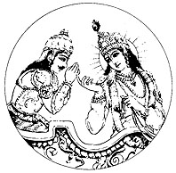

ภควัต-คีตา ฉบับเดิม
คำนำจากผู้จัดพิมพ์
ถึงแม้ว่าหนังสือ ภควทฺ-คีตา จะได้รับความนิยมจากการพิมพ์และการอ่านอย่างแพร่หลาย เดิมทีเป็นตอนหนึ่งของ มหาภารต ซึ่งเป็นวรรณกรรมประวัติศาสตร์ภาษาสันสกฤตของโลกในอดีต มหาภารต กล่าวถึงสถานการณ์ซึ่งนําเ ราม าสู่ยุคปัจจุบันคือ กลิ ยุค (กลิ-ยุค ) ซึ่งเป็นจุดเริ่มต้นของยุคนี้ กลิ ยุค เริ่มขึ้นเมื่อประมาณห้าพันปีก่อน องค์ ศฺรี กฺฤษฺณ ตรัส ภควทฺ-คีตา ให้แก่ อรฺชุน ผู้ทรงเป็นทั้งสหายและสาวกของพระองค์
การสนทนาครั้งนี้เป็นการสนทนาปรัชญาและธรรมะอันยิ่งใหญ่ที่สุดที่มนุษย์เคยรู้จักมา ปรากฏขึ้นก่อนเกิดสงค ราม อย่างรุนแรงในราชวงศ์ กฺษตฺริย ระหว่างโอรสหนึ่งร้อยองค์ของ ธฺฤตราษฺฏฺร และฝ่ายตรงข้าม ปาณฺฑว โอรสของ ปาณฺฑุ ผู้เป็นญาติกัน
ธฺฤตราษฺฏฺร และ ปาณฺฑุ ทรงเป็นพี่น้องกัน ประสูติในราชวงศ์ กุรุ สืบเชื้อสายมาจากพระราชา ภรต ะผู้ทรงปกครองโลกในอดีต พระนาม มหาภารต มาจากพระราชาองค์นี้ เนื่องจาก ธฺฤตราษฺฏฺร ทรงเป็นพระเชษฐา ประสูติมามีพระเนตรพิการ บัลลังก์ซึ่งควรจะเป็นของพระองค์จึงตกมาเป็นของพระอนุชา ปาณฺฑุ
เมื่อ ปาณฺฑุ สวรรคตในขณะที่พระชันษายังไม่มาก โอรสห้าพระองค์ คือ ยุธิษฺฐิร ภีม อรฺชุน นกุล และ สหเทว ทรงมาอยู่ภายใต้การดูแลของดฺริทะราช-ทระ ผู้ทรงขึ้นครองราชย์แทน ปาณฺฑุ ดังนั้น พระโอรสของ ธฺฤตราษฺฏฺร และพระโอรสของ ปาณฺฑุ ทรงเจริญเติบโตในพระราชวังเดียวกัน ทั้งสองราชวงศ์ได้รับการฝึกฝนศิลปะการทําศึกสงค ราม จากพระอาจารย์ผู้ชํานาญ โทฺรณ และมีพระอัยกา ภีษฺม ที่เคารพนับถือทรงเป็นผู้ให้คําปรึกษา
แต่พระโอรสของ ธฺฤตราษฺฏฺร โดยเฉพาะองค์โตสุด ทุโรฺยธน ทรงมีความเกลียดชังและอิจฉา ปาณฺฑว ธฺฤตราษฺฏฺร ผู้ทรงมีพระเนตรบอดและจิตใจอ่อนแอทรงประสงค์ให้โอรสของพระองคขึ้นครองราชย์แทน ปาณฺฑว
เมื่อได้รับอนุญาตจาก ธฺฤตราษฺฏฺร ทุโรฺยธน จึงวางแผนสังหารโอรสทั้งหมดของ ปาณฺฑุ แต่เสด็จอา วิทุร และ กฺฤษฺณ ผู้ทรงเป็นพระญาติคอยระวังปกป้อง ปาณฺฑว จึงรอดพ้นจากการลอบปลงพระชนม์หลายครั้ง
ศฺรี กฺฤษฺณ ทรงมิใช่เป็นบุคคลธรรมดาสามัญ แต่ทรงเป็นองค์ ภควานฺ เสด็จลงมาบนโลกนี้และทรงแสดงบทบาทเป็นเจ้าชายร่วมสมัย ในบทบาทนี้พระองค์ทรงเป็นหลานของพระนาง กุนฺตี หรือพระนาง ปฺฤตฺหา มเหสีของ ปาณฺฑุ และพระมารดาของ ปาณฺฑว ดังนั้น ทั้งสององค์ทรงเป็นญาติกัน และทรงเป็นผู้ทํานุบํารุงพระศาสนานิรันดร กฺฤษฺณ ทรงโปรดโอรสของ ปาณฺฑุ ผู้ทรงคุณธรรม จึงทรงให้ความคุ้มครอง
ในที่สุด ทุโรฺยธน ผู้ฉลาดแกมโกงทรงท้าทาย ปาณฺฑว มาเล่นเกมการพนัน ดุร-โยดฺะนะและพระอนุชาได้รับชัยชนะ พระนาง ทฺระอุปที พระชายาผู้บริสุทธิ์และจงรักภักดีของ ปาณฺฑว ทรงตกเป็นเหยื่อจากการพนันในครั้งนี้ โดยถูกสบประมาทด้วยการพยายามเปลื้องผ้านางต่อหน้าที่ชุมนุมของเจ้าชายและ กฺษตฺริย ทั้งหลาย พลังอํานาจทิพย์ของ กฺฤษฺณ ทรงส่งส่าหรีช่วย ทฺระอุปที มากเท่าที่ถูกเปลื้องออก แต่การพนันที่มีแผนฉ้อโกงไว้ล่วงหน้าได้โกงเอาราชอาณาจักรของ ปาณฺฑว และเนรเทศโอรสของ ปาณฺฑุ ทั้งห้าให้ไปอยู่ในป่าเป็นเวลาสิบสามปี
หลังจากพ้นกําหนดการเนรเทศ ปาณฺฑว ทรงขอราชอาณาจักรซึ่งเป็นสิทธิ์ของพวกตนที่ควรจะได้รับ แต่ ทุโรฺยธน ทรงปฏิเสธอย่างไม่ใยดี ในฐานะที่เป็นโอรส กฺษตฺริย จึงทรงมีหน้าที่ที่จะต้องรับใช้ด้วยการปกครองบ้านเมือง ปาณฺฑว ทั้งห้าจึงทรงขอเพียงห้าหมู่บ้านมาปกครอง แต่ ทุโรฺยธน ทรงปฏิเสธอย่างยโสโอหังว่าจะไม่ให้แม้แต่ที่ดินพอที่จะเอาไปปักเข็ม
ทั้งหมดนี้ ปาณฺฑว ทรงพยายามอดทนและอดกลั้นมาตลอด แต่ครั้งนี้ดูเหมือนว่าสงค ราม จะเป็นสิ่งที่หลีกเลี่ยงไม่ได้
อย่างไรก็ดี ขณะที่เจ้าชายต่าง ๆ ในโลกต่างแบ่งพวกกัน บ้างไปร่วมกับโอรสของ ธฺฤตราษฺฏฺร บ้างไปร่วมกับ ปาณฺฑว กฺฤษฺณ ทรงแสดงบทเป็นทูตสันติภาพให้โอรสของ ปาณฺฑุ โดยเสด็จไปที่ราชสํานักของ ธฺฤตราษฺฏฺร เจรจาสันติวิธีเพื่อสงบศึก แต่เมื่อคําขอร้องของ กฺฤษฺณ ทรงถูกปฏิเสธสงค ราม จึงต้องเกิดขึ้นอย่างแน่นอน
ปาณฺฑว ผู้มีคุณธรรมอันสูงส่ง ทรงทราบดีว่า กฺฤษฺณ คือบุคลิกภาพสูงสุดแห่งพระเจ้า ขณะที่ผู้มีบาปหนาเยี่ยงเหล่าโอรสของ ธฺฤตราษฺฏฺร ไม่เชื่อเช่นนั้น ถึงกระนั้น กฺฤษฺณ ทรงเสนอที่จะร่วมรบด้วยตามที่ผู้ไม่มีความศรัทธาปรารถนา ในฐานะที่ กฺฤษฺณ ทรงเป็นองค์ ภควานฺ จะทรงไม่รบด้วยพระองค์เอง หากฝ่ายใดปรารถนาจะได้กองทัพของพระองค์ไป อีกฝ่ายหนึ่งก็จะได้ กฺฤษฺณ มาเป็นที่ปรึกษาและผู้ช่วย ทุโรฺยธน ทรงเป็นอัจฉริยะทางการเมืองจึงเลือกเอากองทัพของ กฺฤษฺณ ขณะที่ ปาณฺฑว ทรงยินดีอย่างกระตือรือร้นที่จะได้องค์ ศฺรี กฺฤษฺณ มาอยู่ฝ่ายตน
ด้วยเหตุนี้ กฺฤษฺณ จึงทรงมาเป็นสารถีของ อรฺชุน และรับเอาราชรถศึกมาขับ นี่คือจุดกําเนิดของ ภควทฺ-คีตา ขณะที่กองทัพทั้งสองฝ่ายเรียงรายกันเป็นทิวแถวพร้อมรบ ธฺฤตราษฺฏฺร ตรัสถาม สญฺชย เลขาของพระองค์อย่างสนพระทัยว่า “พวกเขากําลังทําอะไรกัน?”
โครงเรื่องได้วางไว้เรียบร้อยแล้ว คราวนี้จะกล่าวโดยย่อถึงการแปล และการอธิบาย
โดยทั่วไปผู้ที่แปล ภควทฺ-คีตา เป็นภาษาอังกฤษจะกําจัดเอา กฺฤษฺณ ออกไปห่าง ๆ เพื่อตนเองจะได้เสนอแนวคิดและแนวปรัชญาว่าประวัติศาสตร์มหา ภรต ะเป็นเพียงนวนิยายประหลาดโบราณ และ กฺฤษฺณ ทรงเป็นเพียงเครื่องมือทางกวีนิพนธ์เพื่อ เสนอแนวคิดแห่งอัจฉริยภาพของตน หรืออย่างดี กฺฤษฺณ ก็ทรงเป็นเพียงตัวประกอบทางประวัติศาสตร์
แต่องค์ ศฺรี กฺฤษฺณ ทรงเป็นทั้งจุดมุ่งหมาย และแก่นสารที่สําคัญของ ภควทฺ-คีตา ดังที่ ภควทฺ-คีตา ได้กล่าวไว้
ดังนั้น ในการแปลและอธิบายหนังสือเล่มนี้จะนําผู้อ่านมุ่งตรงไปหา กฺฤษฺณ แทนที่จะนําเราออกห่างจากพระองค์ ภควทฺ-คีตา เล่มนี้ทั้งเล่มมีความคงเส้นคงวาและเข้าใจได้ เพราะ กฺฤษฺณ ทรงเป็นผู้ตรัสและทรงเป็นเป้าหมายสูงสุด ภควทฺ-คีตา ฉบับเดิม เล่มนี้นําเสนอเป็นคัมภีร์ที่ยิ่งใหญ่ตามความเป็นจริง
ผู้จัดพิมพ์
อุทิศแด่
แด่
ศฺรีล พลเทว วิทฺยาภูษณ
ผู้เขียนคำอธิบาย โควินฺท-ภาษฺย
อย่างสวยงาม
เกี่ยวกับ
ปรัชญา เวทานฺต
คำปรารภ
เดิมทีอาตมาได้เขียน ภควทฺ-คีตา ฉบับเดิม ในรูปเล่มที่ท่านกำลังอ่านอยู่ใน ขณะนี้ เมื่อหนังสือเล่มนี้พิมพ์ครั้งแรก ต้นฉบับเดิมได้ถูกตัดให้สั้นลงเหลือเพียง 400 หน้าโดยไม่มีภาพประกอบ และส่วนมากไม่มีคำอธิบายโศลก ในหนังสือเล่มอื่น ๆ ของอาตมา เช่น ศฺรีมทฺ-ภาควตมฺ ศรีอุปนิษัท ฯลฯ ระบบการเขียนคืออาตมาจะ เขียนโศลกเหมือนเดิมในภาษาสันสกฤต เขียนโศลกภาษาโรมัน แปลแต่ละคำเป็นภาษา อังกฤษ แปลโศลก และให้คำอธิบายโศลก ดังนี้ทำให้หนังสือเล่มนี้เป็นที่เชื่อถือได้ ถูก หลักวิชาการเป็นอย่างยิ่ง ทำให้ความหมายมีหลักฐานอยู่ในตัว อาตมารู้สึกไม่สบายใจ หากต้องตัดบางส่วนออกจากต้นฉบับเดิม แต่เมื่อความต้องการ ภควทฺ-คีตา ฉบับเดิม นี้ มีมากขึ้นตามลำดับ ทั้งนักวิชาการและสาวกของอาตมาขอร้องให้พิมพ์หนังสือเล่มนี้ ให้เหมือนกับต้นฉบับเดิม ดังนั้น เราจึงพิมพ์หนังสือแห่งวิชาความรู้อันยิ่งใหญ่เหมือนกับ ต้นฉบับเดิม พร้อมคำอธิบายของ ปรมฺปรา (ระบบการถ่ายทอดวิชาจากพระอาจารย์ สู่ศิษย์) อย่างสมบูรณ์ เพื่อสถาปนาขบวนการ กฺฤษฺณ จิตสำนึกให้มั่นคงและเจริญ รุ่งเรืองสืบต่อไป
ขบวนการ กฺฤษฺณ จิตสำนึกของเราเป็นของจริงแท้ เชื่อถือได้ตามประวัติศาสตร์ เป็นธรรมชาติและเป็นทิพย์ เพราะว่ามีพื้นฐานมาจาก ภควทฺ-คีตา ฉบับเดิม เราจึงค่อยๆ กลายมาเป็นขบวนการที่ได้รับความนิยมสูงสุดในโลก โดยเฉพาะในกลุ่มชนวัยรุ่น และ ได้รับความสนใจมากขึ้นในกลุ่มผู้อาวุโส ดังเช่นคุณพ่อและคุณปู่ของสาวกอาตมาได้ ให้การสนับสนุนด้วยการมาสมัครเป็นสมาชิกตลอดชีพในสมาคมนานาชาติเพื่อ กฺฤษฺณ จิตสำนึกอันยิ่งใหญ่ของเราที่นครลอสแอนเจลิส คุณพ่อและคุณแม่หลายท่านได้เข้าพบ อาตมาและแสดงความรู้สึกขอบคุณที่อาตมาได้เป็นผู้นำขบวนการ กฺฤษฺณ จิตสำนึกทั่ว โลก บางท่านกล่าวว่าชาวอเม ฤคฺ ันโชคดีมากที่อาตมาได้เริ่มขบวนการ กฺฤษฺณ จิตสำนึก ในอเม ฤคฺ า อันที่จริงพระบิดาองค์เดิมของขบวนการนี้คือ ศฺรี กฺฤษฺณ เพราะขบวนการ นี้ได้เริ่มมาเป็นเวลานานแล้วและถูกถ่ายทอดลงมายังสังคมมนุษย์โดยระบบ ปรมฺปรา หากมีความดีความชอบเกี่ยวกับงานนี้คงไม่ใช่เป็นของอาตมาผู้เดียว แต่เนื่องมาจาก พระอาจารย์ทิพย์นิรันดรของอาตมา พระกรุณาธิคุณเจ้า โอํ วิษฺณุปาท ปรมหํส ปริวฺราชกาจารฺย 108 ศฺรี ศฺรีมทฺ ภกฺติสิทฺธานฺต สรสฺวตี โคสฺวามี มหาราช ปฺรภุปาท
หากอาตมาจะได้รับความดีความชอบในเรื่องนี้ เป็นเพราะว่าอาตมาพยายาม เสนอ ภควทฺ-คีตา ฉบับเดิมนี้ให้เหมือนเดิมโดยไม่มีการเปลี่ยนแปลง ก่อนที่ ภควทฺ-คีตา ฉบับเดิม ของอาตมาจะออก ภควทฺ-คีตา ภาษาอังกฤษที่มีอยู่ในตลาดเกือบทั้งหมดได้ เขียนขึ้น ด้วยความมักใหญ่ใฝ่สูงของบางคน แต่ความพยายามของเราในการเสนอ ภควทฺ-คีตา ฉบับเดิม นี้เพื่อเสนอพระภารกิจของบุคลิกภาพสูงสุดแห่งพระเจ้า กฺฤษฺณ ภารกิจ ของเราคือเสนอพระราชประสงค์ของ กฺฤษฺณ มิใช่เสนอความต้องการของนักคาดคะเน ทางโลก เช่น นักการเมือง นักปราชญ์ และนักวิทยาศาสตร์ เพราะพวกนี้มีความรู้เกี่ยว กับ กฺฤษฺณ น้อยมาก แม้ว่าจะมีความรู้ทางด้านอื่นมากมาย เมื่อ กฺฤษฺณ ตรัสว่า มนฺ-มนา ภว มทฺ-ภโกฺต มทฺ-ยาชี มาํ นมสฺกุรุ - ฯลฯ ไม่เหมือนกับพวกที่เรียกตนเอง ว่าเป็นนักวิชาการ เราจะไม่กล่าวว่า กฺฤษฺณ และดวงวิญญาณของพระองค์ต่างกัน กฺฤษฺณ ทรงมีความสมบูรณ์ จึงไม่มีข้อแตกต่างระหว่างพระนาม พระวรกาย คุณสมบัติ และลีลา ของพระองค์ ฯลฯ ตำแหน่งอันสมบูรณ์บริบูรณ์ของ กฺฤษฺณ นี้ เป็นสิ่งที่เข้าใจยาก สำหรับผู้ที่ไม่ใช่สาวกของ กฺฤษฺณ ในระบบ ปรมฺปรา โดยทั่วไปผู้ที่เรียกตนเองว่าเป็น นักวิชาการ นักการเมือง นักปราชญ์ และสฺวามี ถึงแม้ไม่มีความรู้เกี่ยวกับ กฺฤษฺณ อย่าง สมบูรณ์ พยายามขจัดหรือปลงพระชมน์ กฺฤษฺณ ขณะที่เขียนคำอธิบาย ภควทฺ-คีตา ที่ เชื่อถือไม่ได้ เช่นนี้เรียกว่า มายาวาท-ภาษฺย องค์ ศฺรี ไจตนฺย ทรงเตือนเราเกี่ยวกับบุคคล ที่เชื่อไม่ได้ประเภทนี้ ศฺรี ไจตนฺย ตรัสไว้อย่างชัดเจนว่า ผู้ใดพยายามเข้าใจ ภควทฺ-คีตา จากแนวคิดของ มายาวาที จะเป็นผู้กระทำความผิดพลาดอย่างมหันต์ ผลแห่งความผิด พลาดนี้จะนำนักศึกษาผู้หลงทางจาก ภควทฺ-คีตา ให้สับสนอยู่บนวิถีทางไปสู่ความเป็น ทิพย์ และไม่สามารถกลับคืนสู่เหย้าคืนสู่องค์ ภควานฺ อย่างแน่นอน
จุดมุ่งหมายของเราเพียงต้องการเสนอ ภควทฺ-คีตา ฉบับเดิม เพื่อนำทาง นักศึกษาที่อยู่ในสภาวะวัตถุให้บรรลุถึงเป้าหมาย เช่นเดียวกับที่องค์ ศฺรี กฺฤษฺณ เสด็จ ลงมาบนโลกนี้วันละครั้งตามเวลาของพระ พฺรหฺมา หรือทุก ๆ 8,600,000,000 ปี จุด มุ่งหมายนี้ได้กล่าวไว้ใน ภควทฺ-คีตา เราต้องยอมรับความจริงเช่นนี้ มิฉะนั้น จะไม่มี ประโยชน์อันใดที่จะพยายามเข้าใจ ภควทฺ-คีตา และ กฺฤษฺณ ผู้ตรัส องค์ กฺฤษฺณ ตรัส ภควทฺ-คีตา ครั้งแรกให้สุริยเทพหลายร้อยล้านปีมาแล้ว เราต้องยอมรับความจริงเช่น นี้เพื่อให้เข้าใจจุดสำคัญตามประวัติศาสตร์ของ ภควทฺ-คีตา โดยไม่ตีความหมายให้ผิด ไปจากองค์ กฺฤษฺณ ผู้ทรงเป็นต้นตำรับ การตีความ ภควทฺ-คีตา โดยไม่อ้างอิงถึงพระ ราชประสงค์ของ กฺฤษฺณ เป็นบาปอันใหญ่หลวง เพื่อปกป้องตัวเราจากความบาปนี้ เรา ต้องเข้าใจว่า กฺฤษฺณ คือบุคลิกภาพสูงสุดแห่งพระเจ้า ดังเช่น อรฺชุน สาวกรูปแรกที่ เข้าใจจาก กฺฤษฺณ โดยตรง การเข้าใจ ภควทฺ-คีตา เช่นนี้จะเป็นผลดีและเชื่อถือได้เพื่อ ประโยชน์ของสังคมมนุษย์ในการที่จะทำให้ภารกิจของชีวิตมนุษย์สมบูรณ์อย่างแท้จริง
ขบวนการ กฺฤษฺณ จิตสำนึกเป็นหัวใจสำคัญของสังคมมนุษย์ เพราะจะให้ความสมบูรณ์ สูงสุดในชีวิต เป็นเช่นนี้ได้อย่างไรนั้นได้อธิบายไว้ใน ภควทฺ-คีตา ด้วยความอับโชคที่นัก มายา กล ในโลกวัตถุได้ฉวยโอกาสจาก ภควทฺ-คีตา ผลักดันเอาแนวโน้มอันเลวท ราม ของตนนำผู้คน ไปในทางที่ผิดเกี่ยวกับความเข้าใจหลักชีวิตง่าย ๆ อย่างถูกต้อง ทุกคนควรรู้ว่าองค์ ภควานฺ หรือ กฺฤษฺณ ทรงยิ่งใหญ่เพียงใด และทุกคนควรรู้สถานภาพอันแท้จริงของสิ่งมี ชีวิต ทุกคนควรรู้ว่าสิ่งมีชีวิตเป็นผู้รับใช้นิรันดร และนอกเสียจากว่าเ ราม ารับใช้ กฺฤษฺณ มิฉะนั้นแล้วเราจะไปรับใช้มายา หรือความหลงในรูปแบบต่าง ๆ ของธรรมชาติวัตถุสาม ระดับ จากนั้นเราก็จะเวียนว่ายในวัฏจักรแห่งการเกิดและการตายชั่วกัลปาวสาน แม้ กระทั่งนักคาดคะเน มายาวาที ที่คิดว่าตนเองหลุดพ้น ก็ยังต้องเวียนว่ายอยู่ในวัฏจักร นี้ ความรู้นี้เป็นพื้นฐานของศาสตร์อันยิ่งใหญ่ และทุก ๆ ชีวิตควรจะรับฟังเพื่อประโยชน์ ของตนเอง
ประชาชนทั่วไปโดยเฉพาะใน กลิ ยุค ( กลิ - ยุค ) ถูกโลมเล้าไปด้วยพลังงาน เบื้องต่ำของ กฺฤษฺณ ทำให้คิดผิดไปว่า ความเจริญก้าวหน้าที่อำนวยความสะดวกสบาย ทางวัตถุจะทำให้เขามีความสุข โดยไม่รู้ว่าธรรมชาติวัตถุหรือธรรมชาติภายนอกนั้นแข็งแกร่ง มาก ทุก ๆ คนถูกพันธนาการอย่างแน่นหนาด้วยกฎอันเข้มงวดของธรรมชาติวัตถุ สิ่งมี ชีวิตเป็นละอองอณูขององค์ ภควานฺ ผู้มีความสุข และหน้าที่ตามธรรมชาติของเราคือการ รับใช้องค์ ภควานฺ โดยตรง แต่ด้วยมนต์สะกดแห่งความหลง เราพยายามหาความสุขด้วย การรับใช้เพื่อสนองประสาทสัมผัสส่วนตัวของเราในรูปแบบต่าง ๆ ซึ่งไม่มีวันที่จะทำให้ มีความสุข แทนที่จะสนองประสาทสัมผัสวัตถุของตนเอง เราควรสนองประสาทสัมผัส ขององค์ ภควานฺ และนี่คือความสมบูรณ์สูงสุดของชีวิต กฺฤษฺณ ทรงมีพระราชประสงค์ เช่นนี้ และทรงดำริเช่นนี้ เราต้องทำความเข้าใจกับความสำคัญของ ภควทฺ-คีตา ขบ วนการ กฺฤษฺณ จิตสำนึกของเราสอนคนทั่วโลกให้ทราบถึงจุดสำคัญนี้ และเนื่องจาก เราไม่บิดเบือนเนื้อหาสาระของ ภควทฺ-คีตา ฉบับเดิม ผู้ที่มีความสนใจอย่างจริงจังเพื่อ รับประโยชน์จากการศึกษา ภควทฺ-คีตา จะต้องได้รับความช่วยเหลือจากขบวนการ กฺฤษฺณ จิตสำนึกเพื่อให้เข้าใจภาคปฏิบัติของ ภควทฺ-คีตา ภายใต้การแนะนำขององค์ ภควานฺ ดัง นั้น เราหวังว่าผู้คนจะได้รับประโยชน์อย่างใหญ่หลวง จากการศึกษา ภควทฺ-คีตา ฉบับเดิม ดังที่เราเสนออยู่นี้ แม้มีเพียงผู้เดียวมาเป็นสาวกผู้บริสุทธิ์ของ กฺฤษฺณ จะพิจารณา ว่าความพยายามของพวกเราประสบผลสำเร็จแล้ว
เอ. ซี. บัฺคธิเวดันธะ สวะมิ
วันที่ 12 พฤษภาคม 1971
ซิดนี่ ออสเตรเลีย
คำนำ
โอํ อชฺญาน-ติมิรานฺธสฺย
ชฺญานาญฺชน-ศลากยา
จกฺษุรฺ อุนฺมีลิตํ เยน
ตไสฺม ศฺรี-คุรเว นมฮ
ศฺรี-ไจตนฺย-มโน-′ภีษฺฏํ
สฺตฺหาปิตํ เยน ภู-ตเล
สฺวยํ รูปฮ กทา มหฺยํ
ททาติ สฺว-ปทานฺติกมฺ
ข้าพเจ้าได้เกิดมาอยู่ในความมืดแห่งอวิชชา พระอาจารย์ทิพย์ได้เปิดดวงตาของข้าพเจ้าด้วยแสงสว่างแห่งวิชาความรู้ ข้าพเจ้าขอแสดงความเคารพอย่างสูงแด่ท่าน
เมื่อไร ศฺรีล รูป โคสฺวามี ปฺรภุปาท ผู้สถาปนาภารกิจในโลกวัตถุนี้เพื่อสนองพระราชประสงค์ขององค์ ไจตนฺย ได้โปรดให้ที่พึ่งภายใต้พระบาทรูปดอกบัวของท่านแด่ข้าพเจ้า
วเนฺท ′หํ ศฺรี-คุโรฮ ศฺรี-ยุต-ปท-
กมลํ ศฺรี-คุรูนฺ ไวษฺณวาํศฺ จ
ศฺรี-รูปํ สาคฺรชาตํ สห-คณ-
รฆุนาตฺหานฺวิตํ ตํ ส-ชีวมฺ
สาไทฺวตํ สาวธูตํ ปริชน-
สหิตํ กฺฤษฺณ-ไจตนฺย-เทวํ
ศฺรี-ราธา-กฺฤษฺณ-ปาทานฺ สห-คณ-
ลลิตา-ศฺรี-วิศาขานฺวิตาํศฺ จ
ข้าพเจ้าขอแสดงความเคารพอย่างสูงแด่พระบาทรูปดอกบัวของพระอาจารย์ทิพย์และขอแสดงความเคารพอย่างสูงแด่พระบาทของ ไวษฺณว ทั้งหลาย ข้าพเจ้าขอแสดงความเคารพอย่างสูงแด่พระบาทรูปดอกบัวของ ศฺรีล รูป โคสฺวามี พร้อมทั้งพี่ชาย สนาตน โคสฺวามี รวมทั้ง รฆุนาตฺห ทาส และ รฆุนาตฺห ภฏฺฏ , โคปาล ภฏฺฏ , และ ศฺรีละ ชีว โคสฺวามี ข้าพเจ้าขอแสดงความเคารพอย่างสูงแด่องค์ ศฺรี กฺฤษฺณ ไจตนฺย และ นิตฺยานนฺท พร้อมทั้ง อไทฺวต อาจารฺย , คทาธร , ศฺรีวาส , และสาวกรูปอื่นๆ ข้าพเจ้าขอแสดงความเคารพอย่างสูงแด่ ศฺรีมตี ราธาราณี และ ศฺรี กฺฤษฺณ รวมทั้งสหายของท่านทั้งสอง ศฺรี ลลิตา และ วิศาขา
เห กฺฤษฺณ กรุณา-สิโนฺธ
ทีน-พโนฺธ ชคตฺ-ปเต
โคเปศ โคปิกา-กานฺต
ราธา-กานฺต นโม ′สฺตุ เต
โอ้ กฺฤษฺณ ที่รัก พระองค์ทรงเป็นสหายของผู้ที่มีความทุกข์และทรงเป็นแหล่งกำเนิดแห่งการสร้าง พระองค์ทรงเป็นเจ้านายของโกปีและเป็นคู่รักของ ราธาราณี ข้าพเจ้าขอแสดงความเคารพอย่างสูงแด่พระองค์
ตปฺต-กาญฺจน-คะอุรางฺคิ
ราเธ วฺฤนฺทาวเนศฺวริ
วฺฤษภานุ-สุเต เทวิ
ปฺรณมามิ หริ-ปฺริเย
ข้าพเจ้าขอแสดงความเคารพอย่างสูงแด่ ราธาราณี ผู้มีผิวพรรณอร่ามดุจดั่งทองคำ และเป็นราชินีแห่ง วฺฤนฺทาวน พระนางเป็นธิดาของพระราชา วฺฤษภานุ และเป็นที่รักยิ่งขององค์ ศฺรี กฺฤษฺณ
วาญฺฉา-กลฺป-ตรุภฺยศฺ จ
กฺฤปา-สินฺธุภฺย เอว จ
ปติตานาํ ปาวเนโภฺย
ไวษฺณเวโภฺย นโม นมฮ
ข้าพเจ้าขอแสดงความเคารพอย่างสูงแด่ ไวษฺณว สาวกทั้งหลายขององค์ ภควานฺ ผู้เปรียบเสมือนต้นกัลปพฤกษ์ ที่สามารถทำให้ความปรารถนาของทุกคนสมประสงค์ และยังเปี่ยมไปด้วยความเมตตากรุณาต่อดวงวิญญาณที่ตกต่ำ
ศฺรี-กฺฤษฺณ-ไจตนฺย ปฺรภุ-นิตฺยานนฺท
ศฺรี-อไทฺวต คทาธร ศฺรีวาสาทิ-คะอุร-ภกฺต-วฺฤนฺท
ข้าพเจ้าขอแสดงความเคารพอย่างสูงแด่ ศฺรี กฺฤษฺณ ไจตนฺย , ปฺรภุ นิตฺยานนฺท ,ศฺรี อไทฺวต , คทาธร , ศฺรีวาส และสาวกทั้งหลายในสายแห่งการอุทิศตนเสียสละ
หเร กฺฤษฺณ หเร กฺฤษฺณ กฺฤษฺณ กฺฤษฺณ หเร หเร
หเร ราม หเร ราม ราม ราม หเร หเร
ภควทฺ-คีตา หรือที่เรียกอีกชื่อหนึ่งว่า คีโตปนิษทฺ เป็นหัวใจของความรู้พระ เวท และเป็นหนึ่งในอุปนิษทฺ ที่สำคัญที่สุดในวรรณกรรมพระ เวท แน่นอนว่ามีคำอธิบาย ภควทฺ-คีตา - เป็นภาษาอังกฤษมากมาย เราอาจถามว่ามันจำเป็นด้วยหรือที่จะต้องอธิบายกันอีกครั้งหนึ่ง ภควทฺ-คีตา ฉบับนี้จะอธิบายดังนี้ เมื่อไม่นานมานี้มีสุภาพสตรีชาวอเม ฤคฺ ันผู้หนึ่งได้ขอร้องให้อาตมาแนะนำหนังสือ ภควทฺ-คีตา ที่แปลเป็นภาษาอังกฤษ ในอเม ฤคฺ ามีหนังสือ ภควทฺ-คีตา ที่เป็นภาษาอังกฤษมากมาย แต่เท่าที่อาตมาเห็น ไม่เพียงแต่ในอเม ฤคฺ าเท่านั้น แม้แต่ในอินเดียก็เช่นกัน เมื่อพูดกันอย่างจริง ๆ ไม่มีเล่มใดเลยที่เชื่อถือได้ เพราะว่าหนังสือเกือบทุกเล่มผู้อธิบายได้แสดงความคิดเห็นของตนเอง โดยไม่ได้สัมผัสกับเนื้อหาสาระอันแท้จริงของ ภควทฺ-คีตา
เนื้อหาสาระอันแท้จริงของ ภควทฺ-คีตา ได้กล่าวไว้ในตัวของ ภควทฺ-คีตา เองดังนี้ ถ้าเราต้องการรับประทานยา เราต้องปฏิบัติตามคำสั่งที่เขียนอยู่บนฉลากยา เราไม่ควรรับประทานยาตามความต้องการที่ผิดพลาดของเราหรือจากคำแนะนำของเพื่อนเราต้องรับประทานยาตามคำสั่งที่อยู่บนฉลาก หรือตามคำสั่งแพทย์ เช่นเดียวกัน ภควทฺ-คีตา ควรได้รับการยอมรับเหมือนกับผู้ตรัสได้ให้ไว้ ผู้ตรัส ภควทฺ-คีตา คือองค์ ศฺรี กฺฤษฺณ พระองค์ทรงได้รับการกล่าวขานไว้ในทุก ๆ หน้าของ ภควทฺ-คีตา ว่าเป็นบุคลิกภาพสูงสุดแห่งพระเจ้า องค์ ภควานฺ คำว่า ภควานฺ บางครั้งหมายถึงมนุษย์ผู้มีอำนาจมาก หรือเทวดาผู้มีอำนาจมาก และแน่นอน คำว่า ภควานฺ ในที่นี้หมายถึงองค์ ศฺรี กฺฤษฺณ บุคลิกภาพผู้ยิ่งใหญ่ แต่ในขณะเดียวกันเราควรรู้ว่า องค์ ศฺรี กฺฤษฺณ เป็นบุคลิกภาพสูงสุดแห่งพระเจ้า ดังที่ได้ยืนยันไว้โดยพระอาจารย์ผู้ยิ่งใหญ่ทั้งหลาย เช่นชังคะราชารยะ, รามานุชาจารฺย , มธฺวาจารฺย , นิมบารคะ สวามี, ศฺรี ไจตนฺย มหาปฺรภุ และผู้เชื่อถือได้ในวิชาพระ เวท อีกมากมายในประเทศอินเดีย กฺฤษฺณ ทรงได้สถาปนาพระองค์เองว่าเป็นบุคลิกภาพสูงสุดแห่งพระเจ้า ใน ภควทฺ-คีตา,พฺรหฺม-สํหิตา, และ ปุราณ ทั้งหลาย โดยเฉพาะ ศฺรีมทฺ-ภาควตมฺ ซึ่งเรียกอีกชื่อหนึ่งว่า ภาควต ปุราณ (กฺฤษฺณสฺ ตุ ภควานฺ สฺวยมฺ) ฉะนั้น เราควรจะรับเอา ภควทฺ-คีตา ฉบับเดิม ตามที่บุคลิกภาพสูงสุดแห่งพระเจ้าได้ตรัสไว้ในบทที่สี่ ของ ภควทฺ-คีตา (4.1-3) ว่า
อิมํ วิวสฺวเต โยคํ
โปฺรกฺตวานฺ อหมฺ อวฺยยมฺ
วิวสฺวานฺ มนเว ปฺราห
มนุรฺ อิกฺษฺวากเว ′พฺรวีตฺ
เอวํ ปรมฺปรา-ปฺราปฺตมฺ
อิมํ ราชรฺษโย วิทุฮ
ส กาเลเนห มหตา
โยโค นษฺฏฮ ปรนฺ-ตป
ส เอวายํ มยา เต ′ทฺย
โยคฮ โปฺรกฺตฮ ปุราตนฮ
ภโกฺต ′สิ เม สขา เจติ
รหสฺยํ หฺยฺ เอตทฺ อุตฺตมมฺ
ณ ที่นี้พระองค์ตรัสแก่ อรฺชุน ว่า ระบบ โยค แห่ง ภควทฺ-คีตา นี้ ครั้งแรกพระองค์ตรัสแก่สุริยเทพ สุริยเทพทรงอธิบายแก่ มนุ และ มนุ ทรงอธิบายให้ อิกฺษฺวากุ ด้วยระบบ ปรมฺปรา นี้ จากผู้ตรัสผู้หนึ่งมาสู่ผู้ตรัสอีกผู้หนึ่ง ระบบ โยค นี้จึงได้ถูกถ่ายทอดลงมา เมื่อกาลเวลาผ่านไปนานระบบนี้ได้สูญหายไป ฉะนั้น พระองค์ทรงตรัส ภควทฺ-คีตา ขึ้นอีกครั้งหนึ่ง ครั้งนี้ตรัสให้แก่ อรฺชุน ณ สมรภูมิ กุรุเกฺษตฺร
พระองค์ทรงตรัสแก่ อรฺชุน ว่าที่พระองค์ทรงถ่ายทอดความลับสุดยอดนี้ให้แก่ อรฺชุน เนื่องจาก อรฺชุน เป็นทั้งสาวกและสหาย คำอธิบายในประเด็นนี้คือ ภควทฺ-คีตา - เป็นหนังสือสำหรับสาวกขององค์ ภควานฺ มีนักทิพย์นิยมอยู่สามประเภทคือ ชฺญานี โยคี, และภกฺต หรืออีกนัยหนึ่ง คือผู้ที่ไม่เชื่อในรูปลักษณ์, นักบำเพ็ญฌาน และสาวก ณ ที่นี้ ทรงตรัสแก่ อรฺชุน อย่างชัดเจนว่า พระองค์ทรงให้ อรฺชุน เป็นผู้รับสาส์นคนแรกของ ปรมฺปรา ใหม่นี้ เพราะว่าสายเก่าได้ขาดตอนไป ดังนั้น จึงเป็นพระราชประสงค์ของพระองค์ที่จะสถาปนา ปรมฺปรา ขึ้นอีกครั้งหนึ่ง ซึ่งเป็นสายเดียวกันกับสายที่ทรงถ่ายทอดให้กับสุริยเทพ และทรงเป็นพระราชประสงค์ของพระองค์ที่จะให้ อรฺชุน เป็นต้นตำรับที่น่าเชื่อถือได้ในการเข้าใจ ภควทฺ-คีตา ดังนั้น เราจะเห็นว่า ภควทฺ-คีตา ได้ถูกสอนให้ อรฺชุน โดยเฉพาะ เพราะ อรฺชุน เป็นสาวก ศิษย์โดยตรงและเป็นสหายสนิทของ กฺฤษฺณ ฉะนั้น ผู้ที่จะเข้าใจ ภควทฺ-คีตา ได้ดีที่สุดนั้น ควรจะมีคุณสมบัติคล้าย อรฺชุน คือจะต้องเป็นสาวกผู้ที่มีความสัมพันธ์โดยตรงกับพระองค์ ในทันทีที่เ ราม าเป็นสาวกเราจะมีความสัมพันธ์กับ กฺฤษฺณ โดยตรง เรื่องนี้เป็นเรื่องที่ละเอียดอ่อนและประณีตมากแต่จะกล่าวโดยสรุปว่า สาวกมีความสัมพันธ์กับบุคลิกภาพสูงสุดแห่งพระเจ้าหนึ่งในห้ารูปแบบดังต่อไปนี้
1. เราอาจจะเป็นสาวกแบบไม่แสดงออก
2. เราอาจจะเป็นสาวกแบบแสดงออก
3. เราอาจจะเป็นสาวกแบบเพื่อน
4. เราอาจจะเป็นสาวกแบบบิดามารดา
5. เราอาจจะเป็นสาวกแบบคู่รัก
อรฺชุน ทรงมีความสัมพันธ์กับ กฺฤษฺณ แบบเพื่อน มีความแตกต่างกันอย่างสิ้นเชิงระหว่างมิตรภาพแบบนี้กับมิตรภาพในโลกวัตถุ มิตรภาพเช่นนี้เป็นมิตรภาพทิพย์ที่ไม่ใช่ใครก็มีได้ แน่นอนที่ทุกคนมีความสัมพันธ์โดยเฉพาะกับองค์ ภควานฺ และความสัมพันธ์นั้นจะได้รับการฟื้นฟูขึ้นจากความสมบูรณ์แห่งการอุทิศตนเสียสละรับใช้ด้วยความจงรักภักดี แต่ในสถานการณ์ของชีวิตปัจจุบัน ไม่เพียงแต่เราจะลืมองค์ ภควานฺเท่านั้น แต่เรายังลืมความสัมพันธ์นิรันดรที่มีต่อพระองค์ด้วย มีสิ่งมีชีวิตทั้งหมดนับเป็นจำนวนพัน ๆ ล้าน แต่ละชีวิตจะมีความสัมพันธ์โดยเฉพาะกับพระองค์นิรันดร เช่นนี้เรียกว่า สฺวรูป จากวิธีแห่งการอุทิศตนเสียสละรับใช้ด้วยความจงรักภักดี เราสามารถฟื้นฟู สฺวรูป นี้ได้ ในระดับนี้เรียกว่า สฺวรูป-สิทฺธิ หมายถึงความสมบูรณ์ในสถานภาพพื้นฐานของเรา ดังนั้น อรฺชุน ทรงเป็นสาวกและได้มาสัมผัสกับองค์ ภควานฺ ฉันมิตร
อรฺชุน ทรงยอมรับเอา ภควทฺ-คีตา นี้มาได้อย่างไรเราควรให้ความสนใจลักษณะท่าทีแห่งการยอมรับนี้ ได้ให้ไว้ในบทที่สิบ (10.12-14)
อรฺชุน อุวาจ
ปรํ พฺรหฺม ปรํ ธาม
ปวิตฺรํ ปรมํ ภวานฺ
ปุรุษํ ศาศฺวตํ ทิวฺยมฺ
อาทิ-เทวมฺ อชํ วิภุมฺ
อาหุสฺ ตฺวามฺ ฤษยฮ สเรฺว
เทวรฺษิรฺ นารทสฺ ตตฺหา
อสิโต เทวโล วฺยาสฮ
สฺวยํ ไจว พฺรวีษิ เม
สรฺวมฺ เอตทฺ ฤตํ มเนฺย
ยนฺ มาํ วทสิ เกศว
น หิ เต ภควนฺ วฺยกฺติํ
วิทุรฺ เทวา น ทานวาฮ
“ อรฺชุน ตรัสว่า พระองค์ทรงเป็นบุคลิกภาพสูงสุดแห่งพระเจ้า ทรงเป็นที่พำนักพักพิงสูงสุด ทรงเป็นผู้บริสุทธิ์ที่สุด ทรงเป็นสัจธรรมที่สมบูรณ์ พระองค์ทรงเป็นอมตะ ทรงเป็นทิพย์ ทรงเป็นปฐมองค์ ไม่มีการเกิด และทรงเป็นผู้ยิ่งใหญ่ที่สุด นักปราชญ์ผู้ยิ่งใหญ่ทั้งหลาย เช่น นารท อสิต เทวล และ วฺยาส ได้ยืนยันความจริงเช่นนี้เกี่ยวกับพระองค์ และมาบัดนี้พระองค์ทรงประกาศให้ข้าได้ทราบ โอ้ กฺฤษฺณ ข้าพเจ้าขอน้อมรับโดยดุษฏีว่าทุกสิ่งที่พระองค์ตรัสเป็นสัจธรรม แม้แต่เหล่าเทวดาหรือเหล่ามารก็ไม่สามารถเข้าใจบุคลิกภาพแห่งพระองค์ได้”
หลังจากที่ อรฺชุน ทรงสดับฟัง ภควทฺ-คีตา จากบุคลิกภาพสูงสุดแห่งพระเจ้าแล้วอรฺชุน ทรงยอมรับองค์ ศฺรี กฺฤษฺณ ว่าเป็น ปรํ พฺรหฺม หรือ พฺรหฺมนฺ สูงสุด ทุกชีวิตเป็น พฺรหฺมนฺ แต่ว่าชีวิตที่สูงสุดหรือบุคลิกภาพสูงสุดแห่งพระเจ้า คือ พฺรหฺมนฺ สูงสุด ปรํ ธาม หมายความว่าพระองค์ทรงเป็นที่พำนักพักพิงสูงสุดสำหรับทุกสิ่งทุกอย่าง ปวิตฺรมฺ หมายความว่าพระองค์ทรงมีความบริสุทธิ์ปราศจากมลทินทางวัตถุ ปุรุษมฺ หมายความว่า พระองค์ทรงเป็นผู้ที่มีความสุขเกษมสำราญสูงสุด ศาศฺวตมฺ เป็นอมตะ ทิวฺยมฺ เป็นทิพย์ อาทิ-เทวมฺ บุคลิกภาพสูงสุดแห่งพระเจ้าองค์เดิมแท้ อชมฺ ไม่มีการเกิด และ วิภุมฺ ผู้ยิ่งใหญ่ที่สุด
เราอาจคิดว่า กฺฤษฺณ ทรงเป็นพระสหายของ อรฺชุน อรฺชุน จึงทรงตรัสสรรเสริญเยินยอพระองค์ แต่เพื่อขจัดความสงสัยเช่นนี้ให้ออกจากจิตใจของผู้อ่าน ภควทฺ-คีตา อรฺชุน จึงทรงยืนยันคำสรรเสริญนี้ในโศลกต่อมาว่า กฺฤษฺณ ทรงได้รับการยอมรับว่าเป็นบุคลิกภาพสูงสุดแห่งพระเจ้า ไม่เพียงแต่ อรฺชุน เท่านั้น แม้แต่ผู้ที่น่าเชื่อถือได้ เช่น นารท อสิต เทวล และ วฺยาสเทว ท่านเหล่านี้เป็นบุคลิกภาพผู้ยิ่งใหญ่ที่แจกจ่ายความรู้พระ เวท เหมือนดังเช่นที่ อาจารฺย ทั้งหลายยอมรับ ดังนั้น อรฺชุน ได้ตรัสแด่ กฺฤษฺณ ว่าทรงยอมรับทุกสิ่งทุกอย่างที่ กฺฤษฺณ ตรัสว่ามีความสมบูรณ์บริบูรณ์ สรฺวมฺ เอตทฺ ฤตํ มเนฺย “ข้าพเจ้ายอมรับทุกสิ่งทุกอย่างที่พระองค์ตรัสว่าเป็นสัจธรรม” อรฺชุน ตรัสว่า บุคลิกภาพแห่งพระเจ้านี้ยากนักที่จะเข้าใจ แม้แต่เหล่าเทวดาผู้ยิ่งใหญ่ก็ไม่สามารถเข้าใจพระองค์ หมายความว่าแม้แต่บุคลิกภาพที่ยิ่งใหญ่กว่ามนุษย์ ก็ยังไม่สามารถเข้าใจพระองค์ ดังนั้นมนุษย์ธรรมดาจะเข้าใจ กฺฤษฺณ ได้อย่างไร ถ้าหากไม่มาเป็นสาวกของพระองค์
ฉะนั้น เราจึงควรรับ ภควทฺ-คีตา ด้วยจิตวิญญาณแห่งการอุทิศตนเสียสละไม่ควรคิดว่าตัวเราเทียบเท่ากับ กฺฤษฺณ และไม่ควรคิดว่า กฺฤษฺณ ทรงเป็นเพียงบุคคลธรรมดาสามัญ หรือแม้แต่คิดว่า พระองค์ทรงเป็นบุคลิกภาพผู้ยิ่งใหญ่มากเท่านั้น องค์ ศฺรี กฺฤษฺณ ทรงเป็นบุคลิกภาพสูงสุดแห่งพระเจ้า ฉะนั้น ตามที่ภควทฺ-คีตา หรือที่ อรฺชุนได้ตรัสไว้ว่า ผู้ที่พยายามเข้าใจภควทฺ-คีตา อย่างน้อยตามทฤษฎีควรยอมรับว่า ศฺรี กฺฤษฺณทรงเป็นบุคลิกภาพสูงสุดแห่งพระเจ้า และด้วยจิตวิญญาณที่ยอมรับเช่นนี้ ก็จะสามารถเข้าใจ ภควทฺ-คีตา นอกเสียจากว่าเราอ่าน ภควทฺ-คีตา ด้วยจิตวิญญาณที่ยอมรับเช่นนี้มิฉะนั้น เป็นการยากมากที่จะเข้าใจ ภควทฺ-คีตา เพราะจะเป็นสิ่งที่เร้นลับมาก
ภควทฺ-คีตา คืออะไร จุดมุ่งหมายของ ภควทฺ-คีตา ก็เพื่อที่จะนำพามนุษยชาติให้ออกจากอวิชชาแห่งชีวิตทางวัตถุ ทุก ๆ คนจะมีความยากลำบากนานัปการเหมือนดังเช่น อรฺชุน ทรงอยู่ในความยากลำบากที่จะต้องต่อสู้ในสมรภูมิ กุรุเกฺษตฺร อรฺชุนทรงศิโรราบแด่ ศฺรี กฺฤษฺณ จากนั้น กฺฤษฺณ จึงตรัส ภควทฺ-คีตา นี้ไม่เพียงให้แด่ อรฺชุนเท่านั้น เราทุก ๆ คนก็เต็มไปด้วยความวิตกกังวลในโลกวัตถุนี้ ความเป็นอยู่ของเราอยู่ในบรรยากาศที่ไม่เป็นความจริง อันที่จริงเราไม่ควรจะถูกความไม่เป็นจริงมาข่มขู่ดวงวิญญาณของเราซึ่งเป็นอมตะ อย่างไรก็ดี เราได้ถูกจับมาอยู่ในสถานที่อสตฺ อสตฺ หมายถึงสิ่งที่ไม่เป็นจริง
ในจำนวนมนุษย์มากมายที่ได้รับความทุกข์ มีน้อยคนนักที่จะถามถึงสถานภาพของตนเองว่า ตนเองคืออะไร แล้วเหตุไฉนจึงมาอยู่ในสภาวะที่ไม่เหมาะสมเช่นนี้ ฯลฯนอกจากว่ามีความตื่นตัวที่จะถามถึงสภาวะแห่งความทุกข์นี้ นอกจากรู้แล้วว่าตนเองไม่ต้องการความทุกข์ แต่ต้องการแก้ปัญหาความทุกข์ทั้งปวง มิฉะนั้น ก็ไม่ควรพิจารณาว่าเป็นมนุษย์ที่สมบูรณ์ มนุษยชาติเริ่มต้นเมื่อคำถามเหล่านี้เกิดขึ้นในจิตใจของตนเอง ใน พฺรหฺม-สูตฺร คำถามเช่นนี้เรียกว่า พฺรหฺม-ชิชฺญาสา ,อตฺหาโต พฺรหฺม-ชิชฺญาสา กิจกรรมของมนุษย์ทั้งหมดจะถือว่าล้มเหลวหากเราไม่ตั้งคำถามเกี่ยวกับธรรมชาติแห่งสัจธรรม ฉะนั้น ผู้ที่เริ่มคำถามว่าทำไมเราจะต้องได้รับทุกข์ทรมาน? หรือว่าเ ราม าจากไหน? และเราจะไปไหนหลังจากตายไปแล้ว? เช่นนี้จะเป็นนักศึกษาที่ควรค่าในการเข้าใจ ภควทฺ-คีตา นักศึกษาผู้มีความจริงใจควรมีความเคารพอย่างมั่นคงต่อบุคลิกภาพสูงสุดแห่งพระเจ้าและนักศึกษาเช่นนี้ คือ อรฺชุน
องค์ ศฺรี กฺฤษฺณ เสด็จลงมาเพื่อสถาปนาจุดมุ่งหมายแท้จริงของชีวิต โดยเฉพาะเมื่อมนุษย์ลืมจุดมุ่งหมายนี้ แม้กระนั้นจากผู้ที่ตื่นแล้วจำนวนมากมาย จะมีเพียงคนเดียวที่สามารถเข้าถึงเจตนารมณ์แห่งความเข้าใจสถานภาพหน้าที่อันแท้จริงของตนเอง สำหรับผู้นั้น ภควทฺ-คีตา จึงถูกตรัสขึ้น อันที่จริงเราทั้งหมดกำลังถูกนางเสือร้ายแห่งอวิชชากลืนกินอยู่ทุกขณะ แต่พระองค์ทรงมีพระเมตตาต่อสิ่งมีชีวิตมาก โดยเฉพาะมนุษย์ เมื่อเป็นเช่นนี้ พระองค์จึงตรัส ภควทฺ-คีตา และให้สหายของพระองค์ อรฺชุน มาเป็นศิษย์
ในฐานะที่เป็นสหายของ ศฺรี กฺฤษฺณ อรฺชุน ทรงอยู่เหนืออวิชชาทั้งปวง แต่ที่สมรภูมิ กุรุเกฺษตฺร อรฺชุน ทรงถูกอวิชชาครอบงำ เพื่อที่จะให้ อรฺชุน ทรงตั้งคำถามต่อ กฺฤษฺณ เกี่ยวกับปัญหาชีวิต เพื่อพระองค์จะทรงอธิบายให้เป็นประโยชน์แก่ชนรุ่นหลังสืบต่อไป และจะได้วางแผนชีวิตอย่างถูกต้อง จากนั้นมนุษย์จะได้ปฏิบัติตามและทำให้ภารกิจของชีวิตมนุษย์เสร็จสิ้นสมบูรณ์
เนื้อหาสาระของ ภควทฺ-คีตา ประกอบด้วยความเข้าใจสัจธรรมพื้นฐานห้าประการประการแรกอธิบายถึงศาสตร์แห่งองค์ ภควานฺ จากนั้นอธิบายถึงสถานภาพพื้นฐานของสิ่งมีชีวิต ชีว,อีศฺวร หมายถึงผู้ควบคุม และ ชีว หมายถึง สิ่งมีชีวิตผู้ถูกควบคุม ถ้าหากว่าสิ่งมีชีวิตกล่าวว่าเป็นอิสระ ไม่ถูกควบคุม เช่นนี้เรียกว่าเสียสติ เพราะสิ่งมีชีวิตถูกควบคุมอยู่ตลอดเวลา อย่างน้อยในชีวิตสภาวะวัตถุ ฉะนั้น เนื้อหาสาระของ ภควทฺ-คีตา จึงกล่าวถึง อีศฺวร ผู้ควบคุมสูงสุด และ ชีว สิ่งมีชีวิตผู้ถูกควบคุม ปฺรกฺฤติ (ธรรมชาติวัตถุ), กาลเวลา (ระยะเวลาที่จักรวาลเป็นอยู่ หรือปรากฏการณ์ของธรรมชาติวัตถุ) และกรฺม (กรรม) ทั้งหมดได้กล่าวไว้ ณ ที่นี้ ปรากฏการณ์ในจักรวาลเต็มไปด้วยกิจกรรมที่แตกต่างกัน สิ่งมีชีวิตทั้งหมดมีการทำกิจกรรมแตกต่างกัน จาก ภควทฺ-คีตา เราต้องเรียนรู้ว่า องค์ ภควานฺ คืออะไร? สิ่งมีชีวิตคืออะไร? พระ-คริทิคืออะไร? ปรากฏการณ์ในจักรวาลคืออะไร? ถูกควบคุมด้วยกาลเวลาได้อย่างไร?และอะไรคือกิจกรรมของสิ่งมีชีวิต
จากเนื้อเรื่องพื้นฐานทั้งห้าประการใน ภควทฺ-คีตา ได้สถาปนาว่าองค์ ภควานฺ หรือ กฺฤษฺณ หรือ พฺรหฺมนฺ หรือผู้ควบคุมสูงสุด หรือ ปรมาตฺมา เราอาจจะใช้ชื่ออะไรก็ได้ที่เราชอบซึ่งเป็นผู้ยิ่งใหญ่ที่สุด โดยคุณสมบัติแล้ว สิ่งมีชีวิตก็เหมือนผู้ควบคุมสูงสุด ตัวอย่างเช่น องค์ ภควานฺ ทรงควบคุมกิจกรรมในจักรวาลของธรรมชาติวัตถุ ซึ่งจะอธิบายในบทต่อ ๆ ไปในภควทฺ-คีตา ธรรมชาติวัตถุไม่เป็นอิสระ พระนางทรงปฏิบัติภายใต้คำสั่งขององค์ ภควานฺ ดังเช่น กฺฤษฺณ ตรัสว่า มยาธฺยเกฺษณ ปฺรกฺฤติฮ สูยเต ส-จราจรมฺ “ธรรมชาติวัตถุนี้ปฏิบัติการภายใต้คำสั่งของข้า” เมื่อเราเห็นสิ่งอัศจรรย์มากมายเกิดขึ้นในจักรวาลวัตถุ เราควรรู้ว่าเบื้องหลังของปรากฏการณ์ในจักรวาลวัตถุนี้มีผู้ควบคุม ไม่มีอะไรปรากฏออกมาได้โดยไม่มีผู้ควบคุม หากเราไม่พิจารณาถึงผู้ควบคุม เราก็มีความคิดเหมือนกับเด็ก ๆ ตัวอย่างเช่น เด็กอาจจะคิดว่ารถยนต์นี้น่าอัศจรรย์ที่สามารถวิ่งเองได้ โดยไม่ต้องมีม้าหรือสัตว์มาลากจูง แต่คนปกติธรรมดารู้ธรรมชาติของระบบเครื่องยนต์ว่าทำงานอย่างไร เขาจะรู้เบื้องหลังของเครื่องยนต์ว่ามีคนขับเป็นบุคคล ในทำนองเดียวกันองค์ ภควานฺ ทรงเป็นผู้ขับ ซึ่งภายใต้คำสั่งของพระองค์กิจกรรมทั้งหมดจึงดำเนินไป ทรงยอมรับในบทต่อ ๆ มาว่า ชีว หรือสิ่งมีชีวิตเป็นละอองอณูของพระองค์ เศษทองคำก็เป็นทองคำ น้ำหนึ่งหยดจากมหาสมุทรก็มีความเค็มเช่นเดียวกัน ดังนั้น สิ่งมีชีวิตเป็นละอองอณูของผู้ควบคุมสูงสุด อีศฺวร หรือองค์ ภควานฺ ศฺรี กฺฤษฺณ เ ราม ีคุณสมบัติทั้งหมดขององค์ ภควานฺ ในปริมาณเพียงเล็กน้อยเนื่องจากเราเป็น อีศฺวร ย่อย ๆ ที่พยายามจะควบคุมธรรมชาติ ดังเช่นปัจจุบันนี้เราพยายามจะควบคุมอวกาศและดาวเคราะห์ดวงอื่น ๆ แนวโน้มการควบคุมยังมีอยู่ เพราะว่ามันมีอยู่ใน กฺฤษฺณ แต่ถึงแม้เ ราม ีแนวโน้มที่จะเป็นเจ้าแห่งธรรมชาติวัตถุ ควรรู้ว่าเราไม่ใช่ผู้ควบคุมสูงสุด เรื่องนี้ได้อธิบายไว้ใน ภควทฺ-คีตา
ธรรมชาติวัตถุคืออะไร? ได้อธิบายไว้ใน ภควทฺ-คีตา ว่าเป็น ปฺรกฺฤติ หรือธรรมชาติที่ต่ำกว่า สิ่งมีชีวิตเป็น ปฺรกฺฤติ ที่สูงกว่า ปฺรกฺฤติ จะอยู่ภายใต้การควบคุมเสมอ ไม่ว่าจะเป็น ปฺรกฺฤติ ที่สูงหรือต่ำกว่า ปฺรกฺฤติ เป็นสตรีเพศและนางถูกควบคุมโดยองค์ ภควานฺ เหมือนกับกิจกรรมของภรรยาถูกสามีควบคุม ปฺรกฺฤติ จะเป็นรองอยู่เสมอ ถูกควบคุมโดยองค์ ภควานฺ ซึ่งเป็นผู้ควบคุม สิ่งมีชีวิตและธรรมชาติวัตถุทั้งคู่ถูกควบคุม โดยองค์ ภควานฺ เป็นผู้คุม ตาม ภควทฺ-คีตา ถึงแม้ว่าสิ่งมีชีวิตเป็นละอองอณูขององค์ ภควานฺ ก็ถือว่าเป็น ปฺรกฺฤติ ได้กล่าวไว้อย่างชัดเจนในบทที่เจ็ดของ ภควทฺ-คีตา ว่า อปเรยมฺ อิตสฺ ตฺวฺ อนฺยาํ ปฺรกฺฤติํ วิทฺธิ เม ปรามฺชีว-ภูตามฺ “ธรรมชาติวัตถุนี้เป็น ปฺรกฺฤติ เบื้องต่ำของข้า แต่เหนือไปกว่านี้ยังมีธรรมชาติอีกแบบหนึ่งเรียกว่า ชีว-ภูตามฺ สิ่งมีชีวิต”
ธรรมชาติวัตถุประกอบด้วยคุณลักษณะสามประการ คุณลักษณะความดี ตัณหาและอวิชชา สูงไปกว่านี้มีกาลเวลาที่เป็นอมตะ ด้วยการผสมผสานกันของคุณลักษณะแห่งธรรมชาติภายใต้การควบคุมของกาลเวลาอมตะ มีกิจกรรมเรียกว่า กรฺม กิจกรรมเหล่านี้ปฏิบัติสืบต่อกันมาตั้งแต่สมัยโบราณกาล เราจะได้รับความทุกข์หรือความสุขก็เนื่องจากผลของการกระทำของเรา ตัวอย่างเช่น ถ้าหากว่าอาตมาเป็นนักธุรกิจทำงานอย่างขยันขันแข็งด้วยสติปัญญา และสั่งสมเงินมากมายในธนาคาร เช่นนี้อาตมาเป็นผู้มีความสุขเกษมสำราญ ต่อมาธุรกิจล้มละลายลง อาตมาจะเป็นผู้ได้รับความทุกข์ทรมานในทำนองเดียวกัน ในทุก ๆ ด้านของชีวิตเราได้รับความสุขหรือความทุกข์จากผลงานของเรา เช่นนี้เรียกว่า กรฺม หรือ กรฺม
อีศฺวร (องค์ ภควานฺ ) ชีว (สิ่งมีชีวิต) ปฺรกฺฤติ (ธรรมชาติ) กาล (กาลเวลาอมตะ)และกรฺม (กรรม) ทั้งหมดได้อธิบายไว้ใน ภควทฺ-คีตา ทั้งห้าประการนี้ องค์ ภควานฺ สิ่งมีชีวิต ธรรมชาติวัตถุ และกาลเวลา เป็นอมตะ ปรากฏการณ์ของ ปฺรกฺฤติ อาจเป็นการชั่วคราวแต่ว่าไม่ผิด นักปราชญ์บางท่านกล่าวว่าปรากฏการณ์ของธรรมชาติวัตถุนั้นผิด แต่ตามปรัชญาของ ภควทฺ-คีตา หรือตามปรัชญาของ ไวษฺณวไม่เป็นเช่นนั้น ปรากฏการณ์ของโลกไม่ถือว่าผิด มันเป็นความจริงแต่ว่าไม่ถาวร คล้ายๆ กับก้อนเมฆซึ่งเคลื่อนผ่านท้องฟ้าไป หรือว่าฝนที่ตกตามฤดูกาลให้ความชุ่มฉ่ำต่อเมล็ดข้าว เมื่อหน้าฝนผ่านไปก้อนเมฆถูกพัดไปที่อื่นพืชพันธุ์ธัญญาหารที่ได้รับความชุ่มฉ่ำจากฝนก็แห้งแล้งลง เช่นเดียวกับปรากฏการณ์ทางวัตถุนี้ เกิดขึ้นชั่วเวลาหนึ่ง เป็นอยู่สักพักหนึ่ง จากนั้นก็สูญหายไป นี่คือการทำงานของ ปฺรกฺฤติ แต่วัฏจักรนี้จะเป็นอยู่เช่นนี้ตลอดกาล ฉะนั้น ปฺรกฺฤติ จึงเป็นอมตะไม่ถือว่าผิด องค์ ภควานฺ ตรัสถึงข้อนี้ว่า เป็น“ปฺรกฺฤติ ของข้า” ธรรมชาติวัตถุนี้เป็นพลังงานที่แยกมาจากองค์ ภควานฺ สิ่งมีชีวิตก็เป็นพลังงานขององค์ ภควานฺ เช่นเดียวกัน ถึงแม้ว่าจะไม่แยกจากกันแต่มีความสัมพันธ์ต่อกันชั่วกัลปาวสาน ดังนั้น องค์ ภควานฺ สิ่งมีชีวิต ธรรมชาติวัตถุ และกาลเวลา มีความสัมพันธ์ซึ่งกันและกันทั้งหมด และทั้งหมดนี้เป็นอมตะ อย่างไรก็ดีมีอีกสิ่งหนึ่งคือกรรม หรือกรฺม ที่ไม่เป็นอมตะ ผลกรรมของเราอาจจะนานมากแล้ว เราได้รับความทุกข์หรือความสุขจากผลกรรมตั้งแต่อดีตโบราณกาล แต่เราสามารถเปลี่ยนผลกรรมของเราได้ การเปลี่ยนเช่นนี้ขึ้นอยู่กับความสมบูรณ์ของความรู้ของเราเอง เราปฏิบัติกิจกรรมมากมาย ไม่ต้องสงสัยเลยว่าเราไม่รู้เลยว่ากิจกรรมใดที่เราปฏิบัติแล้วจะได้รับความหลุดพ้นไปจากกรรมและผลกรรมทั้งหลายเหล่านี้ แต่นี่ก็ได้อธิบายไว้ใน ภควทฺ-คีตา
สถานภาพของ อีศฺวร (องค์ ภควานฺ ) เป็นสถานภาพของจิตสำนึกสูงสุด ชีว หรือสิ่งมีชีวิตซึ่งเป็นละอองอณูขององค์ ภควานฺ ต่างก็มีจิตสำนึกเช่นเดียวกัน ทั้งสิ่งมีชีวิตและธรรมชาติวัตถุเป็น ปฺรกฺฤติ พลังงานขององค์ ภควานฺ แต่หนึ่งในสอง คือ ชีว มีจิตสำนึก ปฺรกฺฤติ ไม่มีจิตสำนึก และนี่คือข้อแตกต่าง ฉะนั้น ชีว-ปฺรกฺฤติ จึงได้ชื่อว่าสูงกว่า เนื่องจาก ชีว มีจิตสำนึกคล้ายจิตสำนึกขององค์ ภควานฺ จิตสำนึกขององค์ ภควานฺ เป็นจิตสำนึกที่สูงสุด อย่างไรก็ดีเราไม่ควรอ้างว่า ชีว หรือสิ่งมีชีวิตมีจิตสำนึกสูงสุดเช่นเดียวกัน สิ่งมีชีวิตไม่สามารถมีจิตสำนึกสูงสุดได้ ไม่ว่าจะมีความสมบูรณ์บริบูรณ์ในระดับใด และทฤษฎีที่ว่าเราสามารถมีจิตสำนึกสูงสุดได้ จึงเป็นทฤษฎีที่นำไปในทางที่ผิด เราอาจมีจิตสำนึกแต่ไม่ใช่จิตสำนึกที่สมบูรณ์หรือสูงสุด
ข้อแตกต่างระหว่าง ชีว และ อีศฺวร จะอธิบายในบทที่สิบสามของ ภควทฺ-คีตา - พระองค์ทรงเป็น เกฺษตฺร-ชฺญ จิตสำนึกเหมือนกับสิ่งมีชีวิต แต่สิ่งมีชีวิตมีจิตสำนึกแค่เฉพาะร่างกายของตนเองเท่านั้น ในขณะที่องค์ ภควานฺ ทรงมีจิตสำนึกในทุกๆ ร่างกาย เพราะว่าทรงประทับอยู่ภายในหัวใจของทุก ๆ ชีวิต พระองค์ทรงมีจิตสำนึกการเคลื่อนไหวทางจิตวิทยาของทุก ชีว ซึ่งเราไม่ควรลืมสิ่งนี้ ได้อธิบายว่า ปรมาตฺมา - บุคลิกภาพสูงสุดแห่งพระเจ้าประทับอยู่ในหัวใจของทุก ๆ ชีวิตเป็น อีศฺวร หรือผู้ควบคุม พระองค์ทรงประทานแนวทางเพื่อให้สิ่งมีชีวิตปฏิบัติตามที่ตนปรารถนาสิ่งมีชีวิตลืมไปว่าจะทำอะไร ครั้งแรกเราตั้งใจจะทำบางสิ่งบางอย่าง จากนั้นเราก็ถูกพันธนาการอยู่ในกรรมและผลกรรมของเราเอง หลังจากละทิ้งร่างหนึ่งไปแล้ว เราจะเข้าไปสู่อีกร่างหนึ่งเหมือนการเปลี่ยนเสื้อผ้า ขณะที่ดวงวิญญาณท่องไปเราจะได้รับความทุกข์จากผลกรรมในอดีต กิจกรรมเหล่านี้สามารถเปลี่ยนแปลงได้ เมื่อสิ่งมีชีวิตอยู่ในคุณลักษณะความดีเป็นคนปกติ และเข้าใจว่ากิจกรรมใดควรทำ หากทำได้เช่นนี้ ผลกรรมในอดีตของเราสามารถเปลี่ยนแปลงได้ ฉะนั้น กรรมหรือ กรฺม ไม่เป็นอมตะ จึงพูดได้ว่าทั้งห้าประการ (อีศฺวร ชีว ปฺรกฺฤติ กาลเวลา และกรฺม ) มีสี่ประการที่เป็นอมตะส่วนกรรมไม่เป็นอมตะ
จิตสำนึกสูงสุด อีศฺวร คล้ายสิ่งมีชีวิตดังนี้ คือ จิตสำนึกขององค์ ภควานฺและของสิ่งมีชีวิตอยู่เหนือโลก เป็นทิพย์ จิตสำนึกไม่ได้กำเนิดมาจากการสัมผัสกับวัตถุนี่เป็นความคิดที่ผิด ทฤษฏีที่ว่าจิตสำนึกพัฒนาขึ้นภายใต้สถานการณ์ของการผสมผสานทางวัตถุบางประการนั้น ภควทฺ-คีตา ไม่ยอมรับ จิตสำนึกที่อาจจะสะท้อนกลับมาแบบผิด ๆ ภายใต้การครอบงำของสถานการณ์ทางวัตถุ ดังเช่นแสงสะท้อนผ่านกระจกสีอาจจะเป็นสีอื่น แต่จิตสำนึกขององค์ ภควานฺ จะไม่มีผลกระทบจากวัตถุ กฺฤษฺณ ตรัสว่า มยาธฺยเกฺษณ ปฺรกฺฤติฮ เมื่อเสด็จลงมาในจักรวาลวัตถุ จิตสำนึกของพระองค์ทรงไม่ถูกกระทบโดยวัตถุ มิฉะนั้นจะไม่ทรงเป็นผู้เหมาะสมที่จะตรัส ภควทฺ-คีตา เกี่ยวกับเรื่องโลกทิพย์ เราไม่สามารถกล่าวอะไรเกี่ยวกับโลกทิพย์ ในเมื่อยังไม่เป็นอิสระจากจิตสำนึกที่มีมลทินทางวัตถุ ดังนั้น องค์ ภควานฺ ทรงไม่มีมลทินทางวัตถุ จิตสำนึกของเราในปัจจุบันมีมลทินทางวัตถุ ภควทฺ-คีตา สอนให้เราทำจิตสำนึกที่มีมลทินทางวัตถุนี้ให้บริสุทธิ์ ด้วยจิตสำนึกที่บริสุทธิ์การกระทำของเราจะสมยอมกับพระราชประสงค์ของอีศฺวร เช่นนี้ จะทำให้เ ราม ีความสุข มิใช่ว่าเราต้องหยุดกิจกรรมทั้งปวง แต่เราต้องทำให้กิจกรรมของเราบริสุทธิ์ขึ้น และกิจกรรมที่ทำให้บริสุทธิ์นี้เรียกว่า ภกฺติ กิจกรรม ใน ภกฺติ คล้ายกับกิจกรรมธรรมดาสามัญ แต่ว่าไร้มลทิน ผู้ที่อยู่ในอวิชชาอาจเห็นสาวกปฏิบัติกิจกรรมหรือทำงานเหมือนคนธรรมดา คนที่ด้อยความรู้ประเภทนี้จะไม่ทราบว่ากิจกรรมของสาวก หรือขององค์ ภควานฺ ไม่มีมลทินจากจิตสำนึกที่ไม่บริสุทธิ์หรือวัตถุจิตสำนึก ซึ่งอยู่นอกเหนือคุณลักษณะสามประการของธรรมชาติ อย่างไรก็ดี เราควรรู้ว่าขณะนี้จิตสำนึกของเรานี้ยังมีมลทิน
ขณะที่เ ราม ีมลทินทางวัตถุ เรียกว่าเราอยู่ภายใต้สภาวะวัตถุ จิตสำนึกที่ผิดจะแสดงออกภายใต้ความรู้สึกว่า ข้าเป็นผลผลิตของธรรมชาติวัตถุ เช่นนี้เรียกว่า อหังการผู้ที่ซึมซาบอยู่ในแนวคิดทางร่างกายไม่สามารถเข้าใจสภาวะของตนเอง ภควทฺ-คีตา ถูกตรัสขึ้นเพื่อให้เราเป็นอิสระจากชีวิตที่เต็มไปด้วยแนวความคิดทางร่างกาย อรฺชุน ทรงมาอยู่ในสถานการณ์เช่นนี้เพื่อจะได้รับข้อมูลจากพระองค์ เราต้องเป็นอิสระจากชีวิตที่มีแนวคิดชีวิตทางร่างกาย นี่คือกิจกรรมเบื้องต้นของนักทิพย์นิยมผู้ที่ต้องการอิสรภาพหลุดพ้น สิ่งแรกสุดต้องเรียนรู้ว่าตัวเ ราม ิใช่ร่างกายวัตถุนี้ มุกฺติ หรือความหลุดพ้นหมายถึงความมีอิสระภาพจากจิตสำนึกทางวัตถุ ใน ศฺรีมทฺ-ภาควตมฺ ได้กล่าวถึงคำจำกัดความของความหลุดพ้นว่า มุกฺติรฺ หิตฺวานฺยตฺหา-รูปํ สฺวรูเปณ วฺยวสฺตฺหิติฮ,มุกฺติ หมายถึง ความหลุดพ้นจากจิตสำนึกที่มีมลทินแห่งโลกวัตถุนี้ และสถิตในจิตสำนึกที่บริสุทธิ์ คำสั่งสอนใน ภควทฺ-คีตา ทั้งหมดมีจุดมุ่งหมายเพื่อฟื้นฟูจิตสำนึกที่บริสุทธิ์ ดังนั้น เราจะพบว่าคำสั่งสอนสุดท้ายของ ภควทฺ-คีตา องค์ ศฺรี กฺฤษฺณ ทรงถาม อรฺชุน ว่า บัดนี้เธอมีจิตสำนึกที่บริสุทธิ์หรือยัง? จิตสำนึกที่บริสุทธิ์หมายถึงการปฏิบัติตนตามคำสั่งสอนขององค์ ภควานฺ นี่คือข้อสรุปและเนื้อหาสาระสำคัญทั้งหมดของจิตสำนึกที่บริสุทธิ์จิตสำนึกเ ราม ีอยู่เนื่องจากเราเป็นละอองอณูขององค์ ภควานฺ แต่สำหรับเราอาจมีผลกระทบมาจากคุณลักษณะที่ต่ำกว่า แต่ว่าองค์ ภควานฺ ทรงไม่ถูกกระทบเลย และนี่คือข้อแตกต่างระหว่างองค์ ภควานฺ และปัจเจกวิญญาณดวงเล็ก ๆ
จิตสำนึกคืออะไร? จิตสำนึกนี้คือ “ข้าพเจ้าเป็น” จากนั้นข้าพเจ้าเป็นอะไร ในจิตสำนึกที่มีมลทิน “ข้าพเจ้าเป็น” หมายถึง “ข้าพเจ้าเป็นพระเจ้าของทุกสิ่งทุกอย่างที่ได้มา ข้าพเจ้าเป็นผู้มีความสุขเกษมสำราญ” โลกนี้หมุนไป เนื่องจากทุกชีวิตคิดว่าตนเองเป็นพระเจ้าและเป็นผู้สร้างโลกวัตถุ มีจิตวิทยาสองรูปแบบในจิตสำนึกทางวัตถุ แบบหนึ่งคือ ข้าพเจ้าเป็นผู้สร้าง และอีกแบบหนึ่งคือ ข้าพเจ้าเป็นผู้มีความสุขเกษมสำราญแต่อันที่จริงองค์ ภควานฺ ทรงเป็นทั้งผู้สร้างและผู้มีความสุขเกษมสำราญ สิ่งมีชีวิตเป็นเพียงละอองอณูขององค์ ภควานฺ เท่านั้น ไม่ใช่เป็นผู้สร้างหรือผู้มีความสุขเกษมสำราญแต่เป็นผู้ร่วมมือ เราเป็นผู้ถูกสร้างขึ้นมาและเป็นผู้ให้ความสุขเกษมสำราญ ตัวอย่างเช่นส่วนของเครื่องยนต์จะร่วมมือกับเครื่องยนต์ทั้งเครื่อง ส่วนของร่างกายจะร่วมมือกับร่างกายทั้งร่าง แขน ขา ตา ฯลฯ ทั้งหมดเป็นส่วนต่าง ๆ ของร่างกาย แต่ว่าทั้งหมดมิใช่ผู้มีความสุขเกษมสำราญโดยแท้จริง ท้องเป็นส่วนมีความสุขเกษมสำราญ เท้าใช้เดิน มือใช้ส่งอาหาร ฟันใช้เคี้ยว ส่วนต่าง ๆ ทั้งหมดของร่างกายจะร่วมมือกัน เพื่อให้ท้องได้รับความพึงพอใจ เพราะว่าท้องเป็นอวัยวะหลักที่จะให้พลังงานแก่ร่างกายทั้งหมด ดังนั้นทุกสิ่งทุกอย่างจึงถูกส่งมาที่ท้อง เราจะให้อาหารและพลังงานแก่ต้นไม้ด้วยการรดน้ำไปที่ราก และเราจะให้พลังงานแก่ร่างกายด้วยการส่งอาหารไปที่ท้อง เพื่อร่างกายจะได้มีสุขภาพดี ส่วนต่าง ๆ ของร่างกายจะต้องร่วมมือกัน เพื่อป้อนอาหารให้ท้อง เช่นเดียวกันองค์ ภควานฺ ทรงเป็นผู้มีความสุขเกษมสำราญและเป็นผู้สร้าง เราในฐานะที่เป็นสิ่งมีชีวิตที่ต่ำกว่ามีไว้เพื่อร่วมมือให้พระองค์ทรงพอพระทัย การร่วมมือเช่นนี้จะช่วยเราได้อย่างแน่นอน เหมือนกับท้องได้รับอาหารก็จะไปช่วยส่วนต่าง ๆ ของร่างกาย หากว่านิ้วมือคิดว่าเขาควรรับประทานอาหารเสียเองแทนที่จะส่งไปให้ท้อง ความสับสนวุ่นวายก็จะเกิดขึ้น จุดศูนย์กลางของการสร้างและความสุขเกษมสำราญคือองค์ ภควานฺ และสิ่งมีชีวิตเป็นผู้ร่วมมือ จากการร่วมมือทำให้เราได้รับความสุขเกษมสำราญ ความสัมพันธ์คล้ายกับความสัมพันธ์ระหว่างเจ้านายและผู้รับใช้ หากเจ้านายมีความพึงพอใจอย่างมาก ผู้รับใช้ก็จะได้รับความพึงพอใจ ในทำนองเดียวกัน องค์ ภควานฺ ทรงควรได้รับความพึงพอใจแนวโน้มที่จะเป็นผู้สร้างและจะเป็นผู้มีความสุขเกษมสำราญในโลกวัตถุจะมีอยู่ในสิ่งมีชีวิต เนื่องจากแนวโน้มเหล่านี้ มีอยู่ในองค์ ภควานฺ ผู้ทรงสร้างจักรวาลวัตถุที่ปรากฏอยู่
ดังนั้น ใน ภควทฺ-คีตา เราจะพบความสมบูรณ์ทั้งหมดประกอบด้วยผู้ควบคุมสูงสุด สิ่งมีชีวิตที่ถูกควบคุม ปรากฏการณ์แห่งจักรวาล กาลเวลาอมตะและ กรฺม หรือกิจกรรม ทั้งหมดนี้อธิบายไว้ในหนังสือเล่มนี้ ทั้งหมดนี้รวมเข้าด้วยกันประกอบเป็นความสมบูรณ์ทั้งหมด และความสมบูรณ์นี้เรียกว่าสัจธรรมที่สมบูรณ์สูงสุด ภาพที่สมบูรณ์และสัจธรรมที่สมบูรณ์ทั้งหมดคือบุคลิกภาพขององค์ ภควานฺ ที่สมบูรณ์องค์ ศฺรี กฺฤษฺณ ปรากฏการณ์ทั้งหมดที่มีก็เนื่องมาจากพลังงานต่าง ๆ ของ กฺฤษฺณ พระองค์ทรงเป็นภาพที่สมบูรณ์
ได้อธิบายไว้ใน ภควทฺ-คีตา ว่า พฺรหฺมนฺ อันไร้รูปลักษณ์เป็นรองบุคลิกภาพสูงสุดที่สมบูรณ์ (พฺรหฺมโณ หิ ปฺรติษฺฐาหมฺ ) ได้อธิบายไว้อย่างละเอียดชัดเจนใน พฺรหฺม-สูตฺร ว่า พฺรหฺมนฺ เหมือนกับรัศมีของแสงอาทิตย์ พฺรหฺมนฺ อันไร้รูปลักษณ์เป็นรัศมีที่เจิดจรัสของบุคลิกภาพสูงสุดแห่งพระเจ้า พฺรหฺมนฺ อันไร้รูปลักษณ์เป็นความรู้ที่ไม่สมบูรณ์ของความสมบูรณ์ทั้งหมด และแนวคิดของ ปรมาตฺมา ก็เช่นเดียวกันในบทที่สิบห้า เราจะเห็นว่าบุคลิกภาพสูงสุดแห่งพระเจ้า (ปุรุโษตฺตม) อยู่เหนือทั้ง พฺรหฺมนฺ อันไร้รูปลักษณ์ และความรู้ส่วนหนึ่งของ ปรมาตฺมา บุคลิกภาพสูงสุดแห่งพระเจ้า เรียกว่า สตฺ จิตฺ อานนฺท วิคฺรห พฺรหฺม-สํหิตา เริ่มดังนี้: อีศฺวรฮ ปรมฮ กฺฤษฺณฮ สจฺ-จิทฺ-อานนฺท-วิคฺรหฮอนาทิรฺ อาทิรฺ โควินฺทฮ สรฺว-การณ-การณมฺ - - “ โควินฺท หรือ กฺฤษฺณ ทรงเป็นแหล่งกำเนิดของแหล่งกำเนิดทั้งปวง พระองค์ทรงเป็นแหล่งกำเนิดองค์แรก พระองค์ทรงมีพระวรกายที่เป็นอมตะเปี่ยมไปด้วยความรู้และความปลื้มปีติสุข” ความรู้แห่ง พฺรหฺมนฺ อันไร้รูปลักษณ์เป็นความรู้แห่งสตฺ (อมตะ) ของพระองค์ ความรู้แห่ง ปรมาตฺมา เป็นความรู้ สตฺ-จิตฺ (อมตะ ความรู้) แต่ความรู้แห่งบุคลิกภาพสูงสุดแห่งพระเจ้าองค์ กฺฤษฺณ เป็นความรู้เหนือโลกทุกลักษณะ: สตฺ,จิตฺ, และ อานนฺท (อมตะ ความรู้ และความปลื้มปีติสุข) ใน วิคฺรห (หรือรูป) ที่สมบูรณ์
ผู้ด้อยปัญญาพิจารณาว่า สัจธรรมสูงสุดไร้รูปลักษณ์ แต่องค์ ภควานฺ ทรงมีบุคลิกภาพทิพย์ ได้ยืนยันไว้เช่นนี้ในวรรณกรรมพระ เวท ทั้งหมด นิโตฺย นิตฺยานาํ เจตนศฺ เจตนานามฺ (กฐ อุปนิษทฺ 2.2.13) ดังเช่นมนุษย์ทั้งหมดเป็นปัจเจกชน ทุกคนมีเอกลักษณ์ของตนเอง สัจธรรมที่สมบูรณ์สูงสุดก็เช่นเดียวกัน ในขั้นสุดท้ายจะเป็นบุคคล และความรู้แจ้งองค์ ภควานฺ เป็นความรู้แจ้งบุคลิกลักษณะทิพย์ในรูปที่สมบูรณ์ของพระองค์ รูปที่สมบูรณ์ทั้งหมดมิได้ไร้รูปลักษณ์ หากองค์ ภควานฺ ทรงด้อยกว่าสิ่งหนึ่งสิ่งใด พระองค์จะทรงเป็นความสมบูรณ์ทั้งหมดไม่ได้ ความสมบูรณ์ต้องมีทุกสิ่งทุกอย่างภายใต้ประสบการณ์ของเรา และเหนือประสบการณ์ของเรา มิฉะนั้น จะไม่มีความสมบูรณ์บริบูรณ์
ความสมบูรณ์ทั้งหมด (บุคลิกภาพแห่งองค์ ภควานฺ ) มีพลังอำนาจมากมาย(ปราสฺย ศกฺติรฺ วิวิไธว ศฺรูยเต ) กฺฤษฺณ ทรงแสดงอำนาจต่าง ๆ ได้อย่างไรนั้น ได้อธิบายไว้ใน ภควทฺ-คีตา ปรากฏการณ์ในโลกนี้หรือโลกวัตถุที่เราอาศัยอยู่นี้ มีความสมบูรณ์ในตัวมันเองเช่นเดียวกัน เพราะธาตุทั้งยี่สิบสี่ที่ปรากฏชั่วคราวในจักรวาลวัตถุตามปรัชญา สางฺขฺย ปรับตัวเองได้อย่างสมบูรณ์ในการผลิตทรัพยากรธรรมชาติที่จำเป็นอย่างสมบูรณ์เพื่ออนุรักษ์จักรวาลนี้ไว้ และไม่มีสิ่งใดขาด ปรากฏการณ์นี้ได้ถูกกำหนดเวลาไว้อย่างแน่นอนแล้ว ด้วยพลังงานของความสมบูรณ์ทั้งหมด และเมื่อถึงเวลาปรากฏการณ์ชั่วคราวนี้ก็จะถูกทำลายไป การจัดการที่บริบูรณ์ทั้งหมดจึงทำให้มีสิ่งเอื้ออำนวยความสะดวกอย่างสมบูรณ์ แม้แต่ในหน่วยสมบูรณ์เล็ก ๆ ดังเช่นสิ่งมีชีวิต การรู้แจ้งความสมบูรณ์และความไม่สมบูรณ์ต่าง ๆ ทั้งหมดเป็นประสบการณ์เนื่องมาจากความรู้ที่ไม่สมบูรณ์ของผู้ที่สมบูรณ์ ดังนั้น ภควทฺ-คีตา จึงบรรจุความรู้อันสมบูรณ์แห่งปรัชญาพระ เวท
ความรู้พระ เวท ทั้งหมดไม่มีข้อผิดพลาด ชาวฮินดูยอมรับว่าความรู้พระ เวท สมบูรณ์และไม่มีข้อผิดพลาด ตัวอย่างเช่น มูลวัวเป็นอุจจาระของสัตว์ ตาม สฺมฺฤติ หรือคำสั่งสอนของพระ เวท หากเราแตะต้องอุจจาระของสัตว์เราต้องอาบน้ำชำระล้างร่างกายทันที แต่คัมภีร์พระ เวท กล่าวว่า มูลวัวมีสารที่ทำให้บริสุทธิ์ซึ่งเราอาจจะคิดตรงกันข้าม แต่เพราะว่าเป็นคำสั่งสอนของพระ เวท การยอมรับเช่นนี้เราจึงไม่มีความผิดพลาด ในเวลาต่อมานักวิทยาศาสตร์ปัจจุบัน ได้พิสูจน์แล้วว่ามูลวัวมีคุณสมบัติในการฆ่าเชื้อโรคทั้งหมดฉะนั้น ความรู้พระ เวท จึงสมบูรณ์ เพราะว่าอยู่เหนือความสงสัยและความผิดพลาดทั้งปวง และ ภควทฺ-คีตา เป็นหัวใจของพระ เวท ทั้งหมด
ความรู้พระ เวท มิได้อยู่ที่การค้นคว้า งานค้นคว้านั้นไม่สมบูรณ์เพราะว่า เราค้นคว้าสิ่งต่าง ๆ ด้วยประสาทสัมผัสที่ไม่สมบูรณ์ เราต้องยอมรับความรู้ที่สมบูรณ์ซึ่งถ่ายทอดลงมาดังที่กล่าวไว้ใน ภควทฺ-คีตา ด้วยระบบ ปรมฺปรา (ถ่ายทอดจากพระอาจารย์สู่ศิษย์) เราต้องรับความรู้จากแหล่งที่ถูกต้องในสาย ปรมฺปรา เริ่มต้นจากพระอาจารย์ทิพย์สูงสุดคือองค์ ภควานฺ เอง และถ่ายทอดสืบต่อลงมาจากพระอาจารย์สู่พระอาจารย์ตามลำดับ อรฺชุน สาวกผู้ได้รับการศึกษาจาก กฺฤษฺณ ทรงยอมรับทุกสิ่งทุกอย่างที่องค์ ภควานฺ ตรัสโดยไม่มีข้อแม้ เราไม่ควรรับเอาส่วนหนึ่งของ ภควทฺ-คีตา และปฏิเสธอีกส่วนหนึ่ง เราต้องยอมรับ ภควทฺ-คีตา โดยไม่มีการเปลี่ยนแปลงความหมาย และไม่มีการตัดทอนหรือต่อเติมสิ่งใด ๆ ตามความคิดเห็นอันผิดพลาดของเรา ภควทฺ-คีตา ควรได้รับการยอมรับว่าเป็นความรู้พระ เวท ที่มีความสมบูรณ์สูงสุด ความรู้พระ เวท ได้รับมาจากแหล่งกำเนิดทิพย์ และคำแรกองค์ ภควานฺ ตรัสด้วยพระองค์เอง คำที่ตรัสโดยองค์ ภควานฺ เรียกว่า อปะอุรุเษย หมายความว่าคำพูดเหล่านี้ไม่เหมือนกับคำพูดที่ปุถุชนคนธรรมดาพูด ในโลกวัตถุมีข้อบกพร่องสี่ประการคือ 1.บุคคลในโลกวัตถุต้องทำความผิดอย่างแน่นอน 2.บุคคลในโลกวัตถุอยู่ในความหลง 3.บุคคลในโลกวัตถุชอบโกงผู้อื่นและ 4.บุคคลในโลกวัตถุถูกจำกัดด้วยประสาทสัมผัสที่ไม่สมบูรณ์ จากความไม่สมบูรณ์สี่ประการนี้ เราจึงไม่สามารถถ่ายทอดข้อมูลที่สมบูรณ์แห่งความรู้ที่แผ่กระจายไปทั่วได้
ความรู้พระ เวท มิใช่ถ่ายทอดโดยสิ่งมีชีวิตที่มีความบกพร่อง ความรู้พระ เวทได้ถูกถ่ายทอดเข้าไปที่หัวใจของพระ พฺรหฺมา (พฺรหฺมา ) ดวงชีวิตแรก และพระ พฺรหฺมาทรงถ่ายทอดวิชาความรู้นี้ให้บุตรและสาวก เหมือนดังที่ได้รับความรู้มาจากภควาน องค์ ภควานฺ ทรงเป็น ปูรฺณมฺ สมบูรณ์ทุกประการ และไม่มีโอกาสเลยที่จะทรงมาอยู่ภายใต้กฎแห่งธรรมชาติวัตถุ ฉะนั้น เราควรมีปัญญาพอที่จะรู้ว่าองค์ ภควานฺ เพียงผู้เดียวทรงเป็นเจ้าของทุกสิ่งทุกอย่างในจักรวาลและทรงเป็นผู้สร้างองค์แรก พระองค์ทรงเป็นผู้สร้างพระ พฺรหฺมา ในบทที่สิบเอ็ดเรียกองค์ ภควานฺ ว่า พระ ปิตามห เพราะว่าพระ พฺรหฺมา ทรงถูกเรียกว่า ปิตามห พระอัยกาและองค์ ภควานฺ ทรงเป็นผู้สร้างพระอัยกา ฉะนั้น ไม่มีใครเลยที่ควรอ้างว่าเป็นเจ้าของสิ่งใด ๆ เราควรรับเอาเฉพาะสิ่งที่จัดสรรไว้ให้สำหรับเราโดยองค์ ภควานฺ ว่าเป็นสิ่งที่ควรจะได้รับ เพื่อให้เราดำรงชีวิตอยู่
มีตัวอย่างมากมายที่แนะนำว่าเราควรใช้ประโยชน์กับสิ่งที่องค์ ภควานฺ ทรงประทานให้ ได้อธิบายใน ภควทฺ-คีตา ในตอนต้นที่ อรฺชุน ทรงตัดสินใจว่าจะไม่รบในสมรภูมิ กุรุเกฺษตฺร นี่เป็นการตัดสินใจของ อรฺชุน อรฺชุน ตรัสต่อองค์ ภควานฺ ว่าเป็นไปไม่ได้ที่ตนเองจะมาหาความสุขกับราชอาณาจักร หลังจากสังหารสังคญาติของตนการตัดสินใจเช่นนี้มีพื้นฐานอยู่ที่ร่างกาย เพราะ อรฺชุน ทรงคิดว่าร่างกายเป็นของตนและสิ่งที่สัมพันธ์กับร่างกายหรือว่าส่วนที่แยกออกไป เป็นพี่ชาย น้องชาย หลานชายพี่เขย น้องเขย ปู่ ตา และอื่น ๆ ดังนั้น อรฺชุน ทรงต้องการสนองความต้องการของร่างกาย ภควทฺ-คีตา ถูกตรัสขึ้นโดยองค์ ภควานฺ เพื่อที่จะเปลี่ยนความคิดเห็นเช่นนี้ และในที่สุด อรฺชุน ทรงตัดสินใจที่จะต่อสู้ ภายใต้คำสั่งขององค์ ภควานฺ เมื่อ อรฺชุน ตรัสว่า กริเษฺย วจนํ ตว “ข้าพเจ้าจะปฏิบัติตามคำดำรัสของพระองค์”
ในโลกนี้มนุษย์ไม่ควรมาทะเลาะกันเหมือนกับแมวและสุนัข เราควรฉลาดพอที่จะรู้ถึงความสำคัญของชีวิตมนุษย์ และควรปฏิเสธการกระทำตัวให้เหมือนกับสัตว์เดรัจฉานทั่วไป มนุษย์ควรรู้แจ้งจุดมุ่งหมายของชีวิต คำแนะนำนี้มีอยู่ในวรรณกรรมพระ เวท ทั้งหมด สาระสำคัญได้ให้ไว้ใน ภควทฺ-คีตา วรรณกรรมพระ เวท มีไว้สำหรับมนุษย์ไม่ใช่สำหรับสัตว์เดรัจฉาน สัตว์เดรัจฉานสามารถฆ่าสัตว์เดรัจฉานตัวอื่น และไม่มีปัญหาเรื่องความบาป แต่ถ้าหากมนุษย์ฆ่าสัตว์เพื่อสนองรสชาติที่ควบคุมไม่ได้ของตนจะต้องรับผิดชอบที่ทำผิดกฎธรรมชาติ ใน ภควทฺ-คีตา ได้อธิบายไว้อย่างชัดเจนว่า มีกิจกรรมสามชนิดตามคุณลักษณะที่แตกต่างกันตามธรรมชาติ คือกิจกรรมแห่งความดี ตัณหา และอวิชชา ในทำนองเดียวกันก็มีอาหารอยู่สามชนิด อาหารแห่งความดี ตัณหาและอวิชชา ทั้งหมดนี้ได้อธิบายไว้อย่างชัดเจน ถ้าหากเราใช้ประโยชน์กับคำสั่งสอนในภควัต- คีตา อย่างถูกต้อง ชีวิตจะบริสุทธิ์และในที่สุดเราสามารถไปถึงจุดหมายปลายทาง ที่อยู่เหนือท้องฟ้าวัตถุ (ยทฺ คตฺวา น นิวรฺตเนฺต ตทฺ ธาม ปรมํ มม )
จุดหมายปลายทางที่เรียกว่าท้องฟ้าสนาตน ท้องฟ้าทิพย์อมตะ ในโลกวัตถุนี้ เราพบว่าทุกสิ่งทุกอย่างไม่ถาวร มีการเกิดขึ้น เป็นอยู่ชั่วคราว แพร่พันธุ์ หดตัวลงและสลายไปในที่สุด นี่คือกฎแห่งโลกวัตถุ ไม่ว่าเราจะใช้ร่างกายนี้เป็นตัวอย่าง หรือผลไม้ผลหนึ่ง หรืออะไรก็ได้ แต่เหนือไปกว่าโลกอันไม่ถาวรนี้ ยังมีอีกโลกหนึ่งที่เ ราม ีข้อมูล โลกนั้นมีธรรมชาติอีกแบบหนึ่งเป็น สนาตน หรืออมตะ ชีว หรือดวงชีวิต อธิบายไว้ว่าเป็น สนาตน องค์ ภควานฺ ทรงอธิบายว่าเป็น สนาตน ดังที่กล่าวไว้ในบทที่สิบเอ็ด เรามีความสัมพันธ์อย่างใกล้ชิดกับองค์ ภควานฺ เพราะว่าเราทั้งหมดมีคุณภาพเป็นหนึ่งคือ สนาตน-ธรฺม หรือท้องฟ้า สนาตน บุคลิกภาพสูงสุด สนาตน และสิ่งมีชีวิต สนาตน จุดมุ่งหมายของ ภควทฺ-คีตา ทั้งเล่มนี้เพื่อฟื้นฟูอาชีพ สนาตน หรือ สนาตน-ธรฺม ของเราซึ่งเป็นอาชีพอมตะของสิ่งมีชีวิต เ ราม ีกิจกรรมชั่วคราวแตกต่างกันมากมาย แต่กิจกรรมทั้งหมดนี้ทำให้บริสุทธิ์ได้ เมื่อเรายกเลิกกิจกรรมชั่วคราวเหล่านี้ทั้งหมด และรับเอากิจกรรมที่ได้อธิบายไว้โดยองค์ ภควานฺ เช่นนี้เรียกว่าเป็นชีวิตที่บริสุทธิ์ของเรา
องค์ ภควานฺ และพระตำหนักทิพย์ของพระองค์ทั้งคู่เป็น สนาตน เช่นเดียวกับสิ่งมีชีวิต ความสัมพันธ์ร่วมกันขององค์ ภควานฺ และสิ่งมีชีวิต ที่พระตำหนักทิพย์เป็นความสมบูรณ์บริบูรณ์สูงสุดของชีวิตมนุษย์ องค์ ภควานฺ ทรงมีพระเมตตาต่อสิ่งมีชีวิตทั้งหลาย เพราะว่าเราเป็นบุตรของพระองค์ กฺฤษฺณ ทรงประกาศใน ภควทฺ-คีตา ว่า สรฺว-โยนิษุอหํ พีช-ปฺรทฮ ปิตา “ข้าเป็นพระบิดาของมวลชีวิต” แน่นอนว่ามีสิ่งมีชีวิตทุกชนิดตามแต่กรรมที่แตกต่างกันไป ณ ที่นี้องค์ ภควานฺ ทรงประกาศว่าทรงเป็นพระบิดาของทั้งหมด ฉะนั้น พระองค์เสด็จลงมา เพื่อเรียกดวงวิญญาณในสภาวะที่ตกต่ำทั้งหมดนี้ ในการที่จะเรียกพวกเขาเหล่านี้ให้กลับคืนสู่ท้องฟ้าอมตะ สนาตน - เพื่อสิ่งมีชีวิต สนาตน จะได้รับสถาพภาพ สนาตน ในความสัมพันธ์อมตะกับองค์ ภควานฺ องค์ ภควานฺ เสด็จลงมาด้วยพระองค์เองในรูปอวตารต่าง ๆ กันหรือทรงส่งผู้รับใช้ที่ใกล้ชิดสนิทสนมมาเป็นบุตร หรือผู้ร่วมงาน หรือ อาจารฺย เพื่อที่จะมานำดวงวิญญาณในสภาวะวัตถุให้กลับคืนสู่เหย้า
ฉะนั้น สนาตน-ธรฺม จึงไม่ใช่พิธีกรรมทางศาสนาที่แบ่งแยก แต่เป็นหน้าที่นิรันดรของสิ่งมีชีวิตอมตะที่มีความสัมพันธ์กับองค์ ภควานฺ ผู้เป็นอมตะสูงสุด สนาตน-ธรฺม หมายถึงอาชีพนิรันดรของสิ่งมีชีวิตดังที่ได้กล่าวมาแล้ว ศฺรี พาดะ รามานุชาจารฺย ได้อธิบายคำสนาตน ว่า “เป็นสิ่งที่ไม่มีจุดเริ่มต้นและไม่มีจุดจบ” ดังนั้น เมื่อเราพูดถึง สนาตน-ธรฺม เราต้องเชื่อมั่นในความเชื่อถือได้ของศฺรีปาท รามานุชาจารฺย ว่า มันไม่มีทั้งจุดเริ่มต้นและจุดจบ
คำว่าศาสนา มีข้อแตกต่างจาก สนาตน-ธรฺม เล็กน้อย ศาสนาหมายถึงแนวคิดแห่งความศรัทธา และความศรัทธานั้นอาจจะเปลี่ยนแปลงได้ เขาอาจมีความศรัทธาในพิธีกรรมอย่างหนึ่ง และอาจเปลี่ยนความศรัทธานี้ ไปรับเอาความศรัทธาอีกรูปแบบหนึ่ง แต่ว่า สนาตน-ธรฺม หมายถึงกิจกรรมที่ไม่มีการเปลี่ยนแปลงตัวอย่างเช่น ความเหลวไม่สามารถแยกออกจากน้ำได้และความร้อนก็ไม่สามารถแยกออกจากไฟได้ฉันใด หน้าที่อมตะนิรันดรของสิ่งมีชีวิตอมตะ ก็ไม่สามารถที่จะแยกออกจากสิ่งมีชีวิตได้ฉันนั้น สนาตน-ธรฺม จึงเป็นส่วนที่แนบสนิทนิรันดร คู่ไปกับสิ่งมีชีวิต ฉะนั้น เมื่อเราพูดถึง สนาตน-ธรฺม เราต้องเชื่อในความน่าเชื่อถือได้ของศฺรีปาท รามานุชาจารฺย ว่าไม่มีทั้งจุดเริ่มต้นและจุดจบ สิ่งที่ไม่มีจุดเริ่มต้นและไม่มีจุดจบจึงแบ่งแยกออกไม่ได้ เพราะเราไม่สามารถจำกัดเขตกำแพงใด ๆ ทั้งสิ้น ผู้ที่มีความศรัทธาในการแบ่งแยกพิจารณาอย่างผิด ๆ ว่า สนาตน-ธรฺม ก็เป็นสิ่งที่แบ่งแยกเช่นเดียวกัน แต่ถ้าหากว่าเ ราม องลึกเข้าไปในประเด็นนี้ และพิจารณาด้วยแสงสว่างแห่งวิทยาศาสตร์ปัจจุบัน เป็นไปได้ที่เราจะเห็นว่า สนาตน-ธรฺม เป็นภารกิจของมนุษย์ทั้งหมดในโลก และยิ่งไปกว่านั้นยังเป็นภารกิจของทุก ๆ ชีวิตในจักรวาล
ความศรัทธาในศาสนาที่ไม่ใช่ สนาตน อาจมีจุดเริ่มต้นในประวัติศาสตร์ของชีวิตมนุษย์ แต่ว่าไม่มีจุดเริ่มต้นในประวัติศาสตร์ของ สนาตน-ธรฺม เพราะว่าจะคงอยู่ชั่วกัลปาวสานควบคู่ไปกับสิ่งมีชีวิต แต่สำหรับสิ่งมีชีวิต ศาสฺตฺร หรือคัมภีร์ที่เชื่อถือได้ตรัสไว้ว่าสิ่งมีชีวิตไม่มีทั้งการเกิดและการตายใน ภควทฺ-คีตา ตรัสไว้ว่าสิ่งมีชีวิตไม่เคยเกิดและไม่เคยตาย เป็นอมตะ ไม่มีวันถูกทำลาย และจะคงอยู่ตลอดไปหลังจากที่ร่างกายวัตถุชั่วคราวนี้ถูกทำลาย ได้กล่าวถึงความหมายของสนาตน - ธรฺม เราต้องพยายามทำความเข้าใจแนวคิดของศาสนาจากรากศัพท์สันสกฤต ธรฺม หมายถึงสิ่งที่มีอยู่ในตัวเสมอควบคู่กับสิ่งของนั้น เราสรุปได้ว่ามีความร้อนและแสงควบคู่ไปกับไฟ หากว่าไม่มีความร้อนและแสงคำว่าไฟก็ไม่มีความหมาย เช่นเดียวกัน เราจะต้องค้นหาส่วนที่สำคัญที่สุดของสิ่งมีชีวิต และสิ่งนั้นเป็นมิตรแท้แนบสนิทติดตัวเขาอยู่เสมอ มิตรแท้ที่ติดตัวเขาอยู่เสมอคือคุณสมบัติอมตะนิรันดร และคุณสมบัติอมตะนั้นก็คือศาสนาอมตะของตัวเขาเอง
เมื่อ สนาตน โคสฺวามี ถาม ศฺรี ไจตนฺย มหาปฺรภุ เกี่ยวกับ สฺวรูป ของทุก ๆ ชีวิต พระองค์ทรงตอบว่า สฺวรูป หรือสถานภาพพื้นฐานเดิมแท้ของสิ่งมีชีวิตคือการปฏิบัติตนรับใช้บุคลิกภาพสูงสุดแห่งพระเจ้า หากเ ราม าวิเคราะห์คำดำรัสของ ศฺรี ไจตนฺย เราสามารถเห็นได้โดยง่ายดายว่า แต่ละชีวิตจะปฏิบัติตนรับใช้อีกชีวิตหนึ่งเสมอ ชีวิตหนึ่งจะรับใช้ชีวิตอื่น ๆ ตามความสามารถที่แตกต่างกันไป จากการกระทำเช่นนี้ สิ่งมีชีวิตจึงได้รับความสุขในชีวิต สัตว์ที่ต่ำกว่ารับใช้มนุษย์ และคนรับใช้จะรับใช้เจ้านาย คุณ ก.รับใช้เจ้านาย ข. คุณ ข. รับใช้เจ้านาย ค. คุณ ค. รับใช้เจ้านาย ง. ฯลฯภายใต้สภาวะเช่นนี้เราจะเห็นว่าเพื่อนจะรับใช้เพื่อนอีกคนหนึ่ง มารดารับใช้บุตร ภรรยารับใช้สามี และสามีรับใช้ภรรยา ฯลฯ หากเราค้นคว้าด้วยจิตวิญญาณเช่นนี้เราจะเห็นว่าไม่มีข้อยกเว้นในการปฏิบัติตนรับใช้ในสังคมสิ่งมีชีวิต นักการเมืองจะเสนอนโยบายให้สาธารณะเพื่อให้ความมั่นใจกับความสามารถที่ตนจะรับใช้ ผู้ลงคะแนนเสียงจึงให้คะแนนอันมีค่าแก่นักการเมือง โดยคิดว่าเขาจะรับใช้สังคมอย่างมีคุณค่า เจ้าของร้านรับใช้ลูกค้า ศิลปินรับใช้นายทุน นายทุนรับใช้ครอบครัว และครอบครัวรับใช้รัฐ ในรูปของความสามารถอมตะของสิ่งมีชีวิตอมตะ เช่นนี้ เราจะเห็นว่าไม่มีสิ่งมีชีวิตใดเลยที่ได้รับการยกเว้นจากการปฏิบัติตนรับใช้สิ่งมีชีวิตอื่น ดังนั้นเราสามารถสรุปได้อย่างถูกต้องว่า การรับใช้เป็นมิตรแท้คงอยู่เสมอไปควบคู่กับสิ่งมีชีวิต และการปฏิบัติตนรับใช้จึงเป็นศาสนาอมตะของสิ่งมีชีวิต
แต่มนุษย์จะอ้างว่าตนมีความศรัทธาเช่นนั้นเช่นนี้ตามกาลเวลาและสถานที่และจะอ้างว่าตนเป็นชาวฮินดู ชาวมุสลิม ชาวคริสเตียน ชาวพุทธ หรือว่า เป็นผู้ปฏิบัติตามนิกายอื่น ๆ ชื่อระบุเช่นนี้ ไม่ใช่ สนาตน-ธรฺม ชาวฮินดูอาจเปลี่ยนความศรัทธามาเป็นมุสลิม หรือชาวมุสลิมอาจเปลี่ยนความศรัทธามาเป็นฮินดู หรือชาวคริสเตียนอาจเปลี่ยนความศรัทธาของตน ฯลฯ แต่ว่าในสภาวการณ์ทั้งหมด การเปลี่ยนความศรัทธาในศาสนา ไม่ได้มีผลกระทบกับอาชีพอมตะแห่งการปฏิบัติตนรับใช้ผู้อื่น ชาวฮินดู ชาวมุสลิม หรือชาวคริสเตียน เป็นผู้รับใช้คนอื่นในทุกสภาวการณ์ ดังนั้นการอ้างว่าตนมีความศรัทธาในศาสนานั้นศาสนานี้มิใช่เป็นการอ้าง สนาตน-ธรฺม ของตน การปฏิบัติตนรับใช้คือ สนาตน-ธรฺม
อันที่จริงเราสัมพันธ์กับองค์ ภควานฺ ด้วยการรับใช้พระองค์ผู้ทรงมีความสุขเกษมสำราญสูงสุด และเราเป็นผู้รับใช้ของพระองค์ เราถูกสร้างขึ้นมาเพื่อความสุขเกษมสำราญของพระองค์ หากว่าเราร่วมมือในความสุขเกษมสำราญชั่วนิรันดรกับบุคลิกภาพสูงสุดแห่งพระเจ้า เราจะมีความสุข มิฉะนั้น เราจะไม่มีความสุข เป็นไปไม่ได้ที่เราจะมีความสุขโดยอิสระ เหมือนกับส่วนหนึ่งของร่างกายจะไม่สามารถมีความสุขได้หากไม่ร่วมมือกับท้อง เป็นไปไม่ได้ที่สิ่งมีชีวิตจะมีความสุข โดยไม่ปฏิบัติตนรับใช้ทิพย์ด้วยความจงรักภักดีต่อองค์ ภควานฺ
ใน ภควทฺ-คีตา การบูชาหรือปฏิบัติตนรับใช้ต่อเหล่าเทวดา ไม่ได้รับการยอมรับ ได้กล่าวไว้ใน บทที่เจ็ด โศลกที่ยี่สิบว่า
กาไมสฺ ไตสฺ ไตรฺ หฺฤต-ชฺญานาฮ
ปฺรปทฺยเนฺต ′นฺย-เทวตาฮ
ตํ ตํ นิยมมฺ อาสฺตฺหาย
ปฺรกฺฤตฺยา นิยตาฮ สฺวยา
“พวกที่ถูกความต้องการทางวัตถุขโมยปัญญาไปจะศิโรราบต่อเทวดา และจะปฏิบัติตามกฏเกณฑ์ต่าง ๆ ของพิธีกรรมในการบูชาตามธรรมชาติของตน” ได้กล่าวไว้อย่างง่าย ๆว่า ผู้ที่มีราคะเป็นตัวนำ จะบูชาเทวดาไม่บูชาองค์ ภควานฺ ( ศฺรี กฺฤษฺณ ) เมื่อกล่าวถึงพระนาม กฺฤษฺณ เ ราม ิได้หมายถึงพระนามที่แบ่งแยก กฺฤษฺณ หมายถึงความปลื้มปีติสุขสูงสุด ได้ยืนยันไว้ว่าองค์ ภควานฺ ทรงเป็นแหล่งกำเนิดหรือเป็นขุมทรัพย์แห่งความสุขทั้งมวล เราทั้งหมดกระหายที่จะได้มาซึ่งความสุข อานนฺท-มโย ′ภฺยาสาตฺ (เวทานฺต-สูตฺร 1.1.12) สิ่งมีชีวิตมีคุณสมบัติเช่นเดียวกับองค์ ภควานฺ คือเต็มไปด้วยจิตสำนึก และทั้งคู่ใฝ่หาความปลื้มปีติสุข องค์ ภควานฺ ทรงมีความปลื้มปีติสุขชั่วนิรันดร หากว่าสิ่งมีชีวิตมาสัมพันธ์กับพระองค์ และมาแสดงเป็นส่วนร่วมของพระองค์ ก็สามารถได้รับความปลื้มปีติสุขเช่นเดียวกัน
องค์ ภควานฺ เสด็จลงมาในโลกแห่งความตาย เพื่อแสดงลีลาของพระองค์ที่วรินดาวะนะซึ่งเต็มไปด้วยความปลื้มปีติสุข องค์ ศฺรี กฺฤษฺณ ทรงประทับอยู่ที่ วฺฤนฺทาวน กิจกรรมของพระองค์กับเพื่อนเด็กเลี้ยงวัวและเพื่อนหญิงรวมทั้งชาว วฺฤนฺทาวน และโคทั้งหมดเต็มไปด้วยความปลื้มปีติสุข ประชากรทั้งหมดที่ วฺฤนฺทาวน ไม่รู้จักใครเลยนอกจาก กฺฤษฺณ แต่ กฺฤษฺณ ทรงไม่สนับสนุนพระบิดา นนฺท มหาราช ไปบูชาพระ อินฺทฺร ผู้เป็นเทวดา เพราะว่าทรงประสงค์ที่จะสถาปนาสัจธรรมที่ว่ามนุษย์ไม่จำเป็นต้องบูชาเทวดาเราเพียงแต่บูชา ภควานฺ เพียงองค์เดียว เพราะจุดมุ่งหมายสุดยอดของเราคือกลับคืนไปสู่พระตำหนักของพระองค์
พระตำหนักขององค์ ศฺรี กฺฤษฺณ ได้อธิบายไว้ใน ภควทฺ-คีตา บทที่สิบห้า โศลกหกดังนี้
น ตทฺ ภาสยเต สูโรฺย
น ศศาโงฺก น ปาวกฮ
ยทฺ คตฺวา น นิวรฺตเนฺต
ตทฺ ธาม ปรมํ มม
“พระตำหนักสูงสุดของข้า มิได้เจิดจรัสด้วยแสงอาทิตย์ แสงจันทร์ คบเพลิง หรือไฟฟ้าผู้ใดไปถึง ณ ที่นั้น จะไม่กลับมาในโลกวัตถุนี้อีก”
โศลกนี้บรรยายถึงท้องฟ้าอมตะ แน่นอนที่เ ราม ีแนวคิดทางวัตถุเกี่ยวกับท้องฟ้าและเราคิดถึงมันในความสัมพันธ์กับดวงอาทิตย์ ดวงจันทร์ ดวงดาว และ ฯลฯ แต่ในโศลกนี้ องค์ ภควานฺ ตรัสว่า ที่ท้องฟ้าอมตะไม่มีความจำเป็นต้องมีดวงอาทิตย์ ดวงจันทร์ไฟฟ้า หรือคบเพลิงในรูปแบบใดก็ตาม เพราะว่าท้องฟ้าทิพย์มีรัศมีเจิดจรัสอยู่แล้ว โดย พฺรหฺม-โชฺยติรฺ ซึ่งเป็นรัศมีเจิดจรัสที่มีแหล่งกำเนิดมาจากองค์ ภควานฺ เราพยายามด้วยความยากลำบากเพื่อที่จะไปถึงดาวเคราะห์ดวงอื่น แต่ไม่ยากเลยที่จะเข้าใจพระตำหนักขององค์ ภควานฺ พระตำหนักนี้มีนามว่า โคโลก ใน พฺรหฺม-สํหิตา (5.37) ได้อธิบายไว้อย่างงดงามว่า โคโลก เอว นิวสตฺยฺ อขิลาตฺม-ภูตฮ องค์ ภควานฺ ทรงประทับนิรันดรอยู่ที่พระตำหนัก โคโลก เราสามารถเข้าถึงพระองค์จากโลกนี้ได้ และเพื่อจุดมุ่งหมายนี้พระองค์เสด็จลงมาปรากฏพระวรกาย สตฺ จิตฺ อานนฺท วิคฺรห อันแท้จริงของพระองค์ เมื่อทรงปรากฏในร่างนี้ เราจึงไม่จำเป็นต้องใช้จินตนาการของเราคิดว่ารูปร่างของพระองค์เป็นเช่นไร เพื่อไม่ส่งเสริมการสร้างจินตนาการแบบคาดคะเนเช่นนี้ องค์ภควานฺ จึงเสด็จลงมา และทรงแสดงพระวรกายของพระองค์ตามความเป็นจริงในรูปศฺยามสุนฺทร ด้วยความอับโชคพวกด้อยปัญญาเยาะเย้ยพระองค์ เพราะว่าพระองค์เสด็จลงมาเหมือนพวกเราและเล่นกับเราเหมือนมนุษย์ ถึงแม้เป็นเช่นนี้เราก็ไม่ควรพิจารณาว่าพระองค์ทรงเหมือนกับพวกเรา ด้วยพลังอำนาจอันยิ่งใหญ่ที่พระองค์ทรงปรากฏในรูปลักษณ์อันแท้จริงต่อหน้าพวกเรา และทรงแสดงลีลาของพระองค์ซึ่งเป็นลีลาเดียวกันกับที่เราจะพบ ณ พระตำหนักทิพย์ของพระองค์
ในรัศมีอันเจิดจรัสบนท้องฟ้าทิพย์ มีดาวเคราะห์จำนวนนับไม่ถ้วนลอยอยู่ พฺรหฺม-โชฺยติรฺ ส่องรัศมีมาจากพระตำหนักสูงสุด กฺฤษฺณโลก และดาวเคราะห์อานนฺท - -มย,จินฺ-มย ไม่ใช่วัตถุ ลอยอยู่ในรัศมีเหล่านี้ องค์ ภควานฺ ตรัสว่า น ตทฺ ภาสยเต สูโรฺย น ศศาโงฺก น ปาวกฮยทฺ คตฺวา น นิวรฺตเนฺต ตทฺ ธาม ปรมํ มม ผู้ที่สามารถไปถึงท้องฟ้าทิพย์จะไม่ต้องลงมาในท้องฟ้าวัตถุอีกครั้ง ถึงแม้ว่าเราจะไปถึงดาวเคราะห์ที่สูงสุดในท้องฟ้าวัตถุ พฺรหฺมา โลกหรือ พฺรหฺมโลก เราจะพบสภาวะชีวิตที่เหมือนกัน คือมีการเกิด การตาย ความเจ็บ และความแก่ จึงไม่ต้องพูดถึงดวงจันทร์ไม่มีดาวเคราะห์ดวงใดในจักรวาลวัตถุเป็นอิสระจากความทุกข์สี่ประการแห่งโลกวัตถุ
สิ่งมีชีวิตเดินทางจากดาวเคราะห์ดวงหนึ่งไปสู่อีกดวงหนึ่ง แต่ไม่ใช่ว่าเราสามารถไปดาวเคราะห์ดวงไหนก็ได้ตามใจชอบโดยใช้เครื่องจักรกล หากเราปรารถนาจะไปถึงดาวเคราะห์ดวงอื่น มีวิธีการที่จะไปถึง กล่าวไว้ว่า ยานฺติ เทว-วฺรตา เทวานฺ ปิตฺฤๅนฺ ยานฺติ ปิตฺฤ-วฺรตาฮ ไม่มีความจำเป็นในการใช้เครื่องจักรกลหากเราต้องการเดินทางระหว่างดาวเคราะห์ ภควทฺ-คีตา สอนว่า ยานฺติ เทว-วฺรตา เทวานฺ ดวงจันทร์ดวงอาทิตย์ และดาวเคราะห์เบื้องสูงอื่น ๆ เรียกว่าสวารกะ โลก มีดาวเคราะห์อยู่สามระบบ คือ ระบบสูง ระบบกลาง และระบบต่ำ โลกมนุษย์อยู่ในระบบกลาง ภควทฺ-คีตา แนะนำว่าเราจะเดินทางอย่างไรให้ไปถึง ระบบดาวเคราะห์เบื้องสูง (เดวะ โลก ) ด้วยสูตรง่าย ๆ ยานฺติ เทว-วฺรตา เทวานฺ เราเพียงแต่บูชาเทวดาของดาวเคราะห์ดวงนั้นด้วยวิธีนี้ เราก็จะไปถึงดวงจันทร์ ดวงอาทิตย์ หรือว่าระบบดาวเคราะห์ใด ๆ ที่สูงกว่าได้
แตภควทฺ-คีตา ไม่แนะนำให้เราไปที่ดาวเคราะห์ดวงใดในโลกวัตถุนี้ เพราะถึงแม้ว่าเราไปถึง พฺรหฺมา โลกหรือ พฺรหฺมโลก ซึ่งเป็นดาวเคราะห์ที่สูงสุด โดยใช้เครื่องจักรกล อาจจะใช้เวลาเดินทางเป็นเวลาสี่หมื่นปี (แล้วใครจะมีชีวิตอยู่ถึงสี่หมื่นปี?) เราก็ยังจะพบความไม่สะดวกสบายในโลกวัตถุ เช่น การเกิด การตาย ความเจ็บ และความแก่แต่ผู้ที่ต้องการจะไปถึงดาวเคราะห์สูงสุด กฺฤษฺณโลก หรือดาวเคราะห์ดวงใดภายในท้องฟ้าทิพย์ เขาจะไม่พบความไม่สะดวกสบายกับวัตถุเหล่านี้ ในบรรดาดาวเคราะห์ทั้งหมดในท้องฟ้าทิพย์ จะมีดาวเคราะห์สูงสุดดวงหนึ่งมีชื่อว่า โคโลก วฺฤนฺทาวน ซึ่งเป็นดาวเคราะห์ดวงแรก ในพระตำหนักของบุคลิกภาพสูงสุดแห่งพระเจ้าพระองค์แรกข้อมูลทั้งหมดนี้ได้ให้ไว้ใน ภควทฺ-คีตา และเราได้แจกจ่ายข้อมูลตาม ภควทฺ-คีตา ว่าจะออกจากโลกวัตถุนี้ได้อย่างไร และเริ่มต้นชีวิตที่มีความปลื้มปีติสุขจริงในท้องฟ้าทิพย์
บทที่สิบห้าของ ภควทฺ-คีตา ได้กล่าวถึงภาพอันแท้จริงของโลกวัตถุไว้ดังนี้
อูรฺธฺว-มูลมฺ อธฮ-ศาขมฺ
อศฺวตฺตฺหํ ปฺราหุรฺ อวฺยยมฺ
ฉนฺทาํสิ ยสฺย ปรฺณานิ
ยสฺ ตํ เวท ส เวท-วิตฺ
ณ ที่นี้ โลกวัตถุเปรียบเสมือนต้นไม้ที่มีรากชี้ฟ้า และกิ่งก้านสาขาอยู่ด้านล่าง ตามประสบการณ์ หากเรายืนอยู่ริมแม่น้ำหรือแหล่งน้ำใดก็ตาม เราจะเห็นภาพสะท้อนในน้ำที่มียอดต้นไม้กลับกัน กิ่งก้านสาขาอยู่ด้านล่างและรากอยู่ด้านบน ในลักษณะเดียวกันโลกวัตถุนี้เป็นภาพสะท้อนจากโลกทิพย์ เป็นเงาของความจริงซึ่งไร้แก่นสารอันแท้จริงแต่จากเงาทำให้เราสามารถเข้าใจว่ามีแก่นสารและความเป็นจริง ในทะเลทรายไม่มีน้ำแต่ภาพหลอนจะหลอกเราว่ามีน้ำ ในโลกวัตถุไม่มีน้ำ ไม่มีความสุข น้ำแห่งความปลื้มปีติสุขที่แท้จริงมีอยู่ในโลกทิพย์
องค์ ภควานฺ ทรงแนะนำให้เรากลับไปยังโลกทิพย์ดังนี้ (ภควทฺ-คีตา 15.5)
นิรฺมาน-โมหา ชิต-สงฺค-โทษา
อธฺยาตฺม-นิตฺยา วินิวฺฤตฺต-กามาฮ
ทฺวไนฺทฺวรฺ วิมุกฺตาฮ สุข-ทุฮข-สํไชฺญรฺ
คจฺฉนฺตฺยฺ อมูฒาฮ ปทมฺ อวฺยยํ ตตฺ
ปทมฺ อวฺยยมฺ หรือพระราชอาณาจักรอมตะนิรันดรนั้น สามารถบรรลุถึงโดยผู้ที่เป็น นิรฺมาน-โมห เช่นนี้หมายความว่าอย่างไร? เราต้องการเกียรติยศ บางคนต้องการเป็นเจ้านายใหญ่โต บางคนต้องการเป็นประธานธิบดี เป็นเศรษฐี เป็น กฺษตฺริย หรืออะไรก็แล้วแต่ ตราบใดที่เรายังยึดติดอยู่กับเกียรติยศเหล่านี้ เรายังยึดติดอยู่กับร่างกาย แต่เพราะว่าเราไม่ใช่ร่างกายนี้ นี่เป็นความรู้พื้นฐานแห่งความรู้ทิพย์ เ ราม าสัมผัสกับสามระดับของธรรมชาติวัตถุ แต่เราต้องไม่ยึดติด และอุทิศตนเสียสละด้วยความจงรักภักดีต่อองค์ ภควานฺ หากว่าเราไม่ยึดมั่นในการอุทิศตนเสียสละรับใช้ด้วยความจงรักภักดีต่อองค์ ภควานฺ เราก็ไม่สามารถที่จะหยุดความยึดติดกับสามระดับแห่งธรรมชาติวัตถุ เกียรติยศและความยึดติดเนื่องมาจากราคะและความต้องการของเรา ความต้องการที่จะเป็นเจ้าแห่งธรรมชาติวัตถุ ตราบใดที่เรายังไม่ยกเลิกแนวโน้มที่จะเป็นเจ้าแห่งธรรมชาติวัตถุนี้ เป็นไปไม่ได้ที่เราจะกลับไปสู่พระราชอาณาจักรขององค์ ภควานฺ สนาตน-ธรฺม พระราชอาณาจักรนิรันดรที่ไม่มีวันถูกทำลาย สามารถจะไปถึงได้โดยผู้ที่ไม่มีความสับสนอยู่ในเสน่ห์แห่งความสุขทางวัตถุที่ผิด ผู้ที่ตั้งมั่นอยู่ในการปฏิบัติตนรับใช้ต่อองค์ ภควานฺ ผู้สถิตอยู่เช่นนี้สามารถจะไปถึงพระตำหนักทิพย์สูงสุดได้อย่างง่ายดาย
ตอนหนึ่งใน (8.21) ได้กล่าวไว้ว่า:
อวฺยโกฺต ′กฺษร อิตฺยฺ อุกฺตสฺ
ตมฺ อาหุฮ ปรมาํ คติมฺ
ยํ ปฺราปฺย น นิวรฺตเนฺต
ตทฺ ธาม ปรมํ มม
อวฺยกฺต หมายถึงสิ่งที่ไม่ปรากฏ ไม่ใช่ทุกสิ่งทุกอย่างในโลกวัตถุจะปรากฏออกมาให้เราเห็น ประสาทสัมผัสของเรานั้นไม่สมบูรณ์ เราจึงไม่สามารถเห็นดวงดาวทั้งหมดภายในจักรวาลวัตถุนี้ ในวรรณกรรมพระ เวท เราสามารถได้รับข้อมูลมากมายเกี่ยวกับดาวเคราะห์ทั้งหมด และเราจะเชื่อหรือไม่เชื่อก็ได้ ดาวเคราะห์ที่สำคัญ ๆ ทั้งหมดได้อธิบายไว้ในวรรณกรรมพระ เวท โดยเฉพาะ ศฺรีมทฺ-ภาควตมฺ และโลกทิพย์ซึ่งอยู่เหนือไปจากท้องฟ้าวัตถุนี้ ได้อธิบายว่าเป็น อวฺยกฺต (ไม่ปรากฏ) เราควรมีความปรารถนาและใฝ่ฝันเพื่อไปยังอาณาจักรอันสูงสุดนั้น เพราะเมื่อเราได้ไปถึงอาณาจักรนั้นแล้ว เราจะไม่ต้องกลับมาในโลกวัตถุนี้อีกต่อไป
จากนี้อาจมีคำถามว่า เราจะไปถึงพระตำหนักทิพย์ขององค์ ภควานฺ ได้อย่างไรข้อมูลนี้ได้ให้ไว้ในบทที่แปด โดยกล่าวว่า
อนฺต-กาเล จ มามฺ เอว
สฺมรนฺ มุกฺตฺวา กเลวรมฺ
ยฮ ปฺรยาติ ส มทฺ-ภาวํ
ยาติ นาสฺตฺยฺ อตฺร สํศยฮ
“ใครก็แล้วแต่ที่ในบั้นปลายชีวิตก่อนออกจากร่างนี้ระลึกถึงข้า จะมาถึงธรรมชาติของข้าโดยไม่ต้องสงสัย” (ภควทฺ-คีตา 8.5) ผู้ที่คิดถึง กฺฤษฺณ ในขณะตายจะไปหา ศฺรี กฺฤษฺณ เราต้องจำพระวรกายของ กฺฤษฺณ ถ้าเราออกจากร่างนี้ไปด้วยการระลึกถึงรูปลักษณ์นี้แน่นอนว่าเราจะไปถึงอาณาจักรทิพย์ มทฺ-ภาวมฺ หมายถึง ธรรมชาติสูงสุดของสิ่งมีชีวิตสูงสุด สิ่งมีชีวิตสูงสุดคือ สตฺ จิตฺ อานนฺท วิคฺรห หมายถึง รูปลักษณ์ของพระองค์ที่เป็นอมตะ เปี่ยมไปด้วยความรู้ และความปลื้มปีติสุข ร่างกายปัจจุบันของเรา ไม่ใช่ สจฺ-จิทฺ-อานนฺท แต่เป็น อสตฺ (ไม่ใช่สตฺ) ไม่เป็นอมตะ สูญสลายได้ ไม่ใช่ จิตฺ ที่เต็มไปด้วยความรู้แต่เต็มไปด้วยอวิชชา เราไม่มีความรู้เกี่ยวกับอาณาจักรทิพย์ เราไม่มีความรู้ที่สมบูรณ์ แม้แต่ในโลกวัตถุนี้ มีสิ่งที่เรายังไม่รู้อีกมากมาย ร่างกายก็เป็น นิรานนฺท เช่นเดียวกัน แทนที่จะเปี่ยมไปด้วยความปลื้มปีติสุข ก็เต็มไปด้วยความทุกข์ ความทุกข์ทั้งหมดที่เ ราม ีประสบการณ์ในโลกนี้เกิดขึ้นมาจากร่างกาย แต่ผู้ที่จากร่างนี้ไปด้วยการระลึกถึงองค์ ภควานฺ ศฺรี กฺฤษฺณ จะได้รับร่าง สจฺ-จิทฺ-อานนฺท ทันที
วิธีการออกจากร่างกายนี้และเข้าไปสู่อีกร่างหนึ่งในโลกวัตถุได้ถูกจัดไว้เรียบร้อยแล้ว หลังจากถูกตัดสินว่าจะอยู่ร่างไหนในชาติหน้า มนุษย์จึงตาย ผู้ที่มีอำนาจสูงกว่าเป็นผู้ตัดสินตามผลกรรมของเราในชาตินี้ ไม่ใช่สิ่งมีชิวิตเป็นผู้กำหนด เราอาจเจริญขึ้นหรืออาจตกต่ำลง ชีวิตนี้จึงเป็นการเตรียมตัวสำหรับชีวิตหน้า ดังนั้น หากเราเตรียมตัวในชีวิตนี้ดีเพื่อเจริญขึ้นไปถึงอาณาจักรขององค์ ภควานฺ แน่นอนว่าหลังจากที่เราออกจากร่างวัตถุนี้แล้ว เราจะได้รับร่างทิพย์เหมือนกับร่างของพระองค์
ดังที่ได้อธิบายไว้แล้วว่ามีนักทิพย์นิยมหลายประเภท เช่น พฺรหฺม-วาที,ปรมาตฺม-วาที และ สาวก ได้กล่าวไว้เช่นกันว่าใน พฺรหฺม-โชฺยติรฺ (ท้องฟ้าทิพย์) มีดาวเคราะห์ทิพย์นับจำนวนไม่ถ้วน จำนวนดาวเคราะห์เหล่านี้มีมากเกินกว่าจำนวนของดาวเคราะห์ทั้งหมดในโลกวัตถุ ได้ประมาณไว้ว่าโลกวัตถุนี้มีขนาดเพียงเศษหนึ่งส่วนสี่ของการสร้าง (เอกาํเศน สฺตฺหิโต ชคตฺ ) ในส่วนของโลกวัตถุนี้มีจำนวนร้อยล้านพันล้านจักรวาล พร้อมทั้งดาวเคราะห์ ดวงอาทิตย์ ดวงจันทร์ และดวงดาวเป็นจำนวนล้าน ๆดวง แต่การสร้างโลกวัตถุนี้เป็นเพียงส่วนหนึ่งของการสร้างทั้งหมด การสร้างส่วนใหญ่อยู่ในโลกทิพย์ ผู้ที่มีความต้องการจะกลืนเข้าไปในความเป็นอยู่ของ พฺรหฺมนฺ สูงสุดจะย้ายไปอยู่ใน พฺรหฺม-โชฺยติรฺ ขององค์ ภควานฺ ซึ่งเป็นท้องฟ้าทิพย์ สาวกต้องการได้รับความสุขเกษมสำราญด้วยการมีความสัมพันธ์กับองค์ ภควานฺ จะได้เข้าไปอยู่ที่ดาวเคราะห์ ไวกุณฺฐ ซึ่งมีจำนวนมากมายมหาศาล และพระ นารายณ สี่กร อวตารที่แบ่งแยกออกมาจากองค์ ภควานฺ ทรงประทับอยู่ ณ ที่นั้นด้วย ซึ่งมีพระนามแตกต่างกัน เช่น ปฺรทฺยุมฺน อนิรุทฺธ และ โควินฺท ฉะนั้น ในบั้นปลายชีวิตของนักทิพย์นิยมจะระลึกถึง พฺรหฺม-โชฺยติรฺ,ปรมาตฺม หรือ องค์ ภควนฺ ศฺรี กฺฤษฺณ ในทุก ๆ กรณีพวกเขาจะเข้าไปในท้องฟ้าทิพย์ แต่สาวกหรือผู้ที่มาสัมผัสกับองค์ ภควานฺ โดยตรงเท่านั้นจึงเข้าไปยังดาวเคราะห์ ไวกุณฺฐ หรือดาวเคราะห์ โคโลก วฺฤนฺทาวน องค์ ภควานฺตรัสต่อว่า “โดยไม่ต้องสงสัย” เราต้องเชื่อเช่นนี้อย่างแน่วแน่ เราไม่ควรปฏิเสธกับสิ่งที่ไม่ตรงกับจิตนาการของเราทั้งหมด ท่าทีของเราควรให้เหมือนกับ อรฺชุน ที่ตรัสว่า “ข้าพเจ้าเชื่อในทุกสิ่งทุกอย่างที่พระองค์ตรัส” ดังนั้น เมื่อองค์ ภควานฺ ตรัสว่าใครก็แล้วแต่ขณะที่กำลังตายระลึกถึงองค์ ภควานฺ ว่าพระองค์ทรงเป็น พฺรหฺมนฺ,ปรมาตฺม หรือ องค์ ภควนฺ จะเข้าไปสู่ท้องฟ้าทิพย์อย่างแน่นอนโดยไม่ต้องสงสัย และไม่มีคำถามอื่นใดอีกเกี่ยวกับความเชื่อเช่นนี้
ใน ภควทฺ-คีตา (8.6) ได้อธิบายถึงหลักทั่วไป ในการที่จะเข้าไปในอาณาจักรทิพย์ เพียงแต่ระลึกถึงองค์ ภควานฺ ขณะกำลังตาย
ยํ ยํ วาปิ สฺมรนฺ ภาวํ
ตฺยชตฺยฺ อเนฺต กเลวรมฺ
ตํ ตมฺ เอไวติ กะเอุนฺตย
สทา ตทฺ-ภาว-ภาวิตฮ
“ไม่ว่าจิตใจจะคิดถึงสิ่งใดในขณะที่ออกจากร่างนี้ ในชาติหน้าเขาจะได้รับสิ่งนั้นอย่างแน่นอน” ก่อนอื่นเราต้องเข้าใจว่าธรรมชาติวัตถุเป็นพลังงานส่วนหนึ่งขององค์ ภควานฺ ที่ทรงแสดงออกมา ในวิษฺณุ ปุราณ (6.7.61) พลังงานทั้งหมดขององค์ ภควานฺ ได้อธิบายไว้ดังนี้
วิษฺณุ-ศกฺติฮ ปรา โปฺรกฺตา
เกฺษตฺร-ชฺญาขฺยา ตตฺหา ปรา
อวิทฺยา-กรฺม-สํชฺญานฺยา
ตฺฤตียา ศกฺติรฺ อิษฺยเต
องค์ ภควานฺ ทรงมีพลังงานมากมายจนนับไม่ถ้วน ซึ่งอยู่เหนือความรู้สึกนึกคิดของเรา อย่างไรก็ดี นักปราชญ์ผู้ยิ่งใหญ่หรือดวงวิญญาณผู้หลุดพ้นแล้วได้ศึกษา วิเคราะห์ และจำแนกพลังงานเหล่านี้ออกเป็นสามประเภท พลังงานทั้งหมดเป็น วิษฺณุ-ศกฺติ หมายความว่าเป็นพลังงานอันหลากหลายของพระ วิษฺณุ พลังงานแรกเรียกว่า ปรา คือเป็นทิพย์หรือเหนือโลกสิ่งมีชีวิตเป็นพลังงานเบื้องสูงดังที่ได้อธิบายไว้แล้ว อีกพลังงานหนึ่งเป็นพลังงานวัตถุซึ่งอยู่ในคุณลักษณะอวิชชา ขณะที่กำลังตายเราอาจจะอยู่ภายในพลังงานเบื้องต่ำของโลกวัตถุนี้ หรืออาจย้ายไปที่พลังงานของโลกทิพย์ ดังที่ ภควทฺ-คีตา (8.6) กล่าวว่า
ยํ ยํ วาปิ สฺมรนฺ ภาวํ
ตฺยชตฺยฺ อเนฺต กเลวรมฺ
ตํ ตมฺ เอไวติ กะเอุนฺตย
สทา ตทฺ-ภาว-ภาวิตฮ
“ไม่ว่าจิตใจของเขาจะคิดถึงสิ่งใดในขณะที่ออกจากร่างนี้ ในชาติหน้าเขาก็จะได้รับสิ่งนั้นอย่างแน่นอน”
ในชีวิตเราอาจเคยชินต่อการคิดถึงพลังงานวัตถุหรือพลังงานทิพย์ และมาบัดนี้เราจะเปลี่ยนความคิดจากพลังงานวัตถุนี้ให้มาเป็นพลังงานทิพย์ได้อย่างไร? มีวรรณกรรมทางพลังงานวัตถุมากมายที่เข้ามาอยู่ในสมองของเรา เช่น หนังสือพิมพ์ วารสารนวนิยาย ฯลฯ ความคิดของเราที่ซึมซาบอยู่ในวรรณกรรมเหล่านี้ จะต้องเปลี่ยนมาเป็นวรรณกรรมพระ เวท ฉะนั้น นักปราชญ์ผู้ยิ่งใหญ่ได้เขียนวรรณกรรมพระ เวท มากมายเช่น ปุราณ,ปุราณ มิได้เป็นจินตนาการ แต่เป็นประวัติศาสตร์ที่บันทึกไว้ ใน ไจตนฺย-จริตามฺฤต - (มธฺย 20.122) มีโศลกต่อไปนี้:
มายา-มุคฺธ ชีเวร นาหิ สฺวตฮ กฺฤษฺณ-ชฺญาน
ชีเวเร กฺฤปาย ไกลา กฺฤษฺณ เวท-ปุราณ
สิ่งมีชีวิตที่หลงลืมหรือดวงวิญญาณที่อยู่ในสภาวะวัตถุ ลืมความสัมพันธ์ของตนเองกับองค์ ภควานฺ และพัวพันอยู่ในความคิดแห่งกิจกรรมทางวัตถุ เพื่อเปลี่ยนพลังความคิดของพวกเขาไปยังท้องฟ้าทิพย์ กฺฤษฺณ - ไทฺวปายน วฺยาส ได้ให้วรรณกรรมพระ เวท ไว้มากมาย ขั้นแรกได้แบ่งคัมภีร์พระ เวท เป็นสี่ส่วน จากนั้นอธิบายใน ปุราณ สำหรับผู้ที่มีความสามารถน้อย ท่านได้เขียน มหาภารต,ภควทฺ-คีตา อยู่ใน มหาภารต จากนั้นวรรณกรรมพระ เวท ทั้งหมด ได้สรุปลงใน เวทานฺต-สูตฺร และเพื่อเป็นการชี้แนะในอนาคต ท่านได้ให้คำอธิบายโดยธรรมชาติเกี่ยวกับ เวทานฺต-สูตฺร เรียกว่า ศฺรีมทฺ-ภาควตมฺ เราต้องใช้จิตใจของเราไปในการอ่านวรรณกรรมพระ เวท เหล่านี้เสมอ เหมือนกับนักวัตถุนิยมที่ใช้จิตใจอ่านหนังสือพิมพ์ วารสาร และวรรณกรรมทางโลกมากมาย เราต้องเปลี่ยนการอ่านของเ ราม าอ่านวรรณกรรมเหล่านี้ที่ วฺยาสเทว ได้ให้ไว้ ด้วยการกระทำเช่นนี้จะทำให้เราระลึกถึงองค์ ภควานฺ ในขณะที่ตาย และนี่เป็นวิธีเดียวที่พระองค์ทรงแนะนำ และทรงรับประกันผลไว้ว่า “โดยไม่ต้องสงสัย”
ตสฺมาตฺ สเรฺวษุ กาเลษุ
มามฺ อนุสฺมร ยุธฺย จ
มยฺยฺ อรฺปิต-มโน-พุทฺธิรฺ
มามฺ เอไวษฺยสฺยฺ อสํศยฮ
“ฉะนั้น อรฺชุน เธอควรระลึกถึงข้าเสมอในรูปลักษณ์ กฺฤษฺณ ในขณะเดียวกันก็ปฏิบัติหน้าที่ในการรบที่ได้จัดไว้ ด้วยการกระทำของเธอที่อุทิศแด่ข้า ทั้งจิตใจและปัญญาตั้งมั่นอยู่ที่ข้า เธอจะมาถึงข้าโดยไม่ต้องสงสัย” (ภควทฺ-คีตา 8.7)
พระองค์ทรงมิได้แนะนำให้ อรฺชุน เพียงแต่ระลึกถึงพระองค์ และยกเลิกอาชีพของตน พระองค์ทรงไม่เคยแนะนำในสิ่งที่ปฏิบัติไม่ได้ ในโลกวัตถุนี้การที่จะรักษาร่างกายนี้ไว้ เราต้องทำงาน สังคมมนุษย์แบ่งออกตามหน้าที่การงานเป็นสี่วรรณะ พฺราหฺมณ กฺษตฺริย ไวศฺย และ ศูทฺร พฺราหฺมณ หรือชั้นปัญญาชนทำงานประเภทหนึ่ง กฺษตฺริย หรือชนชั้นบริหารทำงานอีกประเภทหนึ่ง ชนชั้นพ่อค้าและกรรมกรทั้งหมดก็ทำหน้าที่เฉพาะของตน ในสังคมมนุษย์ไม่ว่าเราจะเป็นกรรมกรพ่อค้า นักบริหาร หรือชาวนา หรือแม้แต่ผู้ที่อยู่ในชั้นสูงสุด เป็นผู้คงแก่เรียน นักวิทยาศาสตร์ นักศาสนา จะต้องทำงานเพื่อดำรงชีพ ฉะนั้น องค์ ภควานฺ ตรัสต่อ อรฺชุน ว่า อรฺชุน ไม่ควรยกเลิกอาชีพของตน แต่ขณะที่ประกอบอาชีพ ควรระลึกถึง กฺฤษฺณ (มามฺ อนุสฺมร ) ถ้าหากว่า อรฺชุน ทรงไม่ฝึกฝนการระลึกถึง กฺฤษฺณ ขณะที่ต่อสู้ดิ้นรนเพื่อดำรงชีวิต เป็นไปไม่ได้ที่ อรฺชุน จะทรงระลึกถึง กฺฤษฺณ ในขณะกำลังตาย องค์ ไจตนฺย ทรงแนะนำเช่นเดียวกันว่า กีรฺตนียฮ สทา หริฮ เราควรฝึกฝนการสวดภาวนาพระนามขององค์ ภควานฺ เสมอ พระนามขององค์ ภควานฺ และองค์ ภควานฺไม่แตกต่างกัน ฉะนั้น คำสั่งสอนของ กฺฤษฺณ ที่ให้แก่ อรฺชุน ว่า “จงระลึกถึงข้า” และคำสั่งสอนของ ไจตนฺย ว่า “จงสวดภาวนาพระนามอันศักดิ์สิทธิ์ของ กฺฤษฺณ เสมอ” เป็นคำสั่งสอนที่เหมือนกัน โดยไม่มีข้อแตกต่าง เพราะว่าองค์ กฺฤษฺณ และพระนามของ กฺฤษฺณไม่มีอะไรแตกต่างกัน ในระดับที่สมบูรณ์สูงสุดจะไม่มีข้อแตกต่างระหว่างข้ออ้างอิงและผู้อ้างอิง ดังนั้นเราจึงควรฝึกฝนการระลึกถึงองค์ ภควานฺ เสมอวันละยี่สิบสี่ชั่วโมง ด้วยการสวดภาวนาพระนามของพระองค์ และจัดกิจกรรมของชีวิตเพื่อให้เราสามารถระลึกถึง ศฺรี กฺฤษฺณ เสมอ
เป็นเช่นนี้ได้อย่างไรนั้น บรรดา อาจารฺย ได้ให้ตัวอย่างไว้ดังต่อไปนี้ หากสตรีที่แต่งงานแล้วไปสนใจชายอีกคนหนึ่ง หรือหากว่าผู้ชายไปสนใจหญิงที่ไม่ใช่ภรรยาของตน ความสนใจเช่นนี้ถือว่าเป็นสิ่งที่มีพลังมาก ผู้ที่มีความสนใจเช่นนี้จะคิดถึงคนรักเสมอภรรยาที่คิดถึงคู่รักของตน จะคิดเสมอว่าต้องการพบเขาแม้ขณะที่เธอทำงานบ้านอยู่อันที่จริงเธออาจปฏิบัติงานบ้านด้วยความระมัดระวังยิ่งขึ้น เพื่อที่สามีจะได้ไม่สงสัยความสนใจที่เธอมีต่อชายอื่น เช่นเดียวกัน เราควรระลึกถึงคู่รักสูงสุดองค์ ศฺรี กฺฤษฺณ เสมอและในขณะเดียวกันก็ปฏิบัติหน้าที่ทางวัตถุอย่างดีเยี่ยม ความรู้สึกในความรักที่มีพลังเป็นสิ่งจำเป็น ณ ที่นี้ หากว่าเ ราม ีความรู้สึกในความรักที่เข้มข้นต่อองค์ ภควานฺ เราจะสามารถปฏิบัติหน้าที่ของเรา และขณะเดียวกันก็ระลึกถึงพระองค์ แต่จะต้องพัฒนาความรู้สึกแห่งความรักนั้น ตัวอย่างเช่น อรฺชุน ทรงคิดถึง กฺฤษฺณ เสมอ อรฺชุน ทรงเป็นสหายของ กฺฤษฺณ ในขณะเดียวกัน อรฺชุน ก็เป็นนักรบ กฺฤษฺณ ไม่ได้ทรงแนะนำให้ อรฺชุน ยกเลิกการต่อสู้และไปอยู่ในป่าบำเพ็ญฌาน เมื่อ กฺฤษฺณ อธิบายระบบ โยคให้ อรฺชุน อรฺชุน ตรัสว่าการปฏิบัติตามระบบนี้ เป็นไปไม่ได้สำหรับพระองค์
อรฺชุน อุวาจ
โย ′ยํ โยคสฺ ตฺวยา โปฺรกฺตฮ
สาเมฺยน มธุสูทน
เอตสฺยาหํ น ปศฺยามิ
จญฺจลตฺวาตฺ สฺตฺหิติํ สฺตฺหิรามฺ
“ อรฺชุน ตรัสว่า โอ้ มธุสูทน ระบบ โยค ที่พระองค์ทรงสรุป ดูเหมือนว่าข้าพเจ้าจะปฏิบัติไม่ได้ และข้าก็ทนไม่ได้ เพราะจิตใจไม่สงบและไม่มั่นคง” (ภควทฺ-คีตา 6.33)
แต่องค์ ภควานฺ ตรัสว่า:
โยคินามฺ อปิ สเรฺวษาํ
มทฺ-คเตนานฺตรฺ-อาตฺมนา
ศฺรทฺธาวานฺ ภชเต โย มาํ
ส เม ยุกฺต-ตโม มตฮ
“ในบรรดา โยค ทั้งหมด ผู้ที่มีความศรัทธาอันยิ่งใหญ่ต่อข้า ปฏิบัติตามคำสอนของข้าเสมอ ภายในใจระลึกถึงข้า และรับใช้ข้าด้วยความรักทิพย์ เป็นผู้ที่อยู่ร่วมกับข้าอย่างใกล้ชิดใน โยค และเป็นผู้สูงสุดกว่าใครทั้งหมด นี่คือความคิดเห็นของข้า” (ภควทฺ-คีตา 6.47) ฉะนั้น ผู้ที่ระลึกถึงองค์ ภควานฺ จะเป็น โยค ที่ยิ่งใหญ่ที่สุด เป็น ชฺญานี สูงสุด และเป็นสาวกผู้ยิ่งใหญ่ที่สุดในขณะเดียวกันเสมอ องค์ ภควานฺ ตรัสแด่อาจุนะต่อไปว่า ในฐานะที่ อรฺชุน เป็น กฺษตฺริย จะยกเลิกการต่อสู้ไม่ได้ แต่ถ้าหากต่อสู้พร้อมทั้งระลึกถึง กฺฤษฺณ ไปด้วย อรฺชุน ก็จะทรงสามารถระลึกถึง กฺฤษฺณ ได้ในขณะตาย แต่เราต้องศิโรราบอย่างสมบูรณ์ในการรับใช้ด้วยความรักทิพย์ต่อองค์ ภควานฺ
เราไม่ได้ทำงานด้วยร่างกายแต่ทำด้วยจิตใจและปัญญา หากว่าจิตใจและปัญญาถูกใช้ไปในการระลึกถึงองค์ ภควานฺ ประสาทสัมผัสก็จะถูกใช้ในการรับใช้องค์ ภควานฺ โดยธรรมชาติ อย่างน้อยที่สุดกิจกรรมทางประสาทสัมผัสจะยังคงเหมือนเดิม แต่จิตสำนึกจะเปลี่ยนไป ภควทฺ-คีตา สอนให้เราใช้จิตสำนึกและปัญญาให้ซึมซาบไปในการระลึกถึงองค์ ภควานฺ เพราะการซึมซาบเช่นนี้สามารถพาเราไปยังอาณาจักรขององค์ ภควานฺ หากจิตใจถูกใช้ไปในการรับใช้องค์ ศฺรี กฺฤษฺณ ประสาทสัมผัสก็จะถูกใช้ไปในการรับใช้พระองค์โดยปริยาย นี่คือศิลปะและเป็นความลับของ ภควทฺ-คีตา ซึ่งเป็นสิ่งเดียวกับการซึมซาบอย่างสมบูรณ์ในการระลึกถึง ศฺรี กฺฤษฺณ
ในปัจจุบันมนุษย์ดิ้นรนด้วยความยากลำบากที่จะไปถึงดวงจันทร์ แต่ไม่พยายามนำตนเองให้เจริญขึ้นในวิถีทิพย์ หากเ ราม ีเวลาเหลืออยู่อีกห้าสิบปีเราควรใช้เวลาอันไม่มากนี้ปฏิบัติการพัฒนาเพื่อระลึกถึงบุคลิกภาพสูงสุดแห่งพระเจ้า การปฏิบัติเช่นนี้เป็นวิธีการอุทิศตนเสียสละ
ศฺรวณํ กีรฺตนํ วิโษฺณฮ
สฺมรณํ ปาท-เสวนมฺ
อรฺจนํ วนฺทนํ ทาสฺยํ
สขฺยมฺ อาตฺม-นิเวทนมฺ
(ศฺรีมทฺ-ภาควตมฺ 7.5.23)
ขบวนการเก้าวิธีนี้ ศฺรวณมฺ หรือการสดับฟัง ภควทฺ-คีตา จากผู้รู้แจ้ง เป็นวิธีที่ง่ายที่สุดซึ่งจะทำให้เราระลึกถึงองค์ ภควานฺ วิธีนี้จะทำให้เราระลึกถึงองค์ ภควานฺ ได้ในขณะที่วิญญาณออกจากร่าง และได้รับร่างทิพย์อันเหมาะสมในการร่วมสมาคมกับองค์
อภฺยาส-โยค-ยุเกฺตน
เจตสา นานฺย-คามินา
ปรมํ ปุรุษํ ทิวฺยํ
ยาติ ปารฺตฺหานุจินฺตยนฺ
“ผู้ที่ทำสมาธิจดจ่ออยู่ที่ข้าว่าเป็นองค์ ภควานฺ จิตใจระลึกถึงข้าเสมอโดยไม่เบี่ยงเบนจากวิถีทาง โอ้ อรฺชุน เขาจะต้องบรรลุถึงข้าอย่างแน่นอน” (ภควทฺ-คีตา 8.8)
เช่นนี้ไม่ใช่เป็นวิธีที่ยากลำบากอันใดเลย อย่างไรก็ดี เราจะต้องศึกษาจากผู้ที่มีประสบการณ์ ตทฺ-วิชฺญานารฺตฺหํ ส คุรุมฺ เอวาภิเคจฺฉตฺ เราต้องเข้าพบผู้ที่ปฏิบัติชอบแล้ว จิตใจเราจะโผผินบินไปโน่นบินมานี่อยู่เสมอ แต่เราต้องฝึกทำสมาธิด้วยจิตของเราตั้งมั่นอยู่ที่รูปลักษณ์ขององค์ ภควานฺ ศฺรี กฺฤษฺณ เสมอ หรือทำสมาธิอยู่ที่เสียงของพระนามอันศักดิ์สิทธิ์ของพระองค์ โดยธรรมชาติจิตใจเราจะไม่สงบไปโน่นมานี่เสมอแต่จิตใจของเราสามารถมาพักอยู่ที่เสียงทิพย์ของ กฺฤษฺณ ฉะนั้น เราต้องทำสมาธิที่ ปรมํ ปุรุษมฺ องค์ ภควานฺ ในอาณาจักรทิพย์ ในท้องฟ้าทิพย์ และบรรลุถึงวิธีและหนทางเพื่อความรู้แจ้งสูงสุด ความสำเร็จสูงสุดได้กล่าวไว้ใน ภควทฺ-คีตา ประตูแห่งความรู้นี้เปิดให้ไว้สำหรับทุก ๆ คน ไม่มีผู้ใดต้องห้าม บุคคลทุกชั้นวรรณะสามารถเข้าถึง กฺฤษฺณ ได้ด้วยการระลึกถึงพระองค์ เพราะการสดับฟังและการระลึกถึง กฺฤษฺณ ใคร ๆ ก็ทำได้
องค์ ภควานฺ ตรัสต่อไปว่า (ภควทฺ-คีตา 9.32-33):
มาํ หิ ปารฺตฺห วฺยปาศฺริตฺย
เย ′ปิ สฺยุฮ ปาป-โยนยฮ
สฺตฺริโย ไวศฺยาสฺ ตตฺหา ศูทฺราสฺ
เต ′ปิ ยานฺติ ปราํ คติมฺ
กิํ ปุนรฺ พฺราหฺมณาฮ ปุณฺยา
ภกฺตา ราชรฺษยสฺ ตตฺหา
อนิตฺยมฺ อสุขํ โลกมฺ
อิมํ ปฺราปฺย ภชสฺว มามฺ
ดังนั้น องค์ ภควานฺ ตรัสว่า แม้แต่พ่อค้า สตรีที่ตกต่ำ กรรมกร หรือมนุษย์ที่มีชีวิตต่ำต้อยที่สุดก็สามารถเข้าถึงพระองค์ เราไม่จำเป็นต้องมีปัญญาสูงมาก ที่สำคัญคือใครก็ตามที่รับเอาหลักการของ ภกฺติ-โยค และยอมรับองค์ ภควานฺ ว่าทรงเป็นจุดมุ่งหมายสูงสุดแห่งชีวิตก็สามารถไปถึงพระองค์ในท้องฟ้าทิพย์ได้ หากรับเอาหลักธรรมที่ให้ไว้ใน ภควทฺ-คีตา - มาปฏิบัติ จะสามารถทำให้ชีวิตของเราสมบูรณ์และแก้ปัญหาชีวิตทั้งหมดได้อย่างถาวร นี่คือเนื้อหาสาระสำคัญของ ภควทฺ-คีตา ทั้งเล่ม
ข้อสรุปคือ ภควทฺ-คีตา เป็นวรรณกรรมทิพย์เหนือโลก ที่เราควรอ่านอย่างละเอียดถี่ถ้วน คีตา-ศาสฺตฺรมฺ อิทํ ปุณฺยํ ยฮ ปเฐตฺ ปฺรยตฮ ปุมานฺ หากปฏิบัติตามคำสั่งสอนของ ภควทฺ-คีตา อย่างถูกต้อง เราจะสามารถเป็นอิสระจากความทุกข์และความวิตกกังวลทั้งหมดในชีวิต ภย-โศกาทิ-วรฺชิตฮ เราจะเป็นอิสระจากความหวาดกลัวทั้งหมดในชีวิตนี้ และในชีวิตหน้าเราจะมีร่างทิพย์ (คีตา-มาหาตฺมฺย 1)
ยังมีประโยชน์อีกคือ
คีตาธฺยายน-ศีลสฺย
ปฺราณายาม-ปรสฺย จ
ไนว สนฺติ หิ ปาปานิ
ปูรฺว-ชนฺม-กฺฤตานิ จ
“หากเราอ่าน ภควทฺ-คีตา ด้วยความจริงใจและจริงจัง ด้วยพระกรุณาธิคุณขององค์ ภควานฺ ผลกรรมที่เราทำไว้ในอดีตจะไม่ตามมา” (คีตา-มาหาตฺมฺย 2) องค์ ภควานฺ ตรัสด้วยสุรเสียงอันดังในตอนท้ายของ ภควทฺ-คีตา ว่า (18.66):
สรฺว-ธรฺมานฺ ปริตฺยชฺย
มามฺ เอกํ ศรณํ วฺรช
อหํ ตฺวาํ สรฺว-ปาเปโภฺย
โมกฺษยิษฺยามิ มา ศุจฮ
“ยกเลิกศาสนาอื่น ๆ ทั้งหมดและเพียงแต่ศิโรราบต่อข้า ข้าจะพาเธอให้หลุดออกจากผลแห่งบาปทั้งปวง จงอย่ากลัว” เช่นนี้ องค์ ภควานฺ ทรงรับผิดชอบทุกอย่างสำหรับผู้ที่ศิโรราบต่อพระองค์ และจะทรงให้อภัยต่อบาปกรรมทั้งปวงที่เราได้สั่งสมไว้
มล-นิโรฺมจนํ ปุํสาํ
ชล-สฺนานํ ทิเน ทิเน
สกฺฤทฺ คีตามฺฤต-สฺนานํ
สํสาร-มล-นาศนมฺ
“เราอาจทำความสะอาดร่างกายด้วยการอาบน้ำทุกวัน แต่ถ้าหากว่าเราอาบน้ำในแม่น้ำคงคาอันศักดิ์สิทธิ์แห่ง ภควทฺ-คีตา เพียงครั้งเดียว ความสกปรกแห่งชีวิตวัตถุของเราจะถูกชะล้างจนหมดสิ้น” (คีตา-มาหาตฺมฺย 3)
คีตา สุ-คีตา กรฺตวฺยา
กิมฺ อไนฺยฮ ศาสฺตฺร-วิสฺตไรฮ
ยา สฺวยํ ปทฺมนาภสฺย
มุข-ปทฺมาทฺ วินิฮสฺฤตา
เนื่องจาก ภควทฺ-คีตา ตรัสโดยบุคลิกภาพสูงสุดแห่งพระเจ้า เราไม่จำเป็นต้องอ่านวรรณกรรมพระ เวท เล่มอื่น ๆ เราเพียงแต่สดับฟังและอ่าน ภควทฺ-คีตา ด้วยความตั้งใจและสม่ำเสมอเท่านั้น ในยุคปัจจุบันผู้คนจะซึมซาบไปในกิจกรรมทางวัตถุ จึงเป็นไปไม่ได้ และไม่จำเป็นที่จะมาอ่านวรรณกรรมพระ เวท ทั้งหมด ภควทฺ-คีตา เพียงเล่มเดียวก็เพียงพอแล้ว เพราะว่า ภควทฺ-คีตา เป็นหัวใจสำคัญของวรรณกรรมพระ เวท ทั้งหมดและบุคลิกภาพสูงสุดแห่งพระเจ้าทรงเป็นผู้ตรัส (คีตา-มาหาตฺมฺย 4)
ได้กล่าวไว้ว่า :
ภารตามฺฤต-สรฺวสฺวํ
วิษฺณุ-วกฺตฺราทฺ วินิฮสฺฤตมฺ
คีตา-คโงฺคทกํ ปีตฺวา
ปุนรฺ ชนฺม น วิทฺยเต
“ผู้ที่ดื่มน้ำจากแม่น้ำคงคงจะได้รับความหลุดพ้น ดังนั้น ผู้ที่ดื่มน้ำทิพย์แห่ง ภควทฺ-คีตา จะได้รับผลสูงกว่าแค่ไหน? ภควทฺ-คีตา เป็นยอดแห่งน้ำทิพย์ของ มหาภารต ซึ่งองค์ กฺฤษฺณ หรือพระ วิษฺณุ องค์เดิมทรงเป็นผู้ตรัสเอง” (คีตา-มาหาตฺมฺย 5) ภควทฺ-คีตา ได้หลั่งออกมาจากพระโอษฐ์ขององค์ ภควานฺ และแม่น้ำคงคาหลั่งมาจากพระบาทรูปดอกบัวขององค์ ภควานฺ แน่นอนว่าไม่มีข้อแตกต่างระหว่างพระโอษฐ์และพระบาทขององค์ ภควานฺ แต่จากการศึกษาที่ไม่มีอคติ เราสามารถชื่นชม ภควทฺ-คีตา ว่าสำคัญกว่าแม่น้ำคงคา
สโรฺวปนิษโท คาโว
โทคฺธา โคปาล-นนฺทนฮ
ปาโรฺตฺห วตฺสฮ สุ-ธีรฺ โภกฺตา
ทุคฺธํ คีตามฺฤตํ มหตฺ
“คีโตปนิษทฺ หรือ ภควทฺ-คีตา นี้ เป็นหัวใจสำคัญของ อุปนิษทฺ ทั้งหมด เปรียบเทียบเหมือนกับวัว และองค์ ศฺรี กฺฤษฺณ ทรงมีชื่อเสียงในฐานะเป็นเด็กเลี้ยงวัวที่กำลังรีดนมวัวตัวนี้ อรฺชุน ทรงเหมือนกับลูกวัว นักวิชาการผู้คงแก่เรียนและสาวกผู้บริสุทธิ์ได้ดื่มน้ำนมทิพย์แห่ง ภควทฺ-คีตา (คีตา-มาหาตฺมฺย 6)
เอกํ ศาสฺตฺรํ เทวกี-ปุตฺร-คีตมฺ
เอโก เทโว เทวกี-ปุตฺร เอว
เอโก มนฺตฺรสฺ ตสฺย นามานิ ยานิ
กรฺมาปฺยฺ เอกํ ตสฺย เทวสฺย เสวา
(คีตา-มาหาตฺมฺย 7)
ในปัจจุบันนี้ ผู้คนมีความกระตือรือร้นที่จะมีพระคัมภีร์เล่มเดียว มีพระผู้เป็นเจ้าเพียงองค์เดียว มีศาสนาเดียว และมีอาชีพเดียว ดังนั้น เอกํ ศาสฺตฺรํ เทวกี-ปุตฺร-คีตมฺ - - หมายความว่าให้มีพระคัมภีร์เพียงเล่มเดียวเท่านั้นสำหรับคนทั้งโลก นั่นคือ ภควทฺ-คีตา, เเอโก เทโว เทวกี-ปุตฺร เอว ให้มีพระผู้เป็นเจ้าเพียงพระองค์เดียวสำหรับคนทั้งโลก นั่นคือ ศฺรี กฺฤษฺณ เอโก มนฺตฺรสฺ ตสฺย นามานิ และมีบทมนต์สวดภาวนาและบทเพลงเพียงบทเดียว คือ บทสวดภาวนาพระนามขององค์ ภควานฺ ฮะเรกฺฤษฺณ ฮะเร กฺฤษฺณ กฺฤษฺณ กฺฤษฺณ ฮะเร ฮะเร / ฮะเร ราม ะ ฮะเร ราม ะ ราม ะราม ะ ฮะเร ฮะเร กรฺมาปฺยฺ เอกํ ตสฺย เทวสฺย เสวา และมีอาชีพการงานเพียงอาชีพเดียวเท่านั้น นั่นคือการรับใช้บุคลิกภาพสูงสุดแห่งพระเจ้าองค์ ภควานฺ
ระบบพะรัมพะรา
เอวํ ปรมฺปรา-ปฺราปฺตมฺ อิมํ ราชรฺษโย วิทุฮ (ภควทฺ-คีตา 4.2) ภควทฺ-คีตา ฉบับเดิม นี้ ได้รับการถ่ายทอดผ่านทางระบบ ปรมฺปรา ดังต่อไปนี้
1. กฺฤษฺณ
2. พฺรหฺมา (พระพรมหม)
3. นารท
4. วฺยาส
5. มัดฺวะ
6. ปทฺมนาภ
7. นฺฤหริ
8. มาธว
9. อโกฺษภฺย
10. ชย ตีรฺตฺห
11. ชฺญานสินฺธุ
12. ทยานิธิ
13. วิทฺยานิธิ
14. ราเชนฺทฺร
15. ชยธรฺม
16. ปุรุโษตฺตม
17. พฺรหฺมณฺย ตีรฺตฺห
18. วฺยาส ตีรฺตฺห
19. ลกฺษฺมีปติ
20. มาธเวนฺทฺร ปุรี
21. อีศฺวร ปุรี ( นิตฺยานนฺท อไทฺวต )
22. องค์ ไจตนฺย
23. รูป ( สฺวรูป , สนาตน )
24. รฆุนาตฺห , ชีว
25. กฺฤษฺณทาส
26. นโรตฺตม
27. วิศฺวนาตฺห
28. ( วิทฺยาภูษณ ), ชคนฺนาตฺห
29. ภกฺติวิโนท
30. คะอุรกิโศร
31. ภกฺติสิทฺธานฺต สรสฺวตี
32. เอ.ซี. ภกฺติเวทนฺต สวะมิ ปฺรภุปาท
บทที่ หนึ่ง
สำรวจกองทัพที่สมรภูมิ กุรุเกฺษตฺร

โศลก 1
धृतराष्ट्र उवाच ।
धर्मक्षेत्रे कुरुक्षेत्रे समवेता युयुत्सवः
मामकाः पाण्डवाश्चैव किमकुर्वत सञ्जय ॥ १.१ ॥
ธฺฤตราษฺฏฺร อุวาจ
ธรฺม-เกฺษเตฺร กุรุ-เกฺษเตฺร
สมเวตา ยุยุตฺสวฮ
มามกาฮ ปาณฺฑวาศฺ ไจว
กิมฺ อกุรฺวต สญฺชย
ธฺฤตราษฺฏฺรฮ อุวาจ — กษัตริย์ ธฺฤตราษฺฏฺร ตรัส, ธรฺม-เกฺษเตฺร — ในสถานที่ศักดิ์สิทธิ์, กุรุ-เกฺษเตฺร — ชื่อ กุรุเกฺษตฺร, สมเวตาฮ — มาชุมนุมกัน, ยุยุตฺสวฮ — ปรารถนาจะสู้รบ, มามกาฮ — ฝ่ายของข้า (เหล่าโอรส), ปาณฺฑวาฮ — โอรสของ ปาณฺฑุ, จ — และ, เอว — แน่นอน, กิมฺ — อะไร, อกุรฺวต — พวกเขาได้ทำ, สญฺชย — โอ้ สันจะยะ
คำแปล
ธฺฤตราษฺฏฺร ตรัสว่า “โอ้ สญฺชย หลังจากบรรดาโอรสของข้าและโอรสของปาณฺฑุ มาชุมนุมกันยังสถานที่ศักดิ์สิทธิ์แห่ง กุรุเกฺษตฺร มีความปรารถนาจะสู้รบพวกเขาทำอะไรกัน?”
ภควทฺ-คีตา ศาสตร์แห่งองค์ ภควานฺ ที่สรุปใน คีตา-มาหาตฺมฺย (คำสรรเสริญ ภควทฺ-คีตา ) ที่ได้อ่านกันอย่างแพร่หลาย กล่าวไว้ว่า เราควรอ่าน ภควทฺ-คีตา อย่างละเอียดถี่ถ้วนพร้อมกับการช่วยเหลือจากสาวกของ ศฺรี กฺฤษฺณ และพยายามเข้าใจโดยปราศจากการตีความจากแรงกระตุ้นส่วนตัว ตัวอย่างการเข้าใจอย่างชัดเจนอยู่ใน ภควทฺ-คีตา วิธีที่ อรฺชุน ทรงเข้าใจ ซึ่งได้ยินมาจากองค์ ภควานฺ โดยตรง หากผู้ใดโชคดีพอที่มาเข้าใจ ภควทฺ-คีตา ตามสาย ปรมฺปรา โดยไม่มีแรงกระตุ้นในการตีความจะบรรลุถึงการศึกษาปรัชญาพระ เวท ทั้งหมด และพระคัมภีร์ทั้งหมดในโลก ใน ภควทฺ-คีตา เราจะพบทุกสิ่งทุกอย่างที่มีอยู่ในพระคัมภีร์เล่มอื่น ๆ ผู้อ่านจะพบสิ่งที่หาจากที่อื่นไม่ได้ นี่คือมาตรฐานโดยเฉพาะของ ภควทฺ-คีตา,ภควทฺ-คีตา เป็นศาสตร์แห่งองค์ ภควานฺ ที่สมบูรณ์ซึ่งบุคลิกภาพสูงสุดแห่งพระเจ้า ศฺรี กฺฤษฺณ ทรงเป็นผู้ตรัสโดยตรง
ประเด็นที่สนทนากันระหว่าง ธฺฤตราษฺฏฺร และ สญฺชย ดังที่อธิบายไว้ใน มหาภารต เป็นหลักพื้นฐานแห่งปรัชญาอันยิ่งใหญ่นี้ เป็นที่เข้าใจว่าปรัชญานี้เกิดขึ้นที่สมรภูมิ กุรุเกฺษตฺร ซึ่งเป็นสถานที่ศักดิ์สิทธิ์ของนักบุญ ตั้งแต่สมัยยุคพระ เวท โบราณ องค์ ภควานฺ ตรัสในขณะที่เสด็จลงมาบนโลกนี้ด้วยพระองค์เองเพื่อนำทางมนุษยชาติ
คำว่า ธรฺม-เกฺษตฺร (สถานที่สำหรับทำพิธีกรรมทางศาสนา) มีความสำคัญเพราะว่าที่สมรภูมิ กุรุเกฺษตฺร บุคลิกภาพสูงสุดแห่งพระเจ้าทรงปรากฏอยู่ฝ่ายของ อรฺชุน ธฺฤตราษฺฏฺร พระบิดาแห่งราชวงศ์ กุรุ ทรงสงสัยเป็นอย่างยิ่งถึงชัยชนะขั้นสุดท้ายของโอรสของพระองค์ ด้วยความสงสัยนี้จึงตรัสถามเลขา สญฺชย ว่า “พวกเขาทำอะไรกัน?” พระองค์ทรงมั่นใจว่า โอรสของพระองค์และโอรสของพระอนุชา ปาณฺฑุ ได้มาชุมนุมกันที่สมรภูมิ กุรุเกฺษตฺร ด้วยความมั่นใจในการทำศึกสงค ราม แต่คำถามนี้สำคัญเพราะพระองค์ทรงไม่ปรารถนาให้ญาติพี่น้องทั้งสองฝ่ายประนีประนอมกันทรงประสงค์จะทราบชะตากรรมของเหล่าโอรสอย่างชัดเจนในสนามรบ สงค ราม ได้เตรียมให้เกิดขึ้นที่สมรภูมิ กุรุเกฺษตฺร คัมภีร์พระ เวท ได้กล่าวว่าเป็นสถานที่สักการะบูชาของเหล่าเทวดาบนสรวงสวรรค์ด้วย ธฺฤตราษฺฏฺร ทรงรู้สึกกลัวมากเกี่ยวกับอิทธิพลของสถานที่ศักดิ์สิทธิ์ที่จะส่งผลในสมรภูมิ ทรงทราบดีว่าสิ่งนี้จะมีอิทธิพลส่งเสริมให้อรฺชุน และบรรดาบุตรของ ปาณฺฑุ ไปในทางที่ดี เนื่องจากทุกพระองค์ในราชวงค์ ปาณฺฑุทรงมีคุณธรรมโดยธรรมชาติ สญฺชย เป็นศิษย์ของ วฺยาส ดังนั้น ด้วยพระเมตตาของ วฺยาส สญฺชย จึงสามารถเห็นสมรภูมิ กุรุเกฺษตฺร แม้ขณะอยู่ในห้องของ ธฺฤตราษฺฏฺร ดังนั้น ธฺฤตราษฺฏฺร จึงทรงถาม สญฺชย เกี่ยวกับสถานการณ์ที่สนามรบ
ทั้งบรรดา ปาณฺฑว และบรรดาโอรสของ ธฺฤตราษฺฏฺร ทรงอยู่ในราชวงศ์เดียวกัน แต่จิตใจของ ธฺฤตราษฺฏฺร ทรงถูกเปิดเผย ณ ที่นี้ ว่าทรงตั้งใจที่จะอ้างสิทธิ์เหล่าโอรสของพระองค์ว่าเป็น กุรุ เท่านั้น และตัดพวกโอรสของ ปาณฺฑุ ให้ออกจากกองมรดกแห่งราชวงศ์ เช่นนี้ เราจึงเข้าใจสถานภาพอันแท้จริงของ ธฺฤตราษฺฏฺร ในความสัมพันธ์กับโอรสของ ปาณฺฑุ ซึ่งเป็นหลานของพระองค์ เสมือนหนึ่งในทุ่งนาที่วัชพืชต้องถูกกำจัดฉะนั้น เป็นที่คาดหวังตั้งแต่ตอนเริ่มต้นแล้วว่า ณ ศาสนสถานแห่ง กุรุเกฺษตฺร ที่พระบิดาแห่งศาสนา ศฺรี กฺฤษฺณ ทรงปรากฏ ทุโรฺยธน และพรรคพวกเปรียบเสมือนวัชพืชที่จะต้องถูกกำจัดทั้งหมด และผู้ทรงธรรมซึ่งนำโดย ยุธิษฺฐิร จะได้รับการสถาปนาโดยองค์ ภควานฺ นี่คือ ความสำคัญของคำว่า ธรฺม-เกฺษเตฺร และ กุรุ-เกฺษเตฺร นอกจากความสำคัญทางประวัติศาสตร์และทางคัมภีร์พระ เวท
โศลก 2
सञ्जय उवाच ।
दृष्ट्वा तु पाण्डवानीकं व्यूढं दुर्योधनस्तदा
आचार्यमुपसङ्गम्य राजा वचनमब्रवीत् ॥ १.२ ॥
สญฺชย อุวาจ
ทฺฤษฺฏฺวา ตุ ปาณฺฑวานีกํ
วฺยูฒํ ทุโรฺยธนสฺ ตทา
อาจารฺยมฺ อุปสงฺคมฺย
ราชา วจนมฺ อพฺรวีตฺ
สญฺชยฮ อุวาจ — สญฺชย กล่าว, ทฺฤษฺฏฺวา — หลังจากได้เห็น, ตุ — แต่, ปาณฺฑว-อนีกมฺ — เหล่าทหารของ ปาณฺฑว, วฺยูฒมฺ — จัดทัพเป็นทิวแถว, ทุโรฺยธนฮ — กษัตริย์ ทุโรฺยธน, ตทา — ในเวลานั้น, อาจารฺยมฺ — พระอาจารย์, อุปสงฺคมฺย — เข้าพบ, ราชา — กษัตริย์, วจนมฺ — คำพูด, อพฺรวีตฺ — พูด
คำแปล
สญฺชย กล่าวว่า โอ้ กษัตริย์ หลังจากมองไปที่การจัดทัพของเหล่าโอรสของ ปาณฺฑุ กษัตริย์ ทุโรฺยธน ทรงไปหาพระอาจารย์และตรัสดังต่อไปนี้
ธฺฤตราษฺฏฺร ทรงมีพระเนตรบอดมาแต่กำเนิด และอับโชคที่ทรงไร้จักษุทิพย์ด้วย พระองค์ทรงทราบดีว่าโอรสของพระองค์มีพระเนตรบอดในทางศาสนาพอ ๆ กันและแน่ใจว่าฝ่ายของพระองค์จะไม่มีวันตกลงกับ ปาณฺฑว ผู้ทรงคุณธรรมแต่กำเนิดได้ แต่ว่า ธฺฤตราษฺฏฺร ทรงหวั่นใจเกี่ยวกับอิทธิพลของสถานที่ศักดิ์สิทธิ์ และสั สญฺชย เข้าใจแนวความคิดนี้เมื่อพระองค์ทรงตรัสถามถึงสภาวะที่สนามรบ ดังนั้นสั สญฺชย ปราถนาที่จะบำรุงขวัญ กฺษตฺริย ที่กำลังใจเสีย เพื่อให้ความมั่นใจว่าเหล่าโอรสของพระองค์จะทรงไม่ประนีประนอม เนื่องมาจากอิทธิพลของสถานที่ศักดิ์สิทธิ์ สันจะยะได้บอกแก่ กฺษตฺริย ว่า หลังจากได้เห็นกำลังทหารของ ปาณฺฑว แล้วโอรสของพระองค์ ทุโรฺยธน ทรงไปพบกับขุนพล โทฺรณาจารฺย ทันที เพื่อบอกถึงสถานการณ์ที่แท้จริง แม้ ทุโรฺยธน ทรงเป็น กฺษตฺริย แต่ยังต้องไปปรึกษาแม่ทัพเนื่องจากสถานการณ์อันตึงเครียด ดังนั้น ทุโรฺยธน ทรงเหมาะที่เป็นนักการเมือง แต่ลีลานักการเมืองของ ทุโรฺยธน ไม่สามารถซ่อนเร้นความกลัวไว้ได้ หลังจากได้เห็นการจัดทัพของ ปาณฺฑว
โศลก 3
पश्यैतां पाण्डुपुत्राणामाचार्य महतीं चमूम् ।
व्यूढां द्रुपदपुत्रेण तव शिष्येण धीमता ॥ १.३ ॥
ปไศฺยตาํ ปาณฺฑุ-ปุตฺรานามฺ
อาจารฺย มหตีํ จมูมฺ
วฺยูฒาํ ทฺรุปท-ปุเตฺรณ
ตว ศิเษฺยณ ธีมตา
ปศฺย — จงดู, เอตามฺ — นี้, ปาณฺฑุ-ปุตฺรานามฺ — เหล่าโอรสของ ปาณฺฑุ, อาจารฺย — โอ้ พระ อาจารย์, มหตีมฺ — ยิ่งใหญ่, จมูมฺ — กำลังทหาร, วฺยูฒามฺ — จัด, ทฺรุปท-ปุเตฺรณ — โดยโอรสของ ทฺรุปท, ตว — ของท่าน, ศิเษฺยณ — ศิษย์, ธี-มตา — ฉลาดมาก
คำแปล
โอ้พระอาจารย์ โปรดดูกองทัพอันยิ่งใหญ่ของเหล่าโอรส ปาณฺฑุ ที่จัดทัพด้วยความชำนาญโดยโอรสของ ทฺรุปท ศิษย์ผู้ชาญฉลาดของท่าน
ทุโรฺยธน ยอดนักการฑูตผู้ยิ่งใหญ่ทรงปรารถนาจะชี้ให้เห็นถึงข้อผิดพลาดของ โทฺรณาจารฺย แม่ทัพ พฺราหฺมณ โทฺรณาจารฺย มีข้อวิวาททางการเมืองกับ กฺษตฺริยทฺรุปท พระบิดาของ ทฺระอุปที ผู้เป็นภรรยาของ อรฺชุน ผลแห่งการทะเลาะวิวาทกันนี้ ทฺรุปท ได้ประกอบพิธีบูชาอันยิ่งใหญ่ และได้รับพรให้มีบุตรผู้สามารถสังหารโทฺรณาจารฺย โทฺรณาจารฺย ทราบเรื่องนี้เป็นอย่างดี ในฐานะที่เป็น พฺราหฺมณ ผู้หลุดพ้นแล้ว จึงไม่หวงที่จะถ่ายทอดความลับทางวิชาทหารแด่ ธฺฤษฺฏทฺยุมฺน โอรสของดรุพะดะ เมื่อมาเป็นศิษย์เพื่อศึกษาวิชาทหาร มาบัดนี้ ณ สมรภูมิ กุรุเกฺษตฺร ธฺฤษฺฏทฺยุมฺน มาอยู่ฝ่ายของ ปาณฺฑว และเป็นผู้จัดทัพ หลังจากที่ได้ศึกษาศิลปะจาก โทฺรณาจารฺย ดุรโยดฺะนะทรงชี้ให้เห็นถึงข้อผิดพลาดของ โทฺรณาจารฺย นี้ เพื่อให้ท่านระมัดระวังและไม่ประนีประนอมในการต่อสู้ การกระทำเช่นนี้ต้องการแสดงให้เห็นด้วยว่าท่านไม่ควรอ่อนข้อให้ในการสู้รบที่สมรภูมิกับ ปาณฺฑว ผู้เป็นศิษย์รัก โดยเฉพาะ อรฺชุน ศิษย์คนโปรดและฉลาดที่สุด ทุโรฺยธน ทรงต้องการเตือนว่าการอ่อนข้อในการสู้รบครั้งนี้จะนำมาซึ่งความพ่ายแพ้
โศลก 4
अत्र शूरा महेष्वासा भीमार्जुनसमा युधि ।
युयुधानो विराटश्च द्रुपदश्च महारथः ॥ १.४ ॥
อตฺร ศูรา มเหษฺวฺ-อาสา
ภีมารฺชุน-สมา ยุธิ
ยุยุธาโน วิราฏศฺ จ
ทฺรุปทศฺ จ มหา-รตฺหฮ
อตฺร — ที่นี่, ศูราฮ — วีรบุรุษ, มหา-อิษุ-อาสาฮ — นักยิงธนูผู้ยอดเยี่ยม, ภีม-อรฺชุน — ให้ ภีม และ อรฺชุน, สมาฮ — เท่ากัน, ยุธิ — ในการรบ, ยุยุธานฮ — ยุยุธาน, วิราฏฮ — วิราฏ, จ — เช่นกัน, ทฺรุปทฮ — ทฺรุปท, จ — เช่นกัน, มหา-รตฺหฮ — ยอดนักรบ
คำแปล
ในกองทัพนี้มีวีรีบุรุษนักแม่นธนูมากมายที่ฝีมือพอ ๆ กับ ภีม และ อรฺชุน นักรบผู้กล้าหาญเหล่านี้ เช่น ยุยุธาน วิราฏ และ ทฺรุปท
ถึงแม้ว่า ธฺฤษฺฏทฺยุมฺน ทรงไม่เป็นปัญหาที่สำคัญเมื่อเผชิญหน้ากับ โทฺรณาจารฺย ผู้มีพลังมหาศาลในศิลปะการทหาร แต่ยังมีผู้อื่นอีกที่น่ากลัว ทุโรฺยธน ทรงกล่าวว่าเป็นอุปสรรคอันยิ่งใหญ่บนหนทางแห่งชัยชนะ เพราะว่าทุกคนที่กล่าวมาไม่เคยแพ้ เช่นเดียวกับ ภีม และ อรฺชุน ทุโรฺยธน ทรงรู้ถึงพลังของ ภีม และ อรฺชุน ดังนั้น จึงทรงเปรียบเทียบผู้อื่นกับ ภีม และ อรฺชุน
โศลก 5
धृष्टकेतुश्चेकितानः काशिराजश्च वीर्यवान् ।
पुरुजित्कुन्तिभोजश्च शैब्यश्च नरपुङ्गवः ॥ १.५ ॥
ธฺฤษฺฏเกตุศฺ เจกิตานฮ
กาศิราชศฺ จ วีรฺยวานฺ
ปุรุชิตฺ กุนฺติโภชศฺ จ
ไศพฺยศฺ จ นร-ปุงฺควฮ
ธฺฤษฺฏเกตุฮ — ธฺฤษฺฏเกตุ — ธฺฤษฺฏเกตุ, เจกิตานฮ — เจกิตาน, กาศิราชฮ — กาศิราช, จ — เช่นกัน, วีรฺย-วานฺ — มีพลังมาก, ปุรุชิตฺ — ปุรุชิตฺ,กุนฺติโภชฮ — กุนฺติโภช, จ — และ, ไศพฺยฮ — ไศพฺย, จ — และ, นร-ปุงฺควฮ — วีรบุรุษในสังคมมนุษย์
คำแปล
ยังมีวีรบุรุษยอดนักรบผู้ทรงพลังอีก เช่น ธฺฤษฺฏเกตุ เจกิตาน กาศิราช ปุรุชิตฺ กุนฺติโภช และ ไศพฺย
โศลก 6
युधामन्युश्च विक्रान्त उत्तमौजाश्च वीर्यवान् ।
सौभद्रो द्रौपदेयाश्च सर्व एव महारथाः ॥ १.६ ॥
ยุธามนฺยุศฺ จ วิกฺรานฺต
อุตฺตมะอุชาศฺ จ วีรฺยวานฺ
สะอโุภทฺร ทฺระอุปเทยาศฺ จ
สรฺว เอว มหา-รตฺหาฮ
ยุธามนฺยุฮ — ยุธามนฺยุ, จ — และ, วิกฺรานฺตฮ — ยอดเยี่ยม, อุตฺตมะอุชาฮ — อุตฺตมะอุชา า, จ — และ, วีรฺย-วานฺ — มีพลังมาก, สะอุภทฺรฮ — บุตรของ สุภทฺรา า, ทฺระอุปเทยาฮ — บุตรของ ทฺระอุปที, จ — และ, สเรฺว — ทั้งหมด, เอว — แน่นอน, มหา-รตฺหาฮ — ยอดนักรบบนราชรถ
คำแปล
มี ยุธามนฺยุ ผู้ยอดเยี่ยม อุตฺตมะอุชา าผู้ทรงพลังมาก โอรสของ สุภทฺรา า และเหล่าโอรสของ ทฺระอุปที ขุนศึกเหล่านี้เป็นยอดนักรบบนราชรถ
โศลก 7
अस्माकं तु विशिष्टा ये तान्निबोध द्विजोत्तम ।
नायका मम सैन्यस्य संज्ञार्थं तान्ब्रवीमि ते ॥ १.७ ॥
อสฺมากํ ตุ วิศิษฺฏา เย
ตานฺ นิโพธ ทฺวิโชตฺตม
นายกา มม ไสนฺยสฺย
สํชฺญารฺตฺหํ ตานฺ พฺรวีมิ เต
อสฺมากมฺ — ของเรา, ตุ — แต่, วิศิษฺฏาฮ — พลังมากเป็นพิเศษ, เย — ใคร, ตานฺ — เขาเหล่านั้น, นิโพธ — ได้โปรดทราบ, ทฺวิช-อุตฺตม — โอ้พราหมณ์ผู้ดีเลิศ, พฺราหฺมณสฺนายกาฮ — ผู้นำทัพ, มม — ของข้า, ไสนฺยสฺย — ของเหล่าทหาร, สํชฺญา-อรฺตฺหมฺ — เพื่อข้อมูล, ตานฺ — เขาเหล่า นั้น, พฺรวีมิ — ข้ากำลังพูด, เต — แด่ท่าน
คำแปล
แต่เพื่อเป็นข้อมูลสำหรับท่าน โอ้ ผู้ดีเลิศในหมู่ พฺราหฺมณ ให้ข้าได้บอกแด่ท่านเกี่ยวกับพวกผู้นำทัพของข้าซึ่งมีคุณสมบัติพิเศษในการนำกองทัพ
โศลก 8
भवान्भीष्मश्च कर्णश्च कृपश्च समितिंजयः ।
अश्वत्थामा विकर्णश्च सौमदत्तिस्तथैव च ॥ १.८ ॥
ภวานฺ ภีษฺมศฺ จ กรฺณศฺ จ
กฺฤปศฺ จ สมิติํ-ชยฮ
อศฺวตฺตฺหามา วิกรฺณศฺ จ
สะอุมทตฺติสฺ ตไตฺหว จ
ภวานฺ — ตัวท่านผู้เป็นคนดี, ภีษฺมฮ — พระอัยกา ภีษฺม,จ — เช่นเดียวกัน, กรฺณฮ — กรฺณ, จ — และ, กฺฤปฮ — กฺฤป,จ — และ, สมิติมฺ-ชยฮ — มีชัยชนะในสนามรบ เสมอ, อศฺวตฺตฺหามา — อศฺวตฺตฺหามา, วิกรฺณฮ — วิกรฺณ,จ — พร้อมทั้ง, สะอุมทตฺติฮ — บุตรของ โสมทตฺต,ตตฺหา — พร้อมทั้ง, เอว — แน่นอน, จ — เช่นกัน
คำแปล
มีบุคลิกภาพเช่น ภีษฺม กรฺณ กฺฤป อศฺวตฺตฺหามา วิกรฺณ และโอรสของโสมทตฺต ชื่อ ภูริศฺรวา า ผู้ซึ่งมีชัยชนะในสนามรบเสมอ
ทุโรฺยธน ทรงกล่าวถึงวีรบุรุษพิเศษในสนามรบ ทั้งหมดเป็นผู้มีชัยชนะเสมอวิกรฺณ ทรงเป็นพระอนุชาของ ทุโรฺยธน อศฺวตฺตฺหามา เป็นบุตรของ โทฺรณาจารฺย สะอุมทตฺติ หรือ ภูริศฺรวา าทรงเป็นโอรสของ กฺษตฺริย แห่ง พาหฺลีก กรฺณ ทรงเป็นพระเชษฐาของ อรฺชุน เพราะ กรฺณ เป็นโอรสของ กุนฺตี ก่อนที่นางจะมาสมรสกับ กฺษตฺริยปาณฺฑุ น้องสาวคู่แฝดของ กฺฤปาจารฺย แต่งงานกับ โทฺรณาจารฺย
โศลก 9
अन्ये च बहवः शूरा मदर्थे त्यक्तजीविताः ।
नानाशस्त्रप्रहरणाः सर्वे युद्धविशारदाः ॥ १.९ ॥
อเนฺย จ พหวฮ ศูรา
มทฺ-อเรฺตฺห ตฺยกฺต-ชีวิตาฮ
นานา-ศสฺตฺร-ปฺรหรณาฮ
สเรฺว ยุทฺธ-วิศารทาฮ
อเนฺย — คนอื่น, จ — ด้วยเหมือนกัน, พหวฮ — ในจำนวนมาก, ศูราฮ — วีรบุรุษ, มตฺ-อเรฺตฺห — เพื่อตัวข้า, ตฺยกฺต-ชีวิตาฮ — พร้อมที่จะเสี่ยงชีวิต, นานา — มากมาย, ศสฺตฺร — อาวุธ, ปฺรหรณาฮ — พร้อมด้วย, สเรฺว — ทั้งหมด, ยุทฺธ-วิศารทาฮ — มีประสบการณ์ในศาสตร์ ทางทหาร
คำแปล
มีวีรบุรุษอื่น ๆ อีกมากมายพร้อมที่จะถวายชีวิตเพื่อข้า ทุกคนเพียบพร้อมไปด้วยอาวุธนานาชนิด และทั้งหมดเป็นผู้มีประสบการณ์ในยุทธศาสตร์
สำหรับผู้อื่นเช่น ชยทฺรตฺห กฺฤตวรฺมา และ ศลฺย ทั้งหมดมีความมั่นใจที่จะถวายชีวิตเพื่อ ทุโรฺยธน จึงสรุปเรียบร้อยแล้วว่าทั้งหมดจะเสียชีวิตในสมรภูมิ กุรุเกฺษตฺร เพราะไปร่วมมือกับฝ่ายอธรรม ทุโรฺยธน แน่นอนว่า ทุโรฺยธน ทรงมีความมั่นใจในชัยชนะของตน เพราะสามารถรวบรวมกำลังของพันธมิตรดังที่กล่าวมาแล้ว
โศลก 10
अपर्याप्तं तदस्माकं बलं भीष्माभिरक्षितम् ।
पर्याप्तं त्विदमेतेषां बलं भीमाभिरक्षितम् ॥ १.१० ॥
อปรฺยาปฺตํ ตทฺ อสฺมากํ
พลํ ภีษฺมาภิรกฺษิตมฺ
ปรฺยาปฺตํ ตฺวฺ อิทมฺ เอเตษาํ
พลํ ภีมาภิรกฺษิตมฺ
อปรฺยาปฺตมฺ — วัดไม่ได้, ตตฺ — นั้น, อสฺมากมฺ — ของพวกเรา, พลมฺ — กำลัง, ภีษฺม — โดย พระอัยกา ภีษฺม, อภิรกฺษิตมฺ — ป้องกันอย่างดี, ปรฺยาปฺตมฺ — จำกัด, ตุ — แต่, อิทมฺ — ทั้งหมด นี้, เอเตษามฺ — ของ ปาณฺฑว, พลมฺ — กำลัง, ภีม — โดย ภีม, อภิรกฺษิตมฺ — ปกป้องอย่าง ระมัดระวัง
คำแปล
กำลังของพวกเรานั้นมหาศาลเกินกว่าจะวัดได้ และพระอัยกา ภีษฺม ทรงปกป้องเราอย่างดี แต่กำลังของ ปาณฺฑว ที่มี ภีม ปกป้องด้วยความระมัดระวังนั้นมีจำกัด
ณ ที่นี้ ทุโรฺยธน ทรงประเมินเปรียบเทียบกำลัง คิดว่ากำลังกองทัพของตนนั้นยิ่งใหญ่มหาศาลเกินกว่าจะวัดได้ โดยเฉพาะที่ได้รับการปกป้องเป็นพิเศษจากขุนพลผู้มีประสบการณ์สูงคือพระอัยกา ภีษฺม ส่วนฝ่ายตรงข้ามกำลังของ ปาณฺฑว นั้นมีจำกัดปกป้องโดยขุนพลผู้ด้อยประสบการณ์คือ ภีม บฺีมะทรงเหมือนกับผลไม้นิ่มเมื่ออยู่ต่อหน้า ภีษฺม ทุโรฺยธน ทรงมีความอิจฉา ภีม ตลอดเวลาเพราะรู้ดีว่าหากตัวเองจะตายก็ด้วยฝีมือของ ภีม แต่ในขณะเดียวกันก็มีความมั่นใจในชัยชนะเพราะมี ภีษฺม ขุนพลที่เหนือกว่าอยู่ฝ่ายตน ทุโรฺยธน ทรงสรุปว่าในที่สุดตนเองจะชนะอย่างแน่นอน
โศลก 11
अयनेषु च सर्वेषु यथाभागमवस्थिताः ।
भीष्ममेवाभिरक्षन्तु भवन्तः सर्व एव हि ॥ १.११ ॥
อยเนษุ จ สเรฺวษุ
ยตฺหา-ภาคมฺ อวสฺตฺหิตาฮ
ภีษฺมมฺ เอวาภิรกฺษนฺตุ
ภวนฺตฮ สรฺว เอว หิ
อยเนษุ — ในจุดยุทธศาสตร์, จ — เช่นกัน, สเรฺวษุ — ทุกหนทุกแห่ง, ยตฺหา-ภาคมฺ — จัดทัพ แตกต่างกัน, อวสฺตฺหิตาฮ — สถิต, ภีษฺมมฺ — แด่พระอัยกา ภีษฺม, เอว — แน่นอน, อภิรกฺษนฺตุ — ควรให้การสนับสนุน, ภวนฺตฮ — ท่าน, สเรฺว — ตามลำดับทั้งหมด, เอว หิ — แน่นอน
คำแปล
บัดนี้ พวกท่านทั้งหลายต้องช่วยให้การสนับสนุนพระอัยกา ภีษฺม อย่างเต็มที่ โดยอยู่ในตำแหน่งจุดยุทธศาสตร์ทางเข้าไปสู่กองทัพ
หลังจากสรรเสริญพลังอำนาจของ ภีษฺม แล้ว ทุโรฺยธน ทรงพิจารณาว่านักรบคนอื่น ๆ อาจคิดว่าตนเองมีความสำคัญน้อย จึงตรัสแบบนักการทูตเพื่อปรับสถานการณ์ด้วยคำพูดที่กล่าวมาแล้ว โดยเน้นว่า ภีษฺมเทว ทรงเป็นวีรบุรุษผู้ยิ่งใหญ่ที่สุดอย่างไม่ต้องสงสัยแต่ว่าทรงมีอายุมากแล้ว ฉะนั้น ทุกคนต้องตระหนักเป็นพิเศษที่จะปกป้องท่านจากรอบด้าน ขณะที่สู้รบกันอย่างเต็มที่อยู่ด้านหนึ่งศัตรูอาจจะฉวยโอกาสจากด้านอื่น ฉะนั้น ตรงนี้เป็นสิ่งสำคัญ คือวีรบุรุษท่านอื่น ๆ ไม่ควรออกห่างจากตำแหน่งยุทธศาสตร์จนให้ศัตรูทะลวงเข้ามาในกองทัพได้ ทุโรฺยธน ทรงมีความรู้สึกอย่างชัดเจนว่าชัยชนะของ กุรุ ขึ้นอยู่กับการปรากฏกายของ ภีษฺมเทว และมั่นใจในการสนับสนุนอย่างเต็มที่ของ ภีษฺมเทว และ โทฺรณาจารฺย ในสนามรบ เพราะเห็นแล้วว่าทั้งสองท่านมิได้เอ่ยปากแม้แต่คำเดียวขณะที่ ทฺระอุปที ภรรยาของ อรฺชุน ขอร้องในสภาวะที่ต้องการความช่วยเหลือ นางได้ขอความเป็นธรรมขณะถูกเปลื้องผ้าออกต่อหน้าที่ชุมนุมของยอดขุนพลทั้งหลาย แม้ทราบว่ายอดขุนพลทั้งสองท่านมีใจรัก ปาณฺฑวแต่ ทุโรฺยธน ทรงยังหวังว่าทั้งสองท่านจะสลัดความรักออกไปทั้งหมดเหมือนกับที่ท่านทั้งสองได้ทำตอนที่เล่นเกมการพนันกัน
โศลก 12
तस्य सञ्जनयन्हर्षं कुरुवृद्धः पितामहः ।
सिंहनादं विनद्योच्चैः शङ्खं दध्मौ प्रतापवान् ॥ १.१२ ॥
ตสฺย สญฺชนยนฺ หรฺษํ
กุรุ-วฺฤทฺธฮ ปิตามหฮ
สิํห-นาทํ วินโทฺยไจฺจฮ
ศงฺขํ ทธฺมะอุ ปฺรตาปวานฺ
ตสฺย — ของเขา, สญฺชนยนฺ — เพิ่มพูนขึ้น, หรฺษมฺ — ความสุข, กุรุ-วฺฤทฺธฮ — บรรพบุรุษ ของราชวงศ์ กุรุ (บีฺชมะ), ปิตามหฮ — พระอัยกา, สิํห-นาทมฺ — เสียงคำรามคล้าย เสียงสิงโต, วินทฺย — เสียงก้องกังวาน, อุไจฺจฮ — ดังมาก, ศงฺขมฺ — หอยสังข์, ทธฺมะอุ — เป่า, ปฺรตาป-วานฺ — ความกล้าหาญ
คำแปล
จากนั้น ภีษฺม บรรพบุรุษผู้กล้าหาญยิ่งใหญ่แห่งราชวงศ์ กุรุ พระอัยกาของเหล่านักรบทรงเป่าสังข์ด้วยสุรเสียงอันดังดุจเสียงสิงโตคำรามทำให้ ทุโรฺยธน ดีใจ
บรรพบุรุษแห่งราชวงศ์ กุรุ ทรงเข้าใจความรู้สึกภายในหัวใจของหลานชายทุโรฺยธน ด้วยความเมตตาโดยธรรมชาติ ภีษฺม ทรงพยายามให้กำลังใจหลานชายด้วยการเป่าสังข์ด้วยสุรเสียงอันดังประหนึ่งเสียงคำ ราม ของสิงโต ลักษณะการเป่าสังข์เหมือนจะบอกแก่หลานชาย ทุโรฺยธน ผู้มีความกลุ้มใจว่า ตัวท่านเองนั้นไม่มีโอกาสชนะในการทำศึกสงค ราม ครั้งนี้ เพราะองค์ ศฺรี กฺฤษฺณ ทรงอยู่ฝ่ายตรงข้าม แต่ถึงกระนั้นมันเป็นหน้าที่ที่จะต้องรบ จากการกระทำเช่นนี้ท่านจะไม่ได้รับความเจ็บปวดอันใดเลย
โศลก 13
ततः शङ्खाश्च भेर्यश्च पणवानकगोमुखाः ।
सहसैवाभ्यहन्यन्त स शब्दस्तुमुलोऽभवत् ॥ १.१३ ॥
ตตฮ ศงฺขาศฺ จ เภรฺยศฺ จ
ปณวานก-โคมุขาฮ
สหไสวาภฺยหนฺยนฺต
ส ศพฺทสฺ ตุมุโล ′ภวตฺ
ตตฮ — หลังจากนั้น, ศงฺขาฮ — หอยสังข์, จ — เหมือนกัน, เภรฺยฮ — กลองใหญ่, จ — และ, ปณว-อานก — กลองเล็กและกลองใหญ่, โค-มุขาฮ — เขาสัตว์, สหสา — ทันทีทันใด, เอว — แน่นอน, อภฺยหนฺยนฺต — ส่งเสียงพร้อมกัน, สฮ — นั้น, ศพฺทฮ — เสียงรวมกัน, ตุมุลฮ — เสียงกึกก้อง, อภวตฺ — กลายเป็น
คำแปล
หลังจากนั้น เสียงสังข์ กลอง แตรเดี่ยว แตร และเขาสัตว์ทั้งหมดได้เริ่มส่งเสียงประสาน ทำให้กึกก้องไปทั่ว
โศลก 14
ततः श्वेतैर्हयैर्युक्ते महति स्यन्दने स्थितौ ।
माधवः पाण्डवश्चैव दिव्यौ शङ्खौ प्रदध्मतुः ॥ १.१४ ॥
ตตฮ เศฺวไตรฺ หไยรฺ ยุเกฺต
มหติ สฺยนฺทเน สฺตฺหิตะอุ
มาธวฮ ปาณฺฑวศฺ ไจว
ทิวฺยะอุ ศงฺขะอุ ปฺรทธฺมตุฮ
ตตฮ — หลังจากนั้น, เศฺวไตฮ — สีขาว, หไยฮ — ม้า, ยุเกฺต — เข้าคู่กัน, มหติ — ในความยิ่ง ใหญ่, สฺยนฺทเน — ราชรถ, สฺตฺหิตะอุ — สถิต, มาธวฮ — กฺฤษฺณ (สวามีของเทพธิดาแห่งโชค ลาภ), ปาณฺฑวฮ — อรฺชุน (โอรสของพาณดุ), จ — ด้วยเหมือนกัน, เอว — แน่นอน, ทิวฺยะอุ — ทิพย์, ศงฺขะอุ — หอยสังข์, ปฺรทธฺมตุฮ — ส่งเสียง
คำแปล
อีกฝ่ายหนึ่ง ทั้งองค์ชรี กฺฤษฺณ และ อรฺชุน ทรงประทับอยู่บนราชรถอันยิ่งใหญ่ที่ลากด้วยม้าขาว ทั้งคู่ทรงเริ่มเป่าสังข์ทิพย์
แตกต่างไปจากสังข์ที่เป่าโดย ภีษฺมเทว หอยสังข์ในพระหัตถ์ของ ศฺรี กฺฤษฺณ และ อรฺชุน เป็นทิพย์ เสียงของสังข์ทิพย์แสดงให้เห็นว่าฝ่ายตรงข้ามไม่มีหวังที่จะได้รับชัยชนะ เพราะ กฺฤษฺณ ทรงอยู่ฝ่ายของ ปาณฺฑว ชยสฺ ตุ ปาณฺฑุ-ปุตฺราณาํ เยษาํ ปเกฺษ ชนารฺทนฮ ชัยชนะจะเป็นของผู้ที่เหมือนโอรสของ ปาณฺฑุ เสมอเพราะ ศฺรี กฺฤษฺณ ทรงอยู่ด้วยกันกับพวกเขา เมื่อใดและสถานที่ใดที่องค์ ภควานฺ ทรงปรากฏเทพธิดาแห่งโชคลาภทรงประทับอยู่ ณ ที่นั้นด้วยเช่นกัน เพราะว่าเทพธิดาแห่งโชคลาภทรงไม่ประทับอยู่องค์เดียวโดยปราศจากพระสวามี ฉะนั้น ชัยชนะและโชคลาภกำลังรอ อรฺชุน อยู่ ดังที่ได้แสดงออกมาในเสียงทิพย์จากหอยสังข์ของพระ วิษฺณุ หรือ ศฺรี กฺฤษฺณ นอกจากนั้นราชรถที่สหายทั้งสองทรงประทับอยู่ อคฺนิ เทพ (เจ้าแห่งไฟ) ทรงเป็นผู้ถวายให้ อรฺชุน แสดงให้เห็นว่าราชรถนี้สามารถนำชัยชนะมาให้ได้จากทั่วทุกสารทิศไม่ว่าจะถูกขับไป ณ ที่แห่งใดภายในสามโลก
โศลก 15
पाञ्चजन्यं हृषीकेशो देवदत्तं धनञ्जयः ।
पौण्ड्रं दध्मौ महाशङ्खं भीमकर्मा वृकोदरः ॥ १.१५ ॥
ปาญฺจชนฺยํ หฺฤษีเกโศ
เทวทตฺตํ ธนญฺ-ชยฮ
ปะอุณฺฑฺรํ ทธฺมะอุ มหา-ศงฺขํ
ภีม-กรฺมา วฺฤโกทรฮ
ปาญฺจชนฺยมฺ — หอยสังข์ชื่อ ปาญฺจชนฺย, หฺฤษีก-อีศฮ — ฮริชีเคชะ(กฺฤษฺณ องค์ภควานผู้ กำกับประสาทสัมผัสของสาวก), เทวทตฺตมฺ — หอยสังข์ชื่อ เทวทตฺต, ธนมฺ-ชยฮ — ธนญฺชย (อารจุนะผู้ชนะความรวย), ปะอุณฺฑฺรมฺ — หอยสังข์ชื่อ ปะอุณฺฑฺร,ทธฺมะอุ — เป่า, มหา-ศงฺขมฺ — หอยสังข์ยอดเยี่ยม, ภีม-กรฺมา — ผู้ปฏิบัติงานที่ใช้พลังมหาศาล, วฺฤก-อุทรฮ — ผู้ที่รับประทานอาหารจุ (บีฺมะ)
คำแปล
องค์ชรี กฺฤษฺณ ทรงเป่าหอยสังข์ของพระองค์ชื่อ ปาญฺจชนฺย อรฺชุน ทรงเป่าหอยสังข์ชื่อ เทวทตฺต และ ภีม ผู้รับประทานอาหารมากและปฏิบัติงานที่ใช้พลังงานมหาศาลได้ทรงเป่าหอยสังข์อันยอดเยี่ยมชื่อ ปะอุณฺฑฺร
โศลกนี้ องค์ ศฺรี กฺฤษฺณ ทรงมีอีกพระนามหนึ่งว่า หฺฤษีเกศ เนื่องจากทรงเป็นเจ้าของประสาทสัมผัสทั้งหมด สิ่งมีชีวิตเป็นละอองอณูของพระองค์ ฉะนั้น ประสาทสัมผัสของสิ่งมีชีวิตทั้งหมดก็เป็นละอองอณูของประสาทสัมผัสของพระองค์เช่นกันผู้ไม่เชื่อในรูปลักษณ์ ไม่สามารถยอมรับประสาทสัมผัสของสิ่งมีชีวิต ดังนั้น พวกเขากระตือรือร้นที่จะอธิบายว่า สิ่งมีชีวิตทั้งหมดไม่มีประสาทสัมผัส หรือไม่มีรูปลักษณ์องค์ ภควานฺ ทรงสถิตอยู่ในหัวใจของมวลชีวิต และกำกับประสาทสัมผัสของพวกเขาแต่การกำกับของพระองค์ขึ้นอยู่กับการศิโรราบของสิ่งมีชีวิต ในกรณีของสาวกผู้บริสุทธิ์พระองค์ทรงควบคุมประสาทสัมผัสโดยตรง ณ สมรภูมิ กุรุเกฺษตฺร องค์ ภควานฺ ทรงควบคุมประสาทสัมผัสทิพย์ของ อรฺชุน โดยตรง ดังนั้น หฺฤษีเกศ ทรงเป็นพระนามของพระองค์โดยเฉพาะ องค์ ภควานฺ ทรงมีพระนามแตกต่างกันตามกิจกรรมอันหลากหลายของพระองค์ ตัวอย่างเช่น ทรงพระนามว่า มธุสูทน เนื่องจากทรงสังหารมารชื่อ มธุ ทรงพระนามว่า โควินฺท เนื่องจากทรงให้ความสุขแก่ฝูงวัวและประสาทสัมผัสทรงพระนามว่า วาสุเทว เนื่องจากทรงเป็นบุตรของ วสุเทว ทรงพระนามว่า เทวกี -นนฺทน เนื่องจากทรงยอมรับให้พระนาง เทวกี เป็นพระมารดา ทรงพระนามว่ายโศทา - นนฺทน เนื่องจากทรงให้รางวัลลีลาวัยเด็กของพระองค์แด่พระนาง ยโศทาที่ วฺฤนฺทาวน ทรงพระนามว่า ปารฺตฺห - สารตฺหิ เนื่องจากพระองค์ทรงปฏิบัติงานเป็นสารถีของพระสหาย อรฺชุน ในทำนองเดียวกัน ทรงพระนามว่า หฺฤษีเกศ เนื่องจากทรงให้คำชี้แนะแก่ อรฺชุน ที่สนามรบ กุรุเกฺษตฺร
อรฺชุน ทรงได้ชื่อว่า ธนญฺชย ในโศลกนี้ เนื่องจากทรงช่วยพระเชษฐาไปนำเอาทรัพย์สมบัติมาเมื่อมีความจำเป็นสำหรับ กฺษตฺริย เพื่อนำมาใช้จ่ายในพิธีบูชาต่าง ๆ ทำนองเดียวกัน ภีม ได้ชื่อว่า วฺฤโกทร เนื่องจากทรงสามารถรับประทานอาหารได้อย่างมากมายและสามารถปฏิบัติงานที่ใช้พลังมหาศาล เช่น การสังหารมารชื่อ หิฑิมฺพ ฉะนั้นหอยสังข์ที่ฝ่าย ปาณฺฑว แต่ละท่านเป่า เริ่มจาก ศฺรี กฺฤษฺณ เป็นการให้ขวัญกำลังใจมากแก่ทหารในการรบ ฝ่ายตรงข้ามไม่ได้รับความเชื่อมั่นเช่นนี้เพราะผู้กำกับสูงสุด กฺฤษฺณหรือเทพธิดาแห่งโชคลาภทรงมิได้อยู่ฝ่ายนี้ ดังนั้น ชะตากรรมได้กำหนดไว้แล้วว่า พวกดุระโยดฺะนะจะต้องพ่ายแพ้ในสมรภูมินี้ และนี่คือสาส์นที่ประกาศจากเสียงของสังข์
โศลก 16-18
अनन्तविजयं राजा कुन्तीपुत्रो युधिष्ठिरः ।
नकुलः सहदेवश्च सुघोषमणिपुष्पकौ ॥ १.१६ ॥
काश्यश्च परमेष्वासः शिखण्डी च महारथः ।
धृष्टद्युम्नो विराटश्च सात्यकिश्चापराजितः ॥ १.१७ ॥
द्रुपदो द्रौपदेयाश्च सर्वशः पृथिवीपते ।
सौभद्रश्च महाबाहुः शङ्खान्दध्मुः पृथक्पृथक् ॥ १.१८ ॥
อนนฺตวิชยํ ราชา
กุนฺตี-ปุโตฺร ยุธิษฺฐิรฮ
นกุลฮ สหเทวศฺ จ
สุโฆษ-มณิปุษฺปกะอุ
กาศฺยศฺ จ ปรเมษฺวฺ-อาสฮ
ศิขณฺฑี จ มหา-รตฺหฮ
ธฺฤษฺฏทฺยโุมฺน วิราฏศฺ จ
สาตฺยกิศฺ จาปราชิตฮ
ทฺรุปโท ทฺระอุปเทยาศฺ จ
สรฺวศฮ ปฺฤตฺหิวี-ปเต
สะอุภทฺรศฺ จ มหา-พาหุฮ
ศงฺขานฺ ทธฺมุฮ ปฺฤตฺหกฺ ปฺฤตฺหกฺ
อนนฺต-วิชยมฺ — หอยสังข์ชื่ออนันทะวิจะยะ, ราชา — กษัตริย์, กุนฺตี-ปุตฺรฮ — บุตรของ พระนาง กุนฺตี, ยุธิษฺฐิรฮ — ยุธิษฺฐิร, นกุลฮ — นกุล, สหเทวฮ — สหเทว, จ — และ, สุโฆษ-มณิปุษฺปกะอุ — หอยสังข์ชื่อ สุโฆษ และ มณิปุษฺปก,กาศฺยฮ — กษัตริย์ แห่ง กาศี (วาราณะสี), จ — และ, ปรม-อิษุ-อาสฮ — ยอดนักยิงธนู, ศิขณฺฑี — ศิขณฺฑี, จ — ด้วยเหมือนกัน, มหา-รตฺหฮ — ผู้ซึ่งสามารถต่อสู้กับคนเป็นพัน ๆ โดยลำพัง, ธฺฤษฺฏทฺยุมฺนฮ — ธฺฤษฺฏทฺยุมฺน (โอรสของกษัตริย์ดรุพะดะ), วิราฏฮ — วิราฏ (เจ้าชายผู้ทรงให้ที่พักพิงแด่ ปาณฺฑว ขณะที่แปลงตัวหลบซ่อน), จ — ด้วยเหมือนกัน, สาตฺยกิฮ — สาตฺยกิ (เหมือนกับ ยุยุธาน สารถีของชรี กฺฤษฺณ), จ — และ, อปราชิตฮ — ผู้ไม่เคยถูกทำลาย, ทฺรุปทฮ — ทฺรุปท กษัตริย์แห่งพานชาละ, ทฺระอุปเทยาฮ — บุตรของ ทฺระอุปที, จ — ด้วยเหมือนกัน, สรฺวศฮ — ทั้งหมด, ปฺฤตฺหิวี-ปเต — โอ้กษัตริย์, สะอุภทฺรฮ — อบิฺมันยุบุตรของ สุภทฺรา า,จ — เช่นกัน, มหา-พาหุฮ — ยอดนักรบ, ศงฺขานฺ — หอยสังข์, ทธฺมุฮ — เป่า, ปฺฤตฺหกฺ ปฺฤตฺหกฺ — ต่างคนต่างเป่า
คำแปล
กษัตริย์ ยุธิษฺฐิร โอรสของพระนาง กุนฺตี ทรงเป่าหอยสังข์ชื่อ อนนฺต วิชย นกุล และ สหเทว ทรงเป่าหอยสังข์ สุโฆษ และ มณิปุษฺปก กษัตริย์แห่ง กาศี ยอดนักยิงธนู ยอดนักรบ ศิขณฺฑี ธฺฤษฺฏทฺยุมฺน วิราฏ สาตฺยกิ ผู้ไม่เคยแพ้ทฺรุปท เหล่าโอรสของ ทฺระอุปที และองค์อื่น ๆ โอ้พระราชา เช่นนักรบผู้เก่งกล้าโอรสของ สุภทฺรา า ทั้งหมดได้เป่าหอยสังข์กันตามลำดับ
สญฺชย บอกแก่ กฺษตฺริย ธฺฤตราษฺฏฺร อย่างมีไหวพริบถึงนโยบายอันไม่ฉลาดที่ไปโกงพวกโอรส ปาณฺฑุ และพยายามสถาปนาโอรสของตนขึ้นครองราชสมบัติ เป็นสิ่งที่ไม่น่าสรรเสริญ ลางต่าง ๆ ได้แสดงให้เห็นอย่างชัดเจนว่า ราชวงค์ กุรุ ทั้งหมดจะถูกสังหารในสมรภูมิอันยิ่งใหญ่นี้ เริ่มต้นด้วยพระอัยกา ภีษฺม ลงมาถึงพระราชนัดดา เช่น อภิมนฺยุ และองค์อื่น ๆ รวมทั้ง กฺษตฺริย จากรัฐต่าง ๆ ทั่วโลกที่มาชุมนุมกัน ณ ที่นี้ ทั้งหมดจะถูกลงโทษความหายนะทั้งปวงนี้เนื่องมาจาก กฺษตฺริย ธฺฤตราษฺฏฺร เพราะทรงสนับสนุนนโยบายที่ฉ้อโกงทำให้เหล่าโอรสของพระองค์ปฏิบัติตาม
โศลก 19
स घोषो धार्तराष्ट्राणां हृदयानि व्यदारयत् ।
नभश्च पृथिवीं चैव तुमुलोऽभ्यनुनादयन् ॥ १.१९ ॥
ส โฆโษ ธารฺตราษฺฏฺราณาํ
หฺฤทยานิ วฺยทารยตฺ
นภศฺ จ ปฺฤตฺหิวีํ ไจว
ตุมุโล ′ภฺยนุนาทยนฺ
สฮ — นั้น, โฆษฮ — เสียงสั่นสะเทือน, ธารฺตราษฺฏฺราณามฺ — พระโอรสของ ธฺฤตราษฺฏฺร, หฺฤทยานิ — หัวใจ, วฺยทารยตฺ — สลาย, นภฮ — ท้องฟ้า, จ — ด้วยเหมือนกัน, ปฺฤตฺหิวีมฺ — ผิวของโลก, จ — ด้วยเหมือนกัน, เอว — แน่นอน, ตุมุลฮ — เสียงอึกทึกอื้ออึง, อภฺยนุนาทยนฺ — ส่งเสียงกึกก้อง
คำแปล
การเป่าหอยสังข์เหล่านี้ส่งเสียงกึกก้องกัมปนาท สะเทือนไปทั่วท้องฟ้าและทั่วพื้นดิน ทำให้หัวใจเหล่าโอรสของ ธฺฤตราษฺฏฺร สลาย
เมื่อ ภีษฺม และบุคคลอื่น ๆ ทางฝ่ายของ ทุโรฺยธน เป่าหอยสังข์ตามลำดับ ทางฝ่าย ปาณฺฑว หัวใจไม่สะทกสะท้าน เพราะไม่ได้กล่าวถึง แต่ว่าโศลกนี้ได้กล่าวถึงหัวใจของเหล่าโอรส ธฺฤตราษฺฏฺร ว่าสลายจากเสียงสนั่นหวั่นไหวของฝ่าย ปาณฺฑว ที่เป็นเช่นนี้เนื่องจาก ปาณฺฑว ทรงมีความมั่นใจใน ศฺรี กฺฤษฺณ ผู้ที่ยึดเอาองค์ ภควานฺ เป็นที่พ่ึงจะไม่มีความกลัวอะไรเลย แม้จะอยู่ท่ามกลางความหายนะอันใหญ่หลวง
โศลก 20
अथ व्यवस्थितान्दृष्ट्वा धार्तराष्ट्रान्कपिध्वजः
प्रवृत्ते शस्त्रसम्पाते धनुरुद्यम्य पाण्डवः
हृषीकेशं तदा वाक्यमिदमाह महीपते ॥ १.२० ॥
อตฺห วฺยวสฺตฺหิตานฺ ทฺฤษฺฏฺวา
ธารฺตราษฺฏฺรานฺ กปิ-ธฺวชฮ
ปฺรวฺเฤตฺต ศสฺตฺร-สมฺปาเต
ธนุรฺ อุทฺยมฺย ปาณฺฑวฮ
หฺฤษีเกศํ ตทา วากฺยมฺ
อิทมฺ อาห มหี-ปเต
อตฺห — จากนั้น, วฺยวสฺตฺหิตานฺ — สถิต, ทฺฤษฺฏฺวา — มองดู, ธารฺตราษฺฏฺรานฺ — เหล่าโอรสของ ธฺฤตราษฺฏฺร, กปิ-ธฺวชฮ — ผู้มีธง หนุมานฺ, ปฺรวฺเฤตฺต — ขณะกำลังจะปฏิบัติการ, ศสฺตฺร-สมฺปาเต — ในการยิงธน, ธนุฮ — ธนู, อุทฺยมฺย — หยิบขึ้นมา, ปาณฺฑวฮ — โอรสของ ปาณฺฑุ (อารจุนะ), หฺฤษีเกศมฺ — แด่องค์ชรี กฺฤษฺณ, ตทา — ในเวลานั้น, วากฺยมฺ — คำพูด, อิทมฺ — เหล่านั้น, อาห — ตรัส, มหี-ปเต — โอ้กษัตริย์
คำแปล
ในขณะนั้น อรฺชุน โอรสของ ปาณฺฑุ ทรงนั่งอยู่บนราชรถที่มีธงรูป หนุมานฺ และหยิบคันธนูเพื่อเตรียมที่จะยิงศรออกไป โอ้ กษัตริย์ หลังจากทรงมองไปที่เหล่าโอรสของ ธฺฤตราษฺฏฺร ซึ่งขับราชรถมาในกองทัพเรียงรายกันเป็นทิวแถว จากนั้น อรฺชุน ตรัสกับองค์ชรี กฺฤษฺณ ด้วยคำพูดต่อไปนี้
สงค ราม จะเริ่มขึ้นแล้ว เป็นที่เข้าใจจากโศลกนี้ว่าเหล่าโอรสของ ธฺฤตราษฺฏฺร ทรงรู้สึกตกใจกลัวในการจัดทัพทหารที่คาดไม่ถึงของ ปาณฺฑว ซึ่งมีองค์ ศฺรี กฺฤษฺณ ทรงเป็นผู้ชี้แนะโดยตรงที่สนามรบ ธงรูป หนุมานฺ ของ อรฺชุน เป็นเครื่องบ่งบอกถึงชัยชนะอีกอย่างหนึ่ง เพราะ หนุมานฺ ร่วมมือกับพระ ราม ในการทำสงค ราม ระหว่างพระ ราม และราวณ (ทศกัณฐ์) และพระ ราม ทรงได้รับชัยชนะ ณ ที่นี้ พระ ราม และ หนุมานฺ ประทับอยู่บนราชรถเพื่อช่วย อรฺชุน ศฺรี กฺฤษฺณ คือพระ ราม และที่ใดที่พระ ราม ประทับอยู่ผู้รับใช้นิรันดร หนุมานฺ และมเหสีนิรันดรพระนาง สีตา หรือเทพธิดาแห่งโชคลาภจะประทับอยู่ด้วย ดังนั้น จึงไม่มีเหตุอันใดเลยที่จะทำให้เกิดความรู้สึกกลัวศัตรู ยิ่งไปกว่านั้น ศฺรี กฺฤษฺณ เจ้าแห่งประสาทสัมผัส เสด็จมาด้วยพระองค์เองเพื่อให้คำแนะนำ มีคำชี้แนะที่ดีทั้งหมดให้กับ อรฺชุน ในการต่อสู้ สภาวะอันเป็นสิริมงคลเช่นนี้องค์ ภควานฺ ทรงจัดให้สาวกนิรันดร ซึ่งเป็นสิ่งบ่งบอกถึงชัยชนะอย่างแน่นอน
โศลก 21-22
अर्जुन उवाच
सेनयोरुभयोर्मध्ये रथं स्थापय मेऽच्युत ॥ १.२१ ॥
यावदेतान्निरिक्षेऽहं योद्धुकामानवस्थितान् ।
कैर्मया सह योद्धव्यमस्मिन्रणसमुद्यमे ॥ १.२२ ॥
อรฺชุน อุวาจ
เสนโยรฺ อุภโยรฺ มเธฺย
รตฺหํ สฺตฺหาปย เม ′จฺยุต
ยาวทฺ เอตานฺ นิรีเกฺษ ′หํ
โยทฺธุ-กามานฺ อวสฺตฺหิตานฺ
ไกรฺ มยา สห โยทฺธวฺยมฺ
อสฺมินฺ รณ-สมุทฺยเม
อรฺชุนฮ อุวาจ — อรฺชุน ตรัส, เสนโยฮ — ของกองทัพ, อุภโยฮ — ทั้งสองฝ่าย, มเธฺย — ระหว่าง, รตฺหมฺ — ราชรถ, สฺตฺหาปย — กรุณารักษา, เม — ของข้า, อจฺยุต — โอ้ผู้ไร้ความผิด พลาด, ยาวตฺ — นานเท่าที่, เอตานฺ — ทั้งหมดนี้, นิรีเกฺษ — อาจจะมองไป, อหมฺ — ข้าพเจ้า, โยทฺธุ-กามานฺ — มีความปรารถที่จะสู้รบ, อวสฺตฺหิตานฺ — เป็นทิวแถวที่สนามรบ, ไกฮ — กับผู้ซึ่ง, มยา — โดยข้า, สห — ด้วยกัน, โยทฺธวฺยมฺ — ต้องต่อสู้, อสฺมินฺ — ในนี้, รณ — ต่อสู้, สมุทฺยเม — ในความพยายาม
คำแปล
อรฺชุน ตรัสว่า โอ้ องค์ภควานผู้ไร้ความผิดพลาด โปรดขับราชรถของข้าไปอยู่ท่ามกลางระหว่างกองทัพทั้งสองฝ่ายเพื่อข้าได้เห็นผู้ที่อยู่ ณ ที่นี้ ปรารถนาจะสู้รบ และข้าต้องต่อสู้กับผู้ใดในการประลองยุทธอันยิ่งใหญ่ครั้งนี้
ถึงแม้ว่าองค์ ศฺรี กฺฤษฺณ ทรงเป็นบุคลิกภาพสูงสุดแห่งพระเจ้า ด้วยพระเมตตาธิคุณอันหาที่สุดมิได้ ทรงปฏิบัติตนรับใช้สหายด้วยความรักที่มีต่อสาวก ณ ที่นี้ จึงทรงเรียกพระองค์ว่าเป็นผู้ที่ไม่มีความผิดพลาด ในฐานะที่ทรงเป็นสารถี จะต้องรับคำสั่งจาก อรฺชุน พระองค์ทรงไม่ลังเลที่จะทำเช่นนี้ จึงทรงถูกเรียกว่าเป็นผู้ไร้ความผิดพลาด ถึงแม้ว่าทรงยอมรับตำแหน่งสารถีให้สาวก แต่สถานภาพอันสูงสุดของพระองค์ทรงไม่ถูกลดให้ต่ำลง ในทุก ๆ สถานการณ์พระองค์ทรงเป็นบุคลิกภาพสูงสุดแห่งพระเจ้า หฺฤษีเกศ เจ้าแห่งประสาทสัมผัสทั้งหมด ความสัมพันธ์ระหว่างองค์ ภควานฺ และผู้รับใช้มีความหวานชื่นและเป็นทิพย์ ผู้รับใช้พร้อมเสมอในการรับใช้องค์ ภควานฺ ในทำนองเดียวกัน องค์ ภควานฺ ทรงหาโอกาสที่จะรับใช้สาวกเสมอเช่นเดียวกัน พระองค์ทรงมีความสุขเกษมสำราญมากที่สาวกผู้บริสุทธิ์มีสถานภาพที่เหนือกว่าและสั่งพระองค์มากกว่าที่พระองค์ทรงเป็นผู้สั่ง เพราะทรงเป็นเจ้านาย ทุกคนจึงอยู่ภายใต้คำสั่งของพระองค์ ไม่มีใครอยู่เหนือกว่าพอที่จะสั่งพระองค์ได้ แต่เมื่อทรงพบสาวกผู้บริสุทธิ์สั่งพระองค์ทรงรู้สึกว่ามีความสุขเกษมสำราญทิพย์ แม้ทรงเป็นเจ้านายผู้ไร้ความผิดพลาดในทุกสถานการณ์
ในฐานะที่เป็นสาวกผู้บริสุทธิ์ขององค์ ภควานฺ อรฺชุน ทรงไม่ปรารถนาต่อสู้กับญาติพี่น้อง แต่ทรงถูกบังคับให้มาที่สมรภูมิ จากความดื้อรั้นของ ทุโรฺยธน ผู้ไม่ยอมตกลงเจรจาสงบศึก ดังนั้น อรฺชุน ทรงอยากเห็นว่าใครคือผู้นำในการรบที่สมรภูมินี้ ถึงแม้เป็นไปไม่ได้ในการพยายามที่จะสงบศึกในสนามรบ อรฺชุน ทรงปรารถนาจะเห็นพวกเขาอีกครั้งหนึ่งและดูว่ามีแนวโน้มเช่นไรในความต้องการสงค ราม อันไม่พึงปรารถนานี้
โศลก 23
योत्स्यमानानवेक्षेऽहं य एतेऽत्र समागताः ।
धार्तराष्ट्रस्य दुर्बुद्धेर्युद्धे प्रियचिकीर्षवः ॥ १.२३ ॥
โยตฺสฺยมานานฺ อเวเกฺษ ′หํ
ย เอเต ′ตฺร สมาคตาฮ
ธารฺตราษฺฏฺรสฺย ทุรฺพุเทฺธรฺ
ยุเทฺธ ปฺริย-จิกีรฺษวฮ
โยตฺสฺยมานานฺ — พวกที่จะสู้รบ, อเวเกฺษ — ให้ข้าได้เห็น, อหมฺ — ข้าพเจ้า, เย — ผู้ใด, เอเต — เหล่านั้น, อตฺร — ที่นี่, สมาคตาฮ — ชุมนุมกัน, ธารฺตราษฺฏฺรสฺย — เพื่อโอรสของ ธฺฤตราษฺฏฺร,ทุรฺพุเทฺธฮ — จิตใจชั่วร้าย, ยุเทฺธ — ในการสู้รบ, ปฺริย — ดี, จิกีรฺษวฮ — ปรารถนา
คำแปล
ให้ข้าได้เห็นผู้ที่มาอยู่ ณ ที่นี้เพื่อสู้รบ โดยปรารถนาที่จะให้โอรสของ ธฺฤตราษฺฏฺร ผู้ที่มีจิตใจชั่วร้ายพอพระทัย
เป็นความลับที่ถูกเปิดเผยแล้วว่า ทุโรฺยธน ทรงประสงค์ที่จะยึดครองราชอาณาจักรของ ปาณฺฑว ด้วยแผนการอันชั่วร้าย จากการร่วมมือกับพระบิดา ธฺฤตราษฺฏฺร ดังนั้น ทุกคนที่ร่วมมือกับฝ่าย ทุโรฺยธน จะต้องเป็นนกในฝูงเดียวกัน อรฺชุน ทรงปรารถนาจะเห็นคนเหล่านี้ในสมรภูมิก่อนเริ่มทำการรบ เพื่อให้ทราบว่าพวกเขาเป็นใครกันบ้าง พระองค์ทรงไม่ตั้งใจที่จะเสนอข้อตกลงสงบศึก อรฺชุน ทรงต้องการประเมินกำลังของฝ่ายตรงข้ามที่จะต้องเผชิญหน้า ถึงแม้ทรงมีความมั่นใจในชัยชนะเพราะว่าองค์ ศฺรี กฺฤษฺณ ทรงประทับอยู่เคียงข้าง
โศลก 24
सञ्जय उवाच ।
एवमुक्तो हृषीकेशो गुडाकेशेन भारत
सेनयोरुभयोर्मध्ये स्थापयित्वा रथोत्तमम् ॥ १.२४ ॥
สญฺชย อุวาจ
เอวมฺ อุโกฺต หฺฤษีเกโศ
คุฑาเกเศน ภารต
เสนโยรฺ อุภโยรฺ มเธฺย
สฺตฺหาปยิตฺวา รโตฺหตฺตมมฺ
สญฺชยฮ อุวาจ — สญฺชย กล่าว, เอวมฺ — ดังนั้น, อุกฺตฮ — ตรัส, หฺฤษีเกศฮ — ชรี กฺฤษฺณ, คุฑาเกเศน — โดย อรฺชุน, ภารต — โอ้ ผู้สืบราชวงค์ ภรต,เสนโยฮ — ของกองทัพ, อุภโยฮ — ทั้งสองฝ่าย, มเธฺย — อยู่ท่ามกลาง, สฺตฺหาปยิตฺวา — วาง, รตฺห-อุตฺตมมฺ — ราชรถที่สวยที่สุด
คำแปล
สญฺชย กล่าวว่า โอ้ ผู้สืบราชวงศ์ ภรต หลังจากที่ได้ยิน อรฺชุน ตรัสแล้วองค์ชรี กฺฤษฺณ ทรงขับราชรถอันสง่างามไปอยู่ ณ ท่ามกลางกองทัพทั้งสองฝ่าย
โศลกนี้ได้กล่าวถึง อรฺชุน ว่าเป็น คุฑาเกศ คุฑากา หมายถึงการนอนหลับและผู้ที่ชนะการนอนเรียกว่า คุฑาเกศ การนอนหมายถึงอวิชชา ดังนั้น อรฺชุน ทรงเอาชนะทั้งการนอนและอวิชชา อันเนื่องมาจากมิตรภาพที่มีต่อ กฺฤษฺณ ในฐานะที่เป็นสาวกชั้นเยี่ยม อรฺชุน ทรงไม่สามารถลืม กฺฤษฺณ ได้แม้แต่เสี้ยววินาทีเดียว เพราะนี่คือธรรมชาติของสาวก ไม่ว่าในยามตื่นหรือยามหลับสาวกขององค์ ภควานฺ จะไม่สามารถว่างเว้นจากการระลึกถึงพระนาม รูปลักษณ์ คุณสมบัติ และลีลาของ กฺฤษฺณ ดังนั้นสาวกของ กฺฤษฺณ สามารถเอาชนะทั้งการนอนและอวิชชาได้ ด้วยการระลึกถึง กฺฤษฺณอยู่เสมอ เช่นนี้เรียกว่า กฺฤษฺณ จิตสำนึกหรือ สมาธิ ในฐานะที่เป็น หฺฤษีเกศ หรือผู้กำกับประสาทสัมผัสและจิตใจของทุก ๆ ชีวิต ศฺรี กฺฤษฺณ ทรงเข้าใจจุดมุ่งหมายของ อรฺชุน ที่ทรงให้นำราชรถไปยังท่ามกลางกองทัพทั้งสอง พระองค์ทรงปฏิบัติตามและตรัสดังต่อไปนี้
โศลก 25
भीष्मद्रोणप्रमुखतः सर्वेषां च महीक्षिताम् ।
उवाच पार्थ पश्यैतान्समवेतान्कुरूनिति ॥ १.२५ ॥
ภีษฺม-โทฺรณ-ปฺรมุขตฮ
สเรฺวษาํ จ มหี-กฺษิตามฺ
อุวาจ ปารฺตฺห ปไศฺยตานฺ
สมเวตานฺ กุรูนฺ อิติ
ภีษฺม — พระอัยกา ภีษฺม, โทฺรณ — พระอาจารย์ โทฺรณ, ปฺรมุขตฮ — อยู่ข้างหน้า, สเรฺวษามฺ — ทั้งหมด, จ — เช่นกัน, มหี-กฺษิตามฺ — เหล่าผู้นำของโลก, อุวาจ — ตรัส, ปารฺตฺห — โอ้บุตรของ ปฺฤตฺหา, ปศฺย — โปรดดู, เอตานฺ — พวกเขาทั้งหมด, สมเวตานฺ — ชุมนุมกัน, กุรูนฺ — สมาชิกของราชวงศ์ กุรุ,อิติ — ดังนั้น
คำแปล
ในการปรากฏกายของ ภีษฺม โทฺรณ และผู้นำของโลกอื่น ๆ องค์ภควานตรัสว่า“โอ้ ปารฺตฺห จงดูบรรดาสมาชิกของ กุรุ ทั้งหมดที่มาชุมนุมกัน ณ ที่นี้”
ในฐานะที่เป็นอภิวิญญาณของมวลชีวิต องค์ ศฺรี กฺฤษฺณ ทรงเข้าใจ อรฺชุน ว่าทรงคิดอะไรอยู่ คำว่า หฺฤษีเกศ ในที่นี้หมายความว่า พระองค์ทรงทราบทุกสิ่งทุกอย่างและคำว่า ปารฺตฺห โอรสของพระนาง กุนฺตี หรือ ปฺฤตฺหา ก็มีความสำคัญเกี่ยวเนื่องกับ อรฺชุนเช่นเดียวกัน ในฐานะที่เป็นพระสหาย กฺฤษฺณ ทรงปรารถนาที่จะบอกว่า อรฺชุน ทรงเป็นโอรสของ ปฺฤตฺหา ผู้เป็นพระขนิษฐาของบิดา กฺฤษฺณ วสุเทว กฺฤษฺณ จึงทรงอาสามาเป็นสารถี เมื่อ กฺฤษฺณ ตรัสต่อ อรฺชุน ว่า “จงดูพวก กุรุ ” ทรงหมายความเช่นไร? อรฺชุน ทรงปรารถนาที่จะหยุดแค่นี้และไม่สู้รบเช่นนั้นหรือ? กฺฤษฺณ ทรงไม่คาดหวังสิ่งนี้จากโอรสของพระปิตุจฉา ปฺฤตฺหา กฺฤษฺณ ทรงทำนายจิตใจของ อรฺชุน ในเชิงล้อเล่นฉันสหาย
โศลก 26
तत्रापश्यत्स्थितान्पार्थः पितॄनथ पितामहान्
आचार्यान्मातुलान्भ्रातॄन्पुत्रान्पौत्रान्सखींस्तथा
श्वशुरान्सुहृदश्चैव सेनयोरुभयोरपि ॥ १.२६ ॥
ตตฺราปศฺยตฺ สฺตฺหิตานฺ ปารฺตฺหฮ
ปิตฺฤๅนฺ อตฺห ปิตามหานฺ
อาจารฺยานฺ มาตุลานฺ ภฺราตฺฤๅนฺ
ปุตฺรานฺ ปะอุตฺรานฺ สขีํสฺ ตตฺหา
ศฺวศุรานฺ สุหฺฤทศฺ ไจว
เสนโยรฺ อุภโยรฺ อปิ
ตตฺร — ที่นั่น, อปศฺยตฺ — ทรงเห็น, สฺตฺหิตานฺ — ยืนอยู่, ปารฺตฺหฮ — อรฺชุน, ปิตฺฤๅนฺ — พระบิดา, อตฺห — เช่นกัน, ปิตามหานฺ — พระอัยกา, อาจารฺยานฺ — พระอาจารย์, มาตุลานฺ — พระมาตุลา, ภฺราตฺฤๅนฺ — พี่น้อง, ปุตฺรานฺ — บุตร, ปะอุตฺรานฺ — หลาน, สขีนฺ — เพื่อน, ตตฺหา — ด้วยเหมือน กัน, ศฺวศุรานฺ — พระสัสสุระ, สุหฺฤทฮ — ผู้ปรารถนาดี, จ — เช่นกัน, เอว — แน่นอน, เสนโยฮ — ของกองทัพ, อุภโยฮ — ของทั้งสองฝ่าย, อปิ — รวม
คำแปล
ท่ามกลางกองทัพทั้งสองฝ่าย อรฺชุน ทรงเห็น พระบิดา พระอัยกา พระอาจารย์พระมาตุลา พระเชษฐา พระอนุชา พระโอรส พระราชนัดดา พระสหาย รวมทั้งพระสัสสุระและผู้ปรารถนาดีอื่น ๆ
ที่สมรภูมิ อรฺชุน ทรงเห็นญาติ ๆ ทั้งหลาย บุคคลเช่น ภูริศฺรวา ารุ่นเดียวกับพระบิดา พระอัยกา ภีษฺม และ โสมทตฺต พระอาจารย์ เช่น โทฺรณาจารฺย และ คริพา-ชารยะ พระมาตุลา ศลฺย และ ศกุนิ พระเชษฐา พระอนุชา เช่น ทุโรฺยธน พระโอรสเช่น ลกฺษฺมณ สหาย เช่น อศฺวตฺตฺหามา และผู้ปรารถดี เช่น กฺฤตวรฺมา ฯลฯ อรฺชุนทรงเห็นสหายเป็นจำนวนมากอยู่ในกองทัพทั้งสองฝ่าย
โศลก 27
तान्समीक्ष्य स कौन्तेयः सर्वान्बन्धूनवस्थितान् ।
कृपया परयाविष्टो विषीदन्निदमब्रवीत् ॥ १.२७ ॥
ตานฺ สมีกฺษฺย ส กะเอุนฺตยฮ
สรฺวานฺ พนฺธูนฺ อวสฺตฺหิตานฺ
กฺฤปยา ปรยาวิโษฺฏ
วิษีทนฺนฺ อิทมฺ อพฺรวีตฺ
ตานฺ — พวกเขาทั้งหมด, สมีกฺษฺย — หลังจากที่ได้เห็น, สฮ — เขา, กะเอุนฺตยฮ — พระโอรส ของพระนาง กุนฺตี, สรฺวานฺ — ทุกชนิด, พนฺธูนฺ — ญาติ ๆ, อวสฺตฺหิตานฺ — สถิต, กฺฤปยา — ด้วย เมตตา, ปรยา — ในระดับสูง, อาวิษฺฏฮ — ปลาบปลื้ม, วิษีทนฺ — ขณะที่เศร้าโศก, อิทมฺ — ดังนั้น, อพฺรวีตฺ — ตรัส
คำแปล
เมื่อ อรฺชุน โอรสพระนาง กุนฺตี ทรงเห็นบรรดาสหายและญาติทั้งหมดในระดับต่าง ๆ กัน ทรงรู้สึกตื้นตันใจ เปี่ยมไปด้วยความเมตตาสงสาร และตรัสว่า
โศลก 28
अर्जुन उवाच ।
दृष्ट्वेमं स्वजनं कृष्ण युयुत्सुं समुपस्थितम्
सीदन्ति मम गात्राणि मुखं च परिशुष्यति ॥ १.२८ ॥
อรฺชุน อุวาจ
ทฺเฤษฺฏฺวมํ สฺว-ชนํ กฺฤษฺณ
ยุยุตฺสุํ สมุปสฺตฺหิตมฺ
สีทนฺติ มม คาตฺราณิ
มุขํ จ ปริศุษฺยติ
อรฺชุนฮ อุวาจ — อรฺชุน ตรัส, ทฺฤษฺฏฺวา — หลังจากเห็น, อิมมฺ — ทั้งหมดนี้, สฺว-ชนมฺ — เพื่อนร่วมชาติ, กฺฤษฺณ — โอ้ กฺฤษฺณ, ยุยุตฺสุมฺ — ทั้งหมดอยู่ในจิตวิญญาณแห่งการสู้รบ, สมุปสฺตฺหิตมฺ — ปรากฏอยู่, สีทนฺติ — สั่น, มม — ของข้า, คาตฺราณิ — แขนขา, มุขมฺ — ปาก, จ — ด้วยเหมือนกัน, ปริศุษฺยติ — แห้งผาก
คำแปล
อรฺชุน ตรัสว่า โอ้ กฺฤษฺณ ที่รัก การที่เห็นสหายและญาติ ๆ ปรากฏอยู่ต่อหน้าด้วยวิญญาณแห่งการสู้รบเช่นนี้ ข้ารู้สึกว่าแขนขาสั่นไปหมด และปากแห้งผากลง
ผู้ใดก็ตามที่อุทิศตนเสียสละอย่างจริงใจต่อองค์ ภควานฺ จะมีคุณสมบัติดี ๆทั้งหมดที่มีอยู่ในผู้มีคุณธรรม หรือในเทวดา แต่ผู้ที่ไม่ใช่สาวกไม่ว่าจะมีคุณสมบัติทางวัตถุมากเพียงใด จากการศึกษาและวัฒนธรรม จะขาดคุณธรรม ฉะนั้น หลังจากที่ อรฺชุนทรงเห็นเพื่อนร่วมชาติ สหาย และญาติ ๆ ที่สมรภูมิ จิตใจรู้สึกตื้นตันไปด้วยความเมตตาสงสารต่อผู้ที่ตัดสินใจมาสู้รบกันเอง สำหรับเหล่าทหารของพระองค์เอง อรฺชุน ทรงรู้สึกมีความสงสารตั้งแต่ต้น แต่ยังทรงมีความเมตตาสงสารแม้แต่ทหารของฝ่ายตรงข้ามที่เห็นความตายของพวกเขาใกล้เข้ามา ขณะทรงคิดเช่นนี้แขนขารู้สึกสั่นรัว ปากแห้งผาก ตื่นตระหนกที่ได้เห็นวิญญาณแห่งการต่อสู้ของพวกเขา อันที่จริงกองทัพทั้งสองฝ่ายเป็นญาติทางสายเลือดเดียวกัน แล้วจะมาฆ่ากันเองเช่นนี้ ทำให้สาวกเช่น อรฺชุนทรงรู้สึกตื้นตันใจ แม้ไม่ได้กล่าวไว้ ณ ที่นี้ เราก็สามารถเห็นภาพได้อย่างง่าย ๆ ว่า ไม่เพียงแต่แขนขาสั่นและปากแห้งเท่านั้น แต่ว่ายังทรงร่ำไห้ด้วยความเมตตาสงสาร ลักษณะอาการของ อรฺชุน เช่นนี้ทรงมิใช่เกิดขึ้นจากความอ่อนแอ แต่เนื่องด้วยหัวใจที่อ่อนโยนซึ่งเป็นลักษณะแห่งสาวกผู้บริสุทธิ์ขององค์ ภควานฺ จึงได้กล่าวไว้ว่า
ยสฺยาสฺติ ภกฺติรฺ ภควตฺยฺ อกิญฺจนา
สไรฺวรฺ คุไณสฺ ตตฺร สมาสเต สุราฮ
หราวฺ อภกฺตสฺย กุโต มหทฺ-คุณา
มโน-รเตฺหนาสติ ธาวโต พหิฮ
“ผู้ที่อุทิศตนเสียสละอย่างแน่วแน่มั่นคงต่อบุคลิกภาพสูงสุดแห่งพระเจ้าจะมีคุณสมบัติที่ดีทั้งหมดของเหล่าเทวดา แต่ผู้ที่ไม่ใช่สาวกขององค์ ภควานฺ ซึ่งมีแต่คุณสมบัติทางวัตถุจะมีคุณค่าเพียงเล็กน้อย เพราะจะวุ่นวายอยู่ในระดับจิตใจ และแน่นอนว่าจะไปหลงเสน่ห์ยั่วยวนของพลังงานวัตถุ” (ภาควต 5.18.12 )
โศลก 29
वेपथुश्च शरीरे मे रोमहर्षश्च जायते ।
गाण्डीवं स्रंसते हस्तात्त्वक्चैव परिदह्यते ॥ १.२९ ॥
เวปตฺหุศฺ จ ศรีเร เม
โรม-หรฺษศฺ จ ชายเต
คาณฺฑีวํ สฺรํสเต หสฺตาตฺ
ตฺวกฺ ไจว ปริทหฺยเต
เวปตฺหุฮ — ร่างกายสั่น, จ — เช่นกัน, ศรีเร — บนร่างกาย, เม — ของข้า, โรม-หรฺษฮ — ขนลุก, จ — เช่นกัน, ชายเต — เกิดขึ้น, คาณฺฑีวมฺ — ธนูของ อรฺชุน, สฺรํสเต — ลื่นลง, หสฺตาตฺ — จากมือ, ตฺวกฺ — ผิวหนัง, จ — เช่นกัน, เอว — แน่นอน, ปริทหฺยเต — ร้อนผ่าว
คำแปล
ทั่วทั้งเรือนร่างของข้ารู้สึกสั่นไปหมด ขนลุกตั้งชัน ธนู คาณฺฑีว ลื่นหลุดไปจากมือของข้า และผิวกายร้อนผ่าว
ร่างกายสั่นมีสองประเภท และขนลุกก็มีสองประเภท อาการเช่นนี้เกิดขึ้นได้จากความปลื้มปีติยินดีทิพย์อย่างใหญ่หลวง หรือเกิดขึ้นจากความกลัวมากภายใต้สภาวะทางวัตถุ ในความรู้แจ้งทิพย์จะไม่มีความกลัว อาการของ อรฺชุน ในสถานการณ์เช่นนี้ทรงเนื่องมาจากความกลัวทางวัตถุ เช่น การสูญเสียชีวิต ยังมีลักษณะอาการอื่น ๆ ที่เป็นหลักฐานคือ อรฺชุน ทรงรู้สึกหมดความอดทนจนกระทั่งคันธนูอันเลื่องชื่อคาณฺฑีว ได้ลื่นหลุดไปจากมือ เนื่องจากหัวใจที่ถูกเผาไหม้อยู่ภายใน จึงทรงรู้สึกว่าร้อนผ่าวที่ผิวกาย ทั้งหมดนี้เนื่องมาจากแนวความคิดชีวิตทางวัตถุ
โศลก 30
न च मे शक्नोम्यवस्थातुं भ्रमतीव मनः ।
निमित्तानि च पश्यामि विपरीतानि केशव ॥ १.३० ॥
น จ ศโกฺนมฺยฺ อวสฺตฺหาตุํ
ภฺรมตีว จ เม มนฮ
นิมิตฺตานิ จ ปศฺยามิ
วิปรีตานิ เกศว
น — ไม่, จ — เช่นกัน, ศโกฺนมิ — ข้าสามารถหรือไม่, อวสฺตฺหาตุมฺ — อยู่, ภฺรมติ — ลืม, อิว — เช่น, จ — และ, เม — ของข้า, มนฮ — ใจ, นิมิตฺตานิ — สาเหตุ, จ — เช่นกัน, ปศฺยามิ — ข้าเห็น, วิปรีตานิ — สิ่งตรงกันข้าม, เกศว — โอ้ผู้สังหารมาร เกศี (กฺฤษฺณ)
คำแปล
บัดนี้ข้าไม่สามารถยืนอยู่ ณ ที่นี้ได้อีกต่อไป รู้สึกลืมตัว จิตใจว้าวุ่น เห็นแต่สาเหตุแห่งความอับโชคเท่านั้น โอ้ กฺฤษฺณ ผู้สังหารมาร เกศี
เพราะขาดความอดทน อรฺชุน จึงทรงไม่สามารถอยู่ที่สมรภูมิได้อีกต่อไปและรู้สึกลืมตัว อันเนื่องมาจากความอ่อนแอของจิตใจและความยึดติดในสิ่งของวัตถุอย่างรุนแรง ทำให้คนเราอยู่ในสภาวะสับสนเช่นนี้ ภยํ ทฺวิตียาภินิเวศตฮ สฺยาตฺ (ภาควต 11.2.37) ความกลัวและความไม่สมดุลของจิตใจเช่นนี้ เกิดขึ้นกับผู้ที่มีความยึดติดกับสภาวะวัตถุมากเกินไป อรฺชุน ทรงเห็นเฉพาะผลลัพธ์ที่มีแต่ความเจ็บปวดในสมรภูมิเท่านั้น จะทรงไม่มีความสุขแม้ได้รับชัยชนะจากศัตรู คำว่า นิมิตฺตานิ วิปรีตานิ มีความสำคัญเมื่อเราเห็นเฉพาะความผิดหวังในสิ่งที่คาดหวัง เราก็จะคิดว่า “ข้ามาอยู่ที่นี่ทำไม?” ทุก ๆ คนจะสนใจในตนเองและเรื่องของตนเองเท่านั้น ไม่มีใครสนใจในองค์ ภควานฺ ด้วยพระประสงค์ของ ศฺรี กฺฤษฺณ ทำให้ อรฺชุน ทรงไม่รู้ถึงผลประโยชน์ที่แท้จริงของตนเอง ผลประโยชน์ที่แท้จริงของเราอยู่ที่พระ วิษฺณุ หรือ กฺฤษฺณ พันธวิญญาณลืมจุดนี้ไป ดังนั้น จึงต้องได้รับทุกข์แห่งความเจ็บปวดทางวัตถุ อรฺชุน ทรงคิดว่าชัยชนะของพระองค์ในการรบจะเป็นเพียงสาเหตุเดียวที่ทำให้พระองค์เศร้าโศกเสียใจ
โศลก 31
न च श्रेयोऽनुपश्यामि हत्वा स्वजनमाहवे ।
न काङ्क्षे विजयं कृष्ण न च राज्यं सुखानि च ॥ १.३१ ॥
น จ เศฺรโย ′นุปศฺยามิ
หตฺวา สฺว-ชนมฺ อาหเว
น กาเงฺกฺษ วิชยํ กฺฤษฺณ
น จ ราชฺยํ สุขานิ จ
น — ไม่, จ — เช่นกัน, เศฺรยฮ — ดี, อนุปศฺยามิ — ข้าได้เห็นล่วงหน้า, หตฺวา — ด้วยการสังหาร, สฺว-ชนมฺ — สังคญาติของเรา, อาหเว — ในการต่อสู้, น — ไม่, กาเงฺกฺษ — ข้าปรารถนา, วิชยมฺ — ชัยชนะ, กฺฤษฺณ — โอ้ กฺฤษฺณ, น — ไม่, จ — เช่นกัน, ราชฺยมฺ — อาณาจักร, สุขานิ — ความสุขหลังจากนั้น, จ — เช่นกัน
คำแปล
ข้าพเจ้าไม่เห็นว่าจะมีอะไรดีจากการสังหารบรรดาญาติในสมรภูมินี้ โอ้ กฺฤษฺณ ที่รัก และข้าก็ไม่ปรารถนาชัยชนะพร้อมทั้งราชอาณาจักร หรือความสุขที่จะได้รับ
ด้วยการที่ไม่รู้ว่าผลประโยชน์ของเรานั้นอยู่ในพระ วิษฺณุ หรือ ศฺรี กฺฤษฺณ พันธวิญญาณจึงหลงอยู่ในเสน่ห์แห่งความสัมพันธ์ทางร่างกาย โดยหวังว่าจะได้รับความสุขในสถานการณ์นี้ แนวความคิดแห่งชีวิตที่มืดมนเช่นนี้ เราลืมแม้แต่สาเหตุของความสุขทางวัตถุ อรฺชุน ทรงดูเหมือนจะลืมแม้กระทั่งหลักแห่งราชธรรมสำหรับ กฺษตฺริย กล่าวไว้ว่ามีมนุษย์อยู่สองประเภท คือ กฺษตฺริย ผู้สิ้นพระชนม์ในสนามรบภายใต้คำสั่งของกฺฤษฺณ โดยตรง และผู้สละโลกวัตถุอุทิศชีวิตอยู่ตามลำพังเพื่อวัฒนธรรมทิพย์ ทั้งคู่มีสิทธิ์เข้าไปอยู่ในดวงอาทิตย์ซึ่งมีพลังอำนาจและรัศมีเจิดจรัสมาก อรฺชุน ทรงปฏิเสธแม้แต่จะสังหารศัตรู และนับประสาอะไรกับญาติ ๆ โดยคิดว่าจากการสังหารสังคญาติจะทำให้ชีวิตไม่มีความสุข ฉะนั้น จึงทรงไม่ยินดีที่จะสู้รบ เหมือนกับคนที่ไม่หิวจะไม่อยากทำอาหาร และบัดนี้ อรฺชุน ทรงตัดสินใจที่จะเข้าไปอยู่ในป่า ใช้ชีวิตสันโดษด้วยความสิ้นหวัง แต่ในฐานะที่เป็น กฺษตฺริย จึงทรงจำเป็นต้องมีราชอาณาจักรมาปกครองเนื่องจาก กฺษตฺริย ทรงไม่สามารถทำหน้าที่อื่นได้ แต่ อรฺชุน ทรงไม่มีราชอาณาจักรโอกาสทั้งหมดของ อรฺชุน ที่จะได้รับราชอาณาจักรอยู่ที่การต้องสู้รบกับบรรดาญาติพี่น้อง และยึดครองราชอาณาจักรอันเป็นมรดกจากพระบิดากลับคืนมา ซึ่งพระองค์ทรงไม่ปรารถนาจะทำ ดังนั้น จึงทรงพิจารณาตนเองว่าสมควรที่จะไปใช้ชีวิตอยู่ในป่าอย่างสันโดษด้วยความสิ้นหวัง
โศลก 32-35
किं नो राज्येन गोविन्द किं भोगैर्जीवितेन वा ।
येषामर्थे काङ्क्षितं नो राज्यं भोगाः सुखानि च ॥ १.३२ ॥
त इमेऽवस्थिता युद्धे प्राणांस्त्यक्त्वा धनानि च ।
आचार्याः पितरः पुत्रास्तथैव च पितामहाः ॥ १.३३ ॥
मातुलाः श्वशुराः पौत्राः श्यालाः सम्बन्धिनस्तथा ।
एतान्न हन्तुमिच्छामि घ्नतोऽपि मधुसूदन ॥ १.३४ ॥
अपि त्रैलोक्यराज्यस्य हेतोः किं नु महीकृते ।
निहत्य धार्तराष्ट्रान्नः का प्रीतिः स्याज्जनार्दन ॥ १.३५ ॥
กิํ โน ราเชฺยน โควินฺท
กิํ โภไครฺ ชีวิเตน วา
เยษามฺ อเรฺตฺห กางฺกฺษิตํ โน
ราชฺยํ โภคาฮ สุขานิ จ
ต อิเม ′วสฺตฺหิตา ยุเทฺธ
ปฺราณาํสฺ ตฺยกฺตฺวา ธนานิ จ
อาจารฺยาฮ ปิตรฮ ปุตฺราสฺ
ตไตฺหว จ ปิตามหาฮ
มาตุลาฮ ศฺวศุราฮ ปะอุตฺราฮ
ศฺยาลาฮ สมฺพนฺธินสฺ ตตฺหา
เอตานฺ น หนฺตุมฺ อิจฺฉามิ
ฆฺนโต ′ปิ มธุสูทน
อปิ ไตฺรโลกฺย-ราชฺยสฺย
เหโตฮ กิํ นุ มหี-กฺฤเต
นิหตฺย ธารฺตราษฺฏฺรานฺ นฮ
กา ปฺรีติฮ สฺยาชฺ ชนารฺทน
กิมฺ — ใช้อะไร, นฮ — แด่เรา, ราเชฺยน — เป็นราชอาณาจักร, โควินฺท — โอ้ กฺฤษฺณ, กิมฺ — อะไร, โภไคฮ — ความสุขสำราญ, ชีวิเตน — มีชีวิต, วา — ไม่ก็, เยษามฺ — ของใคร, อเรฺตฺห — เพื่อสิ่งนั้น, กางฺกฺษิตมฺ — เป็นสิ่งที่ปรารถนา, นฮ — โดยเรา, ราชฺยมฺ — ราชอาณาจักร, โภคาฮ — ความสุขทางวัตถุ, สุขานิ — ความสุขทั้งหมด, จ — เช่นกัน, เต — เขาทั้งหมด, อิเม — เหล่านี้, อวสฺตฺหิตาฮ — สถิต, ยุเทฺธ — ในสมรภูมินี้, ปฺราณานฺ — ชีวิต, ตฺยกฺตฺวา — ยกเลิก, ธนานิ — ความร่ำรวย, จ — เช่นกัน, อาจารฺยาฮ — พระอาจารย์, ปิตรฮ — พระบิดา, ปุตฺราฮ — บุตร, ตตฺหา — ดีเท่ากับ, เอว — แน่นอน, จ — เช่นกัน, ปิตามหาฮ — พระอัยกา, มาตุลาฮ — พระมาตุลา, ศฺวศุราฮ — พระสัสสุระ, ปะอุตฺราฮ — พระราชนัดดา, ศฺยาลาฮ — พระเชษฐภรรดา พระกนิษฐภคินี, สมฺพนฺธินฮ — สังคญาติ, ตตฺหา — ดีเท่ากับ, เอตานฺ — ทั้งหมดนี้, น — ไม่เคย, หนฺตุมฺ — สังหาร, อิจฺฉามิ — ข้าปรารถนา, ฆฺนตฮ — ถูกสังหาร, อปิ — แม้แต่, มธุสูทน — โอ้ผู้สังหารมาร มธุ (กฺฤษฺณ), อปิ — ถึงแม้ว่า, ไตฺร-โลกฺย — ของทั้ง สามโลก, ราชฺยสฺย — เพื่อราชอาณาจักร, เหโตฮ — ในการแลกเปลี่ยน, กิมฺ นุ — แล้วไปพูด อะไรอีก, มหี-กฺฤเต — เพื่อประโยชน์ของโลก, นิหตฺย — ด้วยการสังหาร, ธารฺตราษฺฏฺรานฺ — เหล่าโอรสของ ธฺฤตราษฺฏฺร, นฮ — ของเรา, กา — อะไร, ปฺรีติฮ — ความสุข, สฺยาตฺ — จะมี, ชนารฺทน — โอ้ ผู้ค้ำจุนมวลชีวิต
คำแปล
โอ้ โควินฺท ผลประโยชน์ที่เราจะได้รับคือราชอาณาจักร ความสุข หรือแม้แต่ดวงชีวิตเอง เมื่อพวกเขาทั้งหลายที่เราอาจปรารถนา บัดนี้ ได้มาเรียงรายอยู่ในสมรภูมินี้แล้ว โอ้ มธุสูทน เมื่อพระอาจารย์ พระบิดา บุตร พระอัยกา พระปิตุลาพระสัสสุระ พระราชนัดดา พระเชษฐภรรดา พระกนิษฐภคินี และเหล่าสังคญาติพร้อมถวายชีวิตและทรัพย์สิน มายืนอยู่ต่อหน้า แล้วเหตุใฉนข้าต้องปรารถนาไปสังหารพวกเขาด้วย แม้พวกเขาอาจมาสังหารข้า โอ้ ผู้ค้ำจุนมวลชีวิต ข้าพเจ้าไม่พร้อมรบกับพวกเขาแม้จะเป็นการแลกเปลี่ยนทั้งสามโลก นับประสาอะไรกับโลกนี้ เราจะได้รับความสุขอันใดในการสังหารเหล่าโอรสของ ธฺฤตราษฺฏฺร
อรฺชุน ทรงเรียกองค์ ศฺรี กฺฤษฺณ ว่า โควินฺท เพราะว่า กฺฤษฺณ ทรงเป็นจุดมุ่งหมายแห่งความสุขทั้งมวลของวัวและประสาทสัมผัส เมื่อใช้คำสำคัญคำนี้ อรฺชุน ทรงแสดงให้เห็นว่า กฺฤษฺณ ทรงควรเข้าใจว่าสิ่งใดที่จะทำให้ประสาทสัมผัสของ อรฺชุน พอใจ แต่ โควินฺท มิได้หมายความเพื่อให้ประสาทสัมผัสของเราได้รับความพอใจ หากเราพยายามทำให้ประสาทสัมผัสของ โควินฺท ทรงพึงพอพระทัย ประสาทสัมผัสของพวกเราก็จะได้รับความพึงพอใจด้วยโดยปริยาย ในวิถีทางวัตถุทุก ๆ คนต้องการจะสนองประสาทสัมผัสของตนเอง และต้องการให้องค์ ภควานฺ เป็นผู้รับคำสั่งเพื่อความพึงพอใจของเรา แต่องค์ ภควานฺ จะทรงสนองประสาทสัมผัสของสิ่งมีชีวิตเท่าที่เขาควรจะได้รับ ไม่มากจนเกิดเป็นความโลภ หากเราปฏิบัติตรงกันข้ามคือพยายามสนองประสาทสัมผัสของ โควินฺท โดยไม่ปรารถนาสนองประสาทสัมผัสของตนเอง ด้วยพระกรุณาธิคุณของ โควินฺท ความปรารถนาทั้งหมดของสิ่งมีชีวิตก็จะได้รับสนองตอบ ความรักอันลึกซึ้งที่ อรฺชุน ทรงมีต่อสังคม และสมาชิกในครอบครัวที่แสดงออกมา ณ ที่นี้ส่วนหนึ่งเนื่องมาจากความสงสารที่มีตามธรรมชาติ ดังนั้น พระองค์จึงทรงไม่เตรียมตัวที่จะสู้รบ ทุกคนต้องการแสดงความมั่งคั่งร่ำรวยให้เพื่อน ๆ และญาติ ๆ เห็น แต่ อรฺชุนทรงกลัวว่าบรรดาญาติและเพื่อนทั้งหมดจะถูกสังหารที่สมรภูมิ และตัวพระองค์เองจะทรงไม่สามารถแบ่งปันความร่ำรวยหลังจากที่ได้รับชัยชนะ นี่เป็นความคิดโดยทั่วไปทางชีวิตวัตถุ อย่างไรก็ดีชีวิตทิพย์นั้นแตกต่างออกไป เนื่องจากสาวกต้องการสนองพระราชประสงค์ขององค์ ภควานฺ หากองค์ ภควานฺ ทรงปรารถนาสาวกจะยอมรับความมั่งคั่งทั้งหลายเพื่อรับใช้พระองค์ แต่หากองค์ ภควานฺ ทรงไม่ปรารถนาสาวกจะไม่ยอมรับแม้แต่สตางค์แดงเดียว อรฺชุน ทรงไม่ต้องการสังหารบรรดาญาติ หากจำเป็นต้องสังหารทรงปรารถนาให้ กฺฤษฺณ ทรงเป็นผู้สังหารเอง มาถึงจุดนี้ อรฺชุน ทรงไม่ทราบว่ากฺฤษฺณ ได้สังหารพวกเขาทั้งหมดเรียบร้อยแล้วก่อนที่จะมาถึงสนามรบ และ อรฺชุนทรงเพียงแต่มาเป็นเครื่องมือให้ กฺฤษฺณ เท่านั้น ความจริงนี้จะถูกเปิดเผยในบทต่อ ๆ ไปในฐานะที่เป็นสาวกขององค์ ภควานฺ โดยธรรมชาติ อรฺชุน ทรงไม่ปรารถนาที่จะโต้ตอบกับการกระทำที่ต่ำช้าเลวท ราม ของสังคญาติ แต่นี่เป็นแผนการขององค์ ภควานฺ ว่าทั้งหมดควรถูกสังหาร สาวกไม่ปรารถนาที่จะตอบโต้ผู้กระทำผิด แต่องค์ ภควานฺ ทรงไม่ยอมอดทนต่อความผิดที่คนชั่วกระทำต่อสาวก องค์ ภควานฺ ทรงให้อภัยกับคนที่ทำผิดต่อพระองค์ แต่จะไม่ให้อภัยกับคนที่ทำผิดต่อสาวกของพระองค์ ฉะนั้น องค์ ภควานฺ ทรงมุ่งมั่นที่จะสังหารคนเลวท ราม เหล่านี้ ถึงแม้ว่า อรฺชุน ทรงปรารถนาจะให้อภัยพวกเขา
โศลก 36
पापमेवाश्रयेदस्मान्हत्वैतानाततायिनः
तस्मान्नार्हा वयं हन्तुं धार्तराष्ट्रान्सबान्धवान्
स्वजनं हि कथं हत्वा सुखिनः स्याम माधव ॥ १.३६ ॥
ปาปมฺ เอวาศฺรเยทฺ อสฺมานฺ
หไตฺวตานฺ อาตตายินฮ
ตสฺมานฺ นารฺหา วยํ หนฺตุํ
ธารฺตราษฺฏฺรานฺ ส-พานฺธวานฺ
สฺว-ชนํ หิ กตฺหํ หตฺวา
สุขินฮ สฺยาม มาธว
ปาปมฺ — ความชั่ว, เอว — แน่นอน, อาศฺรเยตฺ — จะต้องมาถึง, อสฺมานฺ — เรา, หตฺวา — ด้วย การสังหาร, เอตานฺ — ทั้งหมดนี้, อาตตายินฮ — ผู้บุกรุก, ตสฺมาตฺ — ดังนั้น, น — ไม่เคย, อรฺหาฮ — ควรได้รับ, วยมฺ — เรา, หนฺตุมฺ — สังหาร, ธารฺตราษฺฏฺรานฺ — เหล่าโอรสของ ธฺฤตราษฺฏฺร, ส-พานฺธวานฺ — พร้อมกับเพื่อน ๆ, สฺว-ชนมฺ — สังคญาติ, หิ — แน่นอน, กตฺหมฺ — อย่างไร, หตฺวา — ด้วยการสังหาร, สุขินฮ — ความสุข, สฺยาม — เราจะกลายเป็น, มาธว — โอ้ กฺฤษฺณ สวามีเทพธิดาแห่งโชคลาภ
คำแปล
เราจะสั่งสมบาปหากสังหารผู้บุกรุกเหล่านี้ ดังนั้น จึงไม่เหมาะที่จะสังหารเหล่าโอรสของ ธฺฤตราษฺฏฺร และเพื่อน ๆ ของเรา โอ้ กฺฤษฺณ สวามีเทพธิดาแห่งโชคลาภ เราจะได้รับผลกำไรอะไร และจะได้รับความสุขจากการสังหารสังคญาติของเราได้อย่างไร
ตามหลักคัมภีร์พระ เวท มีผู้บุกรุกอยู่หกประเภท (1) ผู้วางยาพิษ (2) ผู้วางเพลิงเผาบ้าน (3) ผู้บุกรุกด้วยอาวุธร้ายแรง (4) ผู้มาปล้นทรัพย์สมบัติ (5) ผู้มายึดแผ่นดินของคนอื่น (6) ผู้มาลักพาภรรยา ผู้มาบุกรุกเหล่านี้ควรถูกสังหารทันทีและจะไม่มีบาปในการสังหารบุคคลเหล่านี้ การสังหารพวกบุกรุกนี้เหมาะสำหรับบุคคลสามัญ แต่ อรฺชุน ทรงไม่ใช่คนธรรมดาสามัญ โดยบุคลิกลักษณะท่านเป็นนักบุญ ฉะนั้นจึงทรงปรารถนาจะปฏิบัติต่อพวกเขาแบบนักบุญ อย่างไรก็ดี ลักษณะนักบุญเช่นนี้ไม่เหมาะสำหรับ กฺษตฺริย ถึงแม้ว่าความรับผิดชอบในการบริหารรัฐจำเป็นต้องทำโดยนักบุญ แต่ไม่ควรเป็นคนขลาด ตัวอย่างเช่น พระ ราม ทรงเป็นนักบุญผู้ยิ่งใหญ่ จนกระทั่งปัจจุบันผู้คนยังกระตือรือร้นที่จะอาศัยอยู่ในราชอาณาจักรของพระ ราม (ราม-ราชฺย ) เพราะพระ ราม ทรงไม่เคยแสดงความขลาดเลย ราวณ (ทศกัณฐ์) เป็นผู้บุกรุกพระ ราม เพราะราวณ ได้ลักพาตัวพระนาง สีตา มเหสีของพระ ราม พระ ราม ทรงให้บทเรียนอย่างสาสมจนหาที่เปรียบไม่ได้ในประวัติศาสตร์โลก อย่างไรก็ดี ในกรณีของ อรฺชุน เราควรพิจารณาพวกบุกรุกว่าเป็นกรณีพิเศษคือเป็นพระอัยกาของตนเอง พระอาจารย์ของตนเอง สหาย บุตร หลาน ฯลฯ ด้วยเหตุนี้ อรฺชุน จึงทรงคิดว่าไม่ควรทำรุนแรงต่อพวกนี้ นอกจากนี้เหล่านักบุญแนะนำให้ให้อภัย สำหรับนักบุญ คำสั่งเช่นนี้สำคัญกว่าสถานการณ์ฉุกเฉินทางการเมือง อรฺชุน ทรงพิจารณาว่าแทนที่จะสังหารสังคญาติของตนด้วยเหตุผลทางการเมือง ตามหลักศาสนาและหลักปฏิบัติของนักบุญทรงควรให้อภัย ดังนั้น จึงไม่คิดว่าการสังหารเช่นนี้จะได้รับประโยชน์อันใด เป็นเพียงแต่การให้ความสุขทางร่างกายที่ไม่ถาวร ทั้งราชอาณาจักรและความสุขที่ได้มาก็ไม่ถาวร แล้วเหตุไฉนจึงต้องเสี่ยงชีวิตและความหลุดพ้นนิรันดรด้วยการสังหารสังคญาติของตนเองอรฺชุน ทรงเรียก กฺฤษฺณ ว่า “ มาธว ” หรือพระสวามีของเทพธิดาแห่งโชคลาภ เป็นคำสำคัญเช่นกัน เพราะทรงปรารถนาจะชี้ให้ กฺฤษฺณ เห็นว่าในฐานะที่ทรงเป็นพระสวามีของเทพธิดาแห่งโชคลาภ พระองค์ทรงไม่ควรชักจูง อรฺชุน ให้กระทำบางสิ่งบางอย่างซึ่งในที่สุดจะนำความอับโชคมาให้ อย่างไรก็ดี กฺฤษฺณ ทรงไม่เคยนำความอับโชคมาให้ผู้ใด แล้วจะนำมาให้สาวกของพระองค์เองได้อย่างไร
โศลก 37-38
यद्यप्येते न पश्यन्ति लोभोपहतचेतसः ।
कुलक्षयकृतं दोषं मित्रद्रोहे च पातकम् ॥ १.३७ ॥
कथं न ज्ञेयमस्माभिः पापादस्मान्निवर्तितुम् ।
कुलक्षयकृतं दोषं प्रपश्यद्भिर्जनार्दन ॥ १.३८ ॥
ยทฺยฺ อปฺยฺ เอเต น ปศฺยนฺติ
โลโภปหต-เจตสฮ
กุล-กฺษย-กฺฤตํ โทษํ
มิตฺร-โทฺรเห จ ปาตกมฺ
กตฺหํ น เชฺญยมฺ อสฺมาภิฮ
ปาปาทฺ อสฺมานฺ นิวรฺติตุมฺ
กุล-กฺษย-กฺฤตํ โทษํ
ปฺรปศฺยทฺภิรฺ ชนารฺทน
ยทิ — ถ้าหาก, อปิ — ถึงแม้, เอเต — พวกเขา, น — ไม่, ปศฺยนฺติ — เห็น, โลภ — ด้วยความ โลภ, อุปหต — มีอำนาจมากว่า, เจตสฮ — หัวใจของพวกเขา, กุล-กฺษย — ในการ สังหารครอบครัว, กฺฤตมฺ — ทำสำเร็จ, โทษมฺ — ความผิด, มิตฺร-โทฺรเห — ในการทะเลาะ กับสหาย, จ — เช่นกัน, ปาตกมฺ — ผลแห่งบาป, กตฺหมฺ — ทำไม, น — ไม่ควร, เชฺญยมฺ — เป็นที่รู้, อสฺมาภิฮ — โดยเรา, ปาปาตฺ — จากความบาป, อสฺมาตฺ — เหล่านี้, นิวรฺติตุมฺ — หยุด, กุล-กฺษย — ในการทำลายราชวงศ์, กฺฤตมฺ — ทำเสร็จสิ้น, โทษมฺ — อาชญากรรม, ปฺรปศฺยทฺภิฮ — โดยผู้ที่สามารถเห็น, ชนารฺทน — โอ้ กฺฤษฺณ
คำแปล
โอ้ ชนารฺทน ถึงแม้ว่าหัวใจของบุคคลเหล่านี้ จะถูกครอบงำไปด้วยความโลภไม่เห็นความผิดในการสังหารครอบครัวของตนเอง หรือการทะเลาะวิวาทกับพวกเพื่อน ๆ แล้วเหตุไฉน เราผู้ที่เห็นการทำลายครอบครัวเป็นการอาชญากรรมจะกระทำบาปเช่นนี้ได้เล่า
กฺษตฺริย ทรงไม่ควรปฏิเสธการรบหรือการพนันเมื่อได้รับคำท้าทายจากฝ่ายตรงข้าม ภายใต้หน้าที่ความรับผิดชอบเช่นนี้ อรฺชุน ทรงไม่ควรปฏิเสธการสู้รบ เพราะว่าถูกท้าทายจากฝ่าย ทุโรฺยธน ด้วยเหตุนี้ อรฺชุน ทรงพิจารณาว่าฝ่ายตรงข้ามอาจตาบอดที่มาท้าทายเช่นนี้ อย่างไรก็ดี อรฺชุน ทรงเล็งเห็นผลร้ายที่จะเกิดขึ้นจึงไม่สามารถที่จะยอมรับการท้าทายนี้ได้ ความรับผิดชอบจำเป็นต้องปฏิบัติเมื่อผลออกมาดี แต่เมื่อผลออกมาตรงกันข้ามก็ไม่มีใครควรถูกผูกมัด เมื่อทรงพิจารณาถึงผลได้และผลเสียทั้งหมด อรฺชุน จึงทรงตัดสินใจว่าจะไม่สู้รบ
โศลก 39
कुलक्षये प्रणश्यन्ति कुलधर्माः सनातनाः ।
धर्मे नष्टे कुलं कृत्स्नमधर्मोऽभिभवत्युत ॥ १.३९ ॥
กุล-กฺษเย ปฺรณศฺยนฺติ
กุล-ธรฺมาฮ สนาตนาฮ
ธเรฺม นเษฺฏ กุลํ กฺฤตฺสฺนมฺ
อธโรฺม ′ภิภวตฺยฺ อุต
กุล-กฺษเย — ในการทำลายครอบครัว, ปฺรณศฺยนฺติ — จะถูกลบล้าง, กุล-ธรฺมาฮ — ประเพณีของครอบครัว, สนาตนาฮ — นิรันดร, ธเรฺม — ศาสนา, นเษฺฏ — ถูกทำลาย, กุลมฺ — ครอบครัว, กฺฤตฺสฺนมฺ — ทั้งหมด, อธรฺมฮ — ไร้ศาสนา, อภิภวติ — เปลี่ยนแปลง, อุต — ได้กล่าวไว้
คำแปล
จากการทำลายล้างราชวงศ์ ประเพณีนิรันดรของครอบครัวก็จะถูกทำลายไป ดังนั้น สมาชิกที่เหลือในครอบครัวจะปฏิบัติเยี่ยงคนไร้ศาสนา
ในระบบสถาบัน วรฺณาศฺรม มีหลักธรรมประเพณีทางศาสนามากมาย ที่จะช่วยให้สมาชิกในครอบครัวเจริญเติบโตอย่างถูกต้องเหมาะสม และมีค่านิยมทิพย์สมาชิกผู้อาวุโสกว่ารับผิดชอบพิธีกรรมเพื่อความบริสุทธิ์ในครอบครัว เริ่มตั้งแต่เกิดจนตาย แต่เมื่อสมาชิกผู้อาวุโสสิ้นชีพลง ประเพณีของครอบครัวเพื่อความบริสุทธิ์นี้อาจต้องหยุดชะงักลง และสมาชิกผู้อ่อนวัยในครอบครัวอาจพัฒนานิสัยที่ผิดหลักศาสนา จากนั้นจะสูญเสียโอกาสเพื่อความหลุดพ้นทางจิตวิญญาณ ดังนั้น จึงไม่มีเหตุผลอันใดที่สมาชิกผู้อาวุโสในครอบครัวควรถูกสังหาร
โศลก 40
अधर्माभिभवात्कृष्ण प्रदुष्यन्ति कुलस्त्रियः ।
स्त्रीषु दुष्टासु वार्ष्णेय जायते वर्णसङ्करः ॥ १.४० ॥
อธรฺมาภิภวาตฺ กฺฤษฺณ
ปฺรทุษฺยนฺติ กุล-สฺตฺริยฮ
สฺตฺรีษุ ทุษฺฏาสุ วาเรฺษฺณย
ชายเต วรฺณ-สงฺกรฮ
อธรฺม — ไร้ศาสนา, อภิภวาตฺ — มีอำนาจมากกว่า, กฺฤษฺณ — โอ้ กฺฤษฺณ, ปฺรทุษฺยนฺติ — ทำให้เสื่อมเสีย, กุล-สฺตฺริยฮ — สุภาพสตรีในครอบครัว, สฺตฺรีษุ — โดยความเป็นสตรี, ทุษฺฏาสุ — มีความเสื่อมเสียมาก, วาเรฺษฺณย — โอ้ ผู้สืบสกุลแห่ง วฺฤษฺณิ, ชายเต — มาเป็นอยู่, วรฺณ-สงฺกรฮ — ลูกหลานที่ไม่ต้องการ
คำแปล
เมื่อการทำผิดหลักศาสนามีมากขึ้นในครอบครัว โอ้ กฺฤษฺณ สุภาพสตรีในครอบครัวจะถูกทำให้เสื่อมเสีย และเมื่อสตรีเสื่อมเสีย โอ้ ผู้สืบสกุลแห่ง วฺฤษฺณิ ลูกหลานที่ไม่พึงประสงค์ก็จะถือกำเนิด
พลเมืองดีในสังคมมนุษย์เป็นหลักพื้นฐานแห่งความสงบ ความเจริญรุ่งเรืองและความก้าวหน้าในชีวิตทิพย์ หลักธรรมของศาสนา วรฺณาศฺรม ได้ออกแบบไว้ให้มีพลเมืองส่วนใหญ่เป็นพลเมืองที่ดีในสังคม เพื่อความเจริญรุ่งเรืองของรัฐและสังคมในวิถีทิพย์ พลเมืองเช่นนี้ ขึ้นอยู่กับความบริสุทธิ์และความซื่อสัตย์ของสตรี เหมือนกับเด็กที่มีแนวโน้มไปในทางที่ผิด สตรีก็เช่นกัน มีแนวโน้มไปในทางที่เสื่อมได้ ดังนั้น ทั้งเด็กและสตรีจำเป็นต้องได้รับการปกป้องคุ้มครองจากสมาชิกผู้อาวุโสในครอบครัว เมื่อได้ปฏิบัติกิจกรรมต่าง ๆ ทางศาสนาสตรีจะไม่ถูกนำไปในทางที่ผิดเรื่องชู้สาว จาณกฺย ปณฺฑิต กล่าวว่า โดยทั่วไปสตรีไม่ค่อยฉลาดจึงไม่ควรไว้วางใจ ฉะนั้น ประเพณีครอบครัวและกิจกรรมทางศาสนาต่าง ๆ สตรีควรปฏิบัติด้วยความบริสุทธิ์ และอุทิศตนเสียสละ เช่นนี้จะทำให้กำเนิดพลเมืองดีที่สามารถปฏิบัติตามระบบ วรฺณาศฺรม ได้ แต่ที่ วรฺณาศฺรม-ธรฺม ไม่ประสบผลสำเร็จ ก็เนื่องจากสตรีมีอิสระในการคบหากับบุรุษตามธรรมชาติ ดังนั้น ความสัมพันธ์ทางชู้สาวจึงเกิดขึ้น ซึ่งเสี่ยงในการมีประชากรที่ไม่พึงปรารถนา บุรุษผู้ไม่รับผิดชอบจะชอบมีความสัมพันธ์ทางชู้สาวในสังคม ดังนั้น จะมีเด็ก ๆ ที่ไม่พึงปรารถนาออกมามากมายในสังคมมนุษย์ ซึ่งเสี่ยงที่จะก่อให้เกิดสงค รามและโรคระบาด
โศลก 41
सङ्करो नरकायैव कुलघ्नानां कुलस्य च ।
पतन्ति पितरो ह्येषां लुप्तपिण्डोदकक्रियाः ॥ १.४१ ॥
สงฺกโร นรกาไยว
กุล-ฆฺนานาํ กุลสฺย จ
ปตนฺติ ปิตโร หฺยฺ เอษาํ
ลุปฺต-ปิโณฺฑทก-กฺริยาฮ
สงฺกรฮ — เด็ก ๆ ผู้ไม่พึงปรารถนา, นรกาย — ทำให้ชีวิตเหมือนอยู่ในนรก, เอว — แน่นอน, กุล-ฆฺนานามฺ — สำหรับพวกที่เป็นผู้สังหารครอบครัว, กุลสฺย — เพื่อครอบครัว, จ — เช่นกัน, ปตนฺติ — ตกต่ำ, ปิตรฮ — บรรพบุรุษ, หิ — แน่นอน, เอษามฺ — ของเขาเหล่านั้น, ลุปฺต — หยุด, ปิณฺฑ — การถวายอาหาร, อุทก — และน้ำ, กฺริยาฮ — พิธีปฏิบัติ
คำแปล
แน่นอนว่าการเพิ่มประชากรที่ไม่พึงปราราถนาเป็นสาเหตุแห่งชีวิตเสมือนอยู่ในนรก ทั้งของครอบครัวและของผู้ที่ทำลายประเพณีครอบครัว บรรพบุรุษของครอบครัวที่วิบัติเช่นนี้จะตกต่ำ เพราะพิธีการถวายอาหารและน้ำให้แด่พวกท่านต้องหยุดชะงักลงหมด
ตามกฎของกิจกรรมเพื่อหวังผลทางวัตถุ มีความจำเป็นต้องถวายอาหารและน้ำเป็นครั้งคราวให้แก่บรรพบุรุษของครอบครัว การถวายอาหารเช่นนี้ปฏิบัติด้วยการบูชาพระ วิษฺณุ เพราะว่าการรับประทานอาหารที่เหลือจากที่ถวายให้องค์ วิษฺณุ จะส่งผลให้เราหลุดออกจากการกระทำบาปต่าง ๆ บางครั้งบรรพบุรุษอาจได้รับทุกข์ทรมานจากผลกรรมต่าง ๆ และบางครั้งบรรพบุรุษบางคนไม่สามารถแม้กระทั่งไปอยู่ในร่างวัตถุหยาบ จึงถูกบังคับให้อยู่ในร่างที่ละเอียด เช่น ร่างผี ดังนั้นเมื่อ ปฺรสาทมฺ (อาหารที่เหลือจากพระ วิษฺณุ ) ที่เราเอาไปถวายให้บรรพบุรุษ บรรพบุรุษของเราจะหลุดพ้นจากร่างผีหรือร่างชีวิตที่ทุกข์ทรมานอื่น ๆ การช่วยเหลือบรรพบุรุษเป็นประเพณีของครอบครัวและผู้ที่ไม่ใช้ชีวิตอุทิศตนเสียสละรับใช้องค์ ภควานฺ จำเป็นต้องปฏิบัติพิธีกรรมเหล่านี้ ผู้ที่ปฏิบัติการอุทิศตนเสียสละรับใช้ กฺฤษฺณ ไม่จำเป็นต้องปฏิบัติพิธีกรรมเหล่านี้ เพียงแต่ปฏิบัติตนรับใช้องค์ ภควานฺ ด้วยความเสียสละ เราจะสามารถส่งบรรพบุรุษนับร้อยนับพันคนจากความทุกข์ทรมานทั้งปวง ได้กล่าวไว้ใน ภาควต (11.5.41) ว่า
เทวรฺษิ-ภูตาปฺต-นฺฤณาํ ปิตฺฤๅณาํ
น กิงฺกโร นายมฺ ฤณี จ ราชนฺ
สรฺวาตฺมนา ยฮ ศรณํ ศรณฺยํ
คโต มุกุนฺทํ ปริหฺฤตฺย กรฺตมฺ
“ผู้ใดที่มาพึ่งพระบาทรูปดอกบัวของ มุกุนฺท ผู้ให้อิสรภาพ ละทิ้งพันธกรณีข้อผูกพันทั้งปวงและยึดเอาวิธีปฏิบัตินี้อย่างจริงจัง จะไม่เป็นหนี้ในทางหน้าที่หรือสัญญาข้อผูกมัดใด ๆ ต่อเหล่าเทวดา นักบวช สิ่งมีชีวิตทั่วไป สมาชิกในครอบครัว มนุษยชาติ หรือบรรพบุรุษ” พันธกรณีเหล่านี้ถูกยกเลิกไปโดยปริยายด้วยการปฏิบัติการอุทิศตนเสียสละรับใช้บุคลิกภาพสูงสุดแห่งพระเจ้า
โศลก 42
दोषैरेतैः कुलघ्नानां वर्णसङ्करकारकैः ।
उत्साद्यन्ते जातिधर्माः कुलधर्माश्च शाश्वताः ॥ १.४२ ॥
โทไษรฺ เอไตฮ กุล-ฆฺนานาํ
วรฺณ-สงฺกร-การไกฮ
อุตฺสาทฺเยนฺต ชาติ-ธรฺมาฮ
กุล-ธรฺมาศฺ จ ศาศฺวตาฮ
โทไษฮ — ด้วยความผิดเช่นนี้, เอไตฮ — เขาทั้งหลาย, กุล-ฆฺนานามฺ — ของพวกที่ทำลาย ครอบครัว, วรฺณ-สงฺกร — เด็ก ๆ ที่ไม่พึงปรารถนา, การไกฮ — เป็นต้นเหตุ, อุตฺสาทฺเยนฺต — ถูกทำลาย, ชาติ-ธรฺมาฮ — โครงการสังคม, กุล-ธรฺมาฮ — ประเพณี ครอบครัว, จ — เช่นกัน, ศาศฺวตาฮ — นิรันดร
คำแปล
จากการกระทำชั่วของผู้ที่ทำลายล้างประเพณีของครอบครัว จึงทำให้เด็ก ๆที่ไม่พึงปรารถนากำเนิดขึ้น โครงการเพื่อสังคมและกิจกรรมเพื่อความอยู่เย็นเป็นสุขของครอบครัวทั้งหมดก็ถูกทำลายลง
โครงการเพื่อสังคมมนุษย์สี่ระดับ บวกกับกิจกรรมเพื่อความอยู่เย็นเป็นสุขของครอบครัวดังที่ได้กำหนดไว้โดยสถาบัน สนาตน-ธรฺม หรือ วรฺณาศฺรม-ธรฺม ได้ออกแบบไว้เพื่อให้มนุษย์สามารถได้รับความหลุดพ้นขั้นสูงสุด ดังนั้น การฝืนกฎวัฒนธรรมของ สนาตน-ธรฺม โดยผู้นำที่ไม่รับผิดชอบในสังคมจะนำมาซึ่งปัญหาความวุ่นวายในสังคมและจะทำให้เราลืมจุดมุ่งหมายของชีวิตคือองค์ วิษฺณุ ผู้นำเหล่านี้เรียกว่าผู้นำตาบอด ผู้ที่ตามผู้นำตาบอดจะถูกนำไปสู่ความสับสนวุ่นวายแน่นอน
โศลก 43
उत्सन्नकुलधर्माणां मनुष्याणां जनार्दन ।
नरकेऽनियतं वासो भवतीत्यनुशुश्रुम ॥ १.४३ ॥
อุตฺสนฺน-กุล-ธรฺมาณาํ
มนุษฺยาณาํ ชนารฺทน
นรเก นิยตํ วาโส
ภวตีตฺยฺ อนุศุศฺรุม
อุตฺสนฺน — เสีย, กุล-ธรฺมาณามฺ — สำหรับผู้ที่มีประเพณีครอบครัว, มนุษฺยาณามฺ — มนุษย์เช่นนี้, ชนารฺทน — โอ้ กฺฤษฺณ, นรเก — ในนรก, นิยตมฺ — เสมอ, วาสฮ — ที่พัก, ภวติ — กลายมาเป็น, อิติ — ดังนั้น, อนุศุศฺรุม — ข้าได้ยินมาจาก ปรมฺปรา
คำแปล
โอ้ กฺฤษฺณ ผู้ค้ำจุนประชากร ข้าพเจ้าได้ยินมาจากพะรัมพะรา ว่า พวกที่ประเพณีของครอบครัวถูกทำลายจะต้องตกไปอยู่ในนรก
อรฺชุน ทรงมีหลักพื้นฐานในการโต้แย้ง ไม่ใช่มาจากประสบการณ์แต่ได้ยินมาจากผู้ที่เชื่อถือได้ นี่คือวิธีการรับความรู้ที่แท้จริง เราไม่สามารถมาถึงจุดที่แท้จริงแห่งความรู้ที่ถูกต้อง หากไม่มีผู้ที่มีคุณวุฒิอยู่ในความรู้แห่งสัจธรรมให้การช่วยเหลือ มีระบบในสถาบัน วรฺณาศฺรม ซึ่งก่อนตายเราจะต้องเข้าพิธีชดใช้บาปที่ได้กระทำไว้ ผู้ที่ทำบาปอยู่เสมอจะต้องกระทำพิธีชดใช้เรียกว่า ปฺรายศฺจิตฺต หากไม่ทำเช่นนี้แน่นอนว่าจะต้องถูกส่งไปลงนรกเพื่อรับความทุกข์ทรมานจากผลกรรมที่ได้ก่อไว้
โศลก 44
अहो बत महत्पापं कर्तुं व्यवसिता वयम् ।
यद्राज्यसुखलोभेन हन्तुं स्वजनमुद्यताः ॥ १.४४ ॥
อโห พต มหตฺ ปาปํ
กรฺตุํ วฺยวสิตา วยมฺ
ยทฺ ราชฺย-สุข-โลเภน
หนฺตุํ สฺว-ชนมฺ อุทฺยตาฮ
อโห — อนิจจา, พต — มันแปลกอะไรเช่นนี้, มหตฺ — ยิ่งใหญ่, ปาปมฺ — ความบาป, กรฺตุมฺ — ปฏิบัติ, วฺยวสิตาฮ — ได้ตัดสินใจลงไปแล้ว, วยมฺ — เรา, ยตฺ — เพราะว่า, ราชฺย-สุข-โลเภน — ถูกผลักดันด้วยความโลภเพื่อความสุขอย่างใหญ่หลวง, หนฺตุมฺ — สังหาร, สฺว-ชนมฺ — สังคญาติ, อุทฺยตาฮ — พยามยาม
คำแปล
โอ้ อนิจจา มันแปลกอะไรเช่นนี้ ที่เราเตรียมตัวเพื่อกระทำบาปอย่างใหญ่หลวงด้วยแรงผลักดันจากความปรารถนาเพื่อแสวงหาความสุขอันยิ่งใหญ่ เราจึงตั้งใจสังหารสังคญาติของเราเอง
ด้วยการถูกผลักดันจากแรงกระตุ้นแห่งความเห็นแก่ตัว เราอาจจะเอนเอียงไปทำบาป เช่น สังหารพี่ น้อง พ่อ หรือแม่ของเราเอง มีตัวอย่างมากมายในประวัติศาสตร์โลก แต่ อรฺชุน ผู้เป็นสาวกใจบุญขององค์ ภควานฺ ทรงมีจิตสำนึกในหลักแห่งศีลธรรมอยู่เสมอ ดังนั้น จึงทรงพยายามหลีกเลี่ยงการกระทำบาปเช่นนี้
โศลก 45
यदि मामप्रतीकारमशस्त्रं शस्त्रपाणयः ।
धार्तराष्ट्रा रणे हन्युस्तन्मे क्षेमतरं भवेत् ॥ १.४५ ॥
ยทิ มามฺ อปฺรตีการมฺ
อศสฺตฺรํ ศสฺตฺร-ปาณยฮ
ธารฺตราษฺฏฺรา รเณ หนฺยุสฺ
ตนฺ เม เกฺษม-ตรํ ภเวตฺ
ยทิ — ถึงแม้ว่า, มามฺ — ข้าพเจ้า, อปฺรตีการมฺ — ปราศจากการต่อต้าน, อศสฺตฺรมฺ — โดยไม่มี อาวุธ, ศสฺตฺร-ปาณยฮ — ผู้ที่มีอาวุธอยู่ในมือ, ธารฺตราษฺฏฺราฮ — เหล่าโอรสของ ธฺฤตราษฺฏฺร, รเณ — ในสมรภูมิ, หนฺยุฮ — อาจสังหาร, ตตฺ — นั้น, เม — สำหรับข้า, เกฺษม-ตรมฺ — ดีกว่า, ภเวตฺ — อาจเป็น
คำแปล
มันอาจเป็นการดีกว่า ถ้าหากว่าเหล่าโอรสของ ธฺฤตราษฺฏฺร ผู้มีอาวุธครบมือมาสังหารข้าขณะไร้อาวุธ และข้าพเจ้าจะไม่ตอบโต้ในสนามรบ
เป็นประเพณีตามหลักการต่อสู้ของ กฺษตฺริย ว่า ศัตรูผู้ไม่มีอาวุธและไม่ยินดีต่อสู้ไม่ควรถูกทำร้าย อย่างไรก็ดี อรฺชุน ทรงตัดสินใจแล้วว่า ถึงแม้ศัตรูจะบุกรุกเข้ามาในสถานการณ์ที่ไม่เหมาะสมเช่นนี้ พระองค์จะทรงไม่ยอมต่อสู้ โดยมิได้พิจารณาว่า ฝ่ายตรงข้ามมีความปรารถนาจะสู้รบแค่ไหน ลักษณะอาการทั้งหมดนี้ก็เนื่องมาจากหัวใจที่อ่อนโยน จากผลที่ทรงเป็นสาวกผู้ยิ่งใหญ่ขององค์ ภควานฺ
โศลก 46
सञ्जय उवाच ।
एवमुक्त्वार्जुनः संख्ये रथोपस्थ उपाविशत्
विसृज्य सशरं चापं शोकसंविग्नमानसः ॥ १.४६ ॥
สญฺชย อุวาจ
เอวมฺ อุกฺตฺวารฺชุนฮ สเงฺขฺย
รโตฺหปสฺตฺห อุปาวิศตฺ
วิสฺฤชฺย ส-ศรํ จาปํ
โศก-สํวิคฺน-มานสฮ
สญฺชยฮ อุวาจ — สญฺชย กล่าว, เอวมฺ — ดังนั้น, อุกฺตฺวา — กล่าวว่า, อรฺชุนฮ — อรฺชุน, สเงฺขฺย — ในสมรภูมิ, รตฺห — ของราชรถ, อุเปสฺตฺห — บนที่นั่ง, อุปาวิศตฺ — นั่งลงอีกครั้ง หนึ่ง, วิสฺฤชฺย — วางลงข้าง ๆ, ส-ศรมฺ — พร้อมทั้งลูกศร, จาปมฺ — คันธนู, โศก — ความ เศร้าโศกเสียใจ, สํวิคฺน — ความทุกข์, มานสฮ — ภายในใจ
คำแปล
สญฺชย กล่าวว่า “หลังจาก อรฺชุน ตรัสเช่นนี้ที่สมรภูมิแล้ว ทรงวางคันธนูและลูกศรไว้ข้าง ๆ และนั่งลงบนราชรถ ภายในจิตใจเต็มไปด้วยความเศร้าโศกเสียใจ”
ขณะที่ อรฺชุน ทรงยืนอยู่บนราชรถสำรวจสถานการณ์ของฝ่ายศัตรู แต่ว่าพระองค์ทรงถูกครอบงำด้วยความเศร้าโศกเสียใจ จึงทรงนั่งลงอีกครั้งพร้อมทั้งวางคันธนูและลูกศรลงข้าง ๆ ผู้ที่มีจิตสำนึกเมตตาและอ่อนโยนจากการอุทิศตนเสียสละรับใช้องค์ ภควานฺ เช่นนี้ เป็นผู้เหมาะสมที่จะได้รับความรู้แจ้งแห่งตน
ดังนั้น ได้จบคำอธิบายโดย ภกฺติเวทนฺต บทที่หนึ่งของหนังสือ ศฺรีมทฺ ภควทฺ-คีตา ในหัวข้อเรื่อง สำรวจกองทัพที่สมรภูมิ กุรุเกฺษตฺร
บทที่ สอง
บทสรุป ภควทฺ-คีตา
โศลก 1
संजय उवाच ।
तं तथा कृपयाविष्टमश्रुपूर्णाकुलेक्षणम्
विषीदन्तमिदं वाक्यमुवाच मधुसूदनः ॥ २.१ ॥
สญฺชย อุวาจ
ตํ ตตฺหา กฺฤปยาวิษฺฏมฺ
อศฺรุ-ปูรฺณากุเลกฺษณมฺ
วิษีทนฺตมฺ อิทํ วากฺยมฺ
อุวาจ มธุสูทนฮ
สญฺชยฮ อุวาจ — สญฺชย กล่าว, ตมฺ — แด่ อรฺชุน, ตตฺหา — ดังนั้น, กฺฤปยา — ด้วย ความสงสาร, อาวิษฺฏมฺ — เต็มตื้น, อศฺรุ-ปูรฺณ-อากุล — เปี่ยมไปด้วยน้ำตา, อีกฺษณมฺ — ดวงตา, วิษีทนฺตมฺ — เศร้าโศก, อิทมฺ — เหล่านี้, วากฺยมฺ — คำพูด, อุวาจ — กล่าว, มธุ-สูทนฮ — ผู้สังหารมะดํุ
คำแปล
สญฺชย กล่าวว่า ได้เห็น อรฺชุน ทรงเปี่ยมไปด้วยความเมตตาสงสาร จิตใจเศร้าสลด ดวงตาเปี่ยมไปด้วยน้ำตา มธุสูทน กฺฤษฺณ ตรัสดังต่อไปนี้
ความเมตตาสงสารทางวัตถุ ความเศร้าโศกเสียใจ และน้ำตา ทั้งหมดนี้คือสัญลักษณ์แห่งอวิชชาต่อดวงชีวิตที่แท้จริง ความเมตตาสงสารต่อดวงวิญญาณอมตะคือความรู้แจ้ง คำว่า “ มธุสูทน ” มีความสำคัญในโศลกนี้ กฺฤษฺณ ทรงสังหารอสูร มธุ และบัดนี้ อรฺชุน ทรงปรารถนาให้ กฺฤษฺณ สังหารมารแห่งความเข้าใจผิดที่ได้มาครอบงำพระองค์ในการปฏิบัติหน้าที่ ไม่มีใครรู้ว่าความเมตตากรุณาควรนำไปใช้อย่างไร ความเมตตาสงสารต่อเสื้อผ้าของคนที่กำลังจมน้ำเป็นเรื่องไร้เหตุผล การช่วยเสื้อผ้าหรือช่วยร่างวัตถุที่หยาบ ของผู้ที่กำลังตกอยู่ในมหาสมุทรแห่งอวิชชานั้นไม่สามารถช่วยเขาได้ ผู้ไม่ทราบเช่นนี้ และเศร้าโศกเสียใจกับเสื้อผ้าภายนอก เรียกว่า ศูทฺร หรือผู้ที่โศกเศร้าโดยไม่จำเป็น อรฺชุน ทรงเป็น กฺษตฺริย การกระทำเช่นนี้ไม่สมควร อย่างไรก็ดี ศฺรี กฺฤษฺณ ทรงสามารถปัดเป่าความโศกเศร้าของผู้ที่ถูกอวิชชาครอบงำได้ ด้วยจุดประสงค์นี้พระองค์จึงทรงขับร้องเพลง ภควทฺ-คีตา บทนี้ทรงแนะนำเราให้รู้สำนึกตนเองด้วยการวิเคราะห์ศึกษาร่างวัตถุและดวงวิญญาณ ดังที่ได้อธิบายไว้โดยผู้ที่เชื่อถือได้สูงสุดคือองค์ ศฺรี กฺฤษฺณ การรู้แจ้งเช่นนี้เป็นไปได้เมื่อเราทำงานโดยไม่ยึดติดต่อผลทางวัตถุ และสถิตในแนวคิดแห่งตนเองที่แท้จริงอย่างมั่นคง
โศลก 2
श्रीभगवानुवाच ।
कुतस्त्वा कश्मलमिदं विषमे समुपस्थितम्
अनार्यजुष्टमस्वर्ग्यमकीर्तिकरमर्जुन ॥ २.२ ॥
ศฺรี-ภควานฺ อุวาจ
กุตสฺ ตฺวา กศฺมลมฺ อิทํ
วิษเม สมุปสฺตฺหิตมฺ
อนารฺย-ชุษฺฏมฺ อสฺวรฺคฺยมฺ
อกีรฺติ-กรมฺ อรฺชุน
ศฺรี-ภควานฺ อุวาจ — บุคลิกภาพสูงสุดแห่งพระเจ้าตรัสว่า, กุตฮ — จากที่ใด, ตฺวา — ถึงท่าน, กศฺมลมฺ — ความสกปรก, อิทมฺ — ความเศร้าโศกเสียใจนี้, วิษเม — ในชั่วโมง ฉุกเฉินนี้, สมุปสฺตฺหิตมฺ — มาถึง, อนารฺย — ผู้ที่ไม่รู้คุณค่าของชีวิต, ชุษฺฏมฺ — ปฏิบัติโดย, อสฺวรฺคฺยมฺ — จะไม่นำเราไปสู่โลกที่สูงกว่า, อกีรฺติ — เสียชื่อเสียง, กรมฺ — เป็นต้นเหตุ ของ, อรฺชุน — โอ้ อารจุนะ
คำแปล
บุคลิกภาพสูงสุดแห่งพระเจ้าตรัสว่า โอ้ อรฺชุน ที่รัก มลทินเหล่านี้เกิดขึ้นได้อย่างไร? มันไม่เหมาะสำหรับผู้ที่รู้คุณค่าแห่งชีวิต เพราะจะไม่นำพาเธอไปสู่โลกที่สูงกว่า แต่จะทำให้เสื่อมเสียชื่อเสียง
กฺฤษฺณ และบุคลิกภาพสูงสุดแห่งพระเจ้าทรงเป็นบุคคลเดียวกัน ดังนั้นใน ภควทฺ-คีตา ทั้งเล่มทรงเรียกพระองค์ว่า ภควานฺ องค์ ภควานฺ ทรงเป็นสัจธรรมสูงสุด การรู้แจ้งสัจธรรมอันสมบูรณ์เข้าใจได้ในสามระดับคือ พฺรหฺมนฺ หรือดวงวิญญาณอันไร้รูปลักษณ์ที่แผ่กระจายอยู่ทั่วไป ปรมาตฺมา หรือพระผู้เป็นเจ้าผู้ทรงประทับอยู่ภายในหัวใจของมวลชีวิต และองค์ ภควานฺ หรือบุคลิกภาพสูงสุดแห่งพระเจ้าองค์ ศฺรี กฺฤษฺณ ใน ศฺรีมทฺ-ภาควตมฺ (1.2.11) ได้อธิบายแนวคิดแห่งสัจธรรมที่สมบูรณ์ไว้ดังนี้
วทนฺติ ตตฺ ตตฺตฺว-วิทสฺ
ตตฺตฺวํ ยชฺ ชฺญานมฺ อทฺวยมฺ
พฺรเหฺมติ ปรมาเตฺมติ
ภควานฺ อิติ ศพฺทฺยเต
“ผู้รู้แจ้งสัจธรรมที่สมบูรณ์จะเข้าใจได้ในสามระดับซึ่งมีความคล้ายคลึงกันคือ พฺรหฺมนฺ ปรมาตฺมา และ ภควานฺ ”
สามระดับทิพย์นี้เปรียบเทียบได้กับดวงอาทิตย์ที่แบ่งออกเป็นสามส่วน คือแสงอาทิตย์ ผิวอาทิตย์ และดวงอาทิตย์ ผู้ที่ศึกษาเฉพาะแสงอาทิตย์เปรียบได้กับนักศึกษาชั้นประถม ผู้ที่เข้าใจผิวของดวงอาทิตย์อยู่ในระดับที่สูงกว่า และผู้ที่สามารถเข้าไปอยู่ในดวงอาทิตย์ได้เป็นผู้รู้สูงสุด นักศึกษาทั่วไปที่พอใจกับการเข้าใจเฉพาะแสงอาทิตย์ซึ่งสาดส่องรัศมีไปทั่วจักรวาลอย่างเจิดจรัสซึ่งเป็นธรรมชาติที่ไร้รูปลักษณ์เปรียบเทียบได้กับผู้รู้แจ้งเฉพาะในส่วนของ พฺรหฺมนฺ แห่งสัจธรรมที่สมบูรณ์โดยส่วนเดียว นักศึกษาขั้นสูงกว่านี้จะทราบถึงผิวของดวงอาทิตย์ซึ่งเปรียบเทียบได้กับความรู้ในส่วนของ ปรมาตฺมา ของสัจธรรมที่สมบูรณ์ และนักศึกษาผู้ที่สามารถเข้าไปถึงใจกลางดวงอาทิตย์เปรียบเทียบได้กับผู้รู้แจ้งรูปลักษณ์แห่งสัจธรรมที่สมบูรณ์สูงสุด ดังนั้น ภกฺต หรือนักทิพย์นิยมผู้รู้แจ้งในส่วนขององค์ ภควานฺ แห่งสัจธรรมที่สมบูรณ์ ถือว่าเป็นนักทิพย์นิยมชั้นสูงสุด ถึงแม้ว่านักศึกษาทั้งหมดจะศึกษาในวิชาเดียวกันคือวิชาแห่งสัจธรรมที่สมบูรณ์ แสงอาทิตย์ ผิวของดวงอาทิตย์ และกิจกรรมภายในดวงอาทิตย์เป็นสิ่งที่ไม่สามารถแยกออกจากกันได้ แต่นักศึกษาทั้งสามกลุ่มก็มิได้อยู่ในระดับเดียวกัน
ปราศร มุนิ ผู้ที่เชื่อถือได้และเป็นพระบิดาของ วฺยาสเทว ทรงอธิบายคำสันสกฤต ภควานฺ ว่าหมายถึงบุคลิกภาพสูงสุดผู้ทรงเป็นเจ้าของแห่งความร่ำรวยทั้งหมด พลังอำนาจทั้งหมด ชื่อเสียงทั้งหมด ความสง่างามทั้งหมด วิชาความรู้ทั้งหมดและความเสียสละทั้งหมด ผู้มีคุณสมบัติทั้งหมดนี้ได้ชื่อว่าองค์ ภควานฺ มีมนุษย์หลายคนที่ร่ำรวยมาก มีอำนาจมาก มีความสง่างามมาก มีชื่อเสียงมาก มีความรู้มาก และไม่ยึดติด แต่ไม่มีใครที่สามารถอ้างได้ว่าตนเองเป็นเจ้าของแห่งความร่ำรวยทั้งหมดพลังอำนาจทั้งหมด ฯลฯ องค์ ศฺรี กฺฤษฺณ เพียงพระองค์เดียวเท่านั้นที่สามารถตรัสเช่นนี้ เพราะว่าพระองค์ทรงเป็นบุคลิกภาพสูงสุดแห่งพระเจ้า ไม่มีสิ่งมีชีวิตใดรวมทั้งพระ พฺรหฺมา พระ ศิว หรือพระ นารายณ ที่จะสามารถเป็นเจ้าแห่งความมั่งคั่งอย่างสมบูรณ์เท่ากับ กฺฤษฺณ ดังนั้นพระ พฺรหฺมา ทรงสรุปในหนังสือ พฺรหฺม-สํหิตา ว่า กฺฤษฺณทรงเป็นบุคลิกภาพสูงสุดแห่งพระเจ้า ไม่มีผู้ใดเสมอเหมือนและไม่มีผู้ใดยิ่งใหญ่ไปกว่าพระองค์ทรงเป็นพระผู้เป็นเจ้าองค์แรกหรือองค์ ภควานฺ ที่ทราบกันในอีกพระนามหนึ่งว่า โควินฺท ผู้ทรงเป็นแหล่งกำเนิดสูงสุดของแหล่งกำเนิดทั้งปวง
อีศฺวรฮ ปรมฮ กฺฤษฺณฮ
สจฺ-จิทฺ-อานนฺท-วิคฺรหฮ
อนาทิรฺ อาทิรฺ โควินฺทฮ
สรฺว-การณ-การณมฺ
“มีบุคลิกภาพมากมายผู้เป็นเจ้าของคุณสมบัติแห่งองค์ ภควานฺ แต่ กฺฤษฺณ ทรงเป็นบุคลิกภาพที่สูงสุด เพราะว่าไม่มีผู้ใดเลอเลิศไปกว่า พระวรกายของพระองค์ทรงเป็นอมตะ เปี่ยมไปด้วยความรู้ และความสุขเกษมสำราญ พระองค์ทรงเป็น โควินฺท ภควานฺ องค์แรก และทรงเป็นแหล่งกำเนิดของแหล่งกำเนิดทั้งปวง” (พฺรหฺม-สํหิตา 5.1)
มีพระนามของบุคลิกภาพสูงสุดแห่งพระเจ้ามากมาย ใน ภาควต เช่นกัน แต่ได้อธิบายไว้ว่า ศฺรี กฺฤษฺณ ทรงเป็นองค์แรกของบุคลิกภาพแห่งพระเจ้า และจากกฺฤษฺณ จึงมีอวตารแห่งองค์ ภควานฺ มากมายที่ทรงแบ่งภาคออกมา
เอเต จาํศ-กลาฮ ปุํสฮ
กฺฤษฺณสฺ ตุ ภควานฺ สฺวยมฺ
อินฺทฺราริ-วฺยากุลํ โลกํ
มฺฤฑยนฺติ ยุเค ยุเค
“รายพระนามของอวตารแห่งองค์ ภควานฺ ทั้งหมดที่เสนอไว้ ณ ที่นี้ เป็นภาคที่แบ่งแยกมาจากพระองค์ หรือส่วนของภาคที่แบ่งแยกมาจากพระองค์ แต่ กฺฤษฺณ ทรงเป็นบุคลิกภาพสูงสุดแห่งพระเจ้าเอง” (ภาควต 1.3.28 )
ฉะนั้น กฺฤษฺณ ทรงเป็นบุคลิกภาพสูงสุดแห่งพระเจ้าองค์แรก ทรงเป็นสัจธรรมที่สมบูรณ์ และทรงเป็นแหล่งกำเนิดของทั้ง ปรมาตฺมา และ พฺรหฺมนฺ ที่ไร้รูปลักษณ์
ต่อหน้าพระพักตร์ของบุคลิกภาพสูงสุดแห่งพระเจ้า ความเศร้าโศกเสียใจของ อรฺชุน ที่ทรงมีต่อบรรดาสังคญาติเป็นสิ่งที่ไม่น่าจะเกิดขึ้น ดังนั้น กฺฤษฺณ ทรงแสดงความสนเท่ห์พระฤทัยด้วยคำดำรัสว่า กุตฮ “มาจากไหน” มลทินนี้ไม่ควรเกิดขึ้นกับผู้ที่อยู่ในชนชั้นที่มีอารยธรรมซึ่งได้ชื่อว่าเป็นชาว อารฺยนฺ คำว่า อารฺยนฺ ใช้กับผู้ที่ทราบถึงคุณค่าแห่งชีวิต และมีอารยธรรมอยู่บนฐานความรู้แจ้งแห่งดวงวิญญาณ ผู้ที่มีแนวความคิดทางวัตถุเป็นแกนนำจะไม่ทราบจุดมุ่งหมายของชีวิตว่าเราควรรู้แจ้งถึงสัจธรรมที่สมบูรณ์คือองค์ วิษฺณุ หรือองค์ ภควานฺ และจะถูกลักษณะภายนอกของโลกวัตถุยั่วยวนดังนั้นจึงไม่ทราบว่าความหลุดพ้นคืออะไร ผู้ที่ไม่มีความรู้เกี่ยวกับความหลุดพ้นจากพันธนาการทางวัตถุเรียกว่าอนารยชน ถึงแม้ว่า อรฺชุน ทรงเป็น กฺษตฺริย แต่พระองค์ทรงหลีกเลี่ยงหน้าที่ทั้งหมดด้วยการปฏิเสธที่จะสู้รบ การกระทำด้วยความขลาดกลัวเช่นนี้เหมาะสำหรับอนารยชน การบ่ายเบี่ยงจากหน้าที่เช่นนี้จะไม่ช่วยให้เราเจริญก้าวหน้าในชีวิตทิพย์ และไม่เปิดโอกาสให้เ ราม ีชื่อเสียงที่ดีงามในโลกนี้ องค์ ศฺรี กฺฤษฺณ ทรงไม่เห็นด้วยกับสิ่งที่เรียกว่า ความเมตตาสงสารของ อรฺชุน ที่ทรงมีต่อสังคญาติ
โศลก 3
क्लैब्यं मा स्म गमः पार्थ नैतत्त्वय्युपपद्यते ।
क्षुद्रं हृदयदौर्बल्यं त्यक्त्वोत्तिष्ठ परन्तप ॥ २.३ ॥
ไกฺลพฺยํ มา สฺม คมฮ ปารฺตฺห
ไนตตฺ ตฺวยฺยฺ อุปปทฺยเต
กฺษุทฺรํ หฺฤทย-ทะอุรฺพลฺยํ
ตฺยโกฺตฺวตฺติษฺฐ ปรนฺ-ตป
ไกฺลพฺยมฺ — ไร้สมรรถภาพ, มา สฺม — ไม่, คมฮ — นำไป, ปารฺตฺห — โอ้ โอรสพระนาง ปฺฤตฺหา, น — ไม่เคย, เอตตฺ — นี้, ตฺวยิ — แก่เธอ, อุปปทฺยเต — เหมาะสม, กฺษุทฺรมฺ — เล็ก น้อย,หฺฤทย — ของหัวใจ, ทะอุรฺพลฺยมฺ — ความอ่อนแอ, ตฺยกฺตฺวา — ยกเลิก, อุตฺติษฺฐ — ลุก ขึ้น, ปรมฺ-ตป — โอ้ ผู้กำราบศัตรู
คำแปล
โอ้ โอรสแห่ง ปฺฤตฺหา เธอจงอย่ายอมจำนนให้กับความไร้สมรรถภาพที่น่าอับอายจนไม่เป็นตัวของตัวเองเช่นนี้ จงสลัดความอ่อนแอแห่งจิตใจเพียงเล็กน้อยนี้ออกไปให้พ้น และลุกขึ้นมาสู้ โอ้ ผู้กำราบศัตรู
อรฺชุน ทรงถูกเรียกว่า โอรสของ ปฺฤตฺหา ผู้ทรงเป็นพระขนิษฐภคินีของ วสุเทว พระบิดาของ กฺฤษฺณ ฉะนั้น อรฺชุน ทรงมีความสัมพันธ์ทางสายเลือดกับกฺฤษฺณ หากโอรส กฺษตฺริย ปฏิเสธการสู้รบผู้นั้นก็เป็น กฺษตฺริย แต่เพียงในนามเท่านั้นและหากบุตรของ พฺราหฺมณ ทำบาป เขาก็เป็น พฺราหฺมณ แต่เพียงในนามเท่านั้น กฺษตฺริย และ พฺราหฺมณ เช่นนี้เป็นบุตรที่ไร้ค่าของบิดา ดังนั้น กฺฤษฺณ ไม่ทรงปรารถนาให้ อรฺชุน มาเป็นโอรส กฺษตฺริย ที่ไร้คุณค่า จากความน่าเชื่อถือได้ที่ อรฺชุน ทรงเป็นพระสหายที่สนิทสนมมากกับ กฺฤษฺณ และ กฺฤษฺณ ทรงเป็นผู้นำทางของ อรฺชุน โดยตรงบนราชรถ หาก อรฺชุน ทรงละทิ้งสนามรบไปจะเป็นการกระทำสิ่งที่เสื่อมเสียชื่อเสียงเป็นอย่างยิ่ง ดังนั้น กฺฤษฺณ จึงตรัสว่าท่าทีของ อรฺชุน เช่นนี้ไม่เหมาะสมสำหรับบุคลิกภาพแห่ง กฺษตฺริย อรฺชุน ทรงอาจมีข้อโต้แย้งว่าทรงยกเลิกการสู้รบบนพื้นฐานแนวคิดแห่งคุณธรรมอันสูงส่งเพื่อผู้ที่เราควรให้ความเคารพสูงสุด เช่น ภีษฺม และบรรดาสังคญาติแต่ กฺฤษฺณ ทรงพิจารณาว่าความมีคุณธรรมอันสูงส่งเช่นนี้ เป็นเพียงความอ่อนแอแห่งจิตใจเท่านั้น คุณธรรมอันสูงส่งที่ผิดเช่นนี้ ผู้ที่เชื่อถือได้ไม่เห็นด้วย ฉะนั้น คุณธรรมอันสูงส่งหรือที่เรียกว่าอหิงสานี้ บุคคลเช่น อรฺชุน ควรยกเลิกภายใต้การชี้นำโดยตรงของศฺรี กฺฤษฺณ
โศลก 4
अर्जुन उवाच ।
कथं भीष्ममहं संख्ये द्रोणं च मधुसूदन
इषुभिः प्रतियोत्स्यामि पूजार्हावरिसूदन ॥ २.४ ॥
อรฺชุน อุวาจ
กตฺหํ ภีษฺมมฺ อหํ สเงฺขฺย
โทฺรณํ จ มธุสูทน
อิษุภิฮ ปฺรติโยตฺสฺยามิ
ปูชารฺหาวฺ อริ-สูทน
อรฺชุนฮ อุวาจ — อรฺชุน ตรัสว่า, กตฺหมฺ — อย่างไร, ภีษฺมมฺ — ภีษฺม, อหมฺ — ข้าพเจ้า, สเงฺขฺย — ในการสู้รบ, โทฺรณมฺ — โทฺรณ, จ — เช่นกัน, มธุ-สูทน — โอ้ ผู้สังหาร มธุ, อิษุภิฮ — ด้วยลูกศร, ปฺรติโยตฺสฺยามิ — จะโต้ตอบ,ปูชา-อรฺหะอุ — ผู้ที่ควรเคารพบูชา,อริ-สูทน — โอ้ ผู้สังหารศัตรู
คำแปล
อรฺชุน ตรัสว่า โอ้ ผู้สังหารศัตรู โอ้ ผู้สังหาร มธุ ข้าจะโต้ตอบด้วยลูกศรในสนามรบกับ ภีษฺม และ โทฺรณ ผู้ที่ควรค่าได้รับการบูชาจากข้าพเจ้าได้อย่างไร?
ผู้อาวุโสที่ควรเคารพเช่น พระอัยกา ภีษฺม และพระอาจารย์ โทฺรณาจารฺย ควรได้รับการเคารพบูชาอยู่เสมอ ถึงแม้ว่าท่านจะมาเพื่อสู้รบ เราไม่ควรโต้ตอบ ซึ่งเป็นมารยาทโดยทั่วไปที่ผู้อาวุโสไม่ควรถูกก้าวร้าวแม้ด้วยคำพูด ถึงแม้บางครั้งพฤติกรรมของอาจารย์จะไม่ถูกต้อง แต่ไม่ควรถูกปฏิบัติตอบด้วยความก้าวร้าว แล้วจะให้อรฺชุน ตอบโต้ท่านเหล่านี้ได้อย่างไร กฺฤษฺณ จะยอมทำร้ายพระอัยกา อุคฺรเสน หรือพระอาจารย์ สานฺทีปนิ มุนิ หรือไม่? เหล่านี้เป็นข้อโต้แย้งบางประการที่ อรฺชุน เสนอแด่ กฺฤษฺณ
โศลก 5
गुरूनहत्वा हि महानुभावान्
श्रेयो भोक्तुं भैक्ष्यमपीह लोके ।
हत्वार्थकामांस्तु गुरूनिहैव
भुञ्जीय भोगान् रुधिरप्रदिग्धान् ॥ २.५ ॥
คุรูนฺ อหตฺวา หิ มหานุภาวานฺ
เศฺรโย โภกฺตุํ ไภกฺษฺยมฺ อปีห โลเก
หตฺวารฺตฺห-กามาํสฺ ตุ คุรูนฺ อิไหว
ภุญฺชีย โภคานฺ รุธิร-ปฺรทิคฺธานฺ
คุรูนฺ — ผู้อาวุโส, อหตฺวา — ไม่สังหาร, หิ — แน่นอน, มหา-อนุภาวานฺ — ดวงวิญญาณผู้ยิ่ง ใหญ่, เศฺรยฮ — เป็นสิ่งที่ดีกว่า, โภกฺตุมฺ — ใช้ชีวิตอย่างมีความสุข, ไภกฺษฺยมฺ — ด้วยการ ภิกขาจาร, อปิ — ถึงแม้ว่า, อิห — ในชีวิตนี้, โลเก — ในโลกนี้, หตฺวา — สังหาร, อรฺตฺห — ได้ รับ, กามานฺ — ปรารถนา, ตุ — แต่, คุรูนฺ — ผู้อาวุโส, อิห — ในโลกนี้, เอว — แน่นอน, ภุญฺชีย — ผู้ที่ต้องหาความสุข, โภคานฺ — สิ่งที่ให้ความสุข, รุธิร — เลือด, ปฺรทิคฺธานฺ — เปื้อนด้วย
คำแปล
อยู่ในโลกนี้ด้วยการภิกขาจารยังดีกว่าที่จะอยู่ด้วยค่าใช้จ่ายแห่งชีวิตของดวงวิญญาณผู้ยิ่งใหญ่ที่เป็นพระอาจารย์ของข้า แม้ปรารถนาผลกำไรทางโลกแต่ก็ยังเป็นผู้อาวุโส หากพวกท่านถูกสังหาร ทุกสิ่งทุกอย่างที่เป็นความสุขของเราจะเปื้อนไปด้วยเลือด
ตามหลักพระคัมภีร์ อาจารย์ผู้กระทำสิ่งที่น่ารังเกียจ ขาดสติดุลยพินิจ สมควรถูกทอดทิ้ง ภีษฺม และ โทฺรณ จำเป็นต้องอยู่ฝ่าย ทุโรฺยธน เพราะ ทุโรฺยธน ช่วยเหลือเรื่องการเงิน ทั้งสองท่านไม่ควรรับสถานภาพนี้เพียงเพื่อเห็นแก่เงินเท่านั้น เมื่อเป็นเช่นนี้ท่านได้สูญเสียคุณสมบัติความน่าเคารพนับถือในฐานะเป็นอาจารย์ไปแล้ว แต่ อรฺชุนทรงถือว่าท่านทั้งสองเป็นผู้อาวุโส หากถูกสังหารเท่ากับผลกำไรทางวัตถุและความสุขที่ อรฺชุน ได้รับเป็นสิ่งปฏิกูลที่เปื้อนไปด้วยเลือด
โศลก 6
न चैतद्विद्मः कतरन्नो गरीयो
यद्वा जयेम यदि वा नो जयेयुः ।
यानेव हत्वा न जिजीविषाम-
स्तेऽवस्थिताः प्रमुखे धार्तराष्ट्राः ॥ २.६ ॥
น ไจตทฺ วิทฺมฮ กตรนฺ โน ครีโย
ยทฺ วา ชเยม ยทิ วา โน ชเยยุฮ
ยานฺ เอว หตฺวา น ชิชีวิษามสฺ
เต ′วสฺตฺหิตาฮ ปฺรมุเข ธารฺตราษฺฏฺราฮ
น — ไม่, จ — เช่นกัน, เอตตฺ — นี้, วิทฺมฮ — เรารู้, กตรตฺ — ซึ่ง, นฮ — สำหรับเรา, ครียฮ — ดีกว่า, ยตฺ วา — หรือไม่, ชเยม — เราอาจมีชัย, ยทิ — ถ้า, วา — หรือ, นฮ — เรา, ชเยยุฮ — พวกเขามีชัย, ยานฺ — เขาเหล่านั้น, เอว — แน่นอน, หตฺวา — ด้วยการสังหาร, น — ไม่เคย, ชิชีวิษามฮ — เราต้องการที่จะมีชีวิตอยู่, เต — ทั้งหมด, อวสฺตฺหิตาฮ — สถิตอยู่, ปฺรมุเข — ข้างหน้า, ธารฺตราษฺฏฺราฮ — โอรสของดฺริทะราชทระ
คำแปล
เราไม่ทราบว่าสิ่งไหนดีกว่ากัน เอาชนะพวกเขาหรือให้พวกเขามีชัย หากสังหารเหล่าโอรสของ ธฺฤตราษฺฏฺร เราก็ไม่ควรมีชีวิตอยู่เช่นกัน บัดนี้ พวกเขามายืนอยู่ต่อหน้าเราในสมรภูมินี้แล้ว
อรฺชุน ทรงไม่ทราบว่าควรจะรบและเสี่ยงในการเบียดเบียนผู้อื่นโดยไม่จำเป็นหรือไม่ ถึงแม้การทำศึกสงค ราม จะเป็นหน้าที่ของ กฺษตฺริย หรือควรจะหลีกเลี่ยงการรบและไปใช้ชีวิตอยู่ด้วยการภิกขาจาร หากไม่ได้รับชัยชนะการภิกขาจารก็เป็นหนทางเดียวที่จะประทังชีวิตอยู่ และชัยชนะก็มิใช่เป็นสิ่งแน่นอนเพราะฝ่ายหนึ่งฝ่ายใดอาจมีชัยได้ แม้ชัยชนะกำลังรออยู่ (การกระทำเช่นนี้สมเหตุผล) หากเหล่าโอรสของธฺฤตราษฺฏฺร ตายในสนามรบก็เป็นการยากลำบากมากที่จะมีชีวิตอยู่โดยปราศจากพวกเขา สถานการณ์เช่นนี้เปรียบเสมือนกับการพ่ายแพ้อีกอย่างหนึ่ง อรฺชุน ทรงพิจารณาอย่างรอบคอบ เช่นนี้พิสูจน์ให้เห็นอย่างชัดเจนว่าไม่เพียงเป็นสาวกผู้ยิ่งใหญ่ขององค์ ภควานฺ เท่านั้น แต่ยังมีความรู้แจ้งอย่างสูง ทรงสามารถควบคุมจิตใจและประสาทสัมผัสของตนเองได้อย่างสมบูรณ์ ความปรารถนาที่จะมีชีวิตอยู่ด้วยการภิกขาจาร แม้กำเนิดในตระกูล กฺษตฺริย เป็นข้อบ่งชี้อีกอย่างหนึ่งที่แสดงให้เห็นว่าอารจุนะทรงไม่ยึดติดและเป็นผู้มีคุณธรรมอย่างแท้จริง ด้วยคุณสมบัติเหล่านี้บวกกับความศรัทธาที่มีต่อคำดำรัสของ ศฺรี กฺฤษฺณ (พระอาจารย์ทิพย์) จึงสรุปได้ว่า อรฺชุน ทรงมีความเหมาะสมเพื่อการหลุดพ้น นอกจากเราสามารถควบคุมประสาทสัมผัสได้ทั้งหมดมิฉะนั้น จะไม่มีโอกาสเจริญขึ้นมาสู่ระดับแห่งความรู้ หากไม่มีความรู้และการอุทิศตนเสียสละ เราจะไม่มีโอกาสได้รับความหลุดพ้น อรฺชุน ทรงมีคุณสมบัติทั้งหมดเหล่านี้ซึ่งสำคัญกว่าคุณสมบัติอันยิ่งใหญ่ในความสัมพันธ์ทางวัตถุ
โศลก 7
कार्पण्यदोषोपहतस्वभावः
पृच्छामि त्वां धर्मसम्मूढचेताः ।
यच्छ्रेयः स्यान्निश्चितं ब्रूहि तन्मे
शिष्यस्तेऽहं शाधि मां त्वां प्रपन्नम् ॥ २.७ ॥
การฺปณฺย-โทโษปหต-สฺวภาวฮ
ปฺฤจฺฉามิ ตฺวาํ ธรฺม-สมฺมูฒ-เจตาฮ
ยจฺ เฉฺรยฮ สฺยานฺ นิศฺจิตํ พฺรูหิ ตนฺ เม
ศิษฺยสฺ เต ′หํ ศาธิ มาํ ตฺวาํ ปฺรปนฺนมฺ
การฺปณฺย — เล็กน้อย, โทษ — ด้วยความอ่อนแอ, อุปหต — ทำให้เดือดร้อน, สฺวภาวฮ — บุคลิก, ปฺฤจฺฉามิ — ข้าพเจ้าขอถาม, ตฺวามฺ — แด่พระองค์, ธรฺม — ศาสนา, สมฺมูฒ — สับสน, เจตาฮ — ในหัวใจ, ยตฺ — อะไร, เศฺรยฮ — ดีทั้งหมด, สฺยาตฺ — อาจจะ, นิศฺจิตมฺ — ความมั่นใจ, พฺรูหิ — บอก, ตตฺ — นั้น, เม — แด่ข้าพเจ้า, ศิษฺยฮ — สาวก, เต — ของ พระองค์, อหมฺ — ข้าพเจ้าเป็น, ศาธิ — ได้โปรดสั่งสอน, มามฺ — ข้าพเจ้า, ตฺวามฺ — แด่พระองค์, ปฺรปนฺนมฺ — ศิโรราบ
คำแปล
บัดนี้ ข้าพเจ้ารู้สึกสับสนเกี่ยวกับหน้าที่และสูญเสียความสงบจนหมดสิ้น อันเนื่องมาจากความอ่อนแอเล็กน้อย ในสภาวะเช่นนี้ข้าพเจ้าขอเรียนถามได้ทรงโปรดกรุณาตรัสอย่างชัดเจนด้วยว่าอะไรคือสิ่งที่ดีที่สุดสำหรับข้า บัดนี้ข้าพเจ้าขอนอบน้อมเป็นสาวก วิญญาณดวงนี้ขอศิโรราบแด่พระองค์ ทรงโปรดกรุณาชี้ทาง
โดยวิถีทางของธรรมชาติระบบอันสมบูรณ์ของงกิจกรรมทางวัตถุเป็นต้นเหตุแห่งความสับสนวุ่นวายสำหรับทุกคน ความสับสนวุ่นวายมีอยู่ในทุกฝีก้าว ดังนั้น จะเป็นประโยชน์อย่างยิ่งหากเราเข้าพบพระอาจารย์ทิพย์ผู้เชื่อถือได้ซึ่งสามารถให้คำแนะนำที่เหมาะสมเพื่อนำไปปฏิบัติให้บรรลุถึงจุดมุ่งหมายแห่งชีวิต วรรณกรรมพระ เวท ทั้งหมดแนะนำเราให้เข้าพบพระอาจารย์ทิพย์ผู้เชื่อถือได้ เพื่อให้เป็นอิสระจากความสับสนวุ่นวายแห่งชีวิตซึ่งเกิดขึ้นโดยที่เราไม่ปรารถนา เสมือนดั่งไฟป่าที่ลุกไหม้ขึ้นมาโดยไม่มีใครจุด ลักษณะเดียวกัน สถานการณ์โลกทำให้ชีวิตเกิดความสับสนวุ่นวายโดยปริยายทั้ง ๆ ที่ไม่มีใครต้องการมัน ไม่มีใครต้องการให้ไฟไหม้แต่ไฟก็ไหม้และทำให้เราสับสนวุ่นวาย ปรัชญาพระ เวท แนะนำว่า ในการแก้ปัญหาเกี่ยวกับความสับสนวุ่นวายแห่งชีวิตและเข้าใจถึงศาสตร์แห่งการแก้ปัญหา เราต้องเข้าพบพระอาจารย์ทิพย์ผู้อยู่ในสาย ปรมฺปรา บุคคลผู้มีพระอาจารย์ทิพย์ที่เชื่อถือได้จะรู้แจ้งในทุกสิ่งทุกอย่าง ดังนั้น เราไม่ควรอยู่ในความสับสนวุ่นวายทางวัตถุแต่ควรเข้าพบพระอาจารย์ นี่คือคำอธิบายของโศลกนี้
ใครคือบุคคลผู้อยู่ในความสับสนวุ่นวายทางวัตถุ? บุคคลนั้นคือผู้ที่ไม่เข้าใจปัญหาของชีวิต ใน พฺฤหทฺ-อารณฺยก อุปนิษทฺ (3.8.10) ได้อธิบายถึงผู้สับสนวุ่นวายไว้ดังนี้ โย วา เอตทฺ อกฺษรํ คารฺคฺยฺ อวิทิตฺวาสฺมาฦ โลกาตฺ ไปฺรติ ส กฺฤปณฮ “บุคคลผู้มีความโลภไม่แก้ปัญหาชีวิตแม้เกิดมาเป็นมนุษย์ และจากโลกนี้ไปเหมือนแมวและสุนัขโดยไม่เข้าใจศาสตร์ความรู้แจ้งแห่งตน” ร่างมนุษย์มีคุณค่าสูงสุดสำหรับสิ่งมีชีวิตในการที่จะใช้มันเพื่อแก้ปัญหาชีวิต ฉะนั้น ผู้ไม่ใช้โอกาสนี้อย่างเหมาะสมเป็นคนที่โง่เขลา อีกด้านหนึ่ง มี พฺราหฺมณ หรือผู้ฉลาดพอที่จะใช้ร่างกายนี้แก้ปัญหาชีวิตทั้งหมด ย เอตทฺ อกฺษรํ คารฺคิ วิทิตฺวาสฺมาลฺ โลกาตฺ ไปฺรติ ส พฺราหฺมณฮ
กฺฤปณ หรือคนโลภเสียเวลากับความเสน่หาต่อครอบครัว สังคม และประเทศ ฯลฯ มากเกินไป ตามแนวคิดชีวิตแห่งโลกวัตถุ ส่วนมากจะยึดติดอยู่กับชีวิตครอบครัว เช่น ภรรยา บุตร ธิดา และสมาชิกอื่น ๆ บนพื้นฐานของ ”โรคผิวหนัง” กฺฤปณ คิดว่าตัวเขาเองสามารถปกป้องสมาชิกในครอบครัวให้พ้นจากความตายได้ หรือมิเช่นนั้น กฺฤปณ ก็จะคิดว่าครอบครัวหรือสังคมสามารถช่วยเขาให้หลุดพ้นจากเงื้อมมือของพญามัจจุราชได้ ความยึดติดกับครอบครัวเช่นนี้พบได้แม้ในสัตว์ชั้นต่ำที่ดูแลลูกของมันเช่นเดียวกัน ด้วยความมีสติปัญญา อรฺชุน ทรงเข้าใจว่าความเสน่หาในการยึดติดต่อสมาชิกในครอบครัวและความปรารถนาที่จะปกป้องพวกเขาจากความตาย เป็นต้นเหตุแห่งความสับสนวุ่นวาย ถึงแม้ อรฺชุน ทรงทราบดีว่าหน้าที่ในการรบรอคอยพระองค์อยู่ แต่เนื่องมาจากความอ่อนแอเพียงเล็กน้อยทำให้ไม่สามารถปฏิบัติตามหน้าที่ได้ ฉะนั้น อรฺชุน ทรงตรัสถาม กฺฤษฺณ ผู้ทรงเป็นพระอาจารย์ทิพย์สูงสุดเพื่อให้ได้คำตอบที่แน่นอน อรฺชุน ทรงถวายชีวิตแด่ กฺฤษฺณ ด้วยการมาเป็นสาวก พระองค์ทรงปรารถนาที่จะหยุดการสนทนาฉันมิตร การสนทนาระหว่างพระอาจารย์และสาวกเริ่มขึ้นอย่างจริงจัง บัดนี้ อรฺชุน ทรงปรารถนาที่จะสนทนาอย่างจริงจังต่อหน้าพระพักตร์ของผู้ที่พระองค์ทรงยอมรับว่าเป็นพระอาจารย์ทิพย์ ดังนั้น กฺฤษฺณ ทรงเป็นพระอาจารย์ทิพย์องค์แรกแห่งศาสตร์ภควทฺ-คีตา และ อรฺชุน ทรงเป็นสาวกรูปแรกที่เข้าใจ ภควทฺ-คีตา อรฺชุน ทรงเข้าใจภควทฺ-คีตา อย่างไรนั้น ได้กล่าวไว้ใน ภควทฺ-คีตา เอง ถึงกระนั้น ยังมีนักวิชาการทางโลกผู้เบาปัญญาอธิบายว่าเราไม่จำเป็นต้องยอมจำนนต่อ กฺฤษฺณ ในฐานะที่ทรงเป็นบุคคล แต่ยอมจำนนต่อ “ผู้ที่ยังไม่เกิดภายในองค์ กฺฤษฺณ ”ไม่มีข้อแตกต่างระหว่างภายในและภายนอกของ กฺฤษฺณ ผู้ที่ไม่สามารถเข้าใจเช่นนี้ เป็นบุคคลโง่เขลาเบาปัญญาที่สุดในความพยายามที่จะเข้าใจ ภควทฺ-คีตา โศลก
โศลก 8
न हि प्रपश्यामि ममापनुद्याद्यच्छोकमुच्छोषणमिन्द्रियाणाम् ।
अवाप्य भूमावसपत्नमृद्धं राज्यं सुराणामपि चाधिपत्यम् ॥ २.८ ॥
น หิ ปฺรปศฺยามิ มมาปนุทฺยาทฺ
ยจฺ โฉกมฺ อุโจฺฉษณมฺ อินฺทฺริยาณามฺ
อวาปฺย ภูมาวฺ อสปตฺนมฺ ฤทฺธํ
ราชฺยํ สุราณามฺ อปิ จาธิปตฺยมฺ
น — ไม่, หิ — แน่นอน, ปฺรปศฺยามิ — ข้าพเจ้าเห็น, มม — ของข้าพเจ้า, อปนุทฺยาตฺ — สามารถขจัดออก, ยตฺ — สิ่งซึ่ง, โศกมฺ — ความเศร้าโศก, อุโจฺฉษณมฺ — แห้งผาก, อินฺทฺริยาณามฺ — ของประสาทสัมผัส, อวาปฺย — บรรลุถึง, ภูมะอุ — บนโลก, อสปตฺนมฺ — โดยไม่มี คู่แข่ง, ฤทฺธมฺ — มั่งคั่ง, ราชฺยมฺ — อาณาจักร, สุราณามฺ — ของเหล่าเทวดา, อปิ — ถึงแม้, จ — เช่นกัน, อาธิปตฺยมฺ — ยิ่งใหญ่ที่สุด
คำแปล
ข้าพเจ้าไม่สามารถหาวิธีขจัดความทุกข์ที่ทำให้ประสาทสัมผัสเหือดแห้งลงได้ถึงแม้ได้รับชัยชนะทั้งทรัพย์สมบัติและอาณาจักรที่ไร้คู่แข่งบนโลกนี้ พร้อมทั้งอำนาจสูงสุดเยี่ยงเทวดาบนสวรรค์ ก็จะไม่สามารถขจัดปัดเป่ามันออกไปได้
ถึงแม้ว่า อรฺชุน ทรงยกข้ออ้างมากมาย ตามหลักความรู้ทางศาสนาและหลักศีลธรรม แต่ดูเหมือนว่าไม่สามารถแก้ปัญหาที่แท้จริงได้ หากไม่ได้รับการช่วยเหลือจากพระอาจารย์ทิพย์องค์ ศฺรี กฺฤษฺณ อรฺชุน ทรงสามารถเข้าใจว่าสิ่งที่สมมุติว่าเป็นความรู้ที่มีอยู่นั้นใช้ไม่ได้ในการที่จะขจัดปัดเป่าปัญหาที่ทำให้พระวรกายของพระองค์แห้งผากลง และเป็นไปไม่ได้ที่ อรฺชุน จะทรงสามารถแก้ปัญหาความสับสันวุ่นวายนี้ได้โดยไม่ได้รับความช่วยเหลือจากพระอาจารย์ทิพย์เช่น กฺฤษฺณ ความรู้ทางโลก ความเป็นผู้คงแก่เรียน และตำแหน่งสูง ๆ ฯลฯ ทั้งหมดเหล่านี้ใช้ไม่ได้ในการนำมาแก้ปัญหาชีวิต พระอาจารย์ทิพย์เช่น กฺฤษฺณ เท่านั้นที่ทรงสามารถให้ความช่วยเหลือเราได้ ฉะนั้น ข้อสรุปคือพระอาจารย์ทิพย์ผู้มี กฺฤษฺณ จิตสำนึกร้อยเปอร์เซ็นต์ เป็นพระอาจารย์ทิพย์ที่เชื่อถือได้เพราะท่านสามารถแก้ปัญหาชีวิตได้ องค์ ไจตนฺย ตรัสว่าผู้ที่มีความรู้จริงในศาสตร์แห่ง กฺฤษฺณ จิตสำนึกจึงจะเป็นพระอาจารย์ทิพย์ที่แท้จริง ไม่ว่าสถานภาพทางสังคมของท่านจะเป็นเช่นไร
กิพา วิปฺร,กิพา นฺยาสี,ศูทฺร เกเน นย
เย กฺฤษฺณ-ตตฺตฺว-เวตฺตา,เสคุรุ′หย
“มันไม่สำคัญที่บุคคลเป็น วิปฺร (ผู้มีความรู้มากในปรัชญาพระ เวท ) ผู้เกิดในตระกูลต่ำ หรือเป็นผู้ใช้ชีวิตสละโลกวัตถุ หากผู้ใดมีความรู้จริงในศาสตร์แห่ง กฺฤษฺณ จิตสำนึกผู้นั้นสมบูรณ์และเป็นพระอาจารย์ทิพย์ที่เชื่อถือได้” (ไจตนฺย-จริตามฺฤต,มธฺย 8.128) ดังนั้น หากไม่มีความรู้จริงในศาสตร์แห่ง กฺฤษฺณ จิตสำนึก ไม่มีผู้ใดสามารถเป็นพระอาจารย์ทิพย์ที่เชื่อถือได้ ได้กล่าวไว้ในวรรณกรรมพระ เวท อีกเช่นกันว่า
ษฏฺ-กรฺม-นิปุโณ วิโปฺร
มนฺตฺร-ตนฺตฺร-วิศารทฮ
อไวษฺณโว คุรุรฺ น สฺยาทฺ
ไวษฺณวฮ ศฺว-ปโจ คุรุฮ
“พฺราหฺมณ ผู้คงแก่เรียนมีความชำนาญในสาขาวิชาของพระ เวท ทั้งหมด ยังไม่เหมาะสมที่จะมาเป็นพระอาจารย์ทิพย์ หากมิได้เป็น ไวษฺณว หรือผู้มีความชำนาญในศาสตร์แห่ง กฺฤษฺณ จิตสำนึก แต่ผู้ที่เกิดในตระกูลต่ำสามารถมาเป็นพระอาจารย์ทิพย์ที่เชื่อถือได้ หากว่าผู้นั้นเป็น ไวษฺณว หรือมี กฺฤษฺณ จิตสำนึก” (ปทฺม ปุราณ )
ปัญหาชีวิตทางวัตถุ เช่น การเกิด การแก่ การเจ็บ และการตาย แก้ไขไม่ได้ด้วยการสะสมทรัพย์สมบัติและพัฒนาเศรษฐกิจ มีส่วนต่าง ๆ มากมายในโลกที่รัฐมีสิ่งอำนวยความสะดวกแด่ชีวิตอย่างสมบูรณ์ เต็มไปด้วยความมั่งคั่งและเศรษฐกิจที่ดีแต่ปัญหาทางวัตถุก็ยังปรากฏอยู่ พวกเขาเสาะแสวงหาสันติภาพด้วยวิธีต่าง ๆ แต่จะได้รับความสุขอย่างแท้จริงก็ด้วยการมาปรึกษากับ กฺฤษฺณ หรือ ภควทฺ-คีตา และ ศฺรีมทฺ-ภาควตมฺ เท่านั้น ซึ่งประกอบกันเป็นศาสตร์แห่ง กฺฤษฺณ โดยผ่านทางผู้แทนที่เชื่อถือได้ของ กฺฤษฺณ หรือบุคคลใน กฺฤษฺณ จิตสำนึก
หากการพัฒนาเศรษฐกิจและความสะดวกสบายทางวัตถุสามารถขจัดความเศร้าโศกเสียใจของเราจากความมึนเมาทางครอบครัว สังคม ชาติ และระดับนานาชาติได้ อรฺชุน คงไม่ตรัสว่า แม้แต่ราชอาณาจักรในโลกที่ไร้ศัตรูคู่แข่ง หรืออำนาจสูงสุดเยี่ยงเหล่าเทวดาบนสรวงสวรรค์ยังไม่สามารถขจัดความเศร้าโศกของพระองค์ได้ ฉะนั้นอรฺชุน จึงทรงแสวงหาที่พึ่งใน กฺฤษฺณ จิตสำนึก และนี่คือวิถีทางที่ถูกต้องเพื่อสันติภาพและความสามัคคี การพัฒนาเศรษฐกิจหรืออำนาจความยิ่งใหญ่ในโลกอาจจบสิ้นลงในวินาทีใดก็ได้ จาก กลิ ยุค แห่งธรรมชาติวัตถุ แม้วิวัฒนาการที่จะไปอยู่ในดาวเคราะห์ที่สูงกว่า ดังที่มนุษย์พยายามขึ้นไปบนดวงจันทร์ สิ่งนี้อาจจบสิ้นลงในวินาทีใดก็ได้ ภควทฺ-คีตา ยืนยันไว้ดังนี้ กฺษีเณ ปุเณฺย มรฺตฺย-โลกํ วิศนฺติ “เมื่อผลบุญหมดสิ้น เราจะตกต่่ำลงมาจากจุดสูงสุดแห่งความสุขมาสู่สภาพชีวิตที่ต่ำสุด” มีนักการเมืองมากมายในโลกที่ตกต่ำลงมาในทำนองนี้ การตกต่ำลงมาเช่นนี้เป็นอีกเหตุหนึ่งที่เพิ่มความเศร้าโศกให้มากยิ่งขึ้นเท่านั้น
ฉะนั้น หากเราต้องการขจัดความเศร้าโศกให้หมดสิ้นไปอย่างถาวร เราต้องยอมรับเอา กฺฤษฺณ เป็นที่พึ่ง ดังเช่น อรฺชุน ทรงปรารถนาจะทำ ดังนั้น อรฺชุน จึงทรงตรัสถาม กฺฤษฺณ ให้ทรงช่วยแก้ปัญหาอย่างถอนรากถอนโคน และนี่คือวิธีแห่ง กฺฤษฺณจิตสำนึก
โศลก 9
सञ्जय उवाच ।
एवमुक्त्वा हृषीकेशं गुडाकेशः परन्तपः
न योत्स्य इति गोविन्दमुक्त्वा तूष्णीं बभूव ह ॥ २.९ ॥
สญฺชย อุวาจ
เอวมฺ อุกฺตฺวา หฺฤษีเกศํ
คุฑาเกศฮ ปรนฺ-ตปฮ
น โยตฺสฺย อิติ โควินฺทมฺ
อุกฺตฺวา ตูษฺณีํ พภูว ห
สญฺชยฮ อุวาจ — สญฺชย กล่าวว่า, เอวมฺ — ดังนั้น, อุกฺตฺวา — ตรัส, หฺฤษีเกศมฺ — แด่ กฺฤษฺณ เจ้าแห่งประสาทสัมผัส, คุฑาเกศฮ — อรฺชุน เจ้าแห่งผู้ขจัดอวิชชา, ปรมฺ-ตปฮ — ผู้กำราบศัตรู, น โยเตฺสฺย — ข้าพเจ้าจะไม่ต่อสู้, อิติ — ดังนั้น, โควินฺทมฺ — แด่ กฺฤษฺณ ผู้ให้ความสุขแด่ประสาทสัมผัส, อุกฺตฺวา — ตรัส, ตูษฺณีมฺ — นิ่งเงียบ, พภูว — มาเป็น, ห — แน่นอน
คำแปล
สญฺชย กล่าวว่า หลังจากตรัสเช่นนี้แล้ว อรฺชุน ผู้กำราบศัตรูตรัสต่อ กฺฤษฺณ ว่า“ข้าแต่องค์ โควินฺท ข้าพเจ้าจะไม่รบ” และมีอาการสงบนิ่ง
พระราชา ธฺฤตราษฺฏฺร ทรงมีความยินดีมากที่รู้ว่า อรฺชุน ไม่ยอมรบ และจะหนีออกจากสนามรบเพื่อไปภิกขาจารหาเลี้ยงชีพ แต่ สญฺชย ได้ทำให้ ธฺฤตราษฺฏฺร ทรงผิดหวังอีกครั้งหนึ่งด้วยการกล่าว อรฺชุน ทรงมีความสามารถในการสังหารศัตรู (ปรนฺ-ตปฮ ) ถึงแม้ อรฺชุน ในตอนนี้เปี่ยมไปด้วยความเศร้าโศกอันมิบังควร เนื่องจากความรักความห่วงใยที่มีต่อครอบครัว อรฺชุน ทรงยอมศิโรราบมาเป็นสาวกของ กฺฤษฺณ พระอาจารย์ทิพย์สูงสุด แสดงให้เห็นว่าในไม่ช้าจะเป็นอิสระจากความเศร้าโศกอันมิควรซึ่งมีผลสืบเนื่องมาจากความรักและความห่วงใยในครอบครัว และจะได้รับแสงสว่างจากความรู้อันสมบูรณ์ในการรู้แจ้งแห่งตนหรือ กฺฤษฺณ จิตสำนึก จากนั้น อรฺชุน จะทรงลุกขึ้นมาสู้อย่างแน่นอน ดังนั้น ความสุขของดฺริทะราชทรงถูกทำให้เลือนหายไป เพราะกฺฤษฺณ ทรงทำให้ อรฺชุน ได้รับแสงสว่างและจะต่อสู้จนถึงที่สุด
โศลก 10
तमुवाच हृषीकेशः प्रहसन्निव भारत ।
सेनयोरुभयोर्मध्ये विषीदन्तमिदं वचः ॥ २.१० ॥
ตมฺ อุวาจ หฺฤษีเกศฮ
ปฺรหสนฺนฺ อิว ภารต
เสนโยรฺ อุภโยรฺ มเธฺย
วิษีทนฺตมฺ อิทํ วจฮ
ตมฺ — แต่เขา, อุวาจ — ตรัส, หฺฤษีเกศฮ — กฺฤษฺณ เจ้าแห่งประสาทสัมผัส, ปฺรหสนฺ — ทรงแย้มพระสรวล,อิว — เหมือนเช่นนั้น, ภารต — โอ้ ธฺฤตราษฺฏฺร ผู้สืบราชวงศ์ ภรต, เสนโยฮ — ของศัตรู, อุภโยฮ — ของทั้งสองฝ่าย, มเธฺย — ระหว่าง, วิษีทนฺตมฺ — แด่ผู้ที่มีความโศกเศร้า, อิทมฺ — ต่อไปนี้, วจฮ — คำพูด
คำแปล
โอ้ ผู้สืบราชวงศ์ ภรต ขณะนั้น กฺฤษฺณ ทรงแย้มพระสรวลอยู่ท่ามกลางกองทัพทั้งสองฝ่าย และตรัสแด่ อรฺชุน ผู้ทรงเปี่ยมไปด้วยความเศร้าโศก ดังต่อไปนี้
การสนทนาได้ดำเนินต่อไประหว่างสหายสนิทผู้ทรงมีพระนามว่า หฺฤษีเกศ และ คุฑาเกศ ในฐานะที่เป็นสหายทั้งคู่ทรงอยู่ในระดับเดียวกัน แต่เมื่อองค์หนึ่งอาสามาเป็นศิษย์ กฺฤษฺณ ทรงแย้มพระสรวลเพราะสหายของพระองค์ยอมมาเป็นศิษย์ ในฐานะที่เป็นเจ้าของมวลชีวิตพระองค์ทรงอยู่ในสถานภาพที่เหนือกว่า คือเป็นพระอาจารย์ของทุก ๆชีวิต แต่พระองค์ทรงยอมมาเป็นสหาย เป็นโอรส หรือเป็นที่รักของสาวกผู้ปรารถนาให้พระองค์แสดงบทเหล่านี้ เมื่อได้รับการยอมรับให้เป็นพระอาจารย์ก็ทรงรับบทนี้ทันทีและตรัสต่อสาวกเยี่ยงพระอาจารย์ด้วยสุรเสียงอันหนักแน่น การสนทนาระหว่างพระอาจารย์และศิษย์แลกเปลี่ยนกันอย่างเปิดเผยต่อหน้ากองทัพทั้งสองฝ่ายเพื่อประโยชน์ของทุกคน ฉะนั้น การสนทนา ภควทฺ-คีตา มิใช่สำหรับเฉพาะบุคคล สมาคม หรือเฉพาะสังคมใดสังคมหนึ่งเท่านั้น แต่สำหรับทุก ๆ คน ไม่ว่าจะเป็นมิตรหรือเป็นศัตรูก็มีสิทธิ์รับฟังได้เท่าเทียมกัน
โศลก 11
श्रीभगवानुवाच ।
अशोच्यानन्वशोचस्त्वं प्रज्ञावादांश्च भाषसे
गतासूनगतासूंश्च नानुशोचन्ति पण्डिताः ॥ २.११ ॥
ศฺรี-ภควานฺ อุวาจ
อโศจฺยานฺ อนฺวโศจสฺ ตฺวํ
ปฺรชฺญา-วาทาํศฺ จ ภาษเส
คตาสูนฺ อคตาสูํศฺ จ
นานุโศจนฺติ ปณฺฑิตาฮ
ศฺรี-ภควานฺ อุวาจ — บุคลิกภาพสูงสุดแห่งพระเจ้าตรัส, อโศจฺยานฺ — ไม่ควรค่าแก่การ เศร้าโศก, อนฺวโศจฮ — เธอกำลังโศกเศร้า, ตฺวมฺ — ท่าน, ปฺรชฺญา-วาทานฺ — พูดอย่างมี การศึกษาสูง, จ — เช่นกัน, ภาษเส — พูด, คต — สูญเสีย, อสูนฺ — ชีวิต, อคต — ไม่ผ่านพ้น, อสูนฺ — ชีวิต, จ — เช่นกัน, น — ไม่เคย, อนุโศจนฺติ — เศร้าโศก, ปณฺฑิตาฮ — ผู้มีความรู้สูง
คำแปล
บุคลิกภาพสูงสุดแห่งพระเจ้าตรัสว่า ขณะที่พูดด้วยวาจาอันสูงส่งแต่เธอกลับมาเศร้าโศกกับสิ่งที่ไม่ควรค่าแก่ความโศกเศร้า ผู้มีปัญญาจะไม่เศร้าโศกไปกับผู้ที่ยังมีชีวิตอยู่หรือผู้ที่ล่วงลับไปแล้ว
ทันทีที่องค์ ภควานฺ ทรงรับตำแหน่งเป็นพระอาจารย์ ทรงสั่งสอนศิษย์ด้วยการเรียกโดยอ้อมว่า เจ้าคนโง่ กฺฤษฺณ ตรัสว่า “เธอพูดเหมือนกับนักปราชญ์แต่ไม่รู้ว่าผู้ที่เป็นนักปราชญ์หรือผู้ที่รู้ข้อแตกต่างระหว่างร่างกายกับดวงวิญญาณ จะไม่เศร้าโศกไม่ว่าร่างกายจะอยู่ในสภาวะที่มีชีวิิตอยู่หรือตายไปแล้ว” ดังที่จะอธิบายในบทต่อ ๆ ไปให้ทราบชัดเจนว่า ความรู้หมายถึงรู้วัตถุและดวงวิญญาณและรู้ถึงผู้ควบคุมทั้งสองสิ่งนี้ อรฺชุน ทรงโต้เถียงว่า เราควรจะให้ความสำคัญแก่หลักศาสนามากกว่าการเมืองหรือการสังคม แต่ อรฺชุน ทรงไม่ทราบว่าความรู้วัตถุ ดวงวิญญาณ และองค์ ภควานฺ มีความสำคัญกว่าพิธีกรรมทางศาสนา หากไม่มีความรู้เช่นนี้ก็ไม่ควรอวดอ้างตนเองว่าเป็นผู้มีความรู้สูง เพราะไม่รู้ จึงต้องมาเศร้าโศกกับสิ่งที่ไม่ควรค่าแก่ความโศกเศร้าร่างกายที่เกิดมาแล้วจะต้องมาถึงจุดจบไม่วันนี้ก็พรุ่งนี้ ฉะนั้น ร่างกายจึงไม่สำคัญเท่าดวงวิญญาณ ผู้ทราบเช่นนี้จึงจะเป็นผู้รู้ที่แท้จริง บุคคลผู้นี้จะไม่มีความเศร้าโศกเสียใจอันเนื่องมาจากร่างกายวัตถุ
โศลก 12
न त्वेवाहं जातु नासं न त्वं नेमे जनाधिपाः ।
न चैव न भविष्यामः सर्वे वयमतः परम् ॥ २.१२ ॥
น ตฺวฺ เอวาหํ ชาตุ นาสํ
น ตฺวํ เนเม ชนาธิปาฮ
น ไจว น ภวิษฺยามฮ
สเรฺว วยมฺ อตฮ ปรมฺ
น — ไม่เคย, ตุ — แต่, เอว — แน่นอน, อหมฺ — ข้าพเจ้า, ชาตุ — ทุกขณะ, น — ไม่, อาสมฺ — เป็นอยู่, น — ไม่, ตฺวมฺ — ท่าน, น — ไม่, อิเม — ทั้งหมดนี้, ชน-อธิปาฮ — เหล่ากษัตริย์, น — ไม่, จ — เช่นกัน, เอว — แน่นอน, น — ไม่, ภวิษฺยามฮ — จะมีชีวิตอยู่, สเรฺว วยมฺ — เราทั้งหมด, อตฮ ปรมฺ — หลังจากนี้
คำแปล
ไม่มีขณะใดเลยที่ตัวข้า ตัวเธอ หรือกษัตริย์ทั้งหลายเหล่านี้ไม่มีชีวิตอยู่ แม้ในอนาคตพวกเราทั้งหมดก็จะยังคงมีชีวิตอยู่
ในคัมภีร์พระ เวท กฐ อุปนิษทฺ รวมทั้งใน เศฺวตาศฺวตร อุปนิษทฺ ได้กล่าวไว้ว่า บุคลิกภาพสูงสุดแห่งพระเจ้าทรงเป็นผู้ค้ำจุนสิ่งมีชีวิตจำนวนนับไม่ถ้วนตามสภาวะกรรมและผลกรรมของแต่ละชีวิต และภาคที่แยกมาจากบุคลิกภาพสูงสุดแห่งพระเจ้าองค์เดียวกันนี้ทรงประทับอยู่ภายในหัวใจของทุก ๆ ชีวิต นักบุญเท่านั้นที่สามารถเห็นบุคลิกภาพแห่งพระเจ้าองค์เดียวกันนี้ทั้งภายในและภายนอก และสามารถได้รับความสงบที่สมบูรณ์นิรันดรอย่างแท้จริง
นิโตฺย นิตฺยานาํ เจตนศฺ เจตนานามฺ
เอโก พหูนาํ โย วิทธาติ กามานฺ
ตมฺ อาตฺม-สฺตฺหํ เย ′นุปศฺยนฺติ ธีราสฺ
เตษาํ ศานฺติฮ ศาศฺวตี เนตเรษามฺ
(กฐ อุปนิษทฺ 2.2.13)
สัจธรรมพระ เวท ที่ทรงให้แด่ อรฺชุน ก็ทรงให้กับทุก ๆ คนในโลก ที่อ้างว่าตนเองมีการศึกษาสูงแต่อันที่จริงด้อยการศึกษา องค์ ภควานฺ ตรัสอย่างชัดเจนว่าพระองค์เอง อรฺชุน และบรรดา กฺษตฺริย ทั้งหลายที่มาชุมนุมกัน ณ สมรภูมิแห่งนี้ แท้ที่จริงแล้วเป็นปัจเจกบุคคลนิรันดร องค์ ภควานฺ ทรงเป็นผู้ค้ำจุนมวลปัจเจกชีวิตทั้งในสภาวะวัตถุและสภาวะหลุดพ้นแล้ว บุคลิกภาพสูงสุดแห่งพระเจ้าทรงเป็นปัจเจกบุคลิกภาพสูงสุด อรฺชุน สหายนิรันดรของพระองค์ และ กฺษตฺริย ทั้งหมดที่มาชุมนุมกันอยู่ ณ ที่นี้ ทรงเป็นปัจเจกบุคคลนิรันดร มิใช่ว่ามิได้เป็นปัจเจกบุคคลในอดีต และมิใช่ว่าจะไม่มีชีวิตอยู่เป็นปัจเจกบุคคลตลอดเวลา ความเป็นปัจเจกบุคคลมีอยู่ในอดีต และความเป็นปัจเจกบุคคลจะคงมีอยู่ต่อไปในอนาคตอย่างไม่หยุดยั้ง ดังนั้น จึงไม่มีเหตุผลที่จะต้องเศร้าโศกต่อผู้ใด
ทฤษฎีของ มายาวาที ที่ว่า หลังจากหลุดพ้นเป็นอิสรภาพแล้วปัจเจกวิญญาณจะถูกแยกออกจากการครอบงำของ มายา หรือความหลง และจะกลืนหายเข้าไปใน พฺรหฺมนฺ อันไร้รูปลักษณ์ สูญเสียความเป็นปัจเจกบุคคล องค์ ศฺรี กฺฤษฺณ ผู้ที่เชื่อถือได้สูงสุดทรงไม่เห็นด้วย ณ ที่นี้ หรือทฤษฎีที่ว่าเราคิดถึงความเป็นปัจเจกบุคคลในเฉพาะสภาวะวัตถุเท่านั้น ทฤษฎีนี้มิได้รับการยอมรับ องค์ กฺฤษฺณ ตรัสอย่างชัดเจน ณ ที่นี้ว่าในอนาคตก็เช่นกัน ความเป็นปัจเจกบุคคลของพระองค์ และทุก ๆ ชีวิตจะคงอยู่ตลอดไปนิรันดร ดังที่ได้ยืนยันไว้ใน อุปนิษทฺ คำดำรัสเช่นนี้ของ กฺฤษฺณ ทรงเป็นที่เชื่อถือได้เพราะว่า กฺฤษฺณ ทรงไม่อยู่ภายใต้ความหลง หากความเป็นปัจเจกบุคคลไม่เป็นความจริง กฺฤษฺณ จะไม่ทรงเน้นมากเช่นนี้ แม้ในอนาคต มายาวาที อาจโต้เถียงว่า ปัจเจกบุคคลที่ กฺฤษฺณ ตรัสมิใช่เป็นทิพย์ แต่เป็นวัตถุ ถึงแม้ว่าเรายอมรับข้อโต้เถียงว่าปัจเจกบุคคลเป็นวัตถุ แล้วเราจะแยกความเป็นปัจเจกบุคคลของ กฺฤษฺณ ได้อย่างไร กฺฤษฺณ ทรงยืนยันความเป็นปัจเจกบุคคลของพระองค์ในอดีตและทรงยืนยันความเป็นปัจเจกบุคคลของพระองค์ในอนาคตเช่นเดียวกัน พระองค์ทรงยืนยันความเป็นปัจเจกบุคคลของพระองค์ในหลาย ๆทาง และ พฺรหฺมนฺ อันไร้รูปลักษณ์ได้อธิบายไว้ว่าเป็นรองลงมาจากพระองค์ กฺฤษฺณทรงอนุรักษ์ความเป็นปัจเจกทิพย์เรื่อยมา ถ้าหากว่าเรายอมรับพระองค์ว่าทรงเป็นพันธวิญญาณธรรมดาในปัจเจกจิตสำนึก ภควทฺ-คีตา ของพระองค์ก็จะไม่มีคุณค่าว่าเป็นพระคัมภีร์ที่เชื่อถือได้ บุคคลธรรมดาผู้มีจุดอ่อนที่บกพร่องสี่ประการของมนุษย์ไม่สามารถสอนสิ่งที่มีคุณค่าควรสดับฟังได้ อยู่เหนือวรรณกรรมเช่นนี้ ไม่มีหนังสือใด ๆ ทางโลกเปรียบเทียบได้กับ ภควทฺ-คีตา หากเรายอมรับว่า กฺฤษฺณ ทรงเป็นบุคคลธรรมดา จะสูญเสียความสำคัญโดยสิ้นเชิง มายาวาที อาจเถียงว่าความหลากหลายบุคลิกภาพที่ได้กล่าวไว้ในโศลกนี้เป็นไปตามประเพณีนิยม และหมายถึงร่างกายแต่โศลกก่อนหน้านี้แนวคิดทางร่างกายเช่นนี้ได้ถูกตำหนิไว้แล้ว หลังจากการตำหนิแนวคิดทางร่างกายของสิ่งมีชีวิตไปแล้ว เป็นไปได้อย่างไรที่ กฺฤษฺณ จะทรงเสนอแนะเกี่ยวกับร่างกายตามประเพณีนิยมอีก ฉะนั้น ความเป็นปัจเจกบุคคลจะคงอนุรักษ์ไว้บนพื้นฐานความเป็นทิพย์และได้รับการยืนยันไว้โดย อาจารฺย ผู้ยิ่งใหญ่ เช่น ศฺรี ราม านุจะ ฯลฯ ได้กล่าวไว้อย่างชัดเจนหลายแห่งใน ว่าปัจเจกบุคคลทิพย์นี้ สาวกขององค์ ภควานฺ เท่านั้นจึงสามารถเข้าใจ ผู้อิจฉา กฺฤษฺณ ว่าทรงเป็นบุคลิกภาพสูงสุดแห่งพระเจ้าไม่มีหนทางเข้าถึงวรรณกรรมอันยิ่งใหญ่ที่เชื่อถือได้นี้ การเข้าหาหลักธรรม ของผู้ไม่ใช่สาวก คล้ายกับผึ้งที่ไปเลียอยู่ที่ขวดน้ำผึ้ง เราไม่สามารถลิ้มรสน้ำผึ้งได้นอกจากเราจะเปิดขวดมาชิม ในลักษณะเดียวกัน ความเร้นลับของ ภควทฺ-คีตา สามารถเข้าใจได้โดยสาวกเท่านั้น ไม่มีผู้อื่นสามารถลิ้มรสได้ ดังที่ได้กล่าวไว้ในบทที่สี่ของ ผู้ที่อิจฉาความเป็นอยู่ขององค์ ภควานฺ ไม่สามารถแตะต้อง ได้ ฉะนั้นคำอธิบาย ของ มายาวาที เป็นการให้ข้อมูลที่ผิดไปจากความเป็นจริงทั้งหมด องค์ ไจตนฺย ทรงห้ามเ ราม ิให้อ่านคำอธิบายที่เขียนโดย มายาวาที และทรงเตือนเราว่าผู้ที่รับเอาแนวคิดของปรัชญา มายาวาที จะสูญเสียพลังอำนาจทั้งหมดในการเข้าใจความเร้นลับอันแท้จริงของ หากปัจเจกบุคคลหมายถึงจักรวาลแห่งทฤษฏี คำสั่งสอนขององค์ ภควานฺ ก็ไม่มีความจำเป็น ความหลากหลายบุคลิกภาพของปัจเจกวิญญาณและองค์ ภควานฺ เป็นความจริงอมตะ และคัมภีร์พระ เวท ได้ยืนยันไว้ดังที่ได้กล่าวมาแล้ว
โศลก 13
देहिनोऽस्मिन्यथा देहे कौमारं यौवनं जरा ।
तथा देहान्तरप्राप्तिर्धीरस्तत्र न मुह्यति ॥ २.१३ ॥
เทหิโน ′สฺมินฺ ยตฺหา เทเห
กะอุมารํ ยะอุวนํ ชรา
ตตฺหา เทหานฺตร-ปฺราปฺติรฺ
ธีรสฺ ตตฺร น มุหฺยติ
เทหินฮ — ของร่างกาย, อสฺมินฺ — ในนี้, ยตฺหา — ดังเช่น, เทเห — ในร่างกาย, กะอุมารมฺ — วัยเด็ก, ยะอุวนมฺ — วัยรุ่น, ชรา — วัยชรา, ตตฺหา — เช่นเดียวกัน, เทห-อนฺตร — แห่งการ เปลี่ยนแปลงของร่างกาย, ปฺราปฺติฮ — ความสำเร็จ, ธีรฮ — มีสติ, ตตฺร — จากนั้น, น — ไม่เคย, มุหฺยติ — อยู่ในความหลง
คำแปล
ดังเช่นดวงวิญญาณในร่างวัตถุเดินทางผ่านจากร่างวัยเด็กมาสู่ร่างวัยรุ่นและเข้าสู่ร่างวัยชรา ในลักษณะเดียวกัน ดวงวิญญาณจะผ่านจากร่างหนึ่งไปสู่อีกร่างหนึ่งเมื่อตาย ผู้มีสติจะไม่สับสนต่อการเปลี่ยนแปลงเช่นนี้
เนื่องจากทุกชีวิตเป็นปัจเจกวิญญาณ แต่ละชีวิตจึงเปลี่ยนร่างกายอยู่ทุก ๆวินาทีบางเวลาปรากฏออกมาเป็นร่างเด็ก บางเวลาเป็นร่างหนุ่มสาว และบางเวลาเป็นร่างคนแก่ แต่ว่าดวงวิญญาณดวงเดียวกันนี้จะคงอยู่โดยไม่มีการเปลี่ยนแปลง ในที่สุดปัจเจกวิญญาณนี้จะเปลี่ยนร่างเมื่อตายและย้ายเข้าไปสู่อีกร่างหนึ่ง แน่นอนว่าเราจะมีอีกร่างหนึ่งในชาติหน้า อาจเป็นร่างวัตถุหรือร่างทิพย์ จึงไม่มีเหตุให้ อรฺชุน ทรงต้องเสียใจจากการตายของ ภีษฺม หรือ โทฺรณ ที่ทรงเป็นห่วงใยยิ่งนัก อรฺชุน ทรงควรยินดีในการเปลี่ยนจากร่างชราไปสู่ร่างใหม่ของท่านทั้งสองซึ่งทำให้ได้รับพลังงานใหม่ การเปลี่ยนร่างเช่นนี้นำไปสู่ความสุขหรือความทุกข์อย่างหลากหลายแล้วแต่กรรมหรือการกระทำในชีวิต ภีษฺม และ โทฺรณ เป็นดวงวิญญาณประเสริฐ ดังนั้นแน่นอนว่าจะต้องได้รับร่างทิพย์ในชาติหน้า หรืออย่างน้อยที่สุดจะได้ใช้ชีวิตในร่างเทวดาเพื่อความสุขทางวัตถุที่สูงกว่า ดังนั้น จึงไม่มีเหตุให้เสียใจไม่ว่าในกรณีใด
ผู้ใดที่รู้พื้นฐานเดิมแท้อย่างสมบูรณ์ของปัจเจกวิญญาณ อภิวิญญาณ และธรรมชาติทั้งวัตถุและทิพย์ มีชื่อว่า ธีร หรือผู้มีความสุขุมคัมภีรภาพมากที่สุด บุคคลเช่นนี้จะไม่ให้การเปลี่ยนร่างกายมาลวงตาได้
ทฤษฎีความเป็นหนึ่งของดวงวิญญาณโดย มายาวาที รับพิจารณาไว้ไม่ได้ บนพื้นฐานที่ว่าดวงวิญญาณไม่สามารถถูกตัดให้เป็นชิ้นเล็กชิ้นน้อยได้ หากดวงวิญญาณสามารถถูกตัดให้แบ่งแยกออกมาเป็นชิ้นเล็กชิ้นน้อยได้จะทำให้องค์ ภควานฺ ทรงแตกแยกหรือเปลี่ยนแปลงได้ ซึ่งขัดกับหลักที่ว่าดวงวิญญาณขององค์ ภควานฺ ทรงไม่มีการเปลี่ยนแปลง ได้ยืนยันไว้ว่าละอองอณูขององค์ ภควานฺ จะทรงเป็นอยู่นิรันดร (สนาตน ) และเรียกว่า กฺษร หมายถึงดวงวิญญาณที่มีแนวโน้มตกต่ำลงสู่ธรรมชาติวัตถุ ละอองวิญญาณเหล่านี้จะเป็นเช่นนี้นิรันดร และหลังจากหลุดพ้นได้รับอิสรภาพแล้วปัจเจกวิญญาณยังคงเป็นละอองอณูเหมือนเดิม แต่เมื่อหลุดพ้นแล้วเขาจะใช้ชีวิตทิพย์ที่เป็นอมตะ มีความสุขเกษมสำราญ และมีความรู้ร่วมกับบุคลิกภาพสูงสุดแห่งพระเจ้า ทฤษฏีการสะท้อนกลับใช้ได้กับอภิวิญญาณที่ทรงประทับอยู่ในทุก ๆ ร่างมีพระนามว่า ปรมาตฺมา พระองค์ทรงแตกต่างจากปัจเจกชีวิต เมื่อท้องฟ้าสะท้อนอยู่ในน้ำภาพสะท้อนนั้นจะปรากฏให้เห็นดวงอาทิตย์ ดวงจันทร์ และหมู่ดวงดาวเช่นเดียวกัน ดวงดาวเปรียบเสมือนกับสิ่งมีชีวิตทั้งหลาย ดวงอาทิตย์หรือดวงจันทร์เปรียบเสมือนองค์ ภควานฺ อรฺชุน ทรงเปรียบเสมือนปัจเจกวิญญาณซึ่งเป็นละอองอณู และดวงวิญญาณสูงสุดคือบุคลิกภาพสูงสุดแห่งพระเจ้า ศฺรี กฺฤษฺณ ทั้งคู่ทรงมิได้อยู่ในระดับเดียวกัน ดังจะปรากฏให้เห็นในตอนต้นของบทที่สี่ หากว่า อรฺชุน ทรงอยู่ในระดับเดียวกันกับ กฺฤษฺณ และ กฺฤษฺณ ทรงไม่ยิ่งใหญ่ไปกว่า อรฺชุน ความสัมพันธ์ระหว่างผู้สอนและผู้รับคำสอนจะไม่มีความหมาย เพราะทั้งคู่ถูกลวงตาด้วยพลังแห่งความหลง (มายา )ดังนั้น ไม่จำเป็นต้องมีผู้สอนและผู้รับคำสอน การสอนเช่นนี้จะไร้ประโยชน์เพราะว่าภายใต้อุ้งมือของพระนาง มายา ไม่มีผู้ใดเป็นผู้สอนที่เชื่อถือได้ ภายใต้สถานการณ์เช่นนี้เป็นที่ยอมรับแล้วว่าองค์ ศฺรี กฺฤษฺณ ทรงเป็นองค์ ภควานฺ ที่มีสถานภาพอยู่เหนือสิ่งมีชีวิตเช่น อรฺชุน ผู้ทรงเป็นดวงวิญญาณหลงลืมที่ถูก มายา ครอบงำ
โศลก 14
मात्रास्पर्शास्तु कौन्तेय शीतोष्णसुखदुःखदाः ।
आगमापायिनोऽनित्यास्तांस्तितिक्षस्व भारत ॥ २.१४ ॥
มาตฺรา-สฺปรฺศาสฺ ตุ กะเอุนฺตย
ศีโตษฺณ-สุข-ทุฮข-ทาฮ
อาคมาปายิโน ′นิตฺยาสฺ
ตาํสฺ ติติกฺษสฺว ภารต
มาตฺรา-สฺปรฺศาฮ — การสำเหนียกทางประสาทสัมผัส, ตุ — เท่านั้น, กะเอุนฺตย — โอ้ โอรส พระนาง กุนฺตี, ศีต — ฤดูหนาว, อุษฺณ — ฤดูร้อน, สุข — ความสุข, ทุฮข — ความเจ็บปวด, ทาฮ — ให้, อาคม — ปรากฏ, อปายินฮ — ไม่ปรากฏ, อนิตฺยาฮ — ไม่ถาวร, ตานฺ — ทั้งหมด, ติติกฺษสฺว — เพียงพยายามอดทน, ภารต — โอ้ ผู้สืบราชวงศ์ ภรต
คำแปล
โอ้ โอรสพระนาง กุนฺตี การปรากฏและไม่ปรากฏอันไม่ถาวรแห่งความสุขและความทุกข์ที่เป็นไปตามกาลเวลานั้น เปรียบเสมือนการปรากฏและไม่ปรากฏของฤดูหนาวและฤดูร้อน ซึ่งเกิดขึ้นจากการสำเหนียกของประสาทสัมผัส โอ้ ผู้สืบราชวงศ์ ภรต เราต้องเรียนรู้ถึงการอดทนต่อสิ่งเหล่านี้โดยไม่หวั่นไหว
ในการปฏิบัติหน้าที่อย่างถูกต้อง เราต้องเรียนรู้การอดทนต่อการปรากฏและไม่ปรากฏแห่งความสุขและความทุกข์อันไม่ถาวร ตามคำสั่งสอนของพระ เวท ว่าเราต้องอาบน้ำในตอนเช้าตรู่ แม้ในเดือน มาฆ (มกราคม-กุมภาพันธ์) ซึ่งในช่วงนี้จะหนาวมาก ถึงกระนั้นผู้ปฏิบัติธรรมตามหลักศาสนาจะไม่ลังเลในการอาบน้ำ ลักษณะเดียวกันสตรีจะไม่ลังเลในการอยู่ครัวเพื่อปรุงอาหารในเดือนพฤษภาคมและมิถุนายนซึ่งเป็นช่วงที่ร้อนที่สุดของฤดูร้อน เราต้องปฏิบัติหน้าที่ของเราแม้อากาศจะไม่เอื้ออำนวยความสะดวก เช่นเดียวกันการต่อสู้เป็นหลักศาสนาของ กฺษตฺริย แม้จะต้องต่อสู้กับสหายหรือสังคญาติ เราไม่ควรบ่ายเบี่ยงจากหน้าที่ที่กำหนดไว้ เราต้องปฏิบัติตามกฎเกณฑ์ที่กำหนดไว้ตามหลักศาสนาเพื่อพัฒนาระดับความรู้ เนื่องจากความรู้และการอุทิศตนเสียสละเท่านั้นที่สามารถนำเราให้หลุดพ้นจากบ่วงของ มายา หรือความหลงได้
ทั้งสองพระนามที่ทรงใช้เรียก อรฺชุน มีความสำคัญเช่นเดียวกัน กะเอุนฺตย แสดงถึงความสัมพันธ์ทางสายเลือดอันยิ่งใหญ่ของฝ่ายพระมารดา และ ภารต แสดงให้เห็นถึงความยิ่งใหญ่ของฝ่ายพระบิดา อรฺชุน ทรงได้รับมรดกอันยิ่งใหญ่จากทั้งสองฝ่าย และมรดกอันยิ่งใหญ่นี้ทำให้ทรงต้องมีความรับผิดชอบในการปฏิบัติหน้าที่อย่างถูกต้อง ดังนั้น อรฺชุน ทรงไม่สามารถหลึกเลี่ยงการต่อสู้ได้
โศลก 15
यं हि न व्यथयन्त्येते पुरुषं पुरुषर्षभ ।
समदुःखसुखं धीरं सोऽमृतत्वाय कल्पते ॥ २.१५ ॥
ยํ หิ น วฺยตฺหยนฺตฺยฺ เอเต
ปุรุษํ ปุรุษรฺษภ
สม-ทุฮข-สุขํ ธีรํ
โส ′มฺฤตตฺวาย กลฺปเต
ยมฺ — ผู้ซึ่ง, หิ — แน่นอน, น — ไม่เคย, วฺยตฺหยนฺติ — มีความทุกข์, เอเต — ทั้งหมดนี้, ปุรุษมฺ — แด่บุคคล, ปุรุษ-ฤษภ — โอ้ ผู้ประเสริฐสุดในหมู่มนุษย์, สม — ไม่เปลี่ยนแปลง, ทุฮข — ในความทุกข์, สุขมฺ — และความสุข, ธีรมฺ — ความอดทน, สฮ — เขา, อมฺฤตตฺวาย — เพื่อ อิสรภาพ, กลฺปเต — พิจารณาว่ามีสิทธิ์
คำแปล
โอ้ ผู้ประเสริฐสุดในหมู่มนุษย์ ( อรฺชุน ) ผู้ที่ไม่หวั่นไหวต่อความสุขและความทุกข์และมีความมั่นคงในทั้งสองสิ่ง เป็นผู้มีสิทธิ์เพื่อความหลุดพ้นอย่างแน่นอน
ผู้ใดมีความแน่วแน่มั่นคงเพื่อความเจริญแห่งความรู้แจ้งทิพย์ และสามารถทนต่อการโจมตีของทั้งความทุกข์และความสุข เป็นผู้มีสิทธิ์เพื่อความหลุดพ้นอย่างแน่นอน ในสถาบัน วรฺณาศฺรม ระดับที่สี่ของชีวิตเรียกว่าระดับสละโลก (สนฺนฺยาส )เป็นสภาวะที่ต้องใช้ความอุตสาหะมาก แต่ผู้ที่มีความจริงจังในการทำให้ชีวิตของตนสมบูรณ์จะต้องบรรพชาในระดับ สนฺนฺยาส อย่างแน่นอน ถึงแม้จะมีความยากลำบากอย่างมากมาย ความยากลำบากโดยทั่วไปเกิดขึ้นจากการที่ต้องตัดความสัมพันธ์ทางครอบครัว ยกเลิกความสัมพันธ์กับภรรยาและบุตรธิดา ถ้าหากว่าใครสามารถอดทนต่อความยากลำบากเช่นนี้ได้ หนทางรู้แจ้งแห่งดวงวิญญาณของเขาจะสมบูรณ์อย่างแน่นอน ในทำนองเดียวกัน การปฏิบัติหน้าที่ของ อรฺชุน ในฐานะ กฺษตฺริย ทรงได้รับการชี้นำให้มีความวิริยะอุตสาหะ ถึงแม้ว่าจะเป็นความยากลำบากที่จะต้องสู้รบกับสมาชิกในครอบครัวของตนเองหรือผู้ที่พระองค์รัก องค์ ไจตนฺย ทรงบรรพชาในระดับ สนฺนฺยาส เมื่อพระชนมายุเพียงยี่สิบสี่พรรษาในขณะที่ภรรยาสาวและพระมารดาผู้สูงวัยไม่มีใครดูแล ซึ่งยังต้องพึ่งพระองค์อยู่ แต่เพื่อเหตุผลที่สูงกว่าจึงจำเป็นต้องบรรพชาในระดับ สนฺนฺยาส และทรงมีความแน่วแน่มั่นคงในการปฏิบัติหน้าที่ที่สูงกว่า นี่คือวิถีทางเพื่อบรรลุถึงความหลุดพ้นจากพันธนาการทางวัตถุ
โศลก 16
नासतो विद्यते भावो नाभावो विद्यते सतः ।
उभयोरपि दृष्टोऽन्तस्त्वनयोस्तत्त्वदर्शिभिः ॥ २.१६ ॥
นาสโต วิทฺยเต ภาโว
นาภาโว วิทฺยเต สตฮ
อุภโยรฺ อปิ ทฺโฤษฺฏ ′นฺตสฺ
ตฺวฺ อนโยสฺ ตตฺตฺว-ทรฺศิภิฮ
น — ไม่เคย, อสตฮ — แห่งการไม่มีอยู่, วิทฺยเต — มี, ภาวฮ — ความทนทาน, น — ไม่เคย, อภาวฮ — คุณภาพที่เปลี่ยนแปลง, วิทฺยเต — มี, สตฮ — แห่งอมตะ, อุภโยฮ — ของทั้ง สอง, อปิ — เป็นความจริง, ทฺฤษฺฏฮ — สังเกตดู, อนฺตฮ — สรุป, ตุ — แน่นอน, อนโยฮ — ของ เขาทั้งหลาย, ตตฺตฺว — แห่งความจริง, ทรฺศิภิฮ — โดยผู้เห็น
คำแปล
ผู้เห็นสัจธรรมได้สรุปไว้ว่า สำหรับสิ่งที่ไม่มีอยู่จริง (ร่างกายวัตถุ) จะไม่มีความคงทนถาวร และสำหรับสิ่งที่เป็นอมตะ (ดวงวิญญาณ) จะไม่มีการเปลี่ยนแปลงพวกเขาสรุปเช่นนี้จากการศึกษาธรรมชาติของทั้งสองสิ่ง
ร่างกายที่เปลี่ยนแปลงไม่มีความคงทนถาวร เนื่องจากร่างกายเปลี่ยนแปลงอยู่ตลอดเวลาจากการกระทำและผลการกระทำของเซลส์ต่างๆ ดังที่วิทยาศาสตร์การแพทย์สมัยปัจจุบันยอมรับ ดังนั้น การเจริญเติบโตและความแก่ชราจึงเกิดขึ้นกับร่างกาย แต่ดวงวิญญาณนั้นจะคงความเป็นอมตะนิรันดร แม้ร่างกายและจิตใจจะเปลี่ยนไปทั้งหมด นี่คือข้อแตกต่างระหว่างวัตถุและดวงวิญญาณ โดยธรรมชาติร่างกายเปลี่ยนแปลงอยู่ตลอดเวลา แต่ดวงวิญญาณเป็นอมตะ ผลสรุปเช่นนี้ผู้พบเห็นสัจธรรมในทุกระดับได้ยืนยันไว้แล้ว ทั้งผู้ไม่เชื่อในรูปลักษณ์และผู้ที่เชื่อในรูปลักษณ์ ใน วิษฺณุ ปุราณ (2.12.38) กล่าวไว้ว่า องค์ วิษฺณุ และที่ประทับของพระองค์มีรัศมีทิพย์ในตัวเอง(โชฺยตีํษิ วิษฺณุรฺ ภุวนานิ วิษฺณุฮ ) คำว่า มีอยู่จริงและไม่มีอยู่จริงหมายถึงดวงวิญญาณและวัตถุเท่านั้น นั่นคือคำบอกเล่าของผู้ที่เห็นสัจธรรมทั้งหลาย
นี่คือจุดเริ่มต้นของคำสอนโดยองค์ ภควานฺ ที่ให้แก่สิ่งมีชีวิตผู้มีความสับสนมืดมนอยู่ภายใต้อิทธิพลของอวิชชา การขจัดอวิชชาจะต้องมีการสถาปนาความสัมพันธ์ที่เป็นอมตะระหว่างผู้บูชาและผู้รับการบูชา จากนั้น จะต้องมีความเข้าใจข้อแตกต่างระหว่างสิ่งมีชีวิตอันเป็นละอองอณูและบุคลิกภาพสูงสุดแห่งพระเจ้า เราสามารถเข้าใจธรรมชาติขององค์ ภควานฺ ด้วยการศึกษาตนเองอย่างละเอียดถี่ถ้วน ข้อแตกต่างระหว่างตัวเราและองค์ ภควานฺ คือ ความสัมพันธ์ระหว่างเศษย่อยกับส่วนรวมทั้งหมด ทั้งใน เวทานฺต-สูตฺร และ ศฺรีมทฺ-ภาควตมฺ องค์ ภควานฺ ทรงได้รับการยอมรับว่าเป็นแหล่งกำเนิดของสิ่งที่ปรากฎมาทั้งหมด การปรากฎเช่นนี้ทั้งธรรมชาติระดับสูงและธรรมชาติระดับต่ำมีประสบการณ์ สิ่งมีชีวิตอยู่ในธรรมชาติที่สูงกว่าดังจะเปิดเผยในบทที่เจ็ด แม้ไม่มีข้อแตกต่างระหว่างพลังงานและแหล่งกำเนิดพลังงาน แหล่งกำเนิดพลังงานได้รับการยอมรับว่าคือองค์ ภควานฺ และพลังงานหรือธรรมชาติได้รับการยอมรับว่าเป็นส่วนที่รองลงมา ฉะนั้น สิ่งมีชีวิตจะเป็นรององค์ ภควานฺ เสมอ ดังเช่นเจ้านายและบ่าวหรืออาจารย์และศิษย์ ความรู้ที่ชัดเจนเช่นนี้ไม่สามารถเข้าใจได้สำหรับผู้ที่อยู่ภายใต้มนต์สะกดของอวิชชา เพื่อขจัดอวิชชานี้องค์ ภควานฺ ทรงสอน ภควทฺ-คีตา เพื่อให้สิ่งมีชีวิตทั้งหลายได้รู้แจ้งสัจธรรมอันแท้จริงตลอดกาล
โศลก 17
अविनाशि तु तद्विद्धि येन सर्वमिदं ततम् ।
विनाशमव्ययस्यास्य न कश्चित्कर्तुमर्हति ॥ २.१७ ॥
อวินาศิ ตุ ตทฺ วิทฺธิ
เยน สรฺวมฺ อิทํ ตตมฺ
วินาศมฺ อวฺยยสฺยาสฺย
น กศฺจิตฺ กรฺตุมฺ อรฺหติ
อวินาศิ — ไม่เสื่อมสลาย, ตุ — แต่, ตตฺ — นั้น, วิทฺธิ — รู้มัน, เยน — ผู้ซึ่ง, สรฺวมฺ — ร่างกายทั้งหมด, อิทมฺ — นี้, ตตมฺ — แผ่กระจายไปทั่ว, วินาศมฺ — การทำลาย, อวฺยยสฺย — แห่งการไม่เสื่อม สลาย, อสฺย — ของมัน,น กศฺจิตฺ — ไม่มีใคร, กรฺตุมฺ — ทำ, อรฺหติ — สามารถ
คำแปล
เธอควรทราบว่าสิ่งที่แผ่กระจายไปทั่วร่างกายถูกทำลายไม่ได้ ไม่มีผู้ใดสามารถทำลายดวงวิญญาณที่ไม่มีวันเสื่อมสลายนี้ได้
โศลกนี้อธิบายถึงธรรมชาติอันแท้จริงของดวงวิญญาณที่แผ่กระจายไปทั่วร่างกาย ใคร ๆ ก็สามารถเข้าใจได้ว่าสิ่งที่แผ่กระจายไปทั่วร่างกายคือจิตสำนึก ทุกคนรู้สึกถึงความเจ็บปวดและความสุขของร่างกายตามส่วนต่าง ๆ หรือทั่วร่าง การแผ่กระจายของจิตสำนึกนี้จำกัดอยู่ภายในร่างกายของตนเอง ความเจ็บปวดและความสุขของร่างหนึ่ง อีกร่างหนึ่งไม่สามารถรู้ได้ ดังนั้นในแต่ละร่างคือการรวมตัวของปัจเจกวิญญาณและลักษณะอาการของจิตวิญญาณที่อยู่ในร่างสำเหนียกจากปัจเจกจิตสำนึกดวงวิญญาณนี้มีขนาดเศษหนึ่งส่วนหนึ่งหมื่นของปลายเส้นผม เศฺวตาศฺวตร อุปนิษทฺ (5.9) ยืนยันไว้ดังนี้
พาลาคฺร-ศต-ภาคสฺย
ศตธา กลฺปิตสฺย จ
ภาโค ชีวฮ ส วิเชฺญยฮ
ส จานนฺตฺยาย กลฺปเต
“เมื่อปลายเส้นผมแบ่งออกเป็นร้อยส่วน และเศษหนึ่งส่วนร้อยนี้แบ่งออกเป็นร้อยส่วนอีกครั้ง แต่ละส่วนคือขนาดของดวงวิญญาณ” ในลักษณะเดียวกัน คำแปลเดียวกันนี้ได้กล่าวไว้ว่า
เกศาคฺร-ศต-ภาคสฺย
ศตาํศฮ สาทฺฤศาตฺมกฮ
ชีวฮ สูกฺษฺม-สฺวรูโป ′ยํ
สงฺขฺยาตีโต หิ จิตฺ-กณฮ
“มีละอองอะตอมทิพย์นับจำนวนไม่ถ้วนวัดขนาดได้เศษหนึ่งส่วนหนึ่งหมื่นของจุดปลายเส้นผม”
ฉะนั้น ปัจเจกวิญญาณทิพย์คืออะตอมทิพย์ที่เล็กกว่าอะตอมวัตถุ และอะตอมนี้มีจำนวนนับไม่ถ้วน ละอองทิพย์ที่เล็กมากนี้เป็นหลักฐานของร่างวัตถุและอิทธิพลของละอองทิพย์นี้แผ่กระจายไปทั่วร่าง เสมือนดั่งอิทธิพลของฤทธิ์ยาที่แผ่กระจายไปทั่วร่างกาย คลื่นแห่งดวงวิญญาณทิพย์นี้มีความรู้สึกไปทั่วร่างกายด้วยจิตสำนึก นี่คือข้อพิสูจน์ว่าดวงวิญญาณมีอยู่ สามัญชนทั่วไปสามารถเข้าใจว่าร่างวัตถุที่ไร้จิตสำนึกคือร่างที่ตายซาก จิตสำนึกนี้ไม่สามารถเรียกกลับคืนเข้ามาสู่ร่างกายได้ด้วยวิธีจัดการทางวัตถุ ฉะนั้น จิตสำนึกมิได้มีผลมาจากจำนวนการรวมตัวของวัตถุ แต่มีผลมาจากดวงวิญญาณ ใน มุณฺฑก อุปนิษทฺ (3.1.9) ขนาดของละอองวิญญาณได้อธิบายเพิ่มเติมไว้ดังนี้
เอโษ ′ณุรฺ อาตฺมา เจตสา เวทิตโวฺย
ยสฺมินฺ ปฺราณฮ ปญฺจธา สํวิเวศ
ปฺราไณศฺ จิตฺตํ สรฺวมฺ โอตํ ปฺรชานาํ
ยสฺมินฺ วิศุเทฺธ วิภวตฺยฺ เอษ อาตฺมา
“ดวงวิญญาณมีขนาดคล้ายอะตอม สามารถสำเหนียกได้ด้วยปัญญาที่สมบูรณ์ ดวงวิญญาณอะตอมนี้ลอยอยู่ในอากาศห้าชนิด (ปฺราณ อปาน วฺยาน สมาน และ อุทาน )สถิตอยู่ในหัวใจและมีอิทธิพลแผ่กระจายไปทั่วร่างกายของสิ่งมีชีวิต เมื่อดวงวิญญาณบริสุทธิ์จากมลทินของลมวัตถุห้าชนิดอิทธิพลทิพย์ในตัวเองจะปรากฏออกมา”
ระบบ หฐ-โยค มีจุดมุ่งหมายเพื่อควบคุมลมห้าชนิดที่หมุนเวียนอยู่รอบดวงวิญญาณอันบริสุทธิ์ด้วยท่านั่งต่าง ๆ มิใช่เพื่อผลประโยชน์ทางวัตถุแต่เพื่อความหลุดพ้นของดวงวิญญาณจากพันธนาการแห่งบรรยากาศวัตถุ
ดังนั้น วรรณกรรมพระ เวท ทั้งหมดยอมรับองค์ประกอบแห่งดวงวิญญาณ คนปกติทั่วไปมีความรู้สึกจริงเช่นนี้เหมือนกันจากประสบการณ์ มีแต่คนวิกลจริตเท่านั้นที่คิดว่าละอองดวงวิญญาณนี้คือ วิษฺณุ-ตตฺตฺว ที่แผ่กระจายไปทั่ว
อิทธิพลของดวงวิญญาณสามารถแผ่กระจายไปทั่วเฉพาะร่าง ตาม มุณฺฑก อุปนิษทฺ ดวงวิญญาณนี้สถิตในหัวใจของทุก ๆ ชีวิต และดวงวิญญาณอยู่เหนืออำนาจของนักวิทยาศาสตร์ทางวัตถุที่จะรู้ถึงคุณค่า นักวิทยาศาสตร์บางท่านยืนยันอย่างเบาปัญญาว่าไม่มีดวงวิญญาณ ปัจเจกวิญญาณอยู่ในหัวใจคู่กับ ปรมาตฺมา อย่างแน่นอน ฉะนั้น พลังงานการเคลื่อนไหวทั้งหมดกำเนิดจากส่วนนี้ของร่างกาย เม็ดโลหิตที่นำออกซิเจนจากปอดรวบรวมพลังงานจากดวงวิญญาณ เมื่อดวงวิญญาณออกจากตำแหน่งนี้ กิจกรรมการรวมตัวเพื่อผลิตโลหิตหยุดลง นักวิทยาศาสตร์การแพทย์ยอมรับความสำคัญของเม็ดโลหิตแดง แต่ไม่สามารถยืนยันแหล่งกำเนิดของพลังงานนั้นว่าคือดวงวิญญาณ อย่างไรก็ดี วิทยาศาสตร์การแพทย์ยอมรับว่า หัวใจคือฐานแห่งพลังงานทั้งหมดของร่างกาย
ละอองวิญญาณเหล่านี้เปรียบเทียบได้กับโมเลกุลของแสงอาทิตย์ ภายในแสงอาทิตย์มีโมเลกุลที่เจิดจรัสนับจำนวนไม่ถ้วน เช่นเดียวกันกับปัจเจกวิญญาณหรือเศษย่อย ๆ ขององค์ ภควานฺ เป็นละอองอะตอมแห่งรัศมีขององค์ ภควานฺ เรียกว่า ปฺรภา หรือพลังงานเบื้องสูง ดังนั้น ไม่ว่าเราจะเชื่อความรู้พระ เวท หรือเชื่อวิทยาศาสตร์สมัยปัจจุบัน เราก็ไม่สามารถปฏิเสธความมีอยู่จริงของดวงวิญญาณในร่างกาย และศาสตร์แห่งดวงวิญญาณนี้องค์ ภควานฺ ทรงอธิบายไว้อย่างชัดเจนใน ภควทฺ-คีตา
โศลก 18
अन्तवन्त इमे देहा नित्यस्योक्ताः शरीरिणः ।
अनाशिनोऽप्रमेयस्य तस्माद्युध्यस्व भारत ॥ २.१८ ॥
อนฺตวนฺต อิเม เทหา
นิตฺยโสฺยกฺตาฮ ศรีริณฮ
อนาศิโน ′ปฺรเมยสฺย
ตสฺมาทฺ ยุธฺยสฺว ภารต
อนฺต-วนฺตฮ — เสื่อมสลาย, อิเม — ทั้งหมดนี้, เทหาฮ — ร่างกายวัตถุ, นิตฺยสฺย — เป็นอยู่ชั่ว นิรันดร, อุกฺตาฮ — ถูกกล่าวไว้, ศรีริณฮ — แห่งดวงวิญญาณที่อยู่ในร่าง, อนาศินฮ — ไม่มี วันถูกทำลาย, อปฺรเมยสฺย — วัดไม่ได้, ตสฺมาตฺ — ฉะนั้น, ยุธฺยสฺว — ต่อสู้, ภารต — โอ้ ผู้ สืบราชวงศ์บฺะระทะ
คำแปล
ร่างวัตถุของสิ่งมีชีวิตผู้ไม่มีวันถูกทำลาย วัดขนาดไม่ได้ และเป็นอมตะ จะต้องจบสิ้นลงอย่างแน่นอน ฉะนั้น โอ้ ผู้สืบราชวงศ์ ภรต จงสู้
ร่างวัตถุต้องเสื่อมสลายตามธรรมชาติ มันอาจเสื่อมสลายในทันทีทันใด หรืออาจจะเสื่อมสลายหนึ่งร้อยปีจากนี้ไป เพียงแต่รอเวลาเท่านั้น ไม่มีโอกาสที่เราจะรักษามันไว้ได้ชั่วกัลปวสาน แต่ละอองวิญญาณที่มีขนาดเล็กมากจนศัตรูมองไม่เห็นจะถูกฆ่าได้อย่างไร ดังที่ได้กล่าวไว้ในโศลกก่อน เล็กมากจนไม่มีใครสามารถคิดได้ว่าจะวัดขนาดได้อย่างไร ดังนั้น เมื่อมองจากทั้งสองด้าน จึงไม่มีเหตุทำให้ต้องเสียใจเพราะว่าสิ่งมีชีวิตไม่มีวันถูกฆ่าได้ และร่างวัตถุก็ไม่มีใครสามารถรักษาไว้ได้นานหรือปกป้องไว้จนชั่วนิรันดรได้ ละอองเล็ก ๆ ของดวงวิญญาณได้ร่างวัตถุนี้มาตามผลกรรม ฉะนั้น การปฏิบัติตามหลักธรรมศาสนา ควรทำให้เป็นประโยชน์ ใน เวทานฺต-สูตฺร สิ่งมีชีวิตมีคุณสมบัติเป็นแสง เพราะว่าเขาเป็นละอองอณูของแสงรัศมีที่สูงสุด ดังเช่น แสงอาทิตย์ค้ำจุนทั่วทั้งจักรวาล ดังนั้น แสงแห่งดวงวิญญาณค้ำจุนร่างวัตถุนี้ ทันทีที่ดวงวิญญาณออกจากร่างวัตถุ ร่างนี้จะเริ่มเน่าเปื่อยลง ฉะนั้น ดวงวิญญาณจึงเป็นผู้ค้ำจุนร่างกายนี้ร่างกายวัตถุนี้โดยตัวมันเองมิใช่สิ่งสำคัญ อรฺชุน ทรงได้รับการแนะนำให้ต่อสู้ และมิให้เสียสละเหตุผลทางศาสนาเพียงจากการพิจารณาแค่ร่างกายวัตถุเท่านั้น
โศลก 19
य एनं वेत्ति हन्तारं यश्चैनं मन्यते हतम् ।
उभौ तौ न विजानीतो नायं हन्ति न हन्यते ॥ २.१९ ॥
ย เอนํ เวตฺติ หนฺตารํ
ยศฺ ไจนํ มนฺยเต หตมฺ
อุภะอุ ตะอุ น วิชานีโต
นายํ หนฺติ น หนฺยเต
ยฮ — ผู้ใดซึ่ง, เอนมฺ — นี้, เวตฺติ — ทราบ, หนฺตารมฺ — ผู้สังหาร, ยฮ — ผู้ใดซึ่ง, จ — เช่นเดียวกัน, เอนมฺ — นี้, มนฺยเต — คิด, หตมฺ — ถูกสังหาร, อุภะอุ — ทั้งคู่, ตะอุ — พวกเขา, น — ไม่เคย, วิชานีตฮ — อยู่ในความรู้, น — ไม่เคย, อยมฺ — นี้, หนฺติ — สังหาร, น — หรือ, หนฺยเต — ถูกสังหาร
คำแปล
ผู้ที่คิดว่าสิ่งมีชีวิตเป็นผู้ฆ่าและผู้ที่คิดว่าสิ่งมีชีวิตถูกฆ่า ทั้งคู่ไม่มีความรู้ เพราะว่าดวงวิญญาณมิได้เป็นทั้งผู้ฆ่าหรือผู้ถูกฆ่า
เมื่อร่างกายบาดเจ็บจากอาวุธร้ายแรง จงทราบว่าดวงวิญญาณภายในร่างกายไม่ได้ถูกฆ่า ดวงวิญญาณนั้นเล็กจนเป็นไปไม่ได้ที่จะถูกฆ่าด้วยอาวุธวัตถุชนิดใดๆ ดังจะมีหลักฐานในโศลกต่อ ๆ ไป ดวงวิญญาณถูกฆ่าไม่ได้เนื่องจากพื้นฐานแห่งความเป็นทิพย์สิ่งที่ถูกฆ่าหรือสมมุติว่าถูกฆ่าเป็นเพียงร่างกายวัตถุเท่านั้น อย่างไรก็ดีณ ที่นี้มิได้ส่งเสริมการเข่นฆ่าร่างกาย คำสอนของพระ เวท มา หิํสฺยาตฺ สรฺวา ภูตานิ ห้ามเบียดเบียนผู้ใด และเมื่อเข้าใจว่าสิ่งมีชีวิตไม่มีวันถูกฆ่าก็มิได้ส่งเสริมการฆ่าสัตว์ ณที่นี้ การฆ่าผู้ใดโดยไม่ได้รับอนุญาตเป็นบาปอย่างมหันต์ และจะต้องถูกลงโทษด้วยกฎของรัฐและกฎขององค์ ภควานฺ อย่างไรก็ตาม อรฺชุน ทรงปฏิบัติการสังหารตามหลักศาสนา มิได้ทำไปตามอำเภอใจ
โศลก 20
न जायते म्रियते वा कदाचि-
न्नायं भूत्वा भविता वा न भूयः ।
अजो नित्यः शाश्वतोऽयं पुराणो
न हन्यते हन्यमाने शरीरे ॥ २.२० ॥
น ชายเต มฺริยเต วา กทาจินฺ
นายํ ภูตฺวา ภวิตา วา น ภูยฮ
อโช นิตฺยฮ ศาศฺวโต ′ยํ ปุราโณ
น หนฺยเต หนฺยมาเน ศรีเร
น — ไม่เคย, ชายเต — เกิด, มฺริยเต — ตาย, วา — ไม่, กทาจิตฺ — ไม่ว่าเวลาใด (อดีต ปัจจุบัน หรืออนาคต), น — ไม่เคย, อยมฺ — นี้, ภูตฺวา — ได้มาเป็นอยู่, ภวิตา — จะมาเป็นอยู่, วา — หรือ, น — ไม่, ภูยฮ — หรือกลับมาเป็นอยู่อีกครั้งหนึ่ง, อชฮ — ไม่เกิด, นิตฺยฮ — อมตะ, ศาศฺวตฮ — ถาวร, อยมฺ — นี้, ปุราณฮ — เก่าแก่ที่สุด, น — ไม่เคย, หนฺยเต — ถูกสังหาร, หนฺยมาเน — ถูกสังหาร, ศรีเร — ร่างกาย
คำแปล
สำหรับดวงวิญญาณไม่มีการเกิดหรือตายไม่ว่าในเวลาใด เขาไม่เคยมาอยู่ในอดีตไม่มาอยู่ในปัจจุบัน และจะไม่มาอยู่ในอนาคต ดวงวิญญาณไม่มีการเกิด เป็นอมตะ คงอยู่นิรันดร และเป็นสิ่งดั้งเดิม ดวงวิญญาณไม่ถูกสังหารเมื่อร่างกายนี้ถูกสังหาร
โดยคุณภาพอนุวิญญาณซึ่งเป็นละอองอณูของอภิวิญญาณสูงสุดเป็นหนึ่งเดียวกับองค์ ภควานฺ ไม่มีการเปลี่ยนแปลงเหมือนกับร่างกาย บางครั้งดวงวิญญาณเรียกว่าอมตะหรือ กูฏ-สฺตฺห ร่างกายมีการเปลี่ยนแปลงหกขั้นตอน มีการเกิดจากครรภ์มารดา คงอยู่ระยะหนึ่ง เจริญเติบโต สืบพันธุ์ ค่อย ๆ หดตัวลง และในที่สุดก็สูญสลายไป อย่างไรก็ดี ดวงวิญญาณไม่ต้องผ่านขั้นตอนการเปลี่ยนแปลงเช่นนี้ ดวงวิญญาณไม่ต้องเกิด แต่เพราะว่าดวงวิญญาณรับเอาร่างวัตถุ ร่างกายจึงเกิด ดวงวิญญาณมิได้เกิดที่นี่และดวงวิญญาณไม่เคยตาย อะไรที่มีการเกิดย่อมมีการตาย เป็นเพราะว่าดวงวิญญาณไม่มีการเกิด ฉะนั้น จึงไม่มีอดีต ปัจจุบัน หรืออนาคต ดวงวิญญาณเป็นอมตะ คงอยู่เสมอ และเป็นสิ่งดั้งเดิม หมายความว่าไม่มีประวัติศาสตร์ที่บ่งชี้การมาอยู่ของดวงวิญญาณ จากความรู้สึกทางร่างกายเราจึงค้นหาประวัติการเกิด ฯลฯ ของดวงวิญญาณ ดวงวิญญาณไม่มีการแก่เหมือนกับร่างกาย ดังนั้น จะเห็นได้ว่าบุคคลผู้สูงอายุยังรู้สึกว่าตนเองมีสปิริตเหมือนตอนเป็นเด็กหรือวัยรุ่น การเปลี่ยนแปลงของร่างกายไม่มีผลกระทบต่อดวงวิญญาณ ดวงวิญญาณไม่เสื่อมโทรมเหมือนต้นไม้หรือสิ่งใด ๆ ที่เป็นวัตถุ ดวงวิญญาณไม่มีการสืบพันธุ์ ผลผลิตของร่างกาย เช่น บุตร ธิดา ก็เป็นปัจเจกวิญญาณแต่ละดวงเช่นกัน แต่เนื่องมาจากร่างกายวัตถุพวกเขาจึงปรากฏว่าเป็น บุตร ธิดา ของชายคนนั้น ร่างกายเจริญเติบโตได้เพราะมีดวงวิญญาณอยู่ แต่ดวงวิญญาณไม่มีทั้งเชื้อสายหรือการเปลี่ยนแปลง ฉะนั้น ดวงวิญญาณจึงเป็นอิสระจากการเปลี่ยนแปลงทั้งหกขั้นตอนของร่างกาย
ใน กฐ อุปนิษทฺ (1.2.18) เราพบข้อความ คล้ายกันนี้
น ชายเต มฺริยเต วา วิปศฺจินฺ
นายํ กุตศฺจินฺ น พภูว กศฺจิตฺ
อโช นิตฺยฮ ศาศฺวโต ′ยํ ปุราโณ
น หนฺยเต หนฺยมาเน ศรีเร
ความหมายและคำอธิบายของโศลกนี้เหมือนกับ ภควทฺ-คีตา แต่ในโศลกนี้มีคำพิเศษคำหนึ่ง วิปศฺจิตฺ ซึ่งหมายความว่ารู้หรือด้วยความรู้
ดวงวิญญาณเต็มไปด้วยความรู้หรือเต็มไปด้วยจิตสำนึกอยู่เสมอ ดังนั้นจิตสำนึกจึงเป็นลักษณะอาการของดวงวิญญาณ แม้ว่าเราไม่พบดวงวิญญาณในหัวใจที่เขาสถิตอยู่ แต่เราเข้าใจได้ว่าดวงวิญญาณมีอยู่เพราะเ ราม ีจิตสำนึก บางครั้งเราไม่เห็นดวงอาทิตย์บนท้องฟ้าเพราะก้อนเมฆมาบดบังหรือด้วยเหตุผลอื่น แต่แสงอาทิตย์จะมีอยู่เสมอ และทำให้เ ราม ั่นใจได้ว่าเป็นเวลากลางวัน ทันทีที่มีแสงเพียงเล็กน้อยบนท้องฟ้าในตอนเช้าเราเข้าใจว่าดวงอาทิตย์อยู่บนท้องฟ้า ในลักษณะเดียวกันเพราะว่ามีจิตสำนึกอยู่ในทุก ๆ ร่าง ไม่ว่าคนหรือสัตว์เราจึงเข้าใจได้ว่ามีดวงวิญญาณสถิตอยู่ อย่างไรก็ดีจิตสำนึกของดวงวิญญาณนี้แตกต่างจากจิตสำนึกขององค์ ภควานฺ เพราะว่าจิตสำนึกขององค์ ภควานฺ ทรงเป็นสัพพัญญู รู้ไปหมดทั้งในอดีต ปัจจุบัน และอนาคต จิตสำนึกของปัจเจกวิญญาณมีแนวโน้มที่จะหลงลืม เมื่อหลงลืมธรรมชาติอันแท้จริงของตนเองเขาได้รับการศึกษาและความรู้แจ้งจากบทเรียนที่สูงกว่าของ กฺฤษฺณ แต่ กฺฤษฺณ ทรงไม่เหมือนกับดวงวิญญาณผู้หลงลืม หากเป็นเช่นนี้คำสอนของพระองค์ใน ภควทฺ-คีตา จะไร้คุณค่า
มีดวงวิญญาณอยู่สองประเภทคือ อนุวิญญาณ (อณุ-อาตฺมา ) และอภิวิญญาณ (วิภุ-อาตฺมา ) ได้ยืนยันไว้ใน กฐ อุปนิษทฺ (1.2.20) เช่นกันว่า
อโณรฺ อณียานฺ มหโต มหียานฺ
อาตฺมาสฺย ชโนฺตรฺ นิหิโต คุหายามฺ
ตมฺ อกฺรตุฮ ปศฺยติ วีต-โศโก
ธาตุฮ ปฺรสาทานฺ มหิมานมฺ อาตฺมนฮ
“ทั้งอภิวิญญาณ (ปรมาตฺมา ) และอนุวิญญาณ (ชีวาตฺมา ) สถิตอยู่บนต้นไม้แห่งร่างกายเดียวกัน ภายในหัวใจดวงเดียวกันของสิ่งมีชีวิต ผู้ที่เป็นอิสระจากความต้องการทางวัตถุและความเศร้าโศกทั้งหมดเท่านั้นจึงจะสามารถเข้าใจถึงความเลิศเลอของดวงวิญญาณ ด้วยพระกรุณาธิคุณขององค์ ภควานฺ ” กฺฤษฺณ ทรงเป็นแหล่งกำเนิดของอภิวิญญาณด้วยเช่นกัน ดังจะเปิดเผยในบทต่อ ๆ ไป และ อรฺชุน ทรงเป็นอนุวิญญาณที่หลงลืมธรรมชาติอันแท้จริงของตนเอง ฉะนั้น จึงจำเป็นต้องได้รับแสงสว่างจาก กฺฤษฺณหรือจากผู้แทนที่เชื่อถือได้ของพระองค์ (พระอาจารย์ทิพย์)
โศลก 21
वेदाविनाशिनं नित्यं य एनमजमव्ययम् ।
कथं स पुरुषः पार्थ कं घातयति हन्ति कम् ॥ २.२१ ॥
เวทาวินาศินํ นิตฺยํ
ย เอนมฺ อชมฺ อวฺยยมฺ
กตฺหํ ส ปุรุษฮ ปารฺตฺห
กํ ฆาตยติ หนฺติ กมฺ
เวท — รู้, อวินาศินมฺ — ไม่ถูกทำลาย, นิตฺยมฺ — เป็นอยู่เสมอ, ยฮ — ผู้ซึ่ง,เอนมฺ — นี้(ดวง วิญญาณ), อชมฺ — ไม่เกิด,อวฺยยมฺ — ไม่เปลี่ยนแปลง, กตฺหมฺ — อย่างไร, สฮ — นั้น, ปุรุษฮ — บุคคล, ปารฺตฺห — โอ้ ปารฺตฺห (อารจุนะ), กมฺ — ผู้ซึ่ง, ฆาตยติ — ต้นเหตุที่ทำให้เจ็บ, หนฺติ — สังหาร, กมฺ — ผู้ซึ่ง
คำแปล
โอ้ ปารฺตฺห ผู้ที่รู้ว่าดวงวิญญาณไม่มีวันถูกทำลาย เป็นอมตะ ไม่มีการเกิด และไม่มีการเปลี่ยนแปลง จะเป็นผู้สังหารผู้ใด หรือเป็นต้นเหตุให้ผู้ใดสังหารได้อย่างไร
ทุกสิ่งทุกอย่างจะมีประโยชน์ในการใช้สอยอยู่ในตัวมันเองตามความเหมาะสมผู้ที่มีความรู้สมบูรณ์จะรู้ว่าควรใช้สิ่งนั้นให้เป็นประโยชน์ตามความเหมาะสมในตัวมันเองได้อย่างไร และเมื่อไร เช่นเดียวกับความรุนแรงก็มีประโยชน์ในตัวมันเองและการที่จะใช้ความรุนแรงอย่างไร ขึ้นอยู่กับผู้ที่มีความรู้ ถึงแม้ว่าศาลสถิตยุติธรรมจะสั่งลงโทษประหารชีวิตผู้ทำผิดฐานฆ่าคนตาย ใครจะไปกล่าวโทษศาลไม่ได้ ในการตัดสินลงโทษรุนแรงต่อบุคคลนั้นตามกฎหมายแห่งความยุติธรรม ใน มนุ-สํหิตา ซึ่งเป็นกฎหมายสำหรับมนุษยชาติ ได้สนับสนุนว่าผู้ฆ่าคนควรจะถูกลงโทษถึงชีวิต เพื่อในชาติหน้าจะได้ไม่ต้องมารับทุกข์ต่อบาปอันยิ่งใหญ่ที่ตนได้กระทำไว้ ฉะนั้น กฺษตฺริย ที่ลงโทษผู้ต้องหาฆ่าคนด้วยการแขวนคออันที่จริงแล้วเป็นประโยชน์ ในทำนองเดียวกันเมื่อ กฺฤษฺณ ทรงสั่งให้ต่อสู้ ต้องสรุปได้ว่าความรุนแรงเช่นนี้เป็นไปเพื่อความยุติธรรมสูงสุด ดังนั้น อรฺชุน ทรงควรปฏิบัติตามคำสั่ง และควรรู้ดีด้วยว่าความรุนแรงเช่นนี้ทำไปเพื่อต่อสู้ให้ กฺฤษฺณ ซึ่งมิใช่เป็นความรุนแรงอะไรเลย เพราะว่าดวงชีวิตหรือดวงวิญญาณจะไม่มีวันถูกสังหารอยู่แล้ว เพื่อบริหารความยุติธรรมสิ่งที่เรียกว่าความรุนแรงจึงได้รับอนุญาต การผ่าตัดคนไข้มิได้หมายความว่าจะสังหารคนไข้แต่เป็นการรักษา ดังนั้น การต่อสู้ที่ อรฺชุน ทรงปฏิบัติตามคำสั่งสอนของ กฺฤษฺณ ซึ่งเปี่ยมไปด้วยความรู้ จึงไม่มีผลบาป
โศลก 22
वासांसि जीर्णानि यथा विहाय
नवानि गृह्णाति नरोऽपराणि ।
तथा शरीराणि विहाय जीर्णा-
न्यन्यानि संयाति नवानि देही ॥ २.२२ ॥
วาสาํสิ ชีรฺณานิ ยตฺหา วิหาย
นวานิ คฺฤหฺณาติ นโร ′ปราณิ
ตตฺหา ศรีราณิ วิหาย ชีรฺณานฺยฺ
อนฺยานิ สํยาติ นวานิ เทหี
วาสาํสิ — เสื้อผ้า, ชีรฺณานิ — เก่าและขาด, ยตฺหา — เช่นเดียวกัน, วิหาย — ยกเลิก, นวานิ — เสื้อผ้าใหม่, คฺฤหฺณาติ — ยอมรับ, นรฮ — บุคคล, อปราณิ — ผู้อื่น, ตตฺหา — เช่นเดียวกัน, ศรีราณิ — ร่างกาย,วิหาย — ยกเลิก, ชิรฺณานิ — เก่าและไร้ประโยชน์, อนฺยานิ — แตกต่าง, สํยาติ — ยอมรับว่าเป็นความจริง, นวานิ — ชุดใหม่, เทหี — เป็นรูปร่าง
คำแปล
ดังเช่นบุคคลใส่เสื้อผ้าชุดใหม่ ยกเลิกหรือทิ้งชุดเก่าไป ในลักษณะเดียวกัน ดวงวิญญาณก็รับเอาร่างวัตถุใหม่มา และยกเลิกร่างเก่าที่ใช้ประโยชน์ไม่ได้
การเปลี่ยนร่างของปัจเจกละอองวิญญาณเป็นที่ยอมรับว่าเป็นความจริงแม้กระทั่งนักวิทยาศาสตร์สมัยปัจจุบัน ผู้ที่ไม่เชื่อว่าดวงวิญญาณมีอยู่จริง ในขณะเดียวกันก็ไม่สามารถอธิบายแหล่งกำเนิดของพลังงานซึ่งมาจากหัวใจ แต่ยอมรับการเปลี่ยนแปลงของร่างกายอยู่ตลอดเวลา เริ่มปรากฏจากร่างทารกมาเป็นร่างเด็ก จากร่างเด็กมาเป็นร่างหนุ่มสาว จากร่างหนุ่มสาวมาเป็นร่างคนชรา และจากร่างคนชราก็เปลี่ยนย้ายไปอยู่อีกร่างหนึ่ง ดังที่ได้อธิบายไว้แล้วในโศลกก่อนหน้านี้ (2.13)
การเปลี่ยนแปลงโยกย้ายของปัจเจกละอองวิญญาณจากร่างหนึ่งไปสู่อีกร่างหนึ่งเป็นไปได้ ด้วยพระกรุณาธิคุณของอภิวิญญาณ อภิวิญญาณทรงทำให้ละอองวิญญาณสมปรารถนาเหมือนกับเพื่อนที่ปฏิบัติต่อเพื่อให้ได้สมความปรารถนา คัมภีร์พระ เวท เช่น มุณฺฑก อุปนิษทฺ พร้อมทั้ง เศฺวตาศฺวตร อุปนิษทฺ ได้เปรียบเทียบอนุวิญญาณและอภิวิญญาณว่าเป็นเสมือนเพื่อนนกสองตัวที่เกาะอยู่บนต้นไม้ต้นเดียวกันนกตัวหนึ่ง (ปัจเจกวิญญาณ) กำลังกินผลไม้ของต้น และนกอีกตัวหนึ่ง ( กฺฤษฺณ )ทรงเพียงแต่ทอดพระเนตรไปที่สหายของพระองค์เท่านั้น นกทั้งสองตัวถึงแม้ว่าจะมีคุณสมบัติเช่นเดียวกันแต่ตัวหนึ่งจะถูกยั่วยวนด้วยผลของต้นไม้วัตถุ ในขณะที่อีกตัวหนึ่งเพียงแต่ทรงเป็นพยานในกิจกรรมของเพื่อนนกเท่านั้น กฺฤษฺณ คือนกพยานและอรฺชุน คือนกที่กินผล ถึงแม้ว่าทั้งคู่จะเป็นเพื่อนกัน แต่นกตัวหนึ่งคงสถานภาพความเป็นนายและอีกตัวหนึ่งเป็นบ่าว การลืมความสัมพันธ์ของละอองวิญญาณเช่นนี้เป็นเหตุให้เราต้องเปลี่ยนตำแหน่งจากต้นไม้ต้นหนึ่งไปสู่ต้นไม้อีกต้นหนึ่ง หรือเปลี่ยนจากร่างหนึ่งไปสู่อีกร่างหนึ่ง ดวงวิญญาณ ชีว ดิ้นรนต่อสู้ด้วยความยากลำบากบนต้นไม้แห่งร่างวัตถุ แต่ทันทีที่เขายอมรับนกอีกตัวหนึ่งว่าเป็นพระอาจารย์ทิพย์สูงสุด ดังเช่นอรฺชุน ทรงอาสามาศิโรราบยอมรับที่จะปฏิบัติตามคำสั่งสอนของ กฺฤษฺณ ด้วยความสมัครใจ ทันใดนั้น นกบ่าวตัวนี้ก็จะมีอิสรภาพจากความโศกเศร้าทั้งมวล ทั้ง มุณฺฑก อุปนิษทฺ (3.1.2) และ เศฺวตาศฺวตร อุปนิษทฺ (4.7) ได้ยืนยันไว้ดังนี้
สมาเน วฺเฤกฺษ ปุรุโษ นิมโคฺน
′นีศยา โศจติ มุหฺยมานฮ
ชุษฺฏํ ยทา ปศฺยตฺยฺ อนฺยมฺ อีศมฺ
อสฺย มหิมานมฺ อิติ วีต-โศกฮ
“ถึงแม้ว่านกสองตัวจะอยู่บนต้นไม้ต้นเดียวกัน นกที่กินผลจะจดจ่อหมกมุ่นอยู่กับความวิตกกังวลและเศร้าสลดในฐานะเป็นผู้มีความสุขจากผลของต้นไม้ หากเป็นไปได้ที่เขาจะหันมาหาเพื่อนผู้ทรงเป็นองค์ ภควานฺ และทราบถึงพระบารมีของพระองค์ ในทันใดนั้นนกที่ได้รับความทุกข์ทรมานอยู่นี้ก็จะมีอิสรภาพจากความวิตกกังวลทั้งปวง” มาบัดนี้อรฺชุน ทรงหันพระพักตร์เข้าหาพระสหายนิรันดร กฺฤษฺณ และเข้าใจ ภควทฺ-คีตา จากพระองค์ ดังนั้น ด้วยการสดับฟังจาก กฺฤษฺณ อรฺชุน ทรงสามารถเข้าใจถึงพระบารมีอันสูงส่งของพระองค์ และมีอิสรภาพจากความเศร้าโศกทั้งปวง
ณ ที่นี้ องค์ ภควานฺ ทรงแนะนำให้ อรฺชุน อย่าได้โศกเศร้าต่อการที่พระอัยกาและพระอาจารย์จะมีการเปลี่ยนร่าง อรฺชุน ทรงควรยินดีกับการสังหารร่างกายของพวกท่านในการต่อสู้เพื่อคุณธรรม เพื่อที่ท่านเหล่านี้จะได้ชำระล้างผลแห่งกรรมทั้งปวงจากกรรมของร่างกายในอดีต ผู้ที่ได้สังเวยชีวิตบนแท่นบูชาหรือในสมรภูมิที่เหมาะสมเป็นผู้ชำระล้างผลกรรมของร่างกายได้ในทันที และเลื่อนขึ้นไปมีคุณภาพชีวิตที่สูงกว่าฉะนั้น จึงไม่มีเหตุผลที่ อรฺชุน ทรงต้องเศร้าโศกเสียใจ
โศลก 23
नैनं छिन्दन्ति शस्त्राणि नैनं दहति पावकः ।
न चैनं क्लेदयन्त्यापो न शोषयति मारुतः ॥ २.२३ ॥
ไนนํ ฉินฺทนฺติ ศสฺตฺราณิ
ไนนํ ทหติ ปาวกฮ
น ไจนํ เกฺลทยนฺตฺยฺ อาโป
น โศษยติ มารุตฮ
น — ไม่เคย, เอนมฺ — ดวงวิญญาณนี้, ฉินฺทนฺติ — ถูกหั่นเป็นชิ้น ๆ, ศสฺตฺราณิ — อาวุธ, น — ไม่ เคย, เอนมฺ — ดวงวิญญาณนี้, ทหติ — ไหม้, ปาวกฮ — ไฟ, น — ไม่เคย, จ — เช่นกัน, เอนมฺ — ดวงวิญญาณนี้, เกฺลทยนฺติ — ทำให้ชื้น,อาปฮ — น้ำ, น — ไม่เคย, โศษยติ — แห้ง,มารุตฮ — ลม
คำแปล
ดวงวิญญาณถูกหั่นให้เป็นชิ้น ๆ ด้วยอาวุธใด ๆ ไม่ได้ ถูกไฟเผาให้ไหม้ไม่ได้ถูกน้ำทำให้เปียกไม่ได้ หรือถูกลมทำให้แห้งก็ไม่ได้
อาวุธทุกชนิดไม่ว่าจะเป็นดาบ อาวุธไฟ อาวุธฝน อาวุธลมสลาตัน ฯลฯ ไม่สามารถสังหารดวงวิญญาณได้ ดังที่ปรากฏว่ามีอาวุธหลายชนิด ที่ทำมาจากดิน น้ำ ลมอากาศ ฯลฯ นอกเหนือไปจากอาวุธสมัยปัจจุบันที่ทำด้วยไฟ แม้กระทั่งอาวุธนิวเคลียร์ในยุคปัจจุบันที่จัดอยู่ในประเภทไฟ ในอดีตกาลมีอาวุธอื่น ๆ ที่ทำมาจากธาตุวัตถุที่ต่างกัน อาวุธไฟจะถูกแก้ด้วยอาวุธน้ำ ซึ่งวิทยาศาสตร์ปัจจุบันยังไม่ทราบ และวิทยาศาสตร์สมัยใหม่ก็ไม่ทราบถึงอาวุธลมสลาตัน อย่างไรก็ดีดวงวิญญาณไม่สามารถถูกหั่นเป็นชิ้นๆ หรือถูกทำลายด้วยอาวุธชนิดใด ๆ ไม่ว่าจะเป็นสิ่งประดิษฐ์ทางวิทยาศาสตร์แบบไหนก็ตาม
มายาวาที ไม่สามารถอธิบายได้ว่า ปัจเจกวิญญาณมามีชีวิตอยู่ได้อย่างไรเนื่องมาจากอวิชชาและถูกพลังแห่งความหลงครอบคลุมเอาไว้ เป็นไปไม่ได้ที่จะตัดปัจเจกวิญญาณให้ออกจากดวงวิญญาณสูงสุด เพราะปัจเจกวิญญาณเป็นละอองอณูนิรันดรที่แยกมาจากอภิวิญญาณสูงสุด เพราะว่าเราเป็นปัจเจกละอองวิญญาณอมตะ(สนาตน ) จึงมีแนวโน้มที่จะถูกปกคลุมด้วยพลังแห่งความหลง ดังนั้น ทำให้ขาดความสัมพันธ์กับองค์ ภควานฺ ดังเช่นประกายไฟถึงแม้ว่าจะมีคุณสมบัติเหมือนดังไฟ แต่มีแนวโน้มที่จะดับมอดเมื่อไฟหมด ใน วราห ปุราณ ได้อธิบายไว้ว่าสิ่งมีชีวิตเป็นละอองอณูที่แยกมาจากองค์ ภควานฺ และจะเป็นอยู่เช่นนี้นิรันดร ใน ภควทฺ-คีตา ได้กล่าวไว้เช่นเดียวกัน ดังนั้น ถึงแม้หลังจากที่ได้รับอิสรภาพจากความหลง สิ่งมีชีวิตจะยังคงรักษาบุคลิกภาพของตนเอง ดังเช่น หลักฐานคำสั่งสอนของ กฺฤษฺณ ที่ทรงให้แด่อรฺชุน และ อรฺชุน ทรงได้รับอิสรภาพด้วยความรู้ที่ได้รับจาก กฺฤษฺณ แต่ อรฺชุน ทรงไม่มีหนทางที่จะกลายมาเป็นหนึ่งเดียวกับ กฺฤษฺณ เลย
โศลก 24
अच्छेद्योऽयमदाह्योऽयमक्लेद्योऽशोष्य एव च ।
नित्यः सर्वगतः स्थाणुरचलोऽयं सनातनः ॥ २.२४ ॥
อเจฺฉโทฺย ′ยมฺ อทาโหฺย ′ยมฺ
อเกฺลโทฺย ′โศษฺย เอว จ
นิตฺยฮ สรฺว-คตฮ สฺตฺหาณุรฺ
อจโล ′ยํ สนาตนฮ
อเจฺฉทฺยฮ — ไม่มีวันแตก, อยมฺ — ดวงวิญญาณนี้, อทาหฺยฮ — ไม่สามารถถูกเผา, อยมฺ — ดวงวิญญาณนี้, อเกฺลทฺยฮ — ละลายไม่ได้, อโศษฺยฮ — ไม่แห้ง, เอว — แน่นอน, จ — และ,นิตฺยฮ — นิรันดร, สรฺว-คตฮ — แผ่กระจายไปทั่ว, สฺตฺหาณุฮ — ไม่เปลี่ยนแปลง, อจลฮ — ไม่เคลื่อนไหว, อยมฺ — ดวงวิญญาณนี้, สนาตนฮ — เหมือนเดิมนิรันดร
คำแปล
ปัจเจกวิญญาณไม่แตกสลาย ไม่ละลาย เผาไม่ไหม้และไม่แห้ง ปัจเจกวิญญาณเป็นอมตะ ปรากฏอยู่ทุกหนทุกแห่ง ไม่เปลี่ยนแปลง ไม่เคลื่อนไหว และเหมือนเดิมนิรันดร
คุณสมบัติทั้งหมดนี้ของละอองวิญญาณพิสูจน์ได้อย่างแน่นอนว่า ปัจเจกวิญญาณเป็นละอองอณูของดวงวิญญาณสูงสุด และจะคงเป็นละอองอณูเหมือนเดิมนิรันดรโดยไม่มีการเปลี่ยนแปลง ทฤษฏีของลัทธิที่ว่าใจและกายเป็นหนึ่งเดียวกันเป็นไปไม่ได้ในกรณีนี้ เพราะว่าปัจเจกวิญญาณไม่มีทางที่จะมาเป็นเนื้อเดียวกันกับวัตถุหลังจากได้รับอิสรภาพจากมลทินทางวัตถุ ละอองวิญญาณบางดวงอาจพอใจอยู่เป็นประกายทิพย์ในแสงรัศมีของบุคลิกภาพสูงสุดของพระเจ้า แต่ดวงวิญญาณที่มีปัญญาจะเข้าไปในโลกทิพย์ เพื่ออยู่ร่วมกับบุคลิกภาพแห่งองค์ ภควานฺ
คำว่า สรฺว-คต (“แผ่กระจายไปทั่ว”) มีความสำคัญเพราะว่า สิ่งมีชีวิตทั้งหมดมีอยู่ทั่วไปจากการสร้างขององค์ ภควานฺ อย่างไม่ต้องสงสัย พวกเขาอยู่บนบก อยู่ในน้ำ อยู่ในอากาศ อยู่ในดิน และแม้แต่อยู่ในไฟ ความเชื่อที่ว่าดวงวิญญาณจะถูกฆ่าด้วยไฟไม่เป็นที่ยอมรับ เพราะได้กล่าวไว้อย่างชัดเจน ณ ที่นี้ว่า ดวงวิญญาณไม่สามารถถูกเผาไหม้ด้วยไฟ ฉะนั้น จึงไม่ต้องสงสัยเลยว่าจะมีสิ่งมีชีวิตอาศัยอยู่ในดวงอาทิตย์ด้วยร่างอันเหมาะสม หากดวงอาทิตย์เป็นที่อยู่อาศัยไม่ได้คำว่า สรฺว-คต “อาศัยอยู่ทุกหนทุกแห่ง” จะไม่มีความหมาย
โศลก 25
अव्यक्तोऽयमचिन्त्योऽयमविकार्योऽयमुच्यते ।
तस्मादेवं विदित्वैनं नानुशोचितुमर्हसि ॥ २.२५ ॥
อวฺยโกฺต ′ยมฺ อจิโนฺตฺย ′ยมฺ
อวิกาโรฺย ′ยมฺ อุจฺยเต
ตสฺมาทฺ เอวํ วิทิไตฺวนํ
นานุโศจิตุมฺ อรฺหสิ
อวฺยกฺตฮ — มองไม่เห็น, อยมฺ — ดวงวิญญาณนี้, อจินฺตฺยฮ — มองไม่เห็น, อยมฺ — ดวง วิญญาณนี้, อวิการฺยฮ — ไม่เปลี่ยนแปลง, อยมฺ — ดวงวิญญาณนี้, อุจฺยเต — ได้กล่าวไว้,ตสฺมาตฺ — ดังนั้น, เอวมฺ — เหมือนดังนี้, วิทิตฺวา — ทราบดี, เอนมฺ — ดวงวิญญาณนี้, น — ไม่, อนุโศจิตุมฺ — โศกเศร้า, อรฺหสิ — เธอสมควรได้รับ
คำแปล
ได้กล่าวไว้ว่า ดวงวิญญาณนั้นไม่ปรากฏ มองไม่เห็น และไม่เปลี่ยนรูป เมื่อทราบเช่นนี้แล้วเธอไม่ควรโศกเศร้ากับร่างกาย
ดังที่ได้อธิบายมาแล้วว่าขนาดของดวงวิญญาณนั้นเล็กมากในการคำนวณทางวัตถุ แม้แต่กล้องจุลทรรศน์ที่ดีที่สุดก็ไม่สามารถมองเห็น ดังนั้น ดวงวิญญาณจึงไม่ปรากฏให้เห็น เกี่ยวกับความมีอยู่ของดวงวิญญาณ ไม่มีใครสามารถพิสูจน์ด้วยการทดลองได้ว่าดวงวิญญาณมีอยู่ นอกจากการพิสูจน์ของ ศฺรุติ หรือปรัชญาพระ เวท เราต้องยอมรับความจริงเช่นนี้แม้จะเป็นความจริงจากการสำเหนียก ไม่มีแหล่งอื่นรู้ถึงความมีอยู่ของดวงวิญญาณ มีหลายสิ่งหลายอย่างที่เราต้องยอมรับ บนฐานที่มีความเชื่อถือได้มากกว่า ไม่มีใครปฏิเสธว่าตนเองมีบิดา บนฐานจากคำบอกเล่าที่เชื่อถือได้ของมารดา ไม่มีแหล่งให้ความเข้าใจเกี่ยวกับรูปร่างหน้าตาของบิดานอกจากคำบอกเล่าที่เชื่อถือได้ของมารดา ในทำนองเดียวกัน ไม่มีแหล่งให้ความเข้าใจเกี่ยวกับดวงวิญญาณได้นอกจากจะศึกษาจากคัมภีร์พระ เวท ดวงวิญญาณไม่ปรากฏให้เห็นได้ด้วยความรู้จากการทดลองของมนุษย์ จิตวิญญาณคือจิตสำนึกและความรู้สำนึก นี่คือคำบอกเล่าของคัมภีร์พระ เวท และเราต้องยอมรับเช่นนี้ ไม่เหมือนกับร่างกายที่เปลี่ยนแปลง ดวงวิญญาณไม่มีการเปลี่ยนแปลง เมื่อไม่มีการเปลี่ยนแปลงชั่วนิรันดร ดวงวิญญาณจึงคงความเป็นละอองอณูเมื่อเปรียบเทียบกับอภิวิญญาณผู้ยิ่งใหญ่ องค์อภิวิญญาณมีความยิ่งใหญ่ไม่มีที่สิ้นสุด และดวงวิญญาณเป็นละอองอณูเล็ก ๆ ฉะนั้น ดวงวิญญาณละอองอณูเล็ก ๆ ที่ไม่มีการเปลี่ยนแปลงนี้ไม่มีทางที่จะเทียบเท่ากับอภิวิญญาณผู้ยิ่งใหญ่หรือบุคลิกภาพสูงสุดแห่งพระเจ้าได้ แนวคิดเช่นนี้จะกล่าวซ้ำในคัมภีร์พระ เวท ด้วยวิธีต่างกันเพื่อยืนยันความมั่นคงแห่งแนวคิดในเรื่องของดวงวิญญาณ การกล่าวซ้ำและทบทวนเป็นสิ่งจำเป็นเพื่อให้เราเข้าใจอย่างถ่องแท้โดยไม่ผิดพลาด
โศลก 26
अथ चैनं नित्यजातं नित्यं वा मन्यसे मृतम् ।
तथापि त्वं महाबाहो नैवं शोचितुमर्हसि ॥ २.२६ ॥
อตฺห ไจนํ นิตฺย-ชาตํ
นิตฺยํ วา มนฺยเส มฺฤตมฺ
ตตฺหาปิ ตฺวํ มหา-พาโห
ไนนํ โศจิตุมฺ อรฺหสิ
อตฺห — ถ้า อย่างไรก็ดี, จ — เช่นกัน, เอนมฺ — ดวงวิญญาณนี้, นิตฺย-ชาตมฺ — เกิดอยู่เสมอ, นิตฺยมฺ — นิรันดร, วา — ไม่ก็, มนฺยเส — คุณคิดเช่นนั้น, มฺฤตมฺ — ตาย, ตตฺหา อปิ — ยัง, ตฺวมฺ — ท่าน, มหา-พาโห — โอ้ นักรบผู้ยิ่งใหญ่, น — ไม่เคย, เอนมฺ — เกี่ยวกับดวงวิญญาณ, โศจิตุมฺ — โศกเศร้า, อรฺหสิ — สมควรได้รับ
คำแปล
อย่างไรก็ดี หากเธอคิดว่าดวงวิญญาณ (หรือลักษณะอาการของชีวิต) มีการเกิดและตายชั่วนิรันดร เธอก็ไม่มีเหตุผลที่จะต้องโศกเศร้า โอ้ ยอดนักรบ
จะมีนักปราชญ์กลุ่มหนึ่งคล้ายกับ ศูนฺยวาทิ ที่ไม่เชื่อในความมีอยู่จริงของดวงวิญญาณนอกเหนือจากร่างกาย เมื่อองค์ ศฺรี กฺฤษฺณ ตรัส ภควทฺ-คีตา ปรากฏว่ามีนักปราชญ์กลุ่มที่ชื่อ โลกายติก และ ไวภาษิก นักปราชญ์เหล่านี้เชื่อว่าลักษณะอาการของชีวิตเกิดขึ้นภายใต้สภาวะอันสมบูรณ์เต็มที่จากการผสมผสานทางวัตถุ นักวิทยาศาสตร์ทางวัตถุสมัยปัจจุบันและนักปราชญ์ทางวัตถุก็มีแนวคิดเช่นเดียวกันนี้ ตามความเชื่อที่ว่าร่างกายคือการผสมผสานของธาตุวัตถุ และเมื่อมาถึงจุด ๆ หนึ่งลักษณะอาการของชีวิตจะเกิดขึ้นเนื่องมาจากการผสมผสานของธาตุวัตถุและสารเคมี ศาสตร์แห่งมนุษยวิทยาก็มีแนวคิดพื้นฐานมาจากปรัชญานี้ ปัจจุบันมีศาสนาจอมปลอมที่เป็นแฟชั่นอยู่ในสหรัฐอเม ฤคฺ ามากมายก็ยึดหลักปรัชญานี้เช่นกัน รวมทั้งนิกายของ ศูนฺยวาทิ ที่ไม่มีการอุทิศตนเสียสละรับใช้
และถึงแม้ว่า อรฺชุน จะทรงไม่เชื่อในความมีอยู่จริงของดวงวิญญาณเหมือนดังปรัชญา ไวภาษิก ก็ยังไม่ควรเป็นเหตุให้ต้องเศร้าโศก ไม่มีใครควรเสียใจในการสูญเสียวัตถุสารเคมีไปบางส่วนถึงกับต้องหยุดปฏิบัติหน้าที่การงานของตนที่กำหนดไว้ อีกด้านหนึ่ง สารเคมีเป็นตัน ๆ ได้สูญเสียไปกับวิทยาศาสตร์สมัยปัจจุบัน และสงค รามวิทยาศาสตร์เพื่อเอาชนะศัตรู ตามปรัชญา ไวภาษิก สิ่งที่เรียกว่าดวงวิญญาณหรือ อาตฺมา จะสูญสลายไปพร้อมกับการเสื่อมโทรมของร่างกาย ฉะนั้นไม่ว่าจะพิจารณาในกรณีใด ไม่ว่า อรฺชุน จะทรงยอมรับข้อสรุปของพระ เวท ว่ามีดวงวิญญาณจริง หรือไม่เชื่อว่าดวงวิญญาณมีอยู่จริง พระองค์ก็ทรงไม่มีเหตุผลที่ต้องเศร้าโศก ตามทฤษฎีที่ว่ามีสิ่งมีชีวิตมากมายเกิดมาจากวัตถุทุก ๆ นาทีและมีอีกมากมายที่ตายจากไปทุก ๆ นาทีจึงไม่มีความจำเป็นใด ๆ ที่จะต้องโศกเศร้าต่อเหตุการณ์เช่นนี้ หากดวงวิญญาณไม่มีการเกิดอีก อรฺชุน ก็ทรงไม่มีเหตุผลต้องกลัวผลบาปอันเนื่องมาจากการสังหารพระอัยกาและพระอาจารย์ แต่ในขณะเดียวกัน กฺฤษฺณ ตรัสกระทบด้วยการเรียก อรฺชุน ว่า มหา-พาหุ ยอดนักรบ เพราะว่าอย่างน้อยก็ทรงไม่ยอมรับทฤษฎีของ ไวภาษิก ซึ่งปฏิเสธปรัชญาพระ เวท เพราะในฐานะที่เป็น กฺษตฺริย อรฺชุน ทรงอยู่ในวัฒนธรรมพระ เวท ซึ่งมีความจำเป็นต้องปฏิบัติตามหลักธรรมพระ เวท อยู่แล้ว
โศลก 27
जातस्य हि ध्रुवो मृत्युर्ध्रुवं जन्म मृतस्य च ।
तस्मादपरिहार्येऽर्थे न त्वं शोचितुमर्हसि ॥ २.२७ ॥
ชาตสฺย หิ ธฺรุโว มฺฤตฺยุรฺ
ธฺรุวํ ชนฺม มฺฤตสฺย จ
ตสฺมาทฺ อปริหาเรฺย ′เรฺตฺห
น ตฺวํ โศจิตุมฺ อรฺหสิ
ชาตสฺย — สำหรับผู้ที่เกิดมาแล้ว, หิ — แน่นอน, ธฺรุวฮ — ความจริง, มฺฤตฺยุฮ — ความตาย, ธฺรุวมฺ — และก็เป็นความจริงอีกเช่นเดียวกัน, ชนฺม — การเกิด, มฺฤตสฺย — แห่งความตาย, จ — เช่นกัน, ตสฺมาตฺ — ดังนั้น, อปริหาเรฺย — ในสิ่งที่หลีกเลี่ยงไม่ได้, อเรฺตฺห — ในเรื่องนี้, น — ไม่, ตฺวมฺ — ท่าน, โศจิตุมฺ — โศกเศร้า, อรฺหสิ — สมควรได้รับ
คำแปล
ผู้ที่เกิดมาแล้วจะต้องตายอย่างแน่นอน และหลังจากตายไปแล้วก็ต้องกลับมาเกิดใหม่อย่างแน่นอน ฉะนั้น ในการปฏิบัติหน้าที่ของเธอที่หลีกเลี่ยงไม่ได้ เธอไม่ควรเศร้าโศก
เราต้องเกิดตามผลกรรมแห่งชีวิต และหลังจากเสร็จสิ้นกรรมชาติหนึ่งแล้วเราต้องตายเพื่อไปเกิดชาติหน้า เช่นนี้ ต้องผ่านวัฏจักรการเกิดและการตายอย่างไม่มีวันหลุดพ้นเป็นอิสระ อย่างไรก็ดี วัฏจักรแห่งการเกิดและการตายนี้มิได้ส่งเสริมให้เราสังหาร เข่นฆ่า และทำสงค ราม โดยไม่จำเป็น แต่ในขณะเดียวกันความรุนแรงและสงค ราม เป็นสิ่งที่หลีกเลี่ยงไม่ได้ในสังคมมนุษย์เพื่อรักษากฎหมายและความสงบเรียบร้อย
สงค ราม ที่ กุรุเกฺษตฺร เป็นพระราชประสงค์ขององค์ ภควานฺ ซึ่งเป็นเหตุการณ์ที่หลีกเลี่ยงไม่ได้ และการต่อสู้เพื่อคุณธรรมเป็นหน้าที่ของ กฺษตฺริย ทำไม อรฺชุน ทรงต้องกลัวหรือเสียใจในการตายของสังคญาติในเมื่อทรงปฏิบัติตามหน้าที่อย่างถูกต้องไม่ได้ทำผิดกฎหมายจึงไม่ต้องรับผลบาปซึ่งรู้สึกกลัวยิ่งนัก การหลีกเลี่ยงปฏิบัติหน้าที่ที่ควรทำไม่สามารถหยุดความตายของบรรดาสังคญาติได้ แต่จะทำให้ อรฺชุน เสื่อมเสียเนื่องจากการตัดสินใจเดินทางที่ผิด
โศลก 28
अव्यक्तादीनि भूतानि व्यक्तमध्यानि भारत ।
अव्यक्तनिधनान्येव तत्र का परिदेवना ॥ २.२८ ॥
อวฺยกฺตาทีนิ ภูตานิ
วฺยกฺต-มธฺยานิ ภารต
อวฺยกฺต-นิธนานฺยฺ เอว
ตตฺร กา ปริเทวนา
อวฺยกฺต-อาทีนิ — ในตอนต้นไม่ปรากฏ, ภูตานิ — ทั้งหมดที่ได้สร้างขึ้นมา, วฺยกฺต — ปรากฏ, มธฺยานิ — ในตอนกลาง, ภารต — โอ้ ผู้สืบราชวงศ์ ภรต, อวฺยกฺต — ไม่ปรากฏ,นิธนานิ — เมื่อสูญสลาย, เอว — ทั้งหมดก็เป็นเช่นนี้, ตตฺร — ดังนั้น, กา — อะไร, ปริเทวนา — ความเศร้าโศก
คำแปล
สิ่งมีชีวิตทั้งหมดที่ถูกสร้างขึ้นมา ไม่ปรากฏในช่วงต้น ปรากฏในช่วงกลาง และไม่ปรากฏอีกครั้งเมื่อถูกทำลายลง ดังนั้น จึงไม่มีความจำเป็นต้องเศร้าโศกเสียใจ
เรายอมรับว่ามีนักปราชญ์อยู่สองประเภท ประเภทหนึ่งเชื่อในความมีอยู่จริงของดวงวิญญาณ และอีกประเภทหนึ่งไม่เชื่อในความมีอยู่ของดวงวิญญาณ ไม่ว่าจะมีความเชื่อในประเภทใดก็ไม่มีเหตุผลให้ต้องเศร้าโศกเสียใจ ผู้ปฏิบัติตามปรัชญาพระ เวท เรียกบุคคลที่ไม่เชื่อในความมีอยู่จริงของดวงวิญญาณเหล่านี้ว่าเป็นผู้ไม่เชื่อในองค์ ภควานฺ แต่เพื่อเป็นหลักในการพิจารณาเราจะยอมรับทฤษฏีของผู้ที่ไม่เชื่อในองค์ภควานฺ แม้กระนั้นก็ยังไม่มีเหตุผลต้องเศร้าโศก ถ้าเราแยกความมีอยู่ของดวงวิญญาณออกต่างหาก จะเห็นว่าธาตุวัตถุต่าง ๆ มิได้ปรากฏก่อนการสร้างจากระยะที่ละเอียดอ่อนแห่งการไม่ปรากฏมาจนถึงการปรากฏออกมา ดังเช่น จากอากาศธาตุลมปรากฏออกมา จากลมไฟปรากฏออกมา จากไฟน้ำปรากฏออกมา จากน้ำดินปรากฏออกมา และจากดินสิ่งต่าง ๆ มากมายหลากหลายปรากฏออกมา ตัวอย่างเช่นตึกสูงระฟ้าปรากฏขึ้นมาจากดิน เมื่อถูกรื้อถอนทำลายลงการปรากฏกลายมาเป็นการไม่ปรากฏอีกครั้ง และในขั้นสุดท้ายยังคงเป็นอะตอมอยู่ กฎแห่งการอนุรักษ์พลังงานยังคงอยู่ ข้อแตกต่างคือตามกาลเวลาสิ่งต่าง ๆ จะปรากฏและไม่ปรากฏ แล้วอะไรเป็นเหตุแห่งความเศร้าโศกไม่ว่าจะปรากฏหรือไม่ปรากฏออกมา อย่างไรก็ดี แม้อยู่ในสภาวะที่ไม่ปรากฏก็ไม่มีอะไรสูญเสีย ทั้งในตอนต้นและตอนปลาย ธาตุต่าง ๆ ทั้งหมดก็ไม่ปรากฏออกมา ในช่วงกลางเท่านั้นที่ปรากฏออกมาซึ่งมิได้มีข้อแตกต่างกันเลย
หากว่าเรายอมรับข้อสรุปของพระ เวท ดังที่ได้กล่าวไว้ใน ภควทฺ-คีตา ว่าร่างกายวัตถุเหล่านี้เสื่อมสลายตามกาลเวลา (อนฺตวนฺต อิเม เทหาฮ ) แต่ว่าดวงวิญญาณเป็นอมตะ (นิตฺยโสฺยกฺตาฮ ศรีริณฮ ) ฉะนั้น เราต้องจดจำไว้เสมอว่าร่างกายนี้เปรียบเสมือนเสื้อผ้า แล้วจะไปโศกเศร้ากับการเปลี่ยนเสื้อผ้าทำไม? ร่างกายวัตถุไม่มีอยู่จริงในความสัมพันธ์กับดวงวิญญาณอมตะ มันคล้ายกับความฝัน ในฝันอาจคิดว่าเราบินอยู่บนท้องฟ้าหรือนั่งอยู่บนราชรถเยี่ยง กฺษตฺริย แต่เมื่อตื่นขึ้นมาจะพบว่าเราไม่ได้อยู่ทั้งในท้องฟ้าหรือบนราชรถ ปรัชญาพระ เวท ส่งเสริมความรู้แจ้งแห่งตนบนพื้นฐานที่ว่าร่างกายวัตถุไม่มีอยู่จริง ดังนั้น ไม่ว่าในกรณีใดไม่ว่าเราจะเชื่อในความมีอยู่จริงของดวงวิญญาณ หรือเราจะไม่เชื่อในความมีอยู่ของดวงวิญญาณ ก็ไม่มีเหตุผลที่จะต้องเศร้าโศกเสียใจในการสูญเสียร่างกาย
โศลก 29
आश्चर्यवत्पश्यति कश्चिदेन-
माश्चर्यवद्वदति तथैव चान्यः ।
आश्चर्यवच्चैनमन्यः शृणोति
श्रुत्वाप्येनं वेद न चैव कश्चित् ॥ २.२९ ॥
อาศฺจรฺย-วตฺ ปศฺยติ กศฺจิทฺ เอนมฺ
อาศฺจรฺย-วทฺ วทติ ตไตฺหว จานฺยฮ
อาศฺจรฺย-วจฺ ไจนมฺ อนฺยฮ ศฺฤโณติ
ศฺรุตฺวาปฺยฺ เอนํ เวท น ไจว กศฺจิตฺ
อาศฺจรฺย-วตฺ — เป็นที่น่าอัศจรรย์, ปศฺยติ — เห็น, กศฺจิตฺ — บางคน, เอนมฺ — ดวงวิญญาณ นี้, อาศฺจรฺย-วตฺ — เป็นที่น่าอัศจรรย์, วทติ — กล่าวถึง, ตตฺหา — ดังนั้น, เอว — แน่นอน, จ — เช่นกัน, อนฺยฮ — ผู้อื่น, อาศฺจรฺย-วตฺ — น่าอัศจรรย์เช่นเดียวกัน, จ — เช่นกัน, เอนมฺ — ดวงวิญญาณนี้, อนฺยฮ — ผู้อื่น, ศฺฤโณติ — สดับฟัง, ศฺรุตฺวา — ได้ยินมาแล้ว, อปิ — ถึง แม้ว่า, เอนมฺ — ดวงวิญญาณนี้, เวท — ทราบ, น — ไม่เคย, จ — และ, เอว — แน่นอน, กศฺจิตฺ — บางคน
คำแปล
บางคนมองดูดวงวิญญาณว่าเป็นสิ่งอัศจรรย์ บางคนอธิบายดวงวิญญาณว่าเป็นสิ่งอัศจรรย์ และบางคนได้ยินเกี่ยวกับดวงวิญญาณว่าเป็นสิ่งอัศจรรย์ แต่ในขณะที่อีกหลายคนแม้หลังจากที่ได้ยินเกี่ยวกับดวงวิญญาณแล้ว ก็ไม่สามารถเข้าใจอะไรเลย
คีโตปนิษทฺ ส่วนใหญ่มีพื้นฐานบนหลักธรรมของ อุปนิษทฺ จึงไม่น่าแปลกใจที่ได้พบข้อความเช่นนี้ใน กฐ อุปนิษทฺ (1.2.7)
ศฺรวณยาปิ พหุภิรฺ โย น ลภฺยฮ
ศฺฤณฺโวนฺต ′ปิ พหโว ยํ น วิทฺยุฮ
อาศฺโจรฺย วกฺตา กุศโล ′สฺย ลพฺธา
อาศฺโจรฺย ′สฺย ชฺญาตา กุศลานุศิษฺฏฮ
เป็นความจริงที่ว่าละอองวิญญาณอยู่ในร่างสัตว์ใหญ่ อยู่ในร่างต้นไทรมหึมาและอยู่ในจุลินทรีย์เล็ก ๆ ที่มีจำนวนเป็นร้อย ๆ ล้านตัวในพื้นที่เพียงหนึ่งตารางนิ้ว นับว่าเป็นสิ่งอัศจรรย์มาก มนุษย์ผู้เบาปัญญาและมนุษย์ผู้ไม่สมถะไม่สามารถเข้าใจถึงความอัศจรรย์ของปัจเจกละอองวิญญาณได้ แม้จะอธิบายโดยผู้ที่เชื่อถือได้มากที่สุดในวิชาความรู้นี้ ซึ่งถ่ายทอดบทเรียนให้แม้กระทั่งพระ พฺรหฺมา (พฺรหฺมา ) ผู้เป็นชีวิตแรกในจักรวาล เนื่องจากแนวความคิดต่อสิ่งต่าง ๆ ทางวัตถุ คนส่วนใหญ่ในยุคนี้จึงไม่สามารถจินตนาการได้ว่าประกายเล็ก ๆ เช่นนี้สามารถที่จะยิ่งใหญ่มากและเล็กมากได้อย่างไรดังนั้น มนุษย์จึงมองดูดวงวิญญาณว่าเป็นสิ่งอัศจรรย์ ไม่ว่าด้วยสถานภาพพื้นฐานหรือด้วยการอธิบาย ผู้คนมัวแต่หลงอยู่ในพลังงานวัตถุจึงหมกมุ่นอยู่กับเรื่องราวเพื่อสนองประสาทสัมผัสจนมีเวลาน้อยมากที่จะเข้าใจเกี่ยวกับตนเอง แม้จะเป็นความจริงที่ว่าหากไม่มีความเข้าใจตนเอง กิจกรรมทั้งหมดในการดิ้นรนเพื่อความอยู่รอดผลที่สุดคือความพ่ายแพ้ พวกเขาไม่มีความคิดว่าควรจะต้องคิดถึงดวงวิญญาณเพื่อแก้ปัญหาความทุกข์ทางวัตถุ
บางคนสนใจฟังเกี่ยวกับดวงวิญญาณ อาจไปรับฟังคำบรรยายร่วมกับหมู่คณะที่ดี แต่บางครั้งเนื่องจากอวิชชา ถูกชักนำไปในทางที่ผิดโดยยอมรับว่าอภิวิญญาณและอนุวิญญาณเป็นหนึ่งเดียวกันโดยไม่มีข้อแตกต่างในปริมาณ เป็นการยากมากที่จะพบบุคคลผู้เข้าใจสถานภาพของอภิวิญญาณและอนุวิญญาณ รวมทั้งหน้าที่และความสัมพันธ์ของทั้งสอง และรายละเอียดต่าง ๆ อย่างครบถ้วน และยากยิ่งไปกว่านี้คือการที่จะพบบุคคลผู้ได้รับประโยชน์อย่างสมบูรณ์จากความรู้แห่งดวงวิญญาณ และยังสามารถอธิบายถึงสถานภาพของดวงวิญญาณในแง่มุมต่าง ๆ ได้ อย่างไรก็ดี หากผู้ใดสามารถเข้าใจเรื่องราวของดวงวิญญาณ ชีวิตของผู้นั้นจะประสบความสำเร็จ
วิธีที่ง่ายที่สุดในการเข้าใจเรื่องความรู้แจ้งแห่งตนคือการยอมรับคำสอนใน ภควทฺ-คีตา ที่ตรัสโดยองค์ ศฺรี กฺฤษฺณ ผู้ที่เชื่อถือได้สูงสุด โดยไม่ถูกบิดเบือนจากทฤษฎีอื่น ๆ แต่จำเป็นต้องมีความวิริยะและความเสียสละอย่างสูงไม่ว่าในชาตินี้หรือในอดีตชาติ ก่อนที่เราจะสามารถยอมรับว่า กฺฤษฺณ คือบุคลิกภาพสูงสุดแห่งพระเจ้า อย่างไรก็ดีเราสามารถรู้ถึง กฺฤษฺณ ว่าทรงเป็นองค์ ภควานฺ สูงสุดได้ด้วยพระกรุณาธิคุณอย่างหาที่สุดมิได้ของสาวกผู้บริสุทธิ์ โดยไม่มีทางอื่น
โศลก 30
देही नित्यमवध्योऽयं देहे सर्वस्य भारत ।
तस्मात्सर्वाणि भूतानि न त्वं शोचितुमर्हसि ॥ २.३० ॥
เทหี นิตฺยมฺ อวโธฺย ′ยํ
เทเห สรฺวสฺย ภารต
ตสฺมาตฺ สรฺวาณิ ภูตานิ
น ตฺวํ โศจิตุมฺ อรฺหสิ
เทหี — เจ้าของร่างกายวัตถุ, นิตฺยมฺ — อมตะ, อวธฺยฮ — ไม่สามารถถูกสังหาร, อยมฺ — ดวง วิญญาณนี้, เทเห — ในร่างกาย, สรฺวสฺย — ของทุกคน, ภารต — ผู้สืบราชวงศ์ ภรต, ตสฺมาตฺ — ดังนั้น, สรฺวาณิ — ทั้งหมด, ภูตานิ — สิ่งมีชีวิต (ที่เกิด), น — ไม่เคย, ตฺวมฺ — ท่าน, โศจิตุมฺ — โศกเศร้า, อรฺหสิ — สมควรได้รับ
คำแปล
โอ้ ผู้สืบราชวงศ์ ภรต ดวงวิญญาณผู้พำนักอยู่ในร่างกายไม่มีวันถูกสังหารฉะนั้น เธอไม่จำเป็นต้องโศกเศร้ากับชีวิตของผู้ใด
ณ ที่นี้ องค์ ภควานฺ ทรงสรุปบทคำสอนเกี่ยวกับดวงวิญญาณทิพย์ที่เป็นอมตะไม่มีวันเปลี่ยนแปลง ด้วยการอธิบายดวงวิญญาณอมตะในวิธีต่าง ๆ กัน องค์ ศฺรี กฺฤษฺณ ทรงสถาปนาว่าดวงวิญญาณเป็นอมตะ และร่างกายไม่ถาวร ดังนั้น อรฺชุน ในฐานะที่ทรงเป็น กฺษตฺริย จึงไม่ควรละทิ้งหน้าที่อันเนื่องมาจากความกลัวว่า พระอัยกา ภีษฺม และพระอาจารย์ โทฺรณ จะตายในสนามรบ ด้วยความน่าเชื่อถือได้ของ ศฺรี กฺฤษฺณเราต้องเชื่อว่ามีดวงวิญญาณที่แตกต่างไปจากร่างวัตถุ ไม่ใช่ว่าไม่มีดวงวิญญาณ หรือลักษณะอาการของชีวิตเกิดขึ้นจากการผสมผสานของวัตถุเคมีที่มาถึงจุดอิ่มตัว แม้ว่าดวงวิญญาณจะเป็นอมตะแต่มิได้หมายความว่าจะสนับสนุนความรุนแรง แต่เมื่อมีความจำเป็นจริง ๆ ในยามศึกสงค ราม ซึ่งเราไม่สามารถจะห้ามได้ ความจำเป็นนั้นต้องมีความยุติธรรมโดยการได้รับอนุญาตจากองค์ ภควานฺ มิใช่ทำตามอำเภอใจ
โศลก 31
स्वधर्ममपि चावेक्ष्य न विकम्पितुमर्हसि ।
धर्म्याद्धि युद्धाच्छ्रेयोऽन्यत्क्षत्रियस्य न विद्यते ॥ २.३१ ॥
สฺว-ธรฺมมฺ อปิ จาเวกฺษฺย
น วิกมฺปิตุมฺ อรฺหสิ
ธรฺมฺยาทฺ ธิ ยุทฺธาจฺ เฉฺรโย ′นฺยตฺ
กฺษตฺริยสฺย น วิทฺยเต
สฺว-ธรฺมมฺ — หลักศาสนาของตน, อปิ — เช่นกัน, จ — แน่นอน, อเวกฺษฺย — พิจารณา, น — ไม่เคย, วิกมฺปิตุมฺ — ลังเลใจ, อรฺหสิ — เธอสมควรได้รับ, ธรฺมฺยาตฺ — เพื่อหลักศาสนา, หิ — แน่นอน, ยุทฺธาตฺ — กว่าการต่อสู้, เศฺรยฮ — งานที่ดีกว่า, อนฺยตฺ — สิ่งอื่น ๆ, กฺษตฺริยสฺย — ของ กฺษตฺริย, น — ไม่, วิทฺยเต — เป็นอยู่
คำแปล
เมื่อพิจารณาหน้าที่โดยเฉพาะของเธอในฐานะที่เป็น กฺษตฺริย เธอควรรู้ว่าไม่มีงานอื่นใดดีไปกว่าการต่อสู้เพื่อหลักศาสนา ดังนั้น จึงไม่จำเป็นต้องลังเลใจ
จากสี่วรรณะในการบริหารสังคม เพื่อการบริหารที่ดีวรรณะที่สองเรียกว่า กฺษตฺริย กฺษตฺ หมายถึงความเจ็บปวด ผู้ให้ความปกป้องจากภยันตรายเรียกว่ากฺษตฺริย (ตฺรายเต -ให้การปกป้องคุ้มครอง) กฺษตฺริย ฝึกฝนการสังหารในป่า กฺษตฺริย จะถือดาบเข้าไปในป่าท้าทายเสือซึ่ง ๆ หน้ามาต่อสู้ เมื่อสังหารเสือแล้วจะจัดพิธีพระราชทานเพลิงศพให้อย่างสมเกียรติ ระบบนี้ได้ปฏิบัติสืบทอดกันมาจึงถึงปัจจุบันโดย กฺษตฺริย แห่งรัฐไจพุร กฺษตฺริย ได้รับการฝึกฝนเพื่อท้าทายและสังหารโดยเฉพาะ เนื่องจากความรุนแรงทางศาสนาบางครั้งเป็นสิ่งจำเป็น ดังนั้น กฺษตฺริย ไม่ควรบรรพชาเป็น สนฺนฺยาส หรือเป็นผู้สละโลกโดยตรง อหิงสาในการเมืองอาจเป็นศิลปะในการเจรจา แต่ไม่ใช่เป็นปัจจัยหรือเป็นหลักการ หนังสือกฎหมายทางศาสนากล่าวไว้ว่า
อาหเวษุ มิโตฺห ′โนฺยนฺยํ
ชิฆาํสโนฺต มหี-กฺษิตฮ
ยุทฺธมานาฮ ปรํ ศกฺตฺยา
สฺวรฺคํ ยานฺตฺยฺ อปรางฺ-มุขาฮ
ยเชฺญษุ ปศโว พฺรหฺมนฺ
หนฺยเนฺต สตตํ ทฺวิไชฮ
สํสฺกฺฤตาฮ กิล มไนฺตฺรศฺ จ
เต ′ปิ สฺวรฺคมฺ อวาปฺนุวนฺ
“ในสนามรบ ขณะที่ กฺษตฺริย หรือ กฺษตฺริย ต่อสู้กับ กฺษตฺริย อีกองค์หนึ่งที่อิจฉาตน มีสิทธิ์ไปสู่สรวงสวรรค์หลังจากสิ้นพระชนม์ เหมือนกับ พฺราหฺมณ หรือ พฺราหฺมณ ที่บูชาสัตว์ในพิธีไฟบูชาก็ไปสู่สรวงสวรรค์เช่นเดียวกัน” ดังนั้น การสังหารกันในสนามรบตามหลักศาสนา และการฆ่าสัตว์ในไฟพิธีบวงสรวง ไม่พิจารณาว่าเป็นการกระทำรุนแรง เพราะทุกชีวิตได้รับประโยชน์เมื่อมีหลักศาสนาเข้ามาเกี่ยวข้อง สัตว์ในพิธีจะได้รับร่างมนุษย์ทันที โดยไม่ต้องผ่านวิวัฒนาการตามขั้นตอนจากร่างหนึ่งไปสู่อีกร่างหนึ่ง กฺษตฺริย ผู้ถูกสังหารในสนามรบจะไปสู่สรวงสวรรค์เหมือน พฺราหฺมณ ผู้ปฏิบัติพิธีบวงสรวงบูชา
มี สฺว-ธรฺม หรือหน้าที่โดยเฉพาะสองประเภท ตราบใดที่ยังไม่หลุดพ้นเราต้องปฏิบัติหน้าที่ให้เหมาะสมกับร่างกายที่ได้มาตามหลักศาสนาเพื่อบรรลุถึงอิสรภาพเมื่อหลุดพ้นแล้ว สฺว-ธรฺม หรือหน้าที่โดยเฉพาะของเราจะเป็นทิพย์ ไม่อยู่ในแนวคิดทางร่างกายวัตถุ ชีวิตที่มีแนวคิดทางร่างกายวัตถุจะมีหน้าที่โดยเฉพาะสำหรับ พฺราหฺมณ และ กฺษตฺริย ตามลำดับ หน้าที่เช่นนี้หลีกเลี่ยงไม่ได้ องค์ ภควานฺ ทรงลิขิต สฺว-ธรฺม บทที่สี่จะอธิบายชัดเจนยิ่งขึ้น สฺว-ธรฺม ในระดับร่างกายเรียกว่า วรฺณาศฺรม-ธรฺม หรือขั้นบันไดของมนุษย์เพื่อเข้าใจวิถีทิพย์ ความเจริญรุ่งเรืองของมนุษย์เริ่มต้นจากระดับของวรฺณาศฺรม-ธรฺม หรือหน้าที่โดยเฉพาะของตน ตามระดับเฉพาะของธรรมชาติร่างกายที่ได้รับมา การปฏิบัติหน้าที่โดยเฉพาะของเรา ไม่ว่าในกิจกรรมใดๆ ต้องทำตามคำสั่งของผู้ที่เชื่อถือได้ที่สูงกว่า เพื่อพัฒนาตัวเราไปสู่ระดับชีวิตที่สูงขึ้น
โศลก 32
यदृच्छया चोपपन्नं स्वर्गद्वारमपावृतम् ।
सुखिनः क्षत्रियाः पार्थ लभन्ते युद्धमीदृशम् ॥ २.३२ ॥
ยทฺฤจฺฉยา โจปปนฺนํ
สฺวรฺค-ทฺวารมฺ อปาวฺฤตมฺ
สุขินฮ กฺษตฺริยาฮ ปารฺตฺห
ลภเนฺต ยุทฺธมฺ อีทฺฤศมฺ
ยทฺฤจฺฉยา — สอดคล้องอยู่ในตัว, จ — เช่นกัน, อุปปนฺนมฺ — มาถึง, สฺวรฺค — แห่งโลก สวรรค์, ทฺวารมฺ — ประตู, อปาวฺฤตมฺ — เปิดกว้าง, สุขินฮ — มีความสุขมาก, กฺษตฺริยาฮ — สมาชิกของราชวงศ์, ปารฺตฺห — โอ้ โอรสพระนาง ปฺฤตฺหา, ลภเนฺต — ได้รับ, ยุทฺธมฺ — สงคราม, อีทฺฤศมฺ — เหมือนเช่นนี้
คำแปล
โอ้ ปารฺตฺห กฺษตฺริย ผู้มีความสุขคือผู้ที่โอกาสการต่อสู้เช่นนี้อำนวยให้ โดยไม่ต้องเสาะแสวงหาซึ่งเป็นการเปิดประตูสวรรค์ให้
ในฐานะที่เป็นบรมครูแห่งโลกองค์ ศฺรี กฺฤษฺณ ทรงตำหนิกริยาท่าทีของ อรฺชุน ที่ตรัสว่า “ข้าพเจ้าไม่เห็นว่ามีอะไรดีในการสู้รบครั้งนี้ซึ่งจะทำให้ข้าพเจ้าไปอยู่ในขุมนรกชั่วนิรันดร” คำดำรัสเช่นนี้ของ อรฺชุน ทรงเนื่องมาจากอวิชชาเท่านั้น โดยปรารถนามาเป็นผู้ยึดหลักอหิงสาในการปฏิบัติหน้าที่โดยเฉพาะของตน กฺษตฺริย ผู้ทรงอยู่ในสนามรบแล้วมาทำเป็นผู้ยึดหลักอหิงสาเป็นปรัชญาของคนโง่เขลา ใน ปราศร-สฺมฺฤติ หลักศาสนาที่ ปราศร นักปราชญ์ผู้เป็นพระบิดาของ วฺยาสเทว กล่าวไว้ว่า
กฺษตฺริโย หิ ปฺรชา รกฺษนฺ
ศสฺตฺร-ปาณิฮ ปฺรทณฺฑยนฺ
นิรฺชิตฺย ปร-ไสนฺยาทิ
กฺษิติํ ธเรฺมณ ปาลเยตฺ
“หน้าที่ของ กฺษตฺริย คือการปกป้องคุ้มครองประชาชนจากความทุกข์ยากลำบากทั้งปวง ด้วยเหตุผลนี้ จำต้องใช้ความรุนแรงในกรณีที่เหมาะสมเพื่อความสงบเรียบร้อยฉะนั้น พระองค์ทรงต้องกำราบศัตรู และปกครองโลกตามหลักศาสนา”
เมื่อพิจารณาทุกมุมมอง อรฺชุน ทรงไม่มีเหตุผลที่จะไม่ต่อสู้ หากทรงปราบศัตรูได้จะมีความสุขกับราชบัลลังก์ และหากสิ้นพระชนม์ในสนามรบจะเสด็จไปสู่สรวงสวรรค์ซึ่งประตูสวรรค์เปิดรอรับอยู่แล้ว การต่อสู้จึงเป็นผลดีสำหรับ อรฺชุน ไม่ว่าในกรณีใด
โศลก 33
अथ चेत्त्वमिमं धर्म्यं संग्रामं न करिष्यसि ।
ततः स्वधर्मं कीर्तिं च हित्वा पापमवाप्स्यसि ॥ २.३३ ॥
อตฺห เจตฺ ตฺวมฺ อิมํ ธรฺมฺยํ
สงฺคฺรามํ น กริษฺยสิ
ตตฮ สฺว-ธรฺมํ กีรฺติํ จ
หิตฺวา ปาปมฺ อวาปฺสฺยสิ
อตฺห — ดังนั้น, เจตฺ — ถ้า, ตฺวมฺ — ท่าน, อิมมฺ — นี้, ธรฺมฺยมฺ — ซึ่งเป็นหน้าที่ทางศาสนา, สงฺคฺรามมฺ — ต่อสู้, น — ไม่, กริษฺยสิ — ปฏิบัติ, ตตฮ — จากนั้น, สฺว-ธรฺมมฺ — หน้าที่ทางศาสนา ของท่าน, กีรฺติมฺ — ชื่อเสียง, จ — เช่นกัน, หิตฺวา — สูญเสีย, ปาปมฺ — ผลแห่งบาป, อวาปฺสฺยสิ — จะได้รับ
คำแปล
อย่างไรก็ดี หากเธอไม่ปฏิบัติหน้าที่ทางศาสนาในการต่อสู้ เธอจะต้องได้รับบาปที่ละเลยต่อหน้าที่อย่างแน่นอน และเสื่อมเสียชื่อเสียงในฐานะที่เป็นนักรบ
อรฺชุน ทรงเป็นนักรบผู้มีชื่อเสียง ได้รับชื่อเสียงจากการต่อสู้กับเทวดาผู้ยิ่งใหญ่หลายองค์แม้กระทั่งองค์ ศิว เทพ หลังจากทรงต่อสู้และได้รับชัยชนะพระ ศิวในร่างของนักล่าสัตว์แล้ว อรฺชุน ทรงทำให้พระ ศิว ทรงพอพระทัยและมอบอาวุธ ปาศุปต-อสฺตฺร ให้เป็นรางวัล ทุกคนทราบดีว่า อรฺชุน ทรงเป็นนักรบผู้ยิ่งใหญ่แม้แต่ โทฺรณาจารฺย ได้ให้พรและให้อาวุธพิเศษเป็นรางวัล ทำให้สามารถสังหารได้แม้แต่อาจารย์ของตนเอง ดังนั้น อรฺชุน ทรงได้รับความเชื่อถือด้วยประกาศนียบัตรทางทหารมากมาย จากผู้ที่เชื่อถือได้หลายท่านรวมทั้งพระ อินฺทฺร เจ้าแห่งสวรรค์ผู้ทรงเป็นพระบิดาอุปถัมภ์ หากละทิ้งสนามรบไป อรฺชุน ทรงไม่เพียงแต่ละเลยหน้าที่ของตนโดยเฉพาะในฐานะที่เป็น กฺษตฺริย เท่านั้น แต่จะสูญเสียเกียรติยศและชื่อเสียงทั้งหมด และเป็นการเตรียมเปิดทางลงสู่นรก อีกนัยหนึ่ง หาก อรฺชุน ทรงไม่ต่อสู้และถอนตัวออกจากสมรภูมิ จะต้องตกลงนรก
โศลก 34
अकीर्तिं चापि भूतानि कथयिष्यन्ति तेऽव्ययाम् ।
सम्भावितस्य चाकीर्तिर्मरणादतिरिच्यते ॥ २.३४ ॥
อกีรฺติํ จาปิ ภูตานิ
กตฺหยิษฺยนฺติ เต ′วฺยยามฺ
สมฺภาวิตสฺย จากีรฺติรฺ
มรณาทฺ อติริจฺยเต
อกีรฺติมฺ — เสียชื่อเสียง,จ — เช่นกัน, อปิ — อยู่เหนือ, ภูตานิ — ผู้คนทั้งหลาย,กตฺหยิษฺยนฺติ — จะพูด, เต — ถึงเธอ, อวฺยยามฺ — ชั่วกาลนาน, สมฺภาวิตสฺย — สำหรับผู้ที่เคยได้รับความ เคารพนับถือ, จ — เช่นกัน, อกีรฺติฮ — เสียชื่อ, มรณาตฺ — มากกว่าความตาย, อติริจฺยเต — มากกว่า
คำแปล
ผู้คนจะกล่าวถึงเรื่องเสื่อมเสียเกียรติยศชื่อเสียงของเธอตลอดเวลา สำหรับผู้ที่เคยได้รับความเคารพนับถือ การสูญเสียเกียรติเช่นนี้เลวร้ายยิ่งกว่าความตาย
องค์ ศฺรี กฺฤษฺณ ทรงเป็นทั้งสหายและนักปราชญ์สำหรับ อรฺชุน บัดนี้ กฺฤษฺณ ทรงให้คำตัดสินสุดท้ายกับ อรฺชุน ที่ปฏิเสธการต่อสู้ โดยตรัสว่า “ อรฺชุน เอ๋ย หากเธอหนีไปจากสมรภูมิก่อนที่สงค ราม จะเริ่มขึ้น ผู้คนจะเรียกเธอว่าเจ้าขี้ขลาด หากคิดว่าถูกประณามเช่นนี้แล้วเธอยังจะรักษาชีวิตได้ด้วยการหนีไปจากสมรภูมิ ข้าแนะนำว่าให้มาตายในสมรภูมิจะดีกว่า สำหรับผู้ที่เคยได้รับความเคารพนับถืออย่างเธอ การเสื่อมเสียชื่อเสียงนั้นเลวร้ายยิ่งกว่าความตาย ดังนั้น ไม่ควรหลบหนีไปเนื่องมาจากความกลัวตาย ตายอยู่ในสนามรบยังดีเสียกว่า เพราะจะช่วยให้พ้นจากการเสื่อมเสียชื่อเสียงที่ใช้ความเป็นเพื่อนของข้าไปในทางที่ผิด และเสียศักดิ์ศรีของตนเองในสังคม“
ดังนั้นคำตัดสินสุดท้ายขององค์ ภควานฺ คือทรงให้ อรฺชุน ตายในสมรภูมิ และไม่ถอนตัว
โศลก 35
भयाद्रणादुपरतं मंस्यन्ते त्वां महारथाः ।
येषां च त्वं बहुमतो भूत्वा यास्यसि लाघवम् ॥ २.३५ ॥
ภยาทฺ รณาทฺ อุปรตํ
มํสฺยเนฺต ตฺวาํ มหา-รตฺหาฮ
เยษาํ จ ตฺวํ พหุ-มโต
ภูตฺวา ยาสฺยสิ ลาฆวมฺ
ภยาตฺ — เนื่องมาจากความกลัว, รณาตฺ — จากสนามรบ, อุปรตมฺ — หยุด, มํสฺยเนฺต — พวกเขาจะพิจารณาว่า, ตฺวามฺ — ท่าน, มหา-รตฺหาฮ — ขุนพลผู้ยิ่งใหญ่, เยษามฺ — ผู้ซึ่ง, จ — เช่นกัน, ตฺวมฺ — เธอ, พหุ-มตฮ — ในการประเมินอันยิ่งใหญ่, ภูตฺวา — ได้เป็น, ยาสฺยสิ — ท่านจะไป, ลาฆวมฺ — ลดคุณค่า
คำแปล
บรรดาขุนพลผู้ยิ่งใหญ่ที่เคยยกย่องนับถือในชื่อเสียงและเกียรติยศของเธอ จะคิดว่าเธอหนีจากสมรภูมิไปเพราะความกลัวเท่านั้น และจะพิจารณาว่าเธอนั้นไม่สำคัญ
องค์ ศฺรี กฺฤษฺณ ทรงให้คำตัดสินแด่ อรฺชุน ต่อไปว่า “จงอย่าคิดว่าขุนพลผู้ยิ่งใหญ่ เช่น ทุโรฺยธน กรฺณ และบุคคลอื่น ๆ ณ ที่นี้ จะคิดว่าเธอจากสนามรบไปเพราะความเมตตาสงสารต่อญาติพี่น้องและพระอัยกา แต่พวกเขาจะคิดว่าเธอหนีจากสนามรบไปเพราะความกลัวตาย ดังนั้น การประเมินค่าอันสูงส่งในตัวเธอจะดิ่งลงนรก”
โศลก 36
अवाच्यवादांश्च बहून्वदिष्यन्ति तवाहिताः ।
निन्दन्तस्तव सामर्थ्यं ततो दुःखतरं नु किम् ॥ २.३६ ॥
อวาจฺย-วาทาํศฺ จ พหูนฺ
วทิษฺยนฺติ ตวาหิตาฮ
นินฺทนฺตสฺ ตว สามรฺตฺหฺยํ
ตโต ทุฮข-ตรํ นุ กิมฺ
อวาจฺย — ไม่มีความกรุณา, วาทานฺ — คำพูดที่แต่งขึ้น, จ — เช่นกัน, พหูนฺ — มาก, วทิษฺยนฺติ — จะกล่าวว่า, ตว — ของเธอ, อหิตาฮ — ศัตรู,นินฺทนฺตฮ — ขณะที่หมิ่นประมาท, ตว — ของเธอ, สามรฺตฺหฺยมฺ — ความสามารถ, ตตฮ — กว่านั้น,ทุฮข-ตรมฺ — เจ็บปวด มากกว่า, นุ — แน่นอน, กิมฺ — อะไรที่นั่น
คำแปล
ศัตรูจะตำหนิเธอด้วยคำหยาบ และเหยียดหยามความสามารถของเธอ แล้วจะมีอะไรที่ทำให้เธอเจ็บปวดมากไปกว่านี้?
ในตอนแรก องค์ ศฺรี กฺฤษฺณ ทรงพิศวงที่ อรฺชุน ทรงมีความเมตตาสงสารที่ไม่จำเป็นเป็นข้ออ้าง และ กฺฤษฺณ ทรงอธิบายความเมตตาสงสารนี้ว่าเหมาะสำหรับอนารยชน ณ ที่นี้ กฺฤษฺณ ทรงพิสูจน์คำดำรัสของพระองค์ต่อสิ่งที่ อรฺชุน ทรงเรียกว่าความเมตตาสงสาร
โศลก 37
हतो वा प्राप्स्यसि स्वर्गं जित्वा वा भोक्ष्यसे महीम् ।
तस्मादुत्तिष्ठ कौन्तेय युद्धाय कृतनिश्चयः ॥ २.३७ ॥
หโต วา ปฺราปฺสฺยสิ สฺวรฺคํ
ชิตฺวา วา โภกฺษฺยเส มหีมฺ
ตสฺมาทฺ อุตฺติษฺฐ กะเอุนฺตย
ยุทฺธาย กฺฤต-นิศฺจยฮ
หตฮ — ถูกฆ่า, วา — ไม่ก็, ปฺราปฺสฺยสิ — เธอได้รับ, สฺวรฺคมฺ — อาณาจักรสวรรค์, ชิตฺวา — ด้วยชัยชนะ, วา — หรือ, โภกฺษฺยเส — เธอมีความสุข, มหีมฺ — โลก, ตสฺมาตฺ — ดังนั้น, อุตฺติษฺฐ — ลุกขึ้น, กะเอุนฺตย — โอ้ โอรสพระนาง กุนฺตี, ยุทฺธาย — ต่อสู้, กฺฤต — ความ มั่นใจ, นิศฺจยฮ — แน่นอน
คำแปล
โอ้ โอรสพระนาง กุนฺตี เธออาจถูกสังหารในสมรภูมิและไปสู่สรวงสวรรค์ หรืออาจได้รับชัยชนะและมีความสุขกับอาณาจักรโลก ฉะนั้น จงลุกขึ้นมาสู้ด้วยความมั่นใจ
ถึงแม้ยังไม่แน่นอนว่า อรฺชุน จะทรงเป็นฝ่ายได้รับชัยชนะ แต่พระองค์ทรงต้องสู้ แม้ถูกสังหารก็จะเสด็จสู่สรวงสวรรค์
โศลก 38
सुखदुःखे समे कृत्वा लाभालाभौ जयाजयौ ।
ततो युद्धाय युज्यस्व नैवं पापमवाप्स्यसि ॥ २.३८ ॥
สุข-ทุฮเข สเม กฺฤตฺวา
ลาภาลาภะอุ ชยาชยะอุ
ตโต ยุทฺธาย ยุชฺยสฺว
ไนวํ ปาปมฺ อวาปฺสฺยสิ
สุข — ความสุข, ทุฮเข — และความทุกข์, สเม — ในความสงบ, กฺฤตฺวา — ทำเช่นนั้น, ลาภ-อลาภะอุ — ทั้งกำไรและขาดทุน, ชย-อชยะอุ — ทั้งชัยชนะและพ่ายแพ้, ตตฮ — หลังจาก นั้น, ยุทฺธาย — เพื่อเห็นแก่การต่อสู้, ยุชฺยสฺว — ปฏิบัติ (การต่อสู้), น — ไม่เคย, เอวมฺ — ในทางนี้, ปาปมฺ — ผลแห่งบาป, อวาปฺสฺยสิ — เธอจะได้รับ
คำแปล
เธอจงสู้เพื่อการต่อสู้ โดยไม่พิจารณาถึงความสุขหรือความทุกข์ ขาดทุนหรือกำไร ชัยชนะหรือพ่ายแพ้ ด้วยการกระทำเช่นนี้ เธอจะไม่ได้รับผลแห่งบาป
บัดนี้ องค์ ศฺรี กฺฤษฺณ ตรัสกับ อรฺชุน โดยตรงว่า ควรสู้เพื่อการต่อสู้ เพราะว่า กฺฤษฺณ ทรงปรารถนาสงค ราม นี้ โดยไม่ต้องพิจารณาถึงความสุขหรือความทุกข์ ผลกำไรหรือขาดทุน ชัยชนะหรือพ่ายแพ้ ในกิจกรรม กฺฤษฺณ จิตสำนึกทุกสิ่งทุกอย่างกระทำไปเพื่อ กฺฤษฺณ จึงเป็นจิตสำนึกทิพย์ ดังนั้น จะไม่มีผลกรรมทางวัตถุ ผู้กระทำเพื่อสนองประสาทสัมผัสของตนเอง ไม่ว่าในความดีหรือตัณหาจะต้องได้รับผลดีหรือผลชั่ว แต่ผู้ที่ศิโรราบอย่างสมบูรณ์ในกิจกรรม กฺฤษฺณ จิตสำนึก ไม่เป็นหนี้บุญคุณใครหรือติดหนี้กรรมผู้ใดอีกต่อไป ซึ่งไม่เหมือนกับการทำกิจกรรมธรรมดาทั่วไป ได้กล่าวไว้ว่า
เทวรฺษิ-ภูตาปฺต-นฺฤณาํ ปิตฺฤๅณาํ
น กิงฺกโร นายมฺ ฤณี จ ราชนฺ
สรฺวาตฺมนา ยฮ ศรณํ ศรณฺยํ
คโต มุกุนฺทํ ปริหฺฤตฺย กรฺตมฺ
“ผู้ใดที่ศิโรราบต่อ กฺฤษฺณ มุกุนฺท อย่างสมบูรณ์ ยกเลิกหน้าที่อื่นทั้งหมด จะไม่ติดหนี้กรรมหรือหนี้บุญคุณผู้ใดอีกต่อไป แม้แต่เทวดา นักบวช บุคคลทั่วไป สังคญาติมนุษยชาติ หรือบรรพบุรุษ” (ภาควต 11.5.41) นี่คือสิ่งที่ กฺฤษฺณ ทรงเปรยโดยอ้อมแด่ อรฺชุน ในโศลกนี้ และจะอธิบายให้ละเอียดในโศลกต่อ ๆ ไป
โศลก 39
एषा तेऽभिहिता सांख्ये बुद्धिर्योगे त्विमां शृणु ।
बुद्ध्या युक्तो यया पार्थ कर्मबन्धं प्रहास्यसि ॥ २.३९ ॥
เอษา เต ′ภิหิตา สาเงฺขฺย
พุทฺธิรฺ โยเค ตฺวฺ อิมาํ ศฺฤณุ
พุทฺธฺยา ยุโกฺต ยยา ปารฺตฺห
กรฺม-พนฺธํ ปฺรหาสฺยสิ
เอษา — ทั้งหมดนี้, เต — แด่เธอ, อภิหิตา — อธิบาย, สาเงฺขฺย — ด้วยการวิเคราะห์ศึกษา, พุทฺธิฮ — ปัญญา, โยเค — ในงานที่ไม่มีผลตอบแทน, ตุ — แต่, อิมามฺ — นี้ -นี้, ศฺฤณุ — เพียงแต่สดับ ฟัง, พุทฺธฺยา — ด้วยปัญญา, ยุกฺตฮ — รับเอา, ยยา — ซึ่ง, ปารฺตฺห — โอ้ โอรสพระนาง ปฺฤตฺหา, กรฺม-พนฺธมฺ — พันธนาการแห่งผลกรรม, ปฺรหาสฺยสิ — เธอสามารถหลุดพ้น จากมัน
คำแปล
ข้าได้อธิบายความรู้นี้แด่เธอด้วยการวิเคราะห์ศึกษา บัดนี้จงฟัง ข้าจะอธิบายเกี่ยวกับการทำงานโดยไม่หวังผลตอบแทนทางวัตถุ โอ้ โอรสพระนาง ปฺฤตฺหา เมื่อปฏิบัติด้วยความรู้เช่นนี้ เธอจะสามารถเป็นอิสระจากพันธนาการของงาน
ตาม นิรุกฺติ หรือพจนานุกรมพระ เวท สงฺขฺยา หมายถึงการอธิบายสิ่งต่างๆอย่างละเอียด สางฺขฺย หมายถึงปรัชญาที่อธิบายธรรมชาติอันแท้จริงของดวงวิญญาณและ โยค เกี่ยวกับการควบคุมประสาทสัมผัส คำเสนอของ อรฺชุน ที่จะไม่ต่อสู้มีฐานอยู่ที่การสนองประสาทสัมผัสโดยลืมหน้าที่สำคัญของตน อรฺชุน ไม่ต้องการต่อสู้เพราะคิดว่าการไม่ฆ่าสังคญาติ จะทำให้พระองค์ทรงมีความสุขมากกว่าการครองราชหลังจากได้รับชัยชนะจากญาติพี่น้องเหล่าโอรสของ ธฺฤตราษฺฏฺร แนวคิดทั้งสองประการนี้มีฐานอยู่ที่การสนองประสาทสัมผัส ความสุขที่ได้รับจากชัยชนะและความสุขที่ได้รับจากการเห็นสังคญาติมีชีวิตอยู่ ทั้งสองสิ่งนี้ตั้งอยู่บนฐานแห่งการสนองประสาทสัมผัสตนเอง จนกระทั่งสูญเสียปัญญาและละเว้นหน้าที่ ฉะนั้น กฺฤษฺณ ทรงประสงค์จะอธิบายให้ อรฺชุน เห็นว่าการสังหารร่างกายพระอัยกา ดวงวิญญาณมิได้ถูกสังหารและอธิบายว่ามวลปัจเจกชีวิตรวมทั้งองค์ ภควานฺ เองเป็นปัจเจกนิรันดร ทั้งหมดเป็นปัจเจกบุคคลในอดีต เป็นปัจเจกบุคคลในปัจจุบัน และยังคงเป็นปัจเจกบุคคลในอนาคตเพราะว่าสิ่งมีชีวิตทั้งหมดเป็นปัจเจกดวงวิญญาณนิรันดร เราเพียงแต่เปลี่ยนเครื่องแต่งกายในรูปแบบต่าง ๆ กัน แต่อันที่จริงเรายังคงรักษาความเป็นปัจเจกดวงวิญญาณแม้หลังจากหลุดพ้นจากพันธนาการแห่งเครื่องแต่งกายวัตถุ องค์ ศฺรี กฺฤษฺณ ทรงอธิบายการวิเคราะห์ศึกษาระหว่างดวงวิญญาณและร่างกายอย่างเห็นภาพได้ชัดเจน ความรู้ที่ทรงอธิบายเกี่ยวกับดวงวิญญาณและร่างกายในแง่มุมต่าง ๆ กันนี้ได้อธิบายไว้ ณ ที่นี้ว่าเป็น สางฺขฺย ตามพจนานุกรม นิรุกฺติสงฺขฺยา นี้ไม่มีความสัมพันธ์กับปรัชญา สางฺขฺย ของ กปิล ผู้ไม่เชื่อในองค์ ภควานฺ ก่อนหน้า สางฺขฺย ของ กปิล ตัวปลอมนี้ ศฺรีมทฺ-ภาควตมฺ ได้อธิบายถึงปรัชญา สางฺขฺย โดยองค์ ภควานฺ กปิล ตัวจริงอวตารของ กฺฤษฺณ ผู้ทรงอธิบายให้พระมารดาเดวะฮูทิ ทรงอธิบายอย่างชัดเจนว่า ปุรุษ หรือองค์ ภควานฺ ทรงตื่นตัว พระองค์ทรงสร้างด้วยการทอดพระเนตรไปที่ ปฺรกฺฤติ ซึ่งเป็นที่ยอมรับในคัมภีร์พระ เวท และใน คัมภีร์พระ เวท อธิบายว่าองค์ ภควานฺ ทรงทอดพระเนตรไปที่ ปฺรกฺฤติ หรือธรรมชาติและทรงทำให้มีครรภ์ด้วยปัจเจกละอองวิญญาณปัจเจกวิญญาณทั้งหมดทำงานในโลกวัตถุเพื่อสนองประสาทสัมผัส และภายใต้มนต์สะกดของพลังงานวัตถุทำให้พวกเขาคิดว่าตนเองเป็นผู้มีความสุขเกษมสำราญ แนวคิดเช่นนี้จะถูกลากไปจนถึงจุดสุดท้ายแห่งความหลุดพ้น และเมื่อนั้นสิ่งมีชีวิตต้องการเป็นหนึ่งเดียวกับองค์ ภควานฺ นี่คือบ่วงสุดท้ายของ มายา หรือความหลงอยู่ในการสนองประสาทสัมผัส และหลังจากการสนองประสาทสัมผัสหลายต่อหลายชาติ ดวงวิญญาณผู้ยิ่งใหญ่จะศิโรราบต่อองค์ วาสุเทว ศฺรี กฺฤษฺณ ซึ่งทำให้การค้นหาสัจธรรมสูงสุดประสบผลสำเร็จ
อรฺชุน ทรงยอมรับ กฺฤษฺณ ว่าทรงเป็นพระอาจารย์ทิพย์ ด้วยการศิโรราบต่อพระองค์ ศิษฺยสฺ เต ′หํ ศาธิ มาํ ตฺวาํ ปฺรปนฺนมฺ ' จากนี้ไป กฺฤษฺณ จะทรงตรัสเกี่ยวกับวิธีการทำงานใน พุทฺธิ-โยค หรือ กรฺม-โยค หรืออีกนัยหนึ่ง คือปฏิบัติการอุทิศตนเสียสละรับใช้เพื่อสนองประสาทสัมผัสขององค์ ภควานฺ เท่านั้น พุทฺธิ-โยค นี้ บทที่สิบ โศลกที่สิบ อธิบายไว้อย่างชัดเจนว่า เป็นการติดต่อกับองค์ ภควานฺ ผู้ทรงประทับเป็น ปรมาตฺมา อยู่ในหัวใจของทุกคนโดยตรง แต่การติดต่อเช่นนี้จะไม่เกิดขึ้นหากปราศจากการอุทิศตนเสียสละรับใช้ ฉะนั้น บุคคลผู้สถิตในการอุทิศตนเสียสละหรือการรับใช้ด้วยความรักทิพย์แด่องค์ ภควานฺ ใน กฺฤษฺณ จิตสำนึกจะบรรลุถึงระดับ พุทฺธิ-โยค นี้ ด้วยพระกรุณาธิคุณโดยเฉพาะขององค์ ภควานฺ และตรัสว่าผู้ปฏิบัติการอุทิศตนรับใช้ด้วยความรักทิพย์อยู่เสมอเท่านั้น พระองค์จะทรงให้รางวัลความรู้บริสุทธิ์แห่งการอุทิศตนเสียสละในความรัก เช่นนี้ สาวกสามารถบรรลุถึงองค์ ภควานฺ ได้โดยง่ายดาย ในอาณาจักรของพระองค์ด้วยความปลื้มปีติสุข
ดังนั้น พุทฺธิ-โยค ที่กล่าวไว้ในโศลกนี้ คือการอุทิศตนเสียสละรับใช้องค์ภควานฺ และคำว่า สางฺขฺย-โยค ที่ไม่เชื่อในองค์ ภควานฺ ซึ่ง กปิล ตัวปลอมเป็นผู้ประกาศ ฉะนั้น เราไม่ควรเข้าใจผิดคิดว่า สางฺขฺย-โยค ที่กล่าวในที่นี้มีความสัมพันธ์กับ สางฺขฺย ที่ไม่เชื่อในองค์ ภควานฺ หรือปรัชญา สางฺขฺย นี้มีอิทธิพลใด ๆ ในขณะนั้นหรือคิดว่าองค์ ศฺรี กฺฤษฺณ ทรงเอาใจใส่มาตรัสถึงปรัชญาคาดคะเนที่ไร้องค์ ภควานฺ เช่นนี้องค์ กปิล ทรงอธิบายปรัชญา สางฺขฺย ที่แท้จริงไว้ใน ศฺรีมทฺ-ภาควตมฺ แม้ สางฺขฺย นั้นจะไม่เกี่ยวข้องกับประเด็นในปัจจุบัน ณ ที่นี้ สางฺขฺย หมายถึงการวิเคราะห์อธิบายถึงร่างกายและดวงวิญญาณ กฺฤษฺณ ทรงวิเคราะห์อธิบายถึงดวงวิญญาณเพื่อนำอรฺชุน ให้มาถึงจุด พุทฺธิ-โยค หรือ ภกฺติ-โยค ฉะนั้น สางฺขฺย ของ กฺฤษฺณ และ สางฺขฺย ของ กปิล ดังที่ได้อธิบายไว้ใน ภาควต เป็นหนึ่งเดียวและเหมือนกัน ทั้งคู่คือ ภกฺติ-โยค ดังนั้น กฺฤษฺณ ตรัสว่าผู้ด้อยปัญญาเท่านั้นที่เห็นว่า สางฺขฺย-โยค และ ภกฺติ-โยค ไม่เหมือนกัน (สางฺขฺย-โยคะอุ ปฺฤตฺหคฺ พาลาฮ ปฺรวทนฺติ น ปณฺฑิตาฮ)
แน่นอนที่ สางฺขฺย-โยค ที่ไม่เชื่อในองค์ ภควานฺ ไม่มีความสัมพันธ์กับ ภกฺติ-โยค แต่ผู้ด้อยปัญญายังอ้างว่า สางฺขฺย-โยค และ ภกฺติ-โยค ที่ไม่เชื่อในองค์ ภควานฺ ได้ถูกอ้างอิงไว้ใน ภควทฺ-คีตา
ฉะนั้น เราควรเข้าใจว่า พุทฺธิ-โยค หมายถึงการทำงานใน กฺฤษฺณ จิตสำนึกด้วยความปลื้มปีติสุขและด้วยความรู้อย่างสมบูรณ์ในการอุทิศตนเสียสละรับใช้ ผู้ทำงานเพื่อให้องค์ ภควานฺ ทรงพอพระทัยเพียงอย่างเดียว ไม่ว่างานนั้นจะยากลำบากแค่ไหนเป็นการทำงานภายใต้หลักธรรมของ พุทฺธิ-โยค และจะพบว่าตนเองอยู่ในความปลื้มปีติสุขทิพย์เสมอ ด้วยการปฏิบัติทิพย์เช่นนี้เขาจะบรรลุความเข้าใจทิพย์ทั้งหมดโดยปริยายด้วยพระกรุณาธิคุณขององค์ ภควานฺ ดังนั้น ความหลุดพ้นของเขามีความสมบูรณ์อยู่ในตัว โดยไม่ต้องพยายามเป็นพิเศษเพื่อให้ได้รับความรู้ มีข้อแตกต่างกันมากระหว่างการทำงานใน กฺฤษฺณ จิตสำนึก และการทำงานเพื่อหวังผลประโยชน์ทางวัตถุโดยเฉพาะเกี่ยวกับการสนองประสาทสัมผัสเพื่อบรรลุผลทางครอบครัวหรือความสุขทางวัตถุ ฉะนั้น พุทฺธิ-โยค จึงเป็นคุณสมบัติทิพย์แห่งงานที่เราปฏิบัติ
โศลก 40
नेहाभिक्रमनाशोऽस्ति प्रत्यवायो न विद्यते ।
स्वल्पमप्यस्य धर्मस्य त्रायते महतो भयात् ॥ २.४० ॥
เนหาภิกฺรม-นาโศ ′สฺติ
ปฺรตฺยวาโย น วิทฺยเต
สฺวฺ-อลฺปมฺ อปฺยฺ อสฺย ธรฺมสฺย
ตฺรายเต มหโต ภยาตฺ
น — ไม่มี,อิห — ใน โยค นี้, อภิกฺรม — ในความพยายาม, นาศฮ — สูญเสีย, อสฺติ — มี, ปฺรตฺยวายฮ — ลดน้อยลง, น — ไม่เคย, วิทฺยเต — มี, สุ-อลฺปมฺ — เล็กน้อย, อปิ — ถึงแม้ว่า, อสฺย — นี้, ธรฺมสฺย — อาชีพ, ตฺรายเต — ปลดปล่อย, มหตฮ — จากความยิ่งใหญ่มาก, ภยาตฺ — อันตราย
คำแปล
ความพยายามเช่นนี้ไม่มีการสูญเสียหรือลดน้อยลง และความเจริญบนวิถีทางนี้แม้เพียงเล็กน้อย สามารถปกป้องเราจากความกลัวที่มีอันตรายมากที่สุด
กิจกรรมใน กฺฤษฺณ จิตสำนึก หรือการปฎิบัติเพื่อประโยชน์ของ กฺฤษฺณ โดยไม่คาดหวังจะสนองประสาทสัมผัสของตนเองเป็นคุณสมบัติทิพย์สูงสุดแห่งการทำงาน แม้เริ่มต้นเพียงเล็กน้อยในกิจกรรมเช่นนี้จะไม่มีอุปสรรคใดขัดขวาง และการเริ่มต้นเพียงเล็กน้อยนี้จะไม่สูญหายไม่ว่าในระดับใด งานที่เริ่มต้นในระดับวัตถุต้องทำให้สมบูรณ์มิฉะนั้น จะถือว่าความพยายามทั้งหมดล้มเหลว แต่งานที่เริ่มทำใน กฺฤษฺณ จิตสำนึกมีผลที่ถาวรแม้จะไม่สำเร็จสมบูรณ์ ดังนั้น ผู้ปฏิบัติงานนี้ไม่มีการสูญเสีย แม้งานที่ทำใน กฺฤษฺณ จิตสำนึกไม่สมบูรณ์ หนึ่งเปอร์เซ็นต์ที่ทำใน กฺฤษฺณ จิตสำนึกให้ผลลัพธ์ที่ถาวร เมื่อเริ่มครั้งต่อไปจะเป็นเปอร์เซ็นต์ที่สอง ขณะที่กิจกรรมในโลกวัตถุหากทำไม่สำเร็จร้อยเปอร์เซ็นต์จะไม่ได้รับผลกำไรอะไรเลย อชามิล ได้ปฏิบัติหน้าที่ใน กฺฤษฺณจิตสำนึกไม่เต็มร้อยเปอร์เซ็นต์ แต่ได้รับผลแห่งความสุขหนึ่งร้อยเปอร์เซ็นต์เต็มด้วยพระกรุณาธิคุณขององค์ ภควานฺ มีโศลกอันงดงามที่สัมพันธ์กับประเด็นนี้ใน ศฺรีมทฺ-ภาควตมฺ (1.5.17) ดังนี้
ตฺยกฺตฺวา สฺว-ธรฺมํ จรณามฺพุชํ หเรรฺ
ภชนฺนฺ อปโกฺว ′ตฺห ปเตตฺ ตโต ยทิ
ยตฺร กฺว วาภทฺรมฺ อภูทฺ อมุษฺย กิํ
โก วารฺตฺห อาโปฺต ′ภชตาํ สฺว-ธรฺมตฮ
“หากผู้ใดยกเลิกอาชีพของตนแล้วมาทำงานใน กฺฤษฺณ จิตสำนึก ต่อมาตกลงต่ำโดยทำไม่สำเร็จสมบูรณ์ บุคคลนี้จะไม่สูญเสียอะไรเลย แต่หากเขาปฏิบัติกิจกรรมทางวัตถุอย่างสมบูรณ์ แล้วจะได้รับประโยชน์อันใด?” ดังเช่นชาวคริสเตียนกล่าวว่า “จะมีประโยชน์อันใด หากมนุษย์ครอบครองได้ทั้งโลก แต่ได้รับความทุกข์ในการสูญเสียดวงวิญญาณอมตะของตนเอง?”
กิจกรรมทางวัตถุและผลของมันจบลงพร้อมกับร่างกาย แต่การปฏิบัติงานในกฺฤษฺณ จิตสำนึกจะนำเราไปสู่ กฺฤษฺณ จิตสำนึกอีกครั้งหนึ่ง แม้หลังจากสูญเสียร่างกายนี้ไปแล้ว อย่างน้อยจะต้องได้รับโอกาสในชาติหน้าโดยเกิดมาเป็นมนุษย์อีกครั้ง อาจจะเกิดในครอบครัว พฺราหฺมณ ที่มีวัฒนธรรมสูง หรือเกิดในครอบครัวที่ร่ำรวยเพื่อได้รับโอกาสทำความเจริญสืบต่อไป นี่คือคุณสมบัติเฉพาะสำหรับงานปฏิบัติใน กฺฤษฺณจิตสำนึก
โศลก 41
व्यवसायात्मिका बुद्धिरेकेह कुरुनन्दन ।
बहुशाखा ह्यनन्ताश्च बुद्धयोऽव्यवसायिनाम् ॥ २.४१ ॥
วฺยวสายาตฺมิกา พุทฺธิรฺ
เอเกห กุรุ-นนฺทน
พหุ-ศาขา หฺยฺ อนนฺตาศฺ จ
พุทฺธโย ′วฺยวสายินามฺ
วฺยวสาย-อาตฺมิกา — แน่วแน่ใน กฺฤษฺณ จิตสำนึก, พุทฺธิฮ — ปัญญา, เอกา — คนเดียว เท่านั้น, อิห — ในโลกนี้, กุรุ-นนฺทน — โอ้ โอรสที่รักแห่งราชวงค์ กุรุ, พหุ-ศาขาฮ — มี สาขามากมาย, หิ — แน่นอน, อนนฺตาฮ — ไม่จำกัด, จ — เช่นกัน, พุทฺธยฮ — ปัญญา, อวฺยวสายินามฺ — ของผู้ที่ไม่อยู่ใน กฺฤษฺณ จิตสำนึก
คำแปล
โอ้ ผู้เป็นที่รักแห่งราชวงศ์ กุรุ บุคคลเดินอยู่บนหนทางสายนี้มีเป้าหมายที่แน่วแน่และมีจุดมุ่งหมายเป็นหนึ่ง ปัญญาของผู้ที่ไม่แน่วแน่มั่นคงจะแตกสาขามากมาย
ความศรัทธาอันมั่นคงใน กฺฤษฺณ จิตสำนึก จะทำให้เราเจริญไปถึงความสมบูรณ์สูงสุดแห่งชีวิตเรียกว่าปัญญาแห่ง วฺยวสายาตฺมิกา ใน ไจตนฺย-จริตามฺฤต (มธฺย 22.62) กล่าวไว้ว่า
ศฺรทฺธา′-ศเพฺทวิศฺวาส กเห สุทฺฤฒ นิศฺจย
กฺเฤษฺณ ภกฺติ ไกเล สรฺว-กรฺม กฺฤต หย
ความศรัทธาหมายถึงความเชื่ออย่างมั่นคงในสิ่งที่ประเสริฐ เมื่อปฏิบัติหน้าที่ใน กฺฤษฺณจิตสำนึกเราไม่จำเป็นต้องปฏิบัติในความสัมพันธ์กับโลกวัตถุอันเนื่องมาจากพันธกรณีตามประเพณีครอบครัว มนุษยชาติ หรือประเทศชาติ กิจกรรมเพื่อผลประโยชน์เป็นการกระทำตามผลกรรมของเราในอดีตไม่ว่าดีหรือชั่ว เมื่อเราได้ตื่นขึ้นมาใน กฺฤษฺณจิตสำนึก เราไม่จำเป็นต้องพยายามเพื่อผลดีในกิจกรรมของเรา หากสถิตใน กฺฤษฺณจิตสำนึกกิจกรรมทั้งหมดอยู่ในระดับที่สมบูรณ์ ไม่ขึ้นอยู่กับสภาวะคู่ เช่นความดีหรือความชั่ว ความสมบูรณ์สูงสุดของ กฺฤษฺณ จิตสำนึกคือการสลัดแนวคิดชีวิตทางวัตถุระดับนี้จะบรรลุถึงโดยปริยายเมื่อเราเจริญขึ้นใน กฺฤษฺณ จิตสำนึก
จุดมุ่งหมายอันแน่วแน่ของบุคคลใน กฺฤษฺณ จิตสำนึกมีพื้นฐานอยู่ที่ความรู้ วาสุเทวฮ สรฺวมฺ อิติ ส มหาตฺมา สุ-ทุรฺลภฮ บุคคลใน กฺฤษฺณ จิตสำนึกคือดวงวิญญาณดีที่หาได้ยากและเป็นผู้รู้อย่างสมบูรณ์ว่า วาสุเทว หรือ กฺฤษฺณ ทรงเป็นรากฐานแห่งแหล่งกำเนิดของปรากฏการณ์ทั้งมวล ด้วยการรดน้ำที่รากของต้นไม้เท่ากับเราได้แจกจ่ายน้ำไปที่ใบและกิ่งก้านสาขาโดยปริยาย ฉะนั้น ด้วยการปฏิบัติใน กฺฤษฺณ จิตสำนึกเท่ากับเป็นการรับใช้อย่างสูงสุดแด่ทุก ๆ คน เช่น รับใช้ตัวเราเองครอบครัว สังคม ประเทศชาติ มนุษยชาติ ฯลฯ หากองค์ ศฺรี กฺฤษฺณ ทรงพอพระทัยในการปฏิบัติของเรา ทุก ๆ คนก็จะพึงพอใจ
อย่างไรก็ดี การอุทิศตนเสียสละรับใช้ใน กฺฤษฺณ จิตสำนึก ทำได้ดีที่สุดภายใต้คำแนะนำที่ถูกต้องของพระอาจารย์ทิพย์ซึ่งเป็นผู้แทนที่เชื่อถือได้ของ กฺฤษฺณ ท่านรู้ธรรมชาติของศิษย์และสามารถนำศิษย์ให้ปฏิบัติใน กฺฤษฺณ จิตสำนึกได้ ดังนั้น การจะเป็นผู้มีความชำนาญใน กฺฤษฺณ จิตสำนึก เราต้องปฏิบัติตามผู้แทนของ กฺฤษฺณ อย่างแน่วแน่ และเราควรน้อมรับคำสั่งสอนของพระอาจารย์ทิพย์ผู้ที่เชื่อถือได้เสมือนเป็นภารกิจแห่งชีวิตของเรา ศฺรีล วิศฺวนาตฺห จกฺรวรฺตี ฐากุร สอนเราในบทมนต์ที่มีชื่อเสียงเกี่ยวกับพระอาจารย์ทิพย์ดังนี้
ยสฺย ปฺรสาทาทฺ ภควตฺ-ปฺรสาโท
ยสฺยาปฺรสาทานฺ น คติฮ กุโต ′ปิ
ธฺยายนฺ สฺตุวํสฺ ตสฺย ยศสฺ ตฺริ-สนฺธฺยํ
วเนฺท คุโรฮ ศฺรี-จรณารวินฺทมฺ
“การทำให้พระอาจารย์ทิพย์พึงพอใจ องค์ ภควานฺ ก็จะทรงพึงพอพระทัย หากพระอาจารย์ทิพย์ไม่พึงพอใจ เราจะไม่มีโอกาสได้รับการส่งเสริมมาสู่ระดับแห่ง กฺฤษฺณจิตสำนึก ฉะนั้น ข้าพเจ้าควรทำสมาธิและสวดมนต์ภาวนาเพื่อพระเมตตาจากพระอาจารย์ทิพย์วันละสามครั้ง และแสดงความเคารพอย่างสูงแด่ท่าน”
อย่างไรก็ดี กรรมวิธีทั้งหมดนี้ขึ้นอยู่กับความรู้อันสมบูรณ์ว่าดวงวิญญาณอยู่เหนือแนวความคิดทางร่างกาย นี่ไม่ใช่เป็นเพียงทฤษฎีเท่านั้นแต่เป็นการปฏิบัติจริงเพื่อไม่เปิดโอกาสให้บุคคลได้สนองประสาทสัมผัสซึ่งปรากฏออกมาในกิจกรรมเพื่อผลประโยชน์ทางวัตถุ ผู้ไม่มีจิตใจที่แน่วแน่มั่นคงจะถูกหันเหไปในกิจกรรมเพื่อผลประโยชน์ทางวัตถุต่าง ๆ นานา
โศลก 42-43
यामिमां पुष्पितां वाचं प्रवदन्त्यविपश्चितः ।
वेदवादरताः पार्थ नान्यदस्तीति वादिनः ॥ २.४२ ॥
कामात्मानः स्वर्गपरा जन्मकर्मफलप्रदाम् ।
क्रियाविशेषबहुलां भोगैश्वर्यगतिं प्रति ॥ २.४३ ॥
ยามฺ อิมาํ ปุษฺปิตาํ วาจํ
ปฺรวทนฺตฺยฺ อวิปศฺจิตฮ
เวท-วาท-รตาฮ ปารฺตฺห
นานฺยทฺ อสฺตีติ วาทินฮ
กามาตฺมานฮ สฺวรฺค-ปรา
ชนฺม-กรฺม-ผล-ปฺรทามฺ
กฺริยา-วิเศษ-พหุลาํ
โภไคศฺวรฺย-คติํ ปฺรติ
ยามฺ อิมามฺ — ทั้งหมดนี้, ปุษฺปิตามฺ — สำนวนโวหาร, วาจมฺ — คำพูด, ปฺรวทนฺติ — กล่าว, อวิปศฺจิตฮ — ผู้ด้อยปัญญา, เวท-วาท-รตาฮ — ผู้อ้างตนว่าปฏิบัติตามพระ เวท, ปารฺตฺห — โอ้ โอรสพระนาง ปฺฤตฺหา, น — ไม่เคย, อนฺยตฺ — อื่น ๆ, อสฺติ — มี, อิติ — ดังนั้น, วาทินฮ — สนับสนุน, กาม-อาตฺมานฮ — ต้องการสนองประสาทสัมผัส, สฺวรฺค-ปราฮ — จุดมุ่ง หมายไปถึงโลกสวรรค์, ชนฺม-กรฺม-ผล-ปฺรทามฺ — ได้ผลเกิดในตระกูลดีและผล ดีอื่น ๆ ทางวัตถุ, กฺริยา-วิเศษ — พิธีกรรมอันหรูหรา, พหุลามฺ — ต่าง ๆ, โภค — ความสุข ทางประสาทสัมผัส, ไอศฺวรฺย — และความมั่นคั่ง, คติมฺ — ความก้าวหน้า, ปฺรติ — ไปสู่
คำแปล
บุคคลผู้ด้อยปัญญาจะยึดติดอยู่กับคำพูดสำนวนโวหารในคัมภีร์พระ เวท ที่แนะนำกิจกรรมเพื่อผลประโยชน์ต่าง ๆ เช่น เจริญขึ้นไปสู่สรวงสวรรค์ เกิดในตระกูลดี และมีอำนาจ ฯลฯ จากความปรารถนาเพื่อสนองประสาทสัมผัสและมีชีวิตที่มั่งคั่ง พวกเขาจะกล่าวว่าไม่มีอะไรมากไปกว่านี้
บุคคลทั่วไปไม่ฉลาดเท่าไรนักอันเนื่องมาจากอวิชชา ส่วนใหญ่จะยึดติดในกิจกรรมเพื่อผลประโยชน์ที่คัมภีร์พระ เวท แนะนำไว้ในบท กรฺม-กาณฺฑ พวกเขาไม่ต้องการอะไรมากไปกว่าข้อเสนอให้สนองประสาทสัมผัสเพื่อหาความเพลิดเพลินในชีวิตบนสวรรค์ที่มี สุรา นารี พร้อมทั้งความมั่งคั่งทางวัตถุอันเป็นปกติธรรมดา คัมภีร์พระ เวท แนะนำพิธีบูชาหลายวิธีเพื่อให้ไปสู่สวรรค์ โดยเฉพาะพิธีบูชา โชฺยติโษฺฏม ได้กล่าวไว้ว่าผู้ใดปรารถนาความเจริญก้าวหน้าไปสู่สวรรค์ต้องปฏิบัติพิธีบูชาเหล่านี้ และมนุษย์ผู้ด้อยปัญญาคิดว่านี่คือจุดมุ่งหมายทั้งหมดของปรัชญาพระ เวท เป็นสิ่งยากลำบากมากสำหรับผู้ที่ด้อยประสบการณ์เหล่านี้จะสถิตด้วยความมั่นใจในการปฏิบัติ กฺฤษฺณ จิตสำนึก ดังเช่น คนโง่ยึดติดอยู่กับดอกไม้ของต้นที่มีพิษโดยไม่รู้ถึงผลแห่งการยึดติดนี้ บุคคลผู้ไม่รู้แจ้งสนุกสนานอยู่กับความมั่งคั่งแห่งสวรรค์และหาความสุขทางประสาทสัมผัสก็เช่นเดียวกัน
ในบท กรฺม-กาณฺฑ ของคัมภีร์พระ เวท ได้กล่าวไว้ว่า อปาม โสมมฺ อมฺฤตา อภูม และ อกฺษยฺยํ ห ไว จาตุรฺมาสฺย-ยาชินฮ สุกฺฤตํ ภวติ หมายความว่าผู้ปฏิบัติตนเอย่างเคร่งครัดเป็นเวลาสี่เดือน มีสิทธิ์ดื่มเครื่องดื่ม โสม-รส เพื่อเป็นอมตะและมีความสุขตลอดกาล แม้ในโลกนี้บางคนกระตือรือร้นจะดื่ม โสม-รส เพื่อให้มีสุขภาพแข็งแรงเหมาะที่จะหาความสุขในการสนองประสาทสัมผัส บุคคลเช่นนี้ไม่มีความศรัทธาที่จะหลุดพ้นจากพันธนาการทางวัตถุ และจะยึดมั่นมากกับพิธีการบูชาอย่างหรูหราของพระ เวท ส่วนมากเพื่อสนองประสาทสัมผัสและไม่ต้องการอะไรมากไปกว่าความสุขเหมือนชีวิตบนสวรรค์ เข้าใจว่ามีอุทยานชื่อ นนฺทน-กานน สถานที่ซึ่งเปิดโอกาสอย่างดีให้คบหาสมาคมกับนางฟ้าที่สวยสดงดงาม และมีไวน์ โสม-รส ให้ดื่มอย่างเหลือเฟื่อความสุขทางร่างกายเช่นนี้แน่นอนว่าเป็นความใคร่ ดังนั้นจึงมีผู้ยึดติดอย่างจริงจังกับความสุขทางวัตถุที่ไม่ถาวรเช่นนี้ เสมือนดั่งตนเองเป็นเจ้าแห่งโลกวัตถุ
โศลก 44
भोगैश्वर्यप्रसक्तानां तयापहृतचेतसाम् ।
व्यवसायात्मिका बुद्धिः समाधौ न विधीयते ॥ २.४४ ॥
โภไคศฺวรฺย-ปฺรสกฺตานาํ
ตยาปหฺฤต-เจตสามฺ
วฺยวสายาตฺมิกา พุทฺธิฮ
สมาธะอุ น วิธียเต
โภค — ความสุขทางวัตถุ, ไอศฺวรฺย — และความมั่งคั่ง, ปฺรสกฺตานามฺ — สำหรับผู้ที่ยึด ติด, ตยา — ด้วยสิ่งเหล่านี้, อปหฺฤต-เจตสามฺ — สับสนในใจ, วฺยวสาย-อาตฺมิกา — ความมั่นใจอันแน่วแน่, พุทฺธิฮ — การอุทิศตนเสียสละรับใช้องค์ภควาน, สมาธะอุ — ในการ ควบคุมจิตใจ, น — ไม่เคย, วิธียเต — เกิดขึ้น
คำแปล
ในใจของผู้ที่ยึดติดมากอยู่กับความสุขทางประสาทสัมผัสและความมั่งคั่งทางวัตถุและผู้ที่สับสนอยู่กับสิ่งเหล่านี้ ความมั่นใจอันแน่วแน่ในการอุทิศตนเสียสละรับใช้องค์ภควานจะไม่บังเกิดขึ้น
สมาธิ หมายความว่า “จิตที่ตั้งมั่น” พจนานุกรมพระ เวท นิรุกฺติ กล่าวว่า สมฺยคฺ อาธียเต ′สฺมินฺนฺ อาตฺม-ตตฺตฺว-ยาตฺหาตฺมฺยมฺ ' “เมื่อจิตตั้งมั่นเพื่อให้เข้าใจตนเองเรียกว่าจิตอยู่ใน สมาธิ“สมาธิ จะไม่เกิดขึ้นกับบุคคลผู้ฝักใฝ่ในความสุขทางประสาทสัมผัสวัตถุ หรือผู้ที่สับสนอยู่ในสิ่งอันไม่ถาวรเหล่านี้ พวกเขาถูกลงโทษด้วยขบวนการแห่งพลังงานวัตถุ
โศลก 45
त्रैगुण्यविषया वेदा निस्त्रैगुण्यो भवार्जुन ।
निर्द्वन्द्वो नित्यसत्त्वस्थो निर्योगक्षेम आत्मवान् ॥ २.४५ ॥
ไตฺร-คุณฺย-วิษยา เวทา
นิไสฺตฺร-คุโณฺย ภวารฺชุน
นิรฺทฺวโนฺทฺว นิตฺย-สตฺตฺว-โสฺตฺห
นิโรฺยค-เกฺษม อาตฺมวานฺ
ไตฺร-คุณฺย — เกี่ยวเนื่องกับสามระดับของธรรมชาติวัตถุ, วิษยาฮ — เรื่องนี้, เวทาฮ — วรรณกรรมพระ เวท, นิไสฺตฺร-คุณฺยฮ — อยู่เหนือสามระดับของธรรมชาติวัตถุ, ภว — เป็น, อรฺชุน — โอ้ อรฺชุน, นิรฺทฺวนฺทฺวฮ — ปราศจากสภาวะคู่, นิตฺย-สตฺตฺว-สฺตฺหฮ — ในระดับบริสุทธิ์ของความเป็นอยู่ทิพย์, นิโรฺยค-เกฺษมฮ — ปราศจากความคิดเพื่อผล กำไรและสวัสดิภาพ, อาตฺม-วานฺ — สถิตอยู่ในตัว
คำแปล
คัมภีร์พระ เวท ส่วนใหญ่กล่าวถึงเรื่องสามระดับแห่งธรรมชาติวัตถุ โอ้ อรฺชุน จงอยู่เหนือทั้งสามระดับนี้ จงเป็นอิสระจากสภาวะคู่ทั้งปวง เป็นอิสระจากความวิตกกังวลเพื่อผลกำไรและความปลอดภัยทั้งปวง และจงสถิตในตนเอง
กิจกรรมทางวัตถุทั้งหมดเกี่ยวกับกรรมและผลกรรมในสามระดับของธรรมชาติวัตถุเพื่อผลประโยชน์ซึ่งเป็นเหตุให้ถูกพันธนาการในโลกวัตถุ คัมภีร์พระ เวทส่วนใหญ่จะกล่าวถึงกิจกรรมที่ให้ผลทางวัตถุ แล้วจึงค่อย ๆ พัฒนาประชาชนทั่วไปให้เจริญขึ้นจากสนามแห่งการสนองประสาทสัมผัสมาสู่ระดับทิพย์ อรฺชุน ทรงเป็นทั้งศิษย์และสหายขององค์ ศฺรี กฺฤษฺณ ทรงได้รับคำแนะนำให้ยกระดับตนเองมาสู่ระดับทิพย์แห่งปรัชญา เวทานฺต ซึ่งในตอนต้นมี พฺรหฺม-ชิชฺญาสา หรือคำถามเกี่ยวกับองค์ ภควานฺ สิ่งมีชีวิตทั้งหมดในโลกวัตถุดิ้นรนด้วยความยากลำบากมากเพื่อความอยู่รอดดังนั้น หลังจากการสร้างโลกวัตถุ องค์ ภควานฺ ทรงให้ปรัชญาพระ เวท เพื่อแนะนำวิธีการดำรงชีวิตและขจัดพันธนาการทางวัตถุ พระองค์ทรงให้ปรัชญาพระ เวท เพื่อแนะนำวิธีการดำรงชีวิตและขจัดพันธนาการทางวัตถุ เมื่อกิจกรรมเพื่อสนองประสาทสัมผัสชื่อบท กรฺม-กาณฺฑ สิ้นสุดลง ก็จะเปิดโอกาสเพื่อความรู้แจ้งทิพย์ในรูปของ อุปนิษทฺ ซึ่งเป็นส่วนหนึ่งของคัมภีร์พระ เวท ที่มีหลายเล่ม ดังเช่น ภควทฺ-คีตา เป็นส่วนหนึ่งของคัมภีร์พระ เวท เล่มที่ห้าชื่อ มหาภารต หนังสือ อุปนิษทฺ จึงเป็นจุดเริ่มต้นแห่งชีวิตทิพย์
ตราบใดที่เรายังมีร่างกายวัตถุอยู่ จะมีกรรมและผลกรรมในสามระดับทางวัตถุ เราต้องฝึกฝนความอดทนในการเผชิญหน้ากับสภาวะคู่เช่นความสุขและความทุกข์ ความเย็นและความร้อน และจากการอดทนต่อสภาวะคู่เช่นนี้ เราจะได้รับอิสรภาพจากความวิตกกังวลอันเนื่องมาจากผลกำไรและขาดทุนระดับทิพย์นี้บรรลุได้ใน กฺฤษฺณ จิตสำนึกที่สมบูรณ์ เมื่อเราขึ้นอยู่กับพระราชประสงค์อันดีงามของ กฺฤษฺณ อย่างบริบูรณ์
โศลก 46
यावानर्थ उदपाने सर्वतः संप्लुतोदके ।
तावान्सर्वेषु वेदेषु ब्राह्मणस्य विजानतः ॥ २.४६ ॥
ยาวานฺ อรฺตฺห อุท-ปาเน
สรฺวตฮ สมฺปฺลุโตทเก
ตาวานฺ สเรฺวษุ เวเทษุ
พฺราหฺมณสฺย วิชานตฮ
ยาวานฺ — ทั้งหมดนั้น, อรฺตฺหฮ — หมายถึง, อุท-ปาเน — ในบ่อน้ำ, สรฺวตฮ — ทุกแง่ทุกมุม, สมฺปฺลุต-อุทเก — ในแหล่งน้ำอันยิ่งใหญ่, ตาวานฺ — เช่นเดียวกัน, สเรฺวษุ — ในทั้งหมด, เวเทษุ — วรรณกรรมพระ เวท, พฺราหฺมณสฺย — ของผู้ที่รู้ พฺรหฺมนฺ สูงสุด, วิชานตฮ — ผู้ อยู่ในความรู้อันสมบูรณ์
คำแปล
ความปรารถนาทั้งหลายที่ได้มาจากบ่อน้ำเล็ก ๆ แหล่งน้ำอันยิ่งใหญ่สามารถตอบสนองได้ในทันที ในทำนองเดียวกัน ความปรารถนาทั้งปวงในคัมภีร์พระ เวท สามารถได้รับการสนองตอบ โดยผู้ที่รู้จุดมุ่งหมายอันแท้จริง
พิธีกรรมและการบูชาที่กล่าวไว้ในบท กรฺม-กาณฺฑ ของวรรณกรรมพระ เวท มีไว้เพื่อส่งเสริมการค่อย ๆ พัฒนาความรู้แจ้งแห่งตน และจุดมุ่งหมายของการรู้แจ้งแห่งตนเอง ได้กล่าวไว้อย่างชัดเจนในบทที่สิบห้าของ ภควทฺ-คีตา (15.15) ว่า จุดมุ่งหมายของการศึกษาคัมภีร์พระ เวท เพื่อให้ทราบถึงองค์ ศฺรี กฺฤษฺณ ผู้ทรงเป็นแหล่งกำเนิดแรกของสรรพสิ่ง ดังนั้น การรู้แจ้งตนเองหมายถึงการเข้าใจ กฺฤษฺณ และความสัมพันธ์นิรันดรที่เ ราม ีต่อพระองค์ ความสัมพันธ์ของสิ่งมีชีวิตที่มีต่อ กฺฤษฺณ ได้กล่าวไว้ในบทที่สิบห้าของ ภควทฺ-คีตา (15.7) เช่นกันว่า สิ่งมีชีวิตเป็นละอองอณูของ กฺฤษฺณ ฉะนั้นการฟื้นฟู กฺฤษฺณ จิตสำนึกของปัจเจกชีวิตจึงเป็นระดับที่สมบูรณ์สูงสุดของวิชาพระ เวท ศฺรีมทฺ-ภาควตมฺ (3.33.7) ได้ยืนยันไว้ดังต่อไปนี้
อโห พต ศฺว-ปโจ ′โต ครียานฺ
ยชฺ-ชิหฺวาเคฺร วรฺตเต นาม ตุภฺยมฺ
เตปุสฺ ตปสฺ เต ชุหุวุฮ สสฺนุรฺ อารฺยา
พฺรหฺมานูจุรฺ นาม คฺฤณนฺติ เย เต
“โอ้ องค์ ภควานฺ บุคคลผู้สวดภาวนาพระนามอันศักดิ์สิทธิ์ของพระองค์ แม้เกิดในตระกูลต่ำ เช่น จณฺฑาล (คนกินสุนัข) จะสถิตในระดับสูงสุดแห่งการรู้แจ้งตนเอง บุคคลเช่นนี้ต้องปฏิบัติการบำเพ็ญเพียรและการบูชานานัปการตามพิธีกรรมพระ เวท และศึกษาวรรณกรรมพระ เวท มาแล้วหลายต่อหลายครั้งหลังจากได้อาบน้ำในสถานที่อันศักดิ์สิทธิ์ทุกแห่งของนักบุญ บุคคลนี้พิจารณาว่าดีที่สุดในครอบครัว อารฺยนฺ ”
ดังนั้น เราต้องมีปัญญาพอที่จะเข้าใจจุดมุ่งหมายของพระ เวท โดยไม่ยึดติดกับพิธีกรรมเท่านั้น และต้องไม่ปรารถนาจะพัฒนาตนเองไปสู่อาณาจักรสวรรค์ เพื่อคุณภาพแห่งการสนองประสาทสัมผัสที่ดีกว่า เป็นไปไม่ได้สำหรับคนธรรมดาทั่วไปในยุคนี้ ที่จะปฏิบัติตามกฎเกณฑ์ทั้งหมดในพิธีกรรมพระ เวท หรือจะศึกษา เวทานฺต และ อุปนิษทฺ อย่างละเอียดถี่ถ้วน เพราะต้องใช้เวลา พลังงาน ความรู้ และทรัพยากรอย่างมากมายเพื่อปฏิบัติตามจุดมุ่งหมายต่าง ๆ ของพระ เวท จึงเป็นไปได้ยากมากในยุคนี้ อย่างไรก็ดี จุดประสงค์ที่ดีที่สุดของวัฒนธรรมพระ เวท สามารถตอบสนองได้ด้วยการสวดภาวนาพระนามอันศักดิ์สิทธิ์ขององค์ ภควานฺ ดังที่องค์ ไจตนฺย ผู้จัดส่งมวลวิญญาณที่ตกต่ำ เมื่อนักวิชาการพระ เวท ผู้ยิ่งใหญ่ชื่อ ปฺรกาศานนฺท สรสฺวตี ถามองค์ ไจตนฺย ว่า ทำไมมาสวดภาวนาพระนามอันศักดิ์สิทธิ์ขององ ภควานฺ เหมือนเป็นคนเจ้าอารมณ์ แทนที่จะไปศึกษาปรัชญา เวทานฺต องค์ ไจตนฺย ทรงตอบว่าพระอาจารย์เห็นว่าพระองค์ทรงเบาปัญญายิ่งนัก ดังนั้น ท่านจึงขอร้องให้ไปสวดภาวนาพระนามอันศักดิ์สิทธิ์ขององค์ ศฺรี กฺฤษฺณ พระองค์จึงทรงทำเช่นนี้และมีความปลื้มปีติสุขเหมือนคนเสียสติ ใน กลิ ยุคนี้ประชาชนส่วนใหญ่เบาปัญญา ไม่พร้อมที่จะศึกษาและเข้าใจปรัชญา เวทานฺต จุดประสงค์ที่ดีที่สุดของปรัชญา เวทานฺต จะได้รับการตอบสนองด้วยการสวดภาวนาพระนามอันศักดิ์สิทธิ์ขององค์ ภควานฺ อย่างไร้อาบัติ เวทานฺต เป็นคำสุดท้ายของปรัชญาพระ เวท ผู้เขียนและผู้รู้ปรัชญาเวทานฺต คือองค์ ศฺรี กฺฤษฺณ และนักเวทานฺต สูงสุดคือดวงวิญญาณผู้ยิ่งใหญ่ที่มีความสุขในการสวดภาวนาพระนามอันศักดิ์สิทธิ์ขององค์ ภควานฺ นี่คือจุดมุ่งหมายสูงสุดแห่งความเร้นลับของคัมภีร์พระ เวท ทั้งหมด
โศลก 47
कर्मण्येवाधिकारस्ते मा फलेषु कदाचन ।
मा कर्मफलहेतुर्भूर्मा ते सङ्गोऽस्त्वकर्मणि ॥ २.४७ ॥
กรฺมณฺยฺ เอวาธิการสฺ เต
มา ผเลษุ กทาจน
มา กรฺม-ผล-เหตุรฺ ภูรฺ
มา เต สโงฺค ′สฺตฺวฺ อกรฺมณิ
กรฺมณิ — ในหน้าที่ที่กำหนดไว้, เอว — แน่นอน, อธิการฮ — ถูกต้อง, เต — ของเธอ, มา — ไม่ เคย, ผเลษุ — ในผล, กทาจน — ทุกเวลา, มา — ไม่เคย, กรฺม-ผล — ในผลของงาน, เหตุฮ — เหตุ, ภูฮ — มาเป็น, มา — ไม่เคย, เต — ของเธอ, สงฺคฮ — ความยึดติด, อสฺตุ — ควรมี, อกรฺมณิ — ในการไม่ทำตามหน้าที่ที่กำหนดไว้
คำแปล
เธอมีสิทธิ์ในการปฏิบัติหน้าที่ดังที่กำหนดไว้ แต่ไม่มีสิทธิ์ได้รับผลของการกระทำจงอย่าพิจารณาว่าตัวเองเป็นแหล่งกำเนิดของผลงานที่ทำ และอย่ายึดติดกับการไม่ปฏิบัติตามหน้าที่ของเธอ
ณ ที่นี้ พิจารณาได้สามประเด็นคือ หน้าที่ที่กำหนดไว้ การทำงานตามอำเภอใจ และการอยู่เฉย ๆ หน้าที่ที่กำหนดไว้คือคำสั่งที่ได้รับให้ทำกิจกรรมตามระดับแห่งธรรมชาติวัตถุที่ตนได้มา งานตามอำเภอใจหมายถึงงานที่ทำไปโดยไม่ได้รับอนุญาตจากผู้ที่เชื่อถือได้ และการอยู่เฉย ๆ คือไม่ทำตามหน้าที่ที่กำหนดไว้ องค์ ภควานฺ ทรงมิได้แนะนำให้ อรฺชุน ทรงอยู่เฉย ๆ แต่ให้ปฏิบัติตามหน้าที่ของตนที่ได้กำหนดไว้ โดยไม่ยึดติดกับผลงาน ผู้ที่ยึดติดกับผลของงานก็เป็นต้นเหตุแห่งการทำงานเช่นกัน ดังนั้น เขาจะได้รับความสุขหรือความทุกข์จากผลกรรม
หน้าที่ที่กำหนดไว้แบ่งออกเป็นสามประเภท คือ งานประจำ งานฉุกเฉิน และงานที่ปรารถนา งานประจำคือการปฏิบัติตามข้อบังคับตามคำสั่งของพระคัมภีร์โดยไม่หวังผล เป็นการกระทำในระดับแห่งความดี การทำงานเพื่อหวังผลจะเป็นเหตุแห่งพันธนาการ ดังนั้น งานประเภทนี้ไม่เป็นสิริมงคล ทุกคนมีสิทธ์ิเบื้องต้นเกี่ยวกับหน้าที่ที่กำหนดไว้ แต่ควรทำโดยไม่ยึดติดกับผล พันธหน้าที่ที่ไม่มีส่วนได้ส่วนเสียเช่นนี้จะนำเราไปสู่หนทางแห่งอิสรภาพโดยไม่ต้องสงสัย
ฉะนั้น องค์ ภควานฺ ทรงแนะนำ อรฺชุน ให้ต่อสู้ในฐานะที่เป็นหน้าที่โดยไม่ยึดติดกับผล การอยู่เฉย ๆ ของ อรฺชุน ในสนามรบเป็นการยึดติดอีกด้านหนึ่ง การยึดติดเช่นนี้จะไม่นำเราไปสู่หนทางแห่งความหลุดพ้น การยึดติดใด ๆ ไม่ว่าจะในเชิงบวกหรือเชิงลบเป็นเหตุแห่งพันธนาการ การอยู่เฉย ๆ เป็นบาป ฉะนั้น การต่อสู้ตามหน้าที่จึงเป็นวิถีทางเดียวที่เป็นสิริมงคลเพื่อความหลุดพ้นของ อรฺชุน
โศลก 48
योगस्थः कुरु कर्माणि सङ्गं त्यक्त्वा धनंजय ।
सिद्ध्यसिद्ध्योः समो भूत्वा समत्वं योग उच्यते ॥ २.४८ ॥
โยค-สฺตฺหฮ กุรุ กรฺมาณิ
สงฺคํ ตฺยกฺตฺวา ธนญฺ-ชย
สิทฺธฺยฺ-อสิโทฺธฺยฮ สโม ภูตฺวา
สมตฺวํ โยค อุจฺยเต
โยค-สฺตฺหฮ — แน่วแน่, กุรุ — ปฏิบัติ, กรฺมาณิ — หน้าที่ของเธอ, สงฺคมฺ — ความยึดติด, ตฺยกฺตฺวา — ยกเลิก, ธนมฺ-ชย — โอ้ อรฺชุน, สิทฺธิ-อสิโทฺธฺยฮ — ในความสำเร็จและล้มเหลว, สมฮ — สมดุล, ภูตฺวา — มาเป็น, สมตฺวมฺ — ความสงบ, โยคฮ — โยค, อุจฺยเต — เรียกว่า
คำแปล
โอ้ อรฺชุน จงปฏิบัติหน้าที่ของเธอด้วยความแน่วแน่ สลัดการยึดติดต่อความสำเร็จหรือความล้มเหลวทั้งปวง ความสงบอันมั่นคงเช่นนี้เรียกว่า โยค
กฺฤษฺณ ตรัสแด่ อรฺชุน ว่าควรปฏิบัติ โยค และ โยค ที่ว่านี้คืออะไร? โยคหมายถึงการตั้งสมาธิจิตอยู่ที่บุคลิกภาพสูงสุดด้วยการควบคุมประสาทสัมผัสที่คอยรบกวนอยู่เสมอ และใครคือบุคลิกภาพสูงสุด? บุคลิกภาพสูงสุดคือองค์ ภควานฺ เพราะว่าพระองค์ทรงเป็นผู้ตรัสสั่งให้ อรฺชุน ต่อสู้ อรฺชุน จึงไม่เกี่ยวข้องกับผลของการต่อสู้ผลกำไรหรือชัยชนะเป็นความรับผิดชอบของ กฺฤษฺณ อรฺชุน เพียงแต่ได้รับคำแนะนำให้ปฏิบัติตามคำสั่งของ กฺฤษฺณ การปฏิบัติตามคำสั่งของ กฺฤษฺณ คือ โยค ที่แท้จริง และวิธีการปฏิบัติเช่นนี้เรียกว่า กฺฤษฺณ จิตสำนึก ด้วย กฺฤษฺณ จิตสำนึกเท่านั้นเราจึงสามารถยกเลิกความรู้สึกว่าเป็นเจ้าของ เราต้องมาเป็นผู้รับใช้ของ กฺฤษฺณ หรือเป็นผู้รับใช้ของผู้รับใช้ของ กฺฤษฺณ นี่คือวิธีที่ถูกต้องในการปฏิบัติหน้าที่ใน กฺฤษฺณ จิตสำนึก ซึ่งเป็นสิ่งเดียวที่สามารถช่วยให้เราได้ปฏิบัติ โยค
อรฺชุน ทรงเป็น กฺษตฺริย ดังนั้น จึงร่วมอยู่ในสถาบัน วรฺณาศฺรม-ธรฺม ได้กล่าวไว้ใน วิษฺณุ ปุราณ ว่า จุดมุ่งหมายทั้งหมดใน วรฺณาศฺรม-ธรฺม คือการทำให้พระ วิษฺณุ ทรงพอพระทัย ไม่มีใครควรทำให้ตนเองพึงพอใจเหมือนกฏเกณฑ์ในโลกวัตถุ แต่เราควรทำให้ กฺฤษฺณ ทรงพอพระทัย ดังนั้น นอกจากเราจะทำให้ กฺฤษฺณ ทรงพอพระทัย มิฉะนั้น เราจะไม่สามารถปฏิบัติตามหลัก วรฺณาศฺรม-ธรฺม อย่างถูกต้องได้ ในทางอ้อม อรฺชุน ทรงได้รับคำแนะนำให้ปฏิบัติตามที่ กฺฤษฺณ ทรงสั่ง
โศลก 49
दूरेण ह्यवरं कर्म बुद्धियोगाद्धनंजय ।
बुद्धौ शरणमन्विच्छ कृपणाः फलहेतवः ॥ २.४९ ॥
ทูเรณ หฺยฺ อวรํ กรฺม
พุทฺธิ-โยคาทฺ ธนญฺ-ชย
พุทฺธะอุ ศรนมฺ อนฺวิจฺฉ
กฺฤปณาฮ ผล-เหตวฮ
ทูเรณ — ละทิ้งไปให้ไกล, หิ — แน่นอน, อวรมฺ — น่ารังเกียจ, กรฺม — กิจกรรม, พุทฺธิ-โยคาตฺ — ด้วยพลังของ กฺฤษฺณ จิตสำนึก, ธนมฺ-ชย — โอ้ ผู้ชนะความร่ำรวย, พุทฺธะอุ — ใน จิตสำนึกเช่นนี้, ศรณมฺ — ศิโรราบอย่างสมบูรณ์, อนฺวิจฺฉ — พยายามเพื่อ,กฺฤปณาฮ — คนโลภ, ผล-เหตวฮ — ผู้ปรารถนาผลทางวัตถุ
คำแปล
โอ้ ธนญฺชย เธอจงละทิ้งการกระทำอันน่ารังเกียจนี้ไปให้ไกลแสนไกล ด้วยการอุทิศตนเสียสละรับใช้ และด้วยจิตสำนึกเช่นนี้ จงศิโรราบต่อองค์ภควาน ผู้ใดที่ปรารถนาจะหาความสุขจากผลงานของตนเองเป็นคนโลภ
ผู้ที่เข้าใจสถานภาพพื้นฐานของตนเองอย่างแท้จริงว่าเป็นผู้รับใช้นิรันดรขององค์ ภควานฺ ยกเลิกกิจกรรมอื่น ๆ ทั้งหมดนอกจากการทำงานใน กฺฤษฺณ จิตสำนึก ดังที่อธิบายไว้แล้ว พุทฺธิ-โยค หมายถึงการรับใช้ทิพย์แด่องค์ ภควานฺ ด้วยความรัก การอุทิศตนเสียสละรับใช้เช่นนี้เป็นวิธีการทำงานที่ถูกต้องของสิ่งมีชีวิต คนโลภเท่านั้นที่ปรารถนาจะหาความสุขกับผลงานของตนเองซึ่งทำให้ถูกพันธนาการทางวัตถุมากยิ่งขึ้น นอกจากการทำงานใน กฺฤษฺณ จิตสำนึกแล้วกิจกรรมอื่นทั้งหลายเป็นที่น่ารังเกียจเพราะว่าจะผูกมัดผู้กระทำให้เวียนว่ายอยู่ในวัฏจักรแห่งการเกิดและการตายตลอดไปฉะนั้น เราไม่ควรปรารถนาที่จะเป็นต้นเหตุของงาน ทุกสิ่งทุกอย่างควรทำไปใน กฺฤษฺณจิตสำนึกเพื่อให้ กฺฤษฺณ ทรงพอพระทัย คนโลภไม่รู้ว่าควรใช้ทรัพย์สินความร่ำรวยที่ตนได้มาอันเนื่องมาจากความโชคดีหรือจากการทำงานหนักอย่างไร เราควรใช้พลังงานทั้งหมดทำงานใน กฺฤษฺณ จิตสำนึกซึ่งจะทำให้ชีวิตเราประสบความสำเร็จ ไม่เหมือนกับคนโลภผู้อับโชคที่ไม่รู้จักใช้พลังงานมนุษย์ในการรับใช้องค์ ภควานฺ
โศลก 50
बुद्धियुक्तो जहातीह उभे सुकृतदुष्कृते ।
तस्माद्योगाय युज्यस्व योगः कर्मसु कौशलम् ॥ २.५० ॥
พุทฺธิ-ยุโกฺต ชหาตีห
อุเภ สุกฺฤต-ทุษฺกฺฤเต
ตสฺมาทฺ โยคาย ยุชฺยสฺว
โยคฮ กรฺมสุ กะอุศลมฺ
พุทฺธิ-ยุกฺตฮ — ผู้ปฏิบัติการอุทิศตนเสียสละรับใช้, ชหาติ — สามารถขจัด, อิห — ในชีวิต นี้, อุเภ — ทั้งคู่, สุกฺฤต-ทุษฺกฺฤเต — ผลดีและผลเลว, ตสฺมาตฺ — ดังนั้น, โยคาย — เพื่อเห็น แก่การอุทิศตนเสียสละรับใช้, ยุชฺยสฺว — ปฏิบัติงานเช่นนั้น, โยคฮ — กฺฤษฺณ จิตสำนึก, กรฺมสุ — ในกิจกรรมทั้งมวล,กะอุศลมฺ — ศิลป
คำแปล
บุคคลผู้ปฏิบัติการอุทิศตนเสียสละรับใช้จะทำให้ตนเองหลุดพ้นไปจากผลกรรมทั้งดีและชั่วแม้ในชาตินี้ ฉะนั้น จงสู้เพื่อ โยค ซึ่งเป็นศิลปะแห่งการทำงานทั้งปวง
แต่ละชีวิตได้สะสมผลกรรมต่าง ๆ ทั้งดีและชั่วนับตั้งแต่สมัยดึกดำบรรพ์ เมื่อเป็นเช่นนี้เราจึงอยู่ในอวิชชาตลอดเวลาเกี่ยวกับสถานภาพพื้นฐานอันแท้จริงของเราอวิชชานี้สามารถขจัดออกไปได้ด้วยคำสั่งสอนของภควทฺ-คีตา ที่สอนให้เราศิโรราบต่อองค์ ศฺรี กฺฤษฺณ ในทุก ๆ ด้าน และมีอิสรภาพจากโซ่ตรวนในการเป็นเหยื่อแห่งกรรมและผลกรรมชาติแล้วชาติเล่า ดังนั้น อรฺชุน ทรงได้รับคำแนะนำให้ปฏิบัติงานใน กฺฤษฺณจิตสำนึกซึ่งเป็นวิธีที่ทำให้บริสุทธิ์จากผลกรรม
โศลก 51
कर्मजं बुद्धियुक्ता हि फलं त्यक्त्वा मनीषिणः ।
जन्मबन्धविनिर्मुक्ताः पदं गच्छन्त्यनामयम् ॥ २.५१ ॥
กรฺม-ชํ พุทฺธิ-ยุกฺตา หิ
ผลํ ตฺยกฺตฺวา มนีษิณฮ
ชนฺม-พนฺธ-วินิรฺมุกฺตาฮ
ปทํ คจฺฉนฺตฺยฺ อนามยมฺ
กรฺม-ชมฺ — เนื่องมาจากกิจกรรมเพื่อหวังผล, พุทฺธิ-ยุกฺตาฮ — ปฏิบัติในการอุทิศตนรับ ใช้, หิ — แน่นอน, ผลมฺ — ผลงาน, ตฺยกฺตฺวา — ยกเลิก, มนีษิณฮ — นักปราชณ์ผู้ยิ่งใหญ่หรือ สาวก, ชนฺม-พนฺธ — จากพันธนาการแห่งการเกิดและการตาย, วินิรฺมุกฺตาฮ — อิสรภาพ, ปทมฺ — ตำแหน่ง, คจฺฉนฺติ — พวกเขาบรรลุถึง, อนามยมฺ — ไม่มีความทุกข์
คำแปล
ด้วยการปฏิบัติอุทิศตนเสียสละรับใช้องค์ภควาน นักปราชญ์ผู้ยิ่งใหญ่หรือสาวกทำให้ตนเองได้รับอิสรภาพจากผลกรรมในโลกวัตถุ ซึ่งเท่ากับได้รับอิสรภาพจากวัฏจักรแห่งการเกิดและการตาย และบรรลุถึงระดับที่อยู่เหนือความทุกข์ทั้งปวง(ด้วยการกลับคืนสู่องค์ภควาน)
สิ่งมีชีวิตผู้หลุดพ้น อยู่ ณ สถานที่ที่ไม่มีความทุกข์ทางวัตถุ ภาควต (10.14.58) กล่าวว่า
สมาษฺริตา เย ปท-ปลฺลว-ปฺลวํ
มหตฺ-ปทํ ปุณฺย-ยโศ มุราเรฮ
ภวามฺพุธิรฺ วตฺส-ปทํ ปรํ ปทํ
ปทํ ปทํ ยทฺ วิปทาํ น เตษามฺ
“สำหรับผู้ที่ยอมรับเอาพระบาทรูปดอกบัวขององค์ ภควานฺ มาเป็นนาวา องค์ ภควานฺผู้ทรงเป็นที่พึ่งของสรรพสิ่งที่ปรากฏอยู่ในจักรวาล ทรงมีชื่อเสียงในพระนาม มุกุนฺท หรือผู้ให้ มุกฺติ (ความหลุดพ้น) ทำให้มหาสมุทรแห่งโลกวัตถุกลายมาเป็นน้ำที่อยู่ในรอยเท้าของลูกวัว ปรํ ปทมฺ คือสถานที่ที่ไม่มีความทุกข์ทางวัตถุ หรือ ไวกุณฺฐ ซึ่งเป็นจุดมุ่งหมาย ไม่ใช่สถานที่ที่มีภยันตรายอยู่ทุกฝีก้าวในชีวิต”
เนื่องด้วยอวิชชา ทำให้เราไม่รู้ว่าโลกวัตถุนี้เป็นสถานที่ที่มีความทุกข์และมีภยันตรายอยู่ทุกฝีก้าว อวิชชาเท่านั้นที่ทำให้ผู้ด้อยปัญญาพยายามปรับสถานการณ์ด้วยกิจกรรมเพื่อผลประโยชน์ทางวัตถุ โดยคิดว่าผลแห่งการกระทำเช่นนี้จะทำให้ตนเองมีความสุข โดยไม่รู้ว่าไม่มีร่างกายวัตถุชนิดใดไม่ว่าจะอยู่ที่ไหนภายในจักรวาลวัตถุนี้สามารถมีชีวิตอยู่ได้โดยไม่มีความทุกข์ ความทุกข์ในชีวิตเช่น การเกิด การตาย ความแก่ และโรคภัยต่าง ๆ มีอยู่ทุกหนทุกแห่งภายในโลกวัตถุ แต่ผู้ที่เข้าใจสถานภาพพื้นฐานอันแท้จริงของตนเองว่าเป็นผู้รับใช้นิรันดรขององค์ ภควานฺ และทราบถึงสถานภาพของบุคลิกภาพแห่งองค์ ภควานฺ ปฏิบัติตนรับใช้พระองค์ด้วยความรักทิพย์ หลังจากนี้เราจะเป็นผู้มีคุณวุฒิที่จะเข้าไปในโลก ไวกุณฺฐ สถานที่ที่ทุกชีวิตไม่มีความทุกข์ทางวัตถุ ไม่มีอิทธิพลของเวลาและความตาย การทราบถึงสถานภาพพื้นฐานของตัวเรา หมายถึงการทราบสถานภาพอันประเสริฐขององค์ ภควานฺ เช่นกัน ผู้ที่คิดผิด ๆ ว่า สถานภาพของสิ่งมีชีวิตและสถานภาพขององค์ ภควานฺ อยู่ในระดับเดียวกัน แน่นอนว่าผู้นั้นอยู่ในความมืดมน ดังนั้น เขาจะไม่สามารถปฏิบัติการอุทิศตนเสียสละรับใช้แด่องค์ ภควานฺ ได้ แต่จะพยายามเป็นองค์ ภควานฺ เสียเอง ซึ่งเป็นการปูทางเพื่อวัฏจักรแห่งการเกิดและการตายผู้ที่เข้าใจว่าสถานภาพของตนคือผู้รับใช้และหันมารับใช้องค์ ภควานฺ ทันใดนั้นเขามีสิทธิ์ิเข้าไปสู่ ไวกุณฺฐ-โลก การรับใช้องค์ ภควานฺ เรียกว่า กรฺม-โยค หรือ พุทฺธิ-โยค หรือในคำพูดง่าย ๆ คือการอุทิศตนเสียสละรับใช้แด่องค์ ภควานฺ
โศลก 52
यदा ते मोहकलिलं बुद्धिर्व्यतितरिष्यति ।
तदा गन्तासि निर्वेदं श्रोतव्यस्य श्रुतस्य च ॥ २.५२ ॥
ยทา เต โมห-กลิลํ
พุทฺธิรฺ วฺยติตริษฺยติ
ตทา คนฺตาสิ นิเรฺวทํ
โศฺรตวฺยสฺย ศฺรุตสฺย จ
ยทา — เมื่อ, เต — ของเธอ,โมห — ความหลง, กลิลมฺ — ป่าทึบ, พุทฺธิฮ — การรับใช้ทิพย์ด้วย ปัญญา, วฺยติตริษฺยติ — ข้ามพ้น, ตทา — ในเวลานั้น, คนฺตา อสิ — ท่านจะไป, นิเรฺวทมฺ — ไม่แตกต่าง, โศฺรตวฺยสฺย — ไปสู่ทั้งหมดที่จะได้ยิน, ศฺรุตสฺย — ทั้งหมดที่ได้ยินมาแล้ว, จ — เช่นกัน
คำแปล
เมื่อสติปัญญาของเธอได้ผ่านออกมาจากป่าทึบแห่งความหลง เธอจะเป็นกลางต่อสิ่งที่ได้ยินมาแล้วทั้งหมด และสิ่งที่จะได้ยินทั้งหมด
มีตัวอย่างที่ดีมากมายในชีวิตสาวกผู้ยิ่งใหญ่ขององค์ ภควานฺ ด้วยการอุทิศตนเสียสละรับใช้แด่องค์ ภควานฺ ทำให้ท่านไม่สนใจใยดีต่อพิธีกรรมของพระ เวท เมื่อผู้ใดเข้าใจ กฺฤษฺณ และความสัมพันธ์ระหว่างตนเองกับ กฺฤษฺณ อย่างแท้จริง โดยธรรมชาติเขาจะไม่สนใจกับพิธีกรรมเพื่อผลประโยชน์ทางวัตถุ แม้จาก พฺราหฺมณ ผู้มีประสบการณ์ ศฺรี มาธเวนฺทฺร ปุรี สาวกและอารชารยะผู้ยิ่งใหญ่ ในสายของสาวก กล่าวว่า
สนฺธฺยา-วนฺทน ภทฺรมฺ อสฺตุ ภวโต โภฮ สฺนาน ตุภฺยํ นโม
โภ เทวาฮ ปิตรศฺ จ ตรฺปณ-วิธะอุ นาหํ กฺษมฮ กฺษมฺยตามฺ
ยตฺร กฺวาปิ นิษทฺย ยาทว-กุโลตฺตํสสฺย กํส-ทฺวิษฮ
สฺมารํ สฺมารมฺ อฆํ หรามิ ตทฺ อลํ มเนฺย กิมฺ อเนฺยน เม
“โอ้ การสวดมนต์ของข้าวันละสามครั้ง จงเจริญ! โอ้ ข้าขอแสดงความเคารพแด่การอาบน้ำ! โอ้ เทวดา! โอ้ บรรพบุรุษ! โปรดให้อภัยแด่ข้าที่ไม่สามารถแสดงความเคารพแด่ท่าน ไม่ว่าจะนั่งอยู่ที่ไหนข้าจะระลึกถึงแต่ผู้สืบราชวงศ์อันยิ่งใหญ่แห่งราชวงศ์ ยทุ ( กฺฤษฺณ ) ผู้เป็นศัตรูของ กํส เช่นนี้ ทำให้ข้าปราศจากพันธนาการแห่งบาปทั้งมวล ข้าคิดว่าเท่านี้ก็เพียงพอแล้วสำหรับตัวข้า”
พิธีกรรมต่าง ๆ ของพระ เวท บังคับใช้สำหรับนวกะ เช่น การทำความเข้าใจกับบทมนต์ทั้งหมดวันละสามครั้ง การอาบน้ำในตอนเช้า การแสดงความเคารพต่อบรรพบุรุษ ฯลฯ หากเราอยู่ใน กฺฤษฺณ จิตสำนึกอย่างสมบูรณ์และปฏิบัติตนรับใช้องค์ ภควานฺ ด้วยความรักทิพย์ เราจะไม่สนใจใยดีต่อกฎเกณฑ์เหล่านี้ เพราะว่าเราได้บรรลุถึงความสมบูรณ์แล้ว หากสามารถบรรลุถึงระดับความเข้าใจด้วยการรับใช้องค์ภควานฺ ศฺรี กฺฤษฺณ เราไม่จำเป็นต้องปฏิบัติการบำเพ็ญเพียรและการบูชาต่าง ๆ ที่แนะนำไว้ในพระคัมภีร์อีกต่อไป ในทำนองเดียวกัน หากว่าเราไม่เข้าใจจุดมุ่งหมายของพระ เวท ว่าให้เข้าถึง กฺฤษฺณ และมัวแต่ปฏิบัติตามพิธีกรรมต่าง ๆ ฯลฯ เราจะสูญเสียเวลาไปโดยเปล่าประโยชน์กับการกระทำเช่นนี้ บุคคลใน กฺฤษฺณ จิตสำนึกข้ามพ้นขีดจำกัดของ ศพฺท-พฺรหฺม หรือขอบเขตแห่งพระ เวท และ อุปนิษทฺ
โศลก 53
श्रुतिविप्रतिपन्ना ते यदा स्थास्यति निश्चला ।
समाधावचला बुद्धिस्तदा योगमवाप्स्यसि ॥ २.५३ ॥
ศฺรุติ-วิปฺรติปนฺนา เต
ยทา สฺตฺหาสฺยติ นิศฺจลา
สมาธาวฺ อจลา พุทฺธิสฺ
ตทา โยคมฺ อวาปฺสฺยสิ
ศฺรุติ — ประทีปแห่งพระ เวท, วิปฺรติปนฺนา — โดยไม่ถูกอิทธิพลแห่งผลทางวัตถุ, เต — ของ เธอ, ยทา — เมื่อ, สฺตฺหาสฺยติ — คงอยู่, นิศฺจลา — ไม่เคลื่อนที่, สมาธะอุ — ในจิตสำนึกทิพย์ หรือ กฺฤษฺณ จิตสำนึก, อจลา — ความแน่วแน่, พุทฺธิฮ — ปัญญา, ตทา — ในเวลานั้น, โยคมฺ — ความรู้แจ้งตนเอง, อวาปฺสฺยสิ — เธอจะบรรลุผล
คำแปล
เมื่อจิตใจของเธอไม่ถูกรบกวนจากสำนวนโวหารของคัมภีร์พระ เวท และเมื่อจิตของเธอตั้งมั่นอยู่ในสมาธิเพื่อความรู้แจ้งแห่งตน เมื่อนั้นเธอได้บรรลุถึงจิตสำนึกทิพย์แล้ว
เมื่อกล่าวว่าบุคคลนี้อยู่ในสมาธิ หรือ สมาธิ หมายความว่าผู้นั้นมี กฺฤษฺณจิตสำนึกอย่างบริบูรณ์ ผู้อยู่ใน สมาธิ ที่สมบูรณ์รู้แจ้งถึง พฺรหฺมนฺ ปรมาตฺมา และ ภควานฺ ความสมบูรณ์สูงสุดแห่งการรู้แจ้งแห่งตนคือการเข้าใจอย่างถูกต้องว่าตนเองเป็นผู้รับใช้นิรันดรของ กฺฤษฺณ ภารกิจเดียวของตนคือการปฏิบัติหน้าที่ใน กฺฤษฺณจิตสำนึก บุคคลใน กฺฤษฺณ จิตสำนึกหรือสาวกผู้มีความมั่นคงต่อองค์ ภควานฺ จะไม่ถูกรบกวนจากสำนวนโวหารของคัมภีร์พระ เวท หรือไปปฏิบัติกิจกรรมเพื่อผลทางวัตถุให้เจริญขึ้นไปสู่สวรรค์ ใน กฺฤษฺณ จิตสำนึกเ ราม ีความสัมพันธ์กับ กฺฤษฺณ โดยตรง และคำแนะนำทั้งหมดของ กฺฤษฺณ เราอาจเข้าใจได้จากระดับทิพย์นี้ ด้วยการกระทำเช่นนี้เรามั่นใจได้ว่าจะบรรลุผลและได้รับความรู้ที่แท้จริงอย่างแน่นอน เราเพียงแต่ต้องปฏิบัติตามคำสั่งของ กฺฤษฺณ หรือพระอาจารย์ทิพย์ซึ่งเป็นผู้แทนของพระองค์
โศลก 54
अर्जुन उवाच ।
स्थितप्रज्ञस्य का भाषा समाधिस्थस्य केशव
स्थितधीः किं प्रभाषेत किमासीत व्रजेत किम् ॥ २.५४ ॥
อรฺชุน อุวาจ
สฺตฺหิต-ปฺรชฺญสฺย กา ภาษา
สมาธิ-สฺตฺหสฺย เกศว
สฺตฺหิต-ธีฮ กิํ ปฺรภาเษต
กิมฺ อาสีต วฺรเชต กิมฺ
อรฺชุนฮ อุวาจ — อรฺชุน ตรัส, สฺตฺหิต-ปฺรชฺญสฺย — ของผู้ที่สถิตใน กฺฤษฺณ จิตสำนึก อย่างมั่นคง, กา — อะไร, ภาษา — ภาษา, สมาธิ-สฺตฺหสฺย — ของผู้ที่สถิตในสมาธิ, เกศว — โอ้ กฺฤษฺณ, สฺตฺหิต-ธีฮ — ผู้ที่ตั้งมั่นใน กฺฤษฺณ จิตสำนึก, กิมฺ — อะไร, ปฺรภาเษต — พูด, กิมฺ — อย่างไร, อาสีต — คงอยู่เหมือนเดิม, วฺรเชต — เดิน, กิมฺ — อย่างไร
คำแปล
อรฺชุน ตรัสว่า โอ้ กฺฤษฺณ บุคคลที่จิตสำนึกซึมซาบอยู่กับองค์ภควาน มีลักษณะอาการเช่นไร? เขาพูดอย่างไรและใช้ภาษาอะไร? เขานั่งและเดินอย่างไร?
ดังที่ทุกคนมีลักษณะอาการเฉพาะตนในสถานการณ์เฉพาะของตน เช่นเดียวกัน ผู้ที่มี กฺฤษฺณ จิตสำนึกก็มีธรรมชาติเฉพาะตน เช่น การพูด การเดิน การคิดและความรู้สึก ฯลฯ คนรวยจะมีลักษณะอาการที่ส่อให้เห็นว่าเขาเป็นคนรวย คนเป็นโรคมีอาการที่แสดงให้รู้ว่าเขาเป็นโรค คนได้รับการศึกษาสูงก็มีลักษณะอาการของตนดังนั้น ผู้มีจิตสำนึกทิพย์แห่ง กฺฤษฺณ ก็มีลักษณะอาการเฉพาะตัวในการกระทำสิ่งต่าง ๆเราสามารถทราบลักษณะอาการเฉพาะตัวนี้ได้จาก ภควทฺ-คีตา สิ่งสำคัญที่สุดคือผู้มี กฺฤษฺณ จิตสำนึกพูดอย่างไร เพราะการพูดเป็นคุณสมบัติสำคัญที่สุดของมนุษย์ ได้กล่าวไว้ว่า คนโง่จะไม่มีใครรู้ถ้าหากเขาไม่พูด และคนโง่ที่แต่งตัวดีจะไม่มีใครรู้นอกจากเขาพูด ทันทีที่พูดออกมาเขาจะเปิดเผยตนเองออกมา ลักษณะอาการที่เห็นได้ชัดเจนของผู้มี กฺฤษฺณ จิตสำนึกคือเขาจะพูดถึงแต่ กฺฤษฺณ และเรื่องราวที่เกี่ยวกับ กฺฤษฺณ เท่านั้นลักษณะอาการอื่น ๆ จะตามมาโดยปริยาย ดังจะกล่าวต่อไป
โศลก 55
श्रीभगवानुवाच ।
प्रजहाति यदा कामान्सर्वान्पार्थ मनोगतान्
आत्मन्येवात्मना तुष्टः स्थितप्रज्ञस्तदोच्यते ॥ २.५५ ॥
ศฺรี-ภควานฺ อุวาจ
ปฺรชหาติ ยทา กามานฺ
สรฺวานฺ ปารฺตฺห มโน-คตานฺ
อาตฺมนฺยฺ เอวาตฺมนา ตุษฺฏฮ
สฺตฺหิต-ปฺรชฺญสฺ ตโทจฺยเต
ศฺรี-ภควานฺ อุวาจ — บุคลิกภาพสูงสุดแห่งพระเจ้าตรัส, ปฺรชหาติ — ยกเลิก, ยทา — เมื่อ, กามานฺ — ปรารถนาเพื่อสนองประสาทสัมผัส,สรฺวานฺ — ของสิ่งต่าง ๆ ทั้งหมด, ปารฺตฺห — โอ้ โอรสของพระนาง ปฺฤตฺหา, มนฮ-คตานฺ — การคาดคะเนทางจิตใจ,อาตฺมนิ — ในระดับที่บริสุทธิ์ของดวงวิญญาณ, เอว — แน่นอน,อาตฺมนา — ด้วยจิตใจที่บริสุทธิ์, ตุษฺฏฮ — พึงพอใจ, สฺตฺหิต-ปฺรชฺญฮ — สถิตอยู่เหนือโลก, ตทา — ในเวลานั้น, อุจฺยเต — ถูกกล่าวไว้
คำแปล
บุคลิกภาพสูงสุดแห่งพระเจ้าตรัสว่า โอ้ ปารฺตฺห เมื่อบุคคลยกเลิกความปรารถนานานับปการเพื่อสนองประสาทสัมผัส ซึ่งเกิดขึ้นจากการคาดคะเนของจิต และเมื่อจิตบริสุทธิ์ขึ้น เขาจะพบแต่ความพึงพอใจในตนเองเท่านั้น กล่าวไว้ว่าบุคคลผู้นี้มีจิตสำนึกทิพย์ที่บริสุทธิ์
ภาควต ยืนยันว่าบุคคลใดที่มี กฺฤษฺณ จิตสำนึกอย่างสมบูรณ์ หรืออุทิศตนรับใช้องค์ ภควานฺ จะมีคุณสมบัติที่ดีทั้งหมดของนักปราชญ์ผู้ยิ่งใหญ่ ในขณะที่ผู้ที่มิได้สถิตในระดับทิพย์นี้จะไม่มีคุณสมบัติที่ดีเลย เพราะว่าเขาจะพึ่งแต่การคาดคะเนทางจิตใจของตนเองอย่างแน่นอน ดังนั้นจึงกล่าวได้อย่างถูกต้อง ณ ที่นี้ว่าเราต้องยกเลิกความต้องการทางประสาทสัมผัสทั้งหมดซึ่งเกิดขึ้นจากการคาดคะเนของจิตใจความต้องการทางประสาทสัมผัสนี้ไม่สามารถหยุดอย่างผิดธรรมชาติได้ แต่ทันทีที่เราเริ่มปฏิบัติใน กฺฤษฺณ จิตสำนึก ความต้องการทางประสาทสัมผัสจะบรรเทาลงโดยปริยายโดยไม่ต้องพยายามเป็นพิเศษ ฉะนั้น เราต้องปฏิบัติตนใน กฺฤษฺณ จิตสำนึกโดยไม่ลังเล เพราะการอุทิศตนเสียสละรับใช้นี้ จะช่วยนำเ ราม าสู่ระดับจิตสำนึกทิพย์ทันทีจิตวิญญาณที่พัฒนาสูงแล้วจะมีความพึงพอใจในตนเองเสมอ ด้วยสำนึกที่ว่าตนเองเป็นผู้รับใช้ขององค์ ภควานฺ บุคคลผู้สถิตในระดับทิพย์เช่นนี้จะไม่มีความต้องการทางประสาทสัมผัสอันเนื่องมาจากลัทธิวัตถุนิยมที่ไม่สำคัญ แต่เขาจะมีความสุขอยู่เสมอในสภาวะธรรมชาติแห่งการรับใช้องค์ ภควานฺ นิรันดร
โศลก 56
दुःखेष्वनुद्विग्नमनाः सुखेषु विगतस्पृहः ।
वीतरागभयक्रोधः स्थितधीर्मुनिरुच्यते ॥ २.५६ ॥
ทุฮเขษฺวฺ อนุทฺวิคฺน-มนาฮ
สุเขษุ วิคต-สฺปฺฤหฮ
วีต-ราค-ภย-โกฺรธฮ
สฺตฺหิต-ธีรฺ มุนิรฺ อุจฺยเต
ทุฮเขษุ — ในความทุกข์สามคำรบ, อนุทฺวิคฺน-มนาฮ — ไม่มีความวุ่นวายภายในใจ, สุเขษุ — ในความสุข, วิคต-สฺปฺฤหฮ — ไม่มีความสนใจ, วีต — เป็นอิสระจาก, ราค — ความยึด ติด, ภย — ความกลัว, โกฺรธฮ — และความโกรธ, สฺตฺหิต-ธีฮ — ผู้ที่มีจิตใจมั่นคง, มุนิฮ — นักปราชญ์, อุจฺยเต — เรียกว่า
คำแปล
ผู้ที่จิตใจไม่ถูกรบกวนแม้ท่ามกลางความทุกข์สามคำรบ หรือมีความปีติเมื่อได้รับความสุข และเป็นอิสระจากความยึดติด ความกลัว และความโกรธ ได้ชื่อว่าเป็นนักปราชญ์ผู้มีจิตใจมั่นคง
คำว่า มุนิ หมายถึงผู้ที่สามารถรบกวนจิตใจตนเองด้วยวิธีต่าง ๆ จากการคาดคะเนทางจิตโดยไม่มีข้อสรุปอย่างแท้จริง กล่าวไว้ว่า มุนิ ทุกรูปมีมุมมองที่แตกต่างกันหากไม่มีมุมมองที่ต่างจาก มุนิ อื่นจะเรียกว่าเป็น มุนิ ไม่ได้ ตามคำนิยาม นาสาวฺ ฤษิรฺ ยสฺย มตํ น ภินฺนมฺ (มหาภารต,วน-ปรฺว 313.117) แต่ สฺตฺหิต-ธีรฺ มุนิ ที่องค์ ภควานฺ ตรัส ณ ที่นี้ แตกต่างจาก มุนิ ทั่วไป สฺตฺหิต-ธีรฺ มุนิ อยู่ใน กฺฤษฺณ จิตสำนึกเสมอเพราะได้เสร็จสิ้นจากภารกิจการคาดคะเนสร้างสรรค์ทั้งปวง ท่านได้ชื่อว่า ปฺรศานฺต-นิฮเศษ-มโน-รตฺหานฺตร (โสฺตตฺร-รตฺน 43) หรือผู้ที่ข้ามพ้นระดับแห่งการคาดคะเนทางจิตใจ และได้ผลสรุปว่า องค์ ศฺรี กฺฤษฺณ หรือ วาสุเทว คือทุกสิ่งทุกอย่าง(วาสุเทวฮ สรฺวมฺ อิติ ส มหาตฺมา สุ-ทุรฺลภฮ) ท่านได้ชื่อว่า มุนิ ผู้มีจิตใจมั่นคงผู้ที่มี กฺฤษฺณ จิตสำนึกอย่างสมบูรณ์เช่นนี้จะไม่ถูกรบกวนจากการรุกรานของความทุกข์สามคำรบ เพราะท่านน้อมรับความทุกข์ทั้งหมดว่าเป็นพระเมตตาขององค์ ภควานฺ และคิดว่าตนเองควรได้รับทุกข์ทรมานมากกว่านี้อันเนื่องมาจากกรรมเก่า และยังเห็นอีกว่าด้วยพระกรุณาธิคุณขององค์ ภควานฺ ที่ทำให้ความทุกข์ได้รับการลดโทษจนถึงขีดต่ำสุดลักษณะเดียวกัน เมื่อได้รับความสุขท่านจะส่งมอบให้แด่องค์ ภควานฺ และคิดว่าตนเองไม่ควรค่ากับความสุขนี้ สำนึกว่าด้วยพระกรุณาธิคุณขององค์ ภควานฺ เท่านั้นท่านจึงได้มาอยู่ในสภาวะที่สะดวกสบายเช่นนี้ และทำให้สามารถปฏิบัติรับใช้พระองค์ได้ดียิ่งขึ้น สำหรับการรับใช้องค์ ภควานฺ ท่านจะมีความกล้าหาญและตื่นตัวเสมอ โดยไม่มีอิทธิพลของการยึดติดหรือการไม่ยึดติดใด ๆ มาครอบงำ การยึดติดหมายถึงยอมรับเอาบางสิ่งเพื่อสนองประสาทสัมผัสและการไม่ยึดติดคือปราศจากการยึดติดกับการสนองประสาทสัมผัสเช่นนี้ แต่ผู้ที่ตั้งมั่นใน กฺฤษฺณ จิตสำนึกจะไม่มีทั้งการยึดติดและการไม่ยึดติดเพราะท่านได้อุทิศชีวิตเพื่อการรับใช้องค์ ภควานฺ เท่านั้น ดังนั้น จึงไม่มีความโกรธเลยแม้ว่าความพยายามจะไม่ประสบผลสำเร็จ บุคคลใน กฺฤษฺณ จิตสำนึกจะมีความมั่นใจอยู่เสมอไม่ว่าจะสำเร็จหรือล้มเหลว
โศลก 57
यः सर्वत्रानभिस्नेहस्तत्तत्प्राप्य शुभाशुभम् ।
नाभिनन्दति न द्वेष्टि तस्य प्रज्ञा प्रतिष्ठिता ॥ २.५७ ॥
ยฮ สรฺวตฺรานภิเสฺนหสฺ
ตตฺ ตตฺ ปฺราปฺย ศุภาศุภมฺ
นาภินนฺทติ น เทฺวษฺฏิ
ตสฺย ปฺรชฺญา ปฺรติษฺฐิตา
ยฮ — ผู้ซึ่ง, สรฺวตฺร — ทุกหนทุกแห่ง, อนภิเสฺนหฮ — ไม่มีความรัก, ตตฺ — นั้น, ตตฺ — นั้น, ปฺราปฺย — ได้รับ, ศุภ — ดี, อศุภมฺ — ชั่ว, น — ไม่เคย, อภินนฺทติ — สรรเสริญ, น — ไม่เคย, เทฺวษฺฏิ — อิจฉา, ตสฺย — ของเขา, ปฺรชฺญา — ความรู้ที่สมบูรณ์, ปฺรติษฺฐิตา — มั่นคง
คำแปล
ในโลกวัตถุนี้ ผู้ที่ไม่เสน่หาต่อสิ่งดีหรือชั่วที่ตนเองอาจได้รับ ทั้งไม่ยกย่องหรือเหยียดหยาม ผู้นั้นได้ชื่อว่าเป็นผู้ที่มีความแน่วแน่มั่นคงในความรู้อันสมบูรณ์
จะมีการเปลี่ยนแปลงขนานใหญ่ในโลกวัตถุอยู่เสมอซึ่งอาจจะดีหรือเลว ผู้ที่ไม่ถูกรบกวนจากการเปลี่ยนแปลงทางวัตถุเช่นนี้ ผู้ที่ไม่เสน่หากับความดีหรือความชั่วเข้าใจได้ว่าเป็นผู้มีความมั่นคงใน กฺฤษฺณ จิตสำนึก ตราบใดที่เรายังอยู่ในโลกวัตถุจะมีทั้งดีและชั่วอยู่เสมอเพราะว่าโลกใบนี้เต็มไปด้วยสภาวะคู่ แต่ผู้ที่มั่นคงใน กฺฤษฺณ จิตสำนึกจะไม่เสน่หากับความดีหรือความชั่ว เพราะเขาสนใจแต่ กฺฤษฺณ ผู้ทรงไว้ซึ่งความดีทั้งหมดอย่างสมบูรณ์บริบูรณ์เท่านั้น จิตสำนึกใน กฺฤษฺณ เช่นนี้จะสถิตตนเองให้อยู่ในสภาวะทิพย์โดยสมบูรณ์ เรียกตามศัพท์เทคนิคว่า สมาธิ
โศลก 58
यदा संहरते चायं कूर्मोऽङ्गानीव सर्वशः ।
इन्द्रियाणीन्द्रियार्थेभ्यस्तस्य प्रज्ञा प्रतिष्ठिता ॥ २.५८ ॥
ยทา สํหรเต จายํ
กูโรฺม ′งฺคานีว สรฺวศฮ
อินฺทฺริยาณีนฺทฺริยเารฺตฺหภฺยสฺ
ตสฺย ปฺรชฺญา ปฺรติษฺฐิตา
ยทา — เมื่อ, สํหรเต — ม้วนกลับ, จ — เช่นกัน, อยมฺ — เขา,กูรฺมฮ — เต่า, องฺคานิ — แขน ขา, อิว — เหมือน, สรฺวศฮ — ทั้งหมด, อินฺทฺริยาณิ — ประสาทสัมผัสต่างๆ, อินฺทฺริย-อเรฺตฺหภฺยฮ — จากอายตะภายนอก, ตสฺย — ของเขา, ปฺรชฺญา — จิตสำนึก, ปฺรติษฺฐิตา — มั่นคง
คำแปล
ผู้ที่สามารถดึงประสาทสัมผัสของตนเองให้กลับมาจากอายตนะภายนอก ดังเช่นเต่าที่หดแขนขาเข้าไว้ในกระดอง เป็นผู้ที่มีความแน่วแน่มั่นคงในจิตสำนึกที่สมบูรณ์
การทดสอบ โยค สาวก หรือดวงวิญญาณผู้รู้แจ้งแห่งตน คือเขาสามารถควบคุมประสาทสัมผัสตามแผนของตนเองได้ อย่างไรก็ดี คนส่วนใหญ่เป็นทาสของประสาทสัมผัสจึงให้ประสาทสัมผัสเป็นผู้นำทาง นี่คือคำตอบต่อคำถามที่ว่า โยค สถิตอย่างไร ประสาทสัมผัสเปรียบเสมือนงูพิษที่ต้องการทำอะไรตามอำเภอใจอย่างไร้กฎเกณฑ์ โยค หรือสาวกจะต้องเข็มแข็งมากในการควบคุมงู เหมือนกับหมองูผู้ไม่ยอมปล่อยให้งูเลื้อยไปอย่างอิสระ มีกฎเกณฑ์มากมายในพระคัมภีร์ที่เปิดเผย บ้างเป็นข้อห้าม บ้างเป็นข้อปฏิบัติ นอกจากว่าเราสามารถทำตามข้อห้ามและข้อปฏิบัติ และควบคุมตนเองจากความสุขทางประสาทสัมผัส มิฉะนั้น เป็นไปไม่ได้ที่จะมีความแน่วแน่มั่นคงใน กฺฤษฺณ จิตสำนึก ตัวอย่างที่ดีที่สุด ณ ที่นี้คือเต่า ไม่ว่าในขณะใดเต่าสามารถหดประสาทสัมผัสของตนเองให้เข้ามาอยู่ภายในกระดอง และยืดออกมาใหม่เมื่อต้องการใช้งาน ทำนองเดียวกัน ประสาทสัมผัสของบุคคลใน กฺฤษฺณ จิตสำนึกใช้เฉพาะในจุดมุ่งหมายเพื่อรับใช้องค์ ภควานฺ เท่านั้น มิฉะนั้น จะดึงกลับมา อรฺชุน ทรงได้รับคำสั่งสอนณ ที่นี้ ให้ใช้ประสาทสัมผัสของพระองค์เพื่อรับใช้องค์ ภควานฺ แทนที่จะใช้เพื่อความพึงพอใจของตนเอง การรักษาประสาทสัมผัสไว้เพื่อรับใช้องค์ ภควานฺ อยู่เสมอ คือตัวอย่างเปรียบเทียบกับเต่าที่สามารถรักษาประสาทสัมผัสของตนเองไว้ให้อยู่ภายในได้
โศลก 59
विषया विनिवर्तन्ते निराहारस्य देहिनः ।
रसवर्जं रसोऽप्यस्य परं दृष्ट्वा निवर्तते ॥ २.५९ ॥
วิษยา วินิวรฺตเนฺต
นิราหารสฺย เทหินฮ
รส-วรฺชํ รโส ′ปฺยฺ อสฺย
ปรํ ทฺฤษฺฏฺวา นิวรฺตเต
วิษยาฮ — อาตนะภายนอกเพื่อความสุขทางประสาทสัมผัส, วินิวรฺตเนฺต — ฝึกฝนเพื่อให้ ละเว้นจาก, นิราหารสฺย — ด้วยข้อห้ามเชิงลบ, เทหินฮ — สำหรับร่างกาย,รส-วรฺชมฺ — ยกเลิกรส,รสฮ — ความสุขทางประสาทสัมผัส, อปิ — ถึงแม้ว่าจะมี, อสฺย — ของเขา, ปรมฺ — สิ่งที่สูงส่งกว่ามาก, ทฺฤษฺฏฺวา — โดยประสบการณ์, นิวรฺตเต — เขาหยุดจาก
คำแปล
ดวงวิญญาณในร่างอาจถูกควบคุมจากความสุขทางประสาทสัมผัส แม้รสของอายตนะภายนอกยังคงอยู่ แต่หยุดการกระทำเช่นนี้ได้ด้วยการมาสัมผัสกับรสที่สูงกว่า จะทำให้เขามีความมั่นคงในจิตสำนึก
นอกจากเราสถิตในระดับทิพย์ มิฉะนั้น เป็นไปไม่ได้ที่จะหยุดแสวงหาความสุขทางประสาทสัมผัส วิธีการควบคุมความสุขทางประสาทสัมผัสด้วยกฎเกณฑ์เหมือนกับการจำกัดอาหารบางชนิดสำหรับผู้ป่วย อย่างไรก็ดี คนป่วยไม่ชอบทั้งการควบคุมและการสูญเสียรสอาหาร ในทำนองเดียวกันการจำกัดประสาทสัมผัสด้วยวิธีปฏิบัติธรรมเช่น อษฺฏางฺค-โยค ในเรื่องของ ยม,นิยม,อาสน,ปฺราณายาม,ปฺรตฺยาหาร,ธารณา,ธฺยาน , ฯลฯ แนะนำไว้สำหรับผู้ด้อยปัญญาที่ไม่รู้อะไรดีไปกว่านี้ แต่สำหรับผู้ที่ได้รับรสแห่งความสง่างามของบุคลิกภาพสูงสุดแห่งพระเจ้า ศฺรี กฺฤษฺณ ในขณะที่เจริญก้าวหน้าใน กฺฤษฺณ จิตสำนึก จะไม่มีรสสำหรับสิ่งของวัตถุที่ตายซากอีกต่อไป ฉะนั้น ข้อจำกัดมีไว้สำหรับนวกะผู้ด้อยปัญญาเพื่อให้ชีวิตก้าวหน้าในวิถีทิพย์ แต่การจำกัดเช่นนี้จะเป็นผลดีจนกระทั่งเราได้รับรสอันแท้จริงใน กฺฤษฺณ จิตสำนึก เมื่อมี กฺฤษฺณ จิตสำนึกอย่างแท้จริง เราจะสูญเสียรสชาติในสิ่งที่ตายซากไปโดยปริยาย
โศลก 60
यततो ह्यपि कौन्तेय पुरुषस्य विपश्चितः ।
इन्द्रियाणि प्रमाथीनि हरन्ति प्रसभं मनः ॥ २.६० ॥
ยตโต หฺยฺ อปิ กะเอุนฺตย
ปุรุษสฺย วิปศฺจิตฮ
อินฺทฺริยาณิ ปฺรมาตฺหีนิ
หรนฺติ ปฺรสภํ มนฮ
ยตตฮ — ขณะที่พยายาม, หิ — แน่นอน, อปิ — ถึงแม้ว่า, กะเอุนฺตย — โอ้ โอรสพระนาง กุนฺตี, ปุรุษสฺย — ของมนุษย์, วิปศฺจิตฮ — เต็มไปด้วยความรู้ที่แยกแยะ, อินฺทฺริยาณิ — ประสาทสัมผัส, ปฺรมาตฺหีนิ — เร่าร้อน, หรนฺติ — โยน, ปฺรสภมฺ — โดยการบังคับ, มนฮ — จิตใจ
คำแปล
โอ้ อรฺชุน ประสาทสัมผัสนั้นรุนแรงและรวดเร็วมาก จนสามารถบังคับนำพาจิตใจให้เตลิดเปิดเปิงไป แม้จิตใจของผู้มีดุลยพินิจที่พยามยามควบคุมมัน
มีนักบุญผู้คงแก่เรียน นักปราชญ์ และนักทิพย์นิยมมากมายที่พยายามเอาชนะประสาทสัมผัส แต่ถึงจะพยายามอย่างไร แม้ผู้เก่งกาจที่สุดบางครั้งยังพ่ายแพ้ตกลงมาเสพสุขทางประสาทสัมผัสวัตถุอันเนื่องมาจากจิตใจที่หวั่นไหว แม้แต่ วิศฺวามิตฺร ผู้เป็นทั้งนักปราชญ์ที่ยิ่งใหญ่และ โยค ที่สมบูรณ์ได้ถูกนาง เมนะคา ยั่วยวนให้ไปเสพสุขทางเพศ ถึงแม้ว่า โยค พยายามจะควบคุมประสาทสัมผัสด้วยการบำเพ็ญเพียรอย่างหนักและฝึก โยค ด้วยวิธีการต่าง ๆ แน่นอนว่ามีตัวอย่างคล้ายคลึงกันนี้อีกมากในประวัติศาสตร์โลก ฉะนั้น จึงเป็นการยากมากที่จะควบคุมจิตใจและประสาทสัมผัสโดยไม่มี กฺฤษฺณ จิตสำนึกอย่างสมบูรณ์ หากไม่ใช้จิตใจทำสมาธิอยู่ที่ กฺฤษฺณ เราจะไม่สามารถหยุดกิจกรรมทางวัตถุได้ ศฺรี ยามุนาจารฺย นักบุญและสาวกผู้ยิ่งใหญ่ได้ให้ตัวอย่างเชิงปฏิบัติดังนี้
ยทฺ-อวธิ มม เจตฮ กฺฤษฺณ-ปาทารวิเนฺท
นว-นว-รส-ธามนฺยฺ อุทฺยตํ รนฺตุมฺ อาสีตฺ
ตทฺ-อวธิ พต นารี-สงฺคเม สฺมรฺยมาเน
ภวติ มุข-วิการฮ สุษฺฐุ นิษฺฐีวนํ จ
“ตั้งแต่นำจิตใจมาปฏิบัติรับใช้พระบาทรูปดอกบัวขององค์ ศฺรี กฺฤษฺณ อาตมาได้รับความสุขในอารมณ์ทิพย์ที่สดใหม่อยู่เสมอ เมื่อใดที่เริ่มคิดถึงเรื่องเพศสัมพันธ์กับผู้หญิงอาตมาจะเมินหน้าหนีทันที และถ่มน้ำลายให้กับความคิดเช่นนี้”
กฺฤษฺณ จิตสำนึกมีความสวยงามแบบทิพย์จนทำให้ความสุขทางวัตถุหมดรสชาติไปโดยปริยาย เหมือนกับคนที่หิวโหยเมื่อได้รับประทานอาหารที่มีคุณค่าทางอาหารในปริมาณที่เพียงพอจะรู้สึกพึงพอใจ มหาราช อมฺพรีษ ทรงได้รับชัยชนะจาก โยค ผู้ยิ่งใหญ่ ดุรวาสา มุนิ เพียงเพราะว่าจิตใจของพระองค์ทรงปฏิบัติอยู่ใน กฺฤษฺณ จิตสำนึก (ส ไว มนฮ กฺฤษฺณ-ปทารวินฺทโยรฺ วจาํสิ ไวกุณฺฐ-คุณานุวรฺณเน )
โศลก 61
तानि सर्वाणि संयम्य युक्त आसीत मत्परः ।
वशे हि यस्येन्द्रियाणि तस्य प्रज्ञा प्रतिष्ठिता ॥ २.६१ ॥
ตานิ สรฺวาณิ สํยมฺย
ยุกฺต อาสีต มตฺ-ปรฮ
วเศ หิ ยเสฺยนฺทฺริยาณิ
ตสฺย ปฺรชฺญา ปฺรติษฺฐิตา
ตานิ — ประสาทสัมผัสเหล่านี้, สรฺวาณิ — ทั้งหมด, สํยมฺย — อยู่ภายใต้การควบคุม, ยุกฺตฮ — ใช้, อาสีต — ควรสถิต, มตฺ-ปรฮ — ในความสัมพันธ์กับข้า(กฺฤษฺณ), วเศ — ในการ ปรามอย่างสมบูรณ์, หิ — แน่นอน, ยสฺย — ผู้ซึ่ง, อินฺทฺริยาณิ — ประสาทสัมผัส, ตสฺย — ของ เขา, ปฺรชฺญา — จิตสำนึก, ปฺรติษฺฐิตา — ตั้งมั่น
คำแปล
บุคคลผู้สามารถปรามประสาทสัมผัสของตนเอง รักษาให้อยู่ภายใต้การควบคุมได้อย่างสมบูรณ์ และตั้งมั่นจิตสำนึกอยู่ที่ข้า ได้ชื่อว่าเป็นผู้ที่มีปัญญามั่นคง
แนวคิดสูงสุดแห่งความสมบูรณ์ของ โยค คือ กฺฤษฺณ จิตสำนึกซึ่งได้อธิบายไว้อย่างชัดเจนในโศลกนี้ นอกจากเราจะมี กฺฤษฺณ จิตสำนึกแล้ว เป็นไปไม่ได้เลยที่จะควบคุมประสาทสัมผัสไว้ได้ ดังที่กล่าวไว้ข้างต้นว่า ดุรวาสา มุนิ ผู้ยิ่งใหญ่ มีเรื่องบาดหมางกับ มหาราช อมฺพรีษ , ดุรวาสา มุนิ เกิดโมโหโดยที่ควรหลีกเลียงได้เพราะทะนงตนจึงไม่สามารถควบคุมประสาทสัมผัสของตนเองได้ อีกด้านหนึ่ง กฺษตฺริยแม้จะไม่ใช่ โยค หรือเป็นผู้มีฤทธิ์เช่น มุนิ แต่ทรงเป็นสาวกขององค์ ภควานฺ ทรงอดทนและนิ่งเฉยต่อความไม่ยุติธรรมของ มุนิ จนได้รับชัยชนะ เป็นเพราะ กฺษตฺริย ทรงสามารถควบคุมประสาทสัมผัสของพระองค์ไว้ได้ ได้กล่าวถึงคุณสมบัติที่ดีใน ศฺรีมทฺ-ภาควตมฺ (9.4.18-20) ดังต่อไปนี้
ส ไว มนฮ กฺฤษฺณ-ปทารวินฺทโยรฺ
วจาํสิ ไวกุณฺฐ-คุณานุวรฺณเน
กระอุ หเรรฺ มนฺทิร-มารฺชนาทิษุ
ศฺรุติํ จการาจฺยุต-สตฺ-กโตฺหทเย
มุกุนฺท-ลิงฺคาลย-ทรฺศเน ทฺฤศะอุ
ตทฺ-ภฺฤตฺย-คาตฺร-สฺปเรฺศ ′งฺค-สงฺคมมฺ
ฆฺราณํ จ ตตฺ-ปาท-สโรช-สะอุรเภ
ศฺรีมตฺ-ตุลสฺยา รสนาํ ตทฺ-อรฺปิเต
ปาทะอุ หเรฮ เกฺษตฺร-ปทานุสรฺปเณ
ศิโร หฺฤษีเกศ-ปทาภิวนฺทเน
กามํ จ ทาเสฺย น ตุ กาม-กามฺยยา
ยโตฺหตฺตม-โศฺลก-ชนาศฺรยา รติฮ
“ กฺษตฺริย อมฺพรีษ ทรงตั้งมั่นจิตใจของพระองค์อยู่ที่พระบาทรูปดอกบัวขององค์ ศฺรี กฺฤษฺณ ทรงใช้พระราชดำรัสอธิบายถึงอาณาจักรขององค์ ภควานฺ ทรงใช้พระหัตถ์ทำความสะอาดวัดขององค์ ภควานฺ ใช้พระกรรณสดับฟังลีลาขององค์ ภควานฺ ใช้พระเนตรดูรูปลักษณ์ขององค์ ภควานฺ ใช้พระวรกายสัมผัสร่างของสาวก ใช้พระนาสิกดมกลิ่นดอกไม้ที่ถวายให้พระบาทรูปดอกบัวขององค์ ภควานฺ ใช้พระชิวหาลิ้มรสใบ ตุลสี ที่ถวายให้องค์ ภควานฺ ใช้พระบาทเดินทางไปยังสถานที่ศักดิ์สิทธิ์ที่มีวัดขององค์ ภควานฺ อยู่ ใช้พระเศียรถวายความเคารพแด่องค์ ภควานฺ และทรงใช้พระราชประสงค์เพื่อให้พระราชประสงค์ขององค์ ภควานฺ สมปรารถนา ฯลฯ คุณสมบัติทั้งหมดนี้ทรงทำให้ กฺษตฺริย อมฺพรีษ เหมาะสมที่จะเป็นสาวก มตฺ-ปร ขององค์ ภควานฺ ”
คำว่า มตฺ-ปร มีความสำคัญมาก ณ ที่นี้ เราจะมาเป็น มตฺ-ปร ได้อย่างไรได้อธิบายไว้ในชีวิตของ มหาราช อมฺพรีษ , ศฺรีล วิทฺยาภูษณ วิทยาบํูชะณะนักวิชาการและอาชรยะผู้ยิ่งใหญ่ในสายของ มตฺ-ปร กล่าวว่า มทฺ-ภกฺติ-ปฺรภาเวน สเรฺวนฺทฺริย-วิชย-ปูรฺวิกา สฺวาตฺม-ทฺฤษฺฏิฮ สุ-ลเภติ ภาวฮ “ประสาทสัมผัสสามารถควบคุมได้อย่างสมบูรณ์ด้วยพลังแห่งการอุทิศตนเสียสละรับใช้กฺฤษฺณ เท่านั้น” บางครั้งได้ให้ไฟไว้เป็นตัวอย่างเช่นกันว่า “เสมือนดั่งเปลวไฟเผาไหม้ทุกสิ่งทุกอย่างภายในห้อง พระ วิษฺณุ ผู้ทรงสถิตในหัวใจของ โยค ทรงเผาผลาญทุกสิ่งทุกอย่างที่ไม่บริสุทธิ์ทั้งหมด” โยค-สูตฺร ได้อธิบายการทำสมาธิที่พระ วิษฺณุ เช่นกันว่ามิใช่เป็นการทำสมาธิอยู่กับสิ่งที่ว่างเปล่า ผู้ที่สมมุติว่าเป็น โยค ทำสมาธิอยู่กับบางสิ่งที่ไม่ใช่พระ วิษฺณุ จะเสียเวลาของตนไปโดยเปล่าประโยชน์ในการค้นหาสิ่งที่เป็นภาพหลอน เราต้องมี กฺฤษฺณ จิตสำนึกด้วยการอุทิศตนให้แด่บุคลิกภาพสูงสุดแห่งพระเจ้า นี่คือจุดมุ่งหมายของ โยค ที่แท้จริง
โศลก 62
ध्यायतो विषयान्पुंसः सङ्गस्तेषूपजायते ।
सङ्गात्संजायते कामः कामात्क्रोधोऽभिजायते ॥ २.६२ ॥
ธฺยายโต วิษยานฺ ปุํสฮ
สงฺคสฺ เตษูปชายเต
สงฺคาตฺ สญฺชายเต กามฮ
กามาตฺ โกฺรโธ ′ภิชายเต
ธฺยายตฮ — ขณะที่จิตจดจ่อ, วิษยานฺ — อายตนะภายนอก, ปุํสฮ — ของบุคคล, สงฺคฮ — ความยึดติด, เตษุ — ในอายตนะภายนอก, อุปชายเต — พัฒนา, สงฺคาตฺ — จากการยึดติด, สญฺชายเต — พัฒนา, กามฮ — ความต้องการ, กามาตฺ — จากความต้องการ, โกฺรธฮ — ความโกรธ, อภิชายเต — ปรากฏออกมา
คำแปล
ขณะที่จิตจดจ่ออยู่ในรูป รส กลิ่น เสียง และสัมผัส ผู้นั้นจะเกิดความยึดติดต่อสิ่งเหล่านี้ จากการยึดติดราคะเริ่มก่อตัว และจากราคะความโกรธก็ตามมา
ผู้ที่ไม่มี กฺฤษฺณ จิตสำนึกจะต้องตกอยู่ภายใต้ความต้องการทางวัตถุ ขณะที่จิตจดจ่ออยู่ที่รูป รส กลิ่น เสียง และสัมผัส ประสาทสัมผัสจำเป็นต้องปฏิบัติงาน ถ้าหากว่าประสาทสัมผัสมิได้ปฏิบัติงานรับใช้องค์ ภควานฺ ด้วยความรักทิพย์ ประสาทสัมผัสจะแสวงหางานรับใช้ลัทธิวัตถุนิยมอย่างแน่นอน ในโลกวัตถุทุก ๆ คนรวมทั้งพระ ศิว และพระ พฺรหฺมา โดยไม่ต้องกล่าวถึงเทวดาองค์อื่น ๆ บนสวรรค์ ทุก ๆ ชีวิตอยู่ภายใต้อิทธิพลของรูป รส กลิ่น เสียง และสัมผัส มีวิธีเดียวเท่านั้นที่จะออกจากปัญหาทางโลกวัตถุนี้คือการมาปฏิบัติ กฺฤษฺณ จิตสำนึก พระ ศิว ทรงเข้าฌานอย่างลึกซึ้งแต่เมื่อพระนางปารฺวตี มายั่วยวนพระองค์เพื่อความสุขทางประสาทสัมผัส พระ ศิว ทรงคล้อยตามผลก็คือ การฺติเกย ได้กำเนิดออกมา เมื่อ หริทาส ฐากุร สาวกหนุ่มขององค์ ภควานฺ ถูกยั่วยวนในลักษณะเดียวกันโดยอวตารของ มายา-เทวี แต่ หริทาส สามารถผ่านการทดสอบไปได้อย่างง่ายดาย เพราะว่าท่านได้อุทิศตนเสียสละแด่องค์ ศฺรี กฺฤษฺณ ด้วยความบริสุทธิ์ใจ ดังที่ได้กล่าวไว้ในโศลกของ ศฺรี ยามุนาจารฺย สาวกขององค์ ภควานฺ ผู้มีความจริงใจสามารถหลีกเลี่ยงความสุขทางประสาทสัมผัสทั้งหมดได้ เนื่องจากได้รับรสความสุขทิพย์ที่สูงกว่าในความสัมพันธิ์กับองค์ ภควานฺ นี่คือเคล็ดลับแห่งความสำเร็จฉะนั้น ผู้ที่ไม่อยู่ใน กฺฤษฺณ จิตสำนึกไม่ว่าจะมีพลังอำนาจมากมายเพียงใดในการควบคุมประสาทสัมผัสด้วยการเก็บกดอย่างผิดธรรมชาติ ในที่สุดจะต้องล้มเหลวอย่างแน่นอนเพราะแม้แต่เสี้ยวแห่งความคิดเพื่อความสุขทางประสาทสัมผัส จะทำให้เขาหวั่นไหวไปกับการสนองความต้องการนั้น
โศลก 63
क्रोधाद्भवति संमोहः संमोहात्स्मृतिविभ्रमः ।
स्मृतिभ्रंशाद्बुद्धिनाशो बुद्धिनाशात्प्रणश्यति ॥ २.६३ ॥
โกฺรธาทฺ ภวติ สโมฺมหฮ
สโมฺมหาตฺ สฺมฺฤติ-วิภฺรมฮ
สฺมฺฤติ-ภฺรํศาทฺ พุทฺธิ-นาโศ
พุทฺธิ-นาศาตฺ ปฺรณศฺยติ
โกฺรธาตฺ — จากความโกรธ, ภวติ — เกิดขึ้น, สโมฺมหฮ — ความหลงที่สมบูรณ์, สโมฺมหาตฺ — จากความหลง, สฺมฺฤติ — ของความจำ,วิภฺรมฮ — ความสับสน, สฺมฺฤติ-ภฺรํศาตฺ — หลัง จากความจำสับสน, พุทฺธิ-นาศฮ — สูญเสียปัญญา, พุทฺธิ-นาศาตฺ — และจากการสูญเสีย ปัญญา, ปฺรณศฺยติ — เขาตกต่ำลง
คำแปล
จากความโกรธความหลงงมงายเกิดขึ้น จากความหลงงมงายทำให้ความจำเกิดสับสน เมื่อความจำสับสนปัญญาก็สูญเสียไป และเมื่อปัญญาได้สูญเสียไปแล้วเขาจะตกต่ำลงมาในสระวัตถุอีกครั้งหนึ่ง
ศฺรีล รูป โคสฺวามี ให้คำแนะนำเราดังนี้
ปฺราปญฺจิกตยา พุทฺธฺยา
หริ-สมฺพนฺธิ-วสฺตุนฮ
มุมุกฺษุภิฮ ปริตฺยาโค
ไวราคฺยํ ผลฺคุ กตฺหฺยเต
(ภกฺติ-รสามฺฤต-สินฺธุ 1.2.258)
ด้วยการพัฒนา กฺฤษฺณ จิตสำนึกเราทราบว่าทุกสิ่งทุกอย่างสามาถนำมาใช้สอยเพื่อประโยชน์ในการรับใช้องค์ ภควานฺ ได้ ผู้ที่ไม่มีความรู้ใน กฺฤษฺณ จิตสำนึกพยายามหลีกเลี่ยงสิ่งของวัตถุอย่างผิดธรรมชาติ ผลก็คือแม้จะต้องการเสรีภาพจากพันธนาการทางวัตถุเพียงใด ก็จะไม่สามารถบรรลุถึงระดับความสมบูรณ์แห่งการเสียสละ สิ่งที่เรียกว่าการเสียสละของพวกเขาเรียกว่า ผลฺคุ หรือสำคัญน้อย อีกด้านหนึ่ง บุคคลใน กฺฤษฺณ จิตสำนึกทราบว่าควรใช้ทุกสิ่งทุกอย่างในการรับใช้องค์ ภควานฺ ได้อย่างไร ฉะนั้นท่านไม่มาเป็นผู้พ่ายแพ้แก่จิตสำนึกทางวัตถุ ดังตัวอย่างของผู้ที่ไม่เชื่อในรูปลักษณ์และเข้าใจว่าองค์ ภควานฺ หรือสัจธรรมทรงไม่มีรูปลักษณ์จึงไม่สามารถรับประทานอาหารได้ขณะที่ผู้ไม่เชื่อในรูปลักษณ์พยายามหลีกเลี่ยงการรับประทานอาหารดี ๆ สาวกทราบว่าองค์ ศฺรี กฺฤษฺณ ทรงเป็นผู้มีความสุขเกษมสำราญสูงสุด พระองค์ทรงเสวยทุกสิ่งทุกอย่างที่เราถวายให้พระองค์ด้วยการอุทิศตนเสียสละ ฉะนั้น หลังจากการถวายเครื่องเสวยอันประณีตแด่องค์ ภควานฺ แล้ว สาวกจะรับประทานส่วนที่เหลือซึ่งเรียกว่า ปฺรสาทมฺ ดังนั้น ทุกสิ่งทุกอย่างจึงกลายมาเป็นทิพย์ และไม่มีอันตรายที่จะทำให้ตกลงต่ำสาวกรับประทาน ปฺรสาทมฺ ใน กฺฤษฺณ จิตสำนึก ขณะที่ผู้ไม่ใช่สาวกปฏิเสธว่าเป็นวัตถุฉะนั้น ผู้ที่ไม่เชื่อในรูปลักษณ์ไม่สามารถมีความสุขในชีวิตอันเนื่องมาจากการเสียสละที่ผิดธรรมชาติ และด้วยเหตุนี้ความหวั่นไหวทางจิตใจเพียงเล็กน้อยจะดึงเขาให้ตกต่ำลงมาในสระแห่งความเป็นอยู่ทางวัตถุอีกครั้ง ได้กล่าวไว้ว่า จิตวิญญาณนี้ถึงแม้จะเจริญขึ้นมาถึงจุดแห่งความหลุดพ้น แต่จะสามารถตกลงต่ำได้อีกครั้งหนึ่ง เนื่องจากไม่มีการอุทิศตนเสียสละรับใช้มาสนับสนุน
โศลก 64
रागद्वेषवियुक्तैस्तु विषयानिन्द्रियैश्चरन् ।
आत्मवश्यैर्विधेयात्मा प्रसादमधिगच्छति ॥ २.६४ ॥
ราค-เทฺวษ-วิมุไกฺตสฺ ตุ
วิษยานฺ อินฺทฺริไยศฺ จรนฺ
อาตฺม-วไศฺยรฺ วิเธยาตฺมา
ปฺรสาทมฺ อธิคจฺฉติ
ราค — ความยึดติด, เทฺวษ — และความรังเกียจ,วิมุไกฺตฮ — โดยผู้มีอิสระจาก, ตุ — แต่, วิษยานฺ — อายตนะภายนอก, อินฺทฺริไยฮ — ด้วยประสาทสัมผัส, จรนฺ — กระทำอยู่, อาตฺม-วไศฺยฮ — ภายใต้การควบคุมของตน, วิเธย-อาตฺมา — ผู้ปฏิบัติตามกฎแห่ง อิสรภาพ, ปฺรสาทมฺ — พระเมตตาธิคุณขององค์ภควาน, อธิคจฺฉติ — ได้รับ
คำแปล
แต่ผู้ที่มีอิสรภาพจากการยึดติดและความรังเกียจจะสามารถควบคุมประสาทสัมผัสของตนเองได้ และด้วยการปฏิบัติตามหลักเกณฑ์แห่งอิสรภาพ สามารถได้รับพระเมตตาโดยสมบูรณ์จากองค์ภควาน
ได้อธิบายแล้วว่าภายนอกเราอาจควบคุมประสาทสัมผัสด้วยวิธีที่ฝืนธรรมชาตินอกจากประสาทสัมผัสจะได้มาปฏิบัติการรับใช้ทิพย์ต่อองค์ ภควานฺ มิฉะนั้นแล้ว จะมีโอกาสตกต่ำลงได้ทุกเมื่อ อาจดูเหมือนว่าผู้มี กฺฤษฺณ จิตสำนึกอย่างสมบูรณ์อยู่ในระดับประสาทสัมผัส แต่เนื่องจากมี กฺฤษฺณ จิตสำนึกอย่างสมบูรณ์จึงไม่ยึดติดกับกิจกรรมทางประสาทสัมผัส ผู้มี กฺฤษฺณ จิตสำนึกคำนึงเพียงแต่ให้ กฺฤษฺณ ทรงพอพระทัยเท่านั้นไม่มีอะไรมากไปกว่านี้ ฉะนั้น ท่านจึงอยู่เหนือความยึดติดและความรังเกียจทั้งปวง หาก กฺฤษฺณ ทรงปรารถนาสาวกสามารถทำอะไรก็ได้ ซึ่งโดยปกติแล้วไม่ชอบทำ และถ้าหาก กฺฤษฺณ ไม่ทรงปรารถนาท่านจะไม่ทำ แม้โดยปกติธรรมดาชอบทำเพื่อความพึงพอใจของตนเอง ดังนั้น การทำหรือไม่ทำจะอยู่ภายใต้การควบคุมของท่าน แต่จะปฏิบัติภายใต้การแนะนำของ กฺฤษฺณ เท่านั้น จิตสำนึกเช่นนี้คือพระเมตตาธิคุณอันหาที่สุดมิได้จากองค์ ภควานฺ ซึ่งสาวกสามารถบรรลุได้แม้จะมีความยึดติดอยู่ในระดับประสาทสัมผัส
โศลก 65
प्रसादे सर्वदुःखानां हानिरस्योपजायते ।
प्रसन्नचेतसो ह्याशु बुद्धिः पर्यवतिष्ठते ॥ २.६५ ॥
ปฺรสาเท สรฺว-ทุฮขานาํ
หานิรฺ อโสฺยปชายเต
ปฺรสนฺน-เจตโส หฺยฺ อาศุ
พุทฺธิฮ ปรฺยวติษฺฐเต
ปฺรสาเท — จากการได้รับพระเมตตาธิคุณอันล้นพ้นขององค์ภควาน, สรฺว — ทั้งหมด, ทุฮขานามฺ — ความทุกข์ทางวัตถุ, หานิฮ — การทำลาย, อสฺย — ของเขา, อุปชายเต — เกิด ขึ้น, ปฺรสนฺน-เจตสฮ — ของจิตใจที่มีความสุข, หิ — แน่นอน, อาศุ — เร็ว ๆ นี้, พุทฺธิฮ — ปัญญา, ปริ — เพียงพอ, อวติษฺฐเต — มั่นคง
คำแปล
สำหรับผู้ที่มีความพึงพอใจ (ใน กฺฤษฺณ จิตสำนึก) ความทุกข์สามคำรบแห่งความเป็นอยู่ทางวัตถุจะไม่มีอีกต่อไป ในจิตสำนึกที่มีความพึงพอใจเช่นนี้ ในไม่ช้าปัญญาของเขาจะแน่วแน่มั่นคง
โศลก 66
नास्ति बुद्धिरयुक्तस्य न चायुक्तस्य भावना ।
न चाभावयतः शान्तिरशान्तस्य कुतः सुखम् ॥ २.६६ ॥
นาสฺติ พุทฺธิรฺ อยุกฺตสฺย
น จายุกฺตสฺย ภาวนา
น จาภาวยตฮ ศานฺติรฺ
อศานฺตสฺย กุตฮ สุขมฺ
น อสฺติ — ไม่สามารถมี, พุทฺธิฮ — ปัญญาทิพย์, อยุกฺตสฺย — ของผู้ที่ไม่สัมพันธ์ (กับ กฺฤษฺณ จิตสำนึก), น — ไม่, จ — และ, อยุกฺตสฺย — ของผู้ไม่มี กฺฤษฺณ จิตสำนึก,ภาวนา — จิตตั้ง มั่น (ในความสุข), น — ไม่, จ — และ, อภาวยตฮ — ของผู้ที่ไม่ตั้งมั่น, ศานฺติฮ — ความ สงบ, อศานฺตสฺย — ของความไม่สงบ,กุตฮ — ที่ไหน, สุขมฺ — ความสุข
คำแปล
ผู้ที่ไม่เชื่อมสัมพันธ์กับองค์ภควาน (ใน กฺฤษฺณ จิตสำนึก) ไม่มีทั้งปัญญาทิพย์หรือจิตใจที่มั่นคง ขาดสองสิ่งนี้แล้วจะหาความสงบไม่ได้ แล้วจะมีความสุขได้อย่างไรโดยปราศจากความสงบ?
หากเราไม่อยู่ใน กฺฤษฺณ จิตสำนึกจะไม่มีความสงบ บทที่ห้า (5.29) ได้ยืนยันว่าเมื่อเราเข้าใจว่า กฺฤษฺณ ทรงเป็นผู้มีความสุขเกษมสำราญเพียงพระองค์เดียวจากผลดีแห่งพิธีบูชาและการบำเพ็ญเพียรทั้งหมด พระองค์ทรงเป็นเจ้าของสิ่งที่ปรากฏอยู่ในจักรวาลทั้งหมด และพระองค์ทรงเป็นมิตรแท้ของมวลชีวิต ด้วยความเข้าใจเช่นนี้เท่านั้นเราจึงสามารถมีความสงบที่แท้จริงได้ ดังนั้น หากไม่อยู่ใน กฺฤษฺณ จิตสำนึกเราจะไม่มีจุดมุ่งหมายสูงสุดภายในจิตใจ ความวุ่นวายใจเกิดจากความต้องการจุดมุ่งหมายสูงสุดและเมื่อมั่นใจว่า กฺฤษฺณ ทรงเป็นผู้มีความสุขเกษมสำราญ ทรงเป็นเจ้าของและทรงเป็นเพื่อนของทุกชีวิตและทุกสิ่ง ด้วยจิตใจอันแน่วแน่มั่นคงเช่นนี้จะนำมาซึ่งความสงบ ดังนั้น ผู้ที่ปฏิบัติตนโดยไม่มีความสัมพันธ์กับ กฺฤษฺณ แน่นอนว่าจะต้องมีความทุกข์ ไร้ความสงบ ไม่ว่าเขาจะพยายามแสดงออกมาว่าชีวิตมีความสงบและมีความเจริญในวิถีทิพย์มากเพียงใด กฺฤษฺณ จิตสำนึกเป็นสภาวะแห่งความสงบร่มเย็นที่ปรากฏอยู่ในตัวเอง ซึ่งสามารถบรรลุได้ด้วยการมาเชื่อมสัมพันธ์กับ กฺฤษฺณ เท่านั้น
โศลก 67
इन्द्रियाणां हि चरतां यन्मनोऽनु विधीयते ।
तदस्य हरति प्रज्ञां वायुर्नावमिवाम्भसि ॥ २.६७ ॥
อินฺทฺริยาณาํ หิ จรตาํ
ยนฺ มโน ′นุวิธียเต
ตทฺ อสฺย หรติ ปฺรชฺญาํ
วายุรฺ นาวมฺ อิวามฺภสิ
อินฺทฺริยาณามฺ — ของประสาทสัมผัส, หิ — แน่นอน,จรตามฺ — ขณะที่ท่องไป, ยตฺ — กับสิ่งที่, มนฮ — จิตใจ, อนุวิธียเต — ปฏิบัติอยู่เป็นประจำ, ตตฺ — นั้น, อสฺย — ของเขา,หรติ — นำ ไป, ปฺรชฺญามฺ — ปัญญา, วายุฮ — ลม, นาวมฺ — เรือ, อิว — เหมือน, อมฺภสิ — บนน้ำ
คำแปล
เสมือนดั่งเรือในกระแสน้ำที่ถูกลมพายุพัดพาไป แม้ประสาทสัมผัสเพียงส่วนเดียวที่เตลิดเปิดเปิงไปตามกระแสแห่งจิตใจ สามารถนำพาปัญญาของผู้นั้นให้ล่องลอยไปได้
หากประสาทสัมผัสทั้งหมดมิได้ปฏิบัติรับใช้องค์ ภควานฺ แม้ประสาทสัมผัสเพียงส่วนเดียวที่ปฏิบัติเพื่อสนองประสาทสัมผัสก็สามารถหันเหสาวกจากวิถีทางเพื่อความเจริญในวิถีทิพย์ได้ ดังที่ได้กล่าวไว้แล้วในชีวิตของ มหาราช อมฺพรีษ ประสาทสัมผัสทั้งหมดจะต้องใช้ปฏิบัติใน กฺฤษฺณ จิตสำนึกเท่านั้น เพราะนี่คือเทคนิคที่ถูกต้องในการควบคุมจิตใจ
โศลก 68
तस्माद्यस्य महाबाहो निगृहीतानि सर्वशः ।
इन्द्रियाणीन्द्रियार्थेभ्यस्तस्य प्रज्ञा प्रतिष्ठिता ॥ २.६८ ॥
ตสฺมาทฺ ยสฺย มหา-พาโห
นิคฺฤหีตานิ สรฺวศฮ
อินฺทฺริยาณีนฺทฺริยเารฺตฺหภฺยสฺ
ตสฺย ปฺรชฺญา ปฺรติษฺฐิตา
ตสฺมาตฺ — ดังนั้น, ยสฺย — ผู้ซึ่ง, มหา-พาโห — โอ้ นักรบผู้ยอดเยี่ยม, นิคฺฤหีตานิ — เหนี่ยวรั้ง ลงมา, สรฺวศฮ — รอบ ๆ ทั้งหมด, อินฺทฺริยาณิ — ประสาทสัมผัส, อินฺทฺริย-อเรฺตฺหภฺยฮ — จากอายตนะภายนอก, ตสฺย — ของเขา, ปฺรชฺญา — ปัญญา, ปฺรติษฺฐิตา — ตั้งมั่น
คำแปล
ฉะนั้น โอ้ขุนศึกผู้ยอดเยี่ยม ผู้ที่สามารถปรามประสาทสัมผัสจากอายตนะภายนอกได้ จึงเป็นผู้มีปัญญาที่มั่นคงอย่างแน่นอน
เราสามารถป ราม พลังแห่งความต้องการสนองประสาทสัมผัสด้วยวิธีการใน กฺฤษฺณ จิตสำนึก หรือการใช้ประสาทสัมผัสทั้งหมดเพื่อรับใช้องค์ ภควานฺ ด้วยความรักเท่านั้น เปรียบเสมือนศัตรูถูกกักบริเวณไว้ด้วยอำนาจที่สูงกว่า ประสาทสัมผัสสามารถถูกป ราม ไว้ได้เช่นเดียวกัน ไม่ใช่จากความพยายามใด ๆ ของมนุษย์ แต่จากการให้ประสาทสัมผัสทั้งหมดปฏิบัติรับใช้องค์ ภควานฺ เท่านั้น ผู้ที่เข้าใจว่าจากการปฏิบัติ กฺฤษฺณ จิตสำนึกเพียงอย่างเดียว ปัญญาจึงจะมีความมั่นคงอย่างแท้จริง และเราสมควรฝึกฝนศิลปะนี้ภายใต้การแนะนำของพระอาจารย์ทิพย์ผู้เชื่อถือได้ จึงจะได้ชื่อว่า สาธก หรือผู้ที่เหมาะสมเพื่อความหลุดพ้น
โศลก 69
या निशा सर्वभूतानां तस्यां जागर्ति संयमी ।
यस्यां जाग्रति भूतानि सा निशा पश्यतो मुनेः ॥ २.६९ ॥
ยา นิศา สรฺว-ภูตานาํ
ตสฺยาํ ชาครฺติ สํยมี
ยสฺยาํ ชาคฺรติ ภูตานิ
สา นิศา ปศฺยโต มุเนฮ
ยา — อะไร, นิศา — เป็นเวลากลางคืน, สรฺว — ทั้งหมด, ภูตานามฺ — ของสิ่งมีชีวิต,ตสฺยามฺ — ในนั้น, ชาครฺติ — จะตื่น, สํยมี — การควบคุมตนเอง, ยสฺยามฺ — ในที่ซึ่ง,ชาคฺรติ — ตื่นอยู่, ภูตานิ — สิ่งมีชีวิตทั้งหมด, สา — นั้นเป็น,นิศา — กลางคืน, ปศฺยตฮ — สำหรับผู้ใคร่ครวญ, มุเนฮ — นักปราชญ์
คำแปล
เวลากลางคืนของมวลชีวิตเป็นเวลาตื่นของผู้ควบคุมตนเองได้ และเวลาตื่นของมวลชีวิตจะเป็นเวลากลางคืนของนักปราชญ์ผู้พิจารณาใคร่ครวญตนเอง
มีผู้มีปัญญาอยู่สองประเภท ประเภทที่หนึ่งมีปัญญาในกิจกรรมทางวัตถุเพื่อสนองประสาทสัมผัส และอีกประเภทหนึ่งเป็นผู้พิจารณาใคร่ครวญตนเองและเป็นผู้ตื่นในการฝึกฝนเพื่อความรู้แจ้งแห่งตน เวลาปฏิบัติธรรมของนักปราชญ์ผู้พิจารณาใคร่ครวญตนเองหรือผู้มีความสุขุมรอบคอบ จะเป็นเวลากลางคืนของผู้ที่ซึมซาบอยู่ในวัตถุ นักวัตถุนิยมจะคงนอนในเวลากลางคืนเช่นนี้เนื่องมาจากอวิชชาในความรู้แจ้งแห่งตน นักปราชญ์ผู้พิจารณาใคร่ครวญตนเองจะตื่น “ในเวลากลางคืน” ของนักวัตถุนิยมนักปราชญ์มีความรู้สึกปลื้มปีติสุขทิพย์ในการพัฒนาวัฒนธรรมแห่งดวงวิญญาณทีละน้อย ขณะที่นักวัตถุนิยมนอนหลับต่อความรู้แจ้งแห่งตน ฝันถึงความสุขทางประสาทสัมผัสต่าง ๆ นานา มีความรู้สึกสุขบ้างและทุกข์บ้างในขณะที่หลับอยู่ ผู้ที่พิจารณาใคร่ครวญตนเองจะไม่ใยดีกับความสุขหรือความทุกข์ทางวัตถุ ท่านมุ่งหน้าต่อไปกับกิจกรรมเพื่อความรู้แจ้งแห่งตนโดยไม่หวั่นไหวต่อผลกรรมทางวัตถุ
โศลก 70
आपूर्यमाणमचलप्रतिष्ठं समुद्रमापः प्रविशन्ति यद्वत् ।
तद्वत्कामा यं प्रविशन्ति सर्वे स शान्तिमाप्नोति न कामकामी ॥ २.७० ॥
อาปูรฺยมาณมฺ อจล-ปฺรติษฺฐํ
สมุทฺรมฺ อาปฮ ปฺรวิศนฺติ ยทฺวตฺ
ตทฺวตฺ กามา ยํ ปฺรวิศนฺติ สเรฺว
ส ศานฺติมฺ อาโปฺนติ น กาม-กามี
อาปูรฺยมาณมฺ — เต็มเปี่ยมอยู่เสมอ, อจล-ปฺรติษฺฐมฺ — สถิตอย่างมั่นคง, สมุทฺรมฺ — มหาสมุทร, อาปฮ — น้ำ, ปฺรวิศนฺติ — เข้า, ยทฺวตฺ — ดังเช่น, ตทฺวตฺ — ดังนั้น, กามาฮ — ความ ต้องการ, ยมฺ — แด่ผู้ซึ่ง, ปฺรวิศนฺติ — เข้า, สเรฺว — ทั้งหมด, สฮ — ผู้นั้น,ศานฺติมฺ — ความ สงบ, อาโปฺนติ — บรรลุ, น — ไม่, กาม-กามี — ผู้ปรารถนาสนองความต้องการ
คำแปล
ผู้ที่ไม่หวั่นไหวต่อความต้องการที่ไหลเชี่ยวอย่างไม่หยุดยั้ง เสมือนดังน้ำในแม่น้ำที่ไหลลงสู่มหาสมุทร ซึ่งเต็มเปี่ยมแต่นิ่งสงบอยู่เสมอ จะเป็นผู้เดียวที่สามารถได้รับความสงบ มิใช่บุคคลผู้พยายามสนองความต้องการเหล่านี้
แม้มหาสมุทรอันกว้างใหญ่ไพศาลจะเต็มเปี่ยมไปด้วยน้ำอยู่เสมอ โดยเฉพาะในฤดูฝนที่มีน้ำไหลเข้ามาอย่างมากมาย แต่มหาสมุทรก็ยังคงเหมือนเดิม มีความมั่นคงไม่หวั่นไหว และน้ำไม่เคยข้ามพ้นขอบเขตของมหาสมุทร นี่คือความจริงเช่นเดียวกันกับผู้ที่มีความมั่นคงใน กฺฤษฺณ จิตสำนึก ตราบใดที่เรายังมีร่างวัตถุอยู่ ความต้องการทางร่างกายเพื่อสนองประสาทสัมผัสจะดำเนินต่อไป อย่างไรก็ดี สาวกไม่หวั่นไหวไปกับความต้องการเหล่านี้ เนื่องจากความเต็มเปี่ยมในตนเอง บุคคลใน กฺฤษฺณ จิตสำนึกไม่ต้องการสิ่งใด เพราะว่าองค์ ภควานฺ ทรงประทานสิ่งจำเป็นทางวัตถุทั้งหมดให้อยู่แล้วดังนั้น ตัวเขาเปรียบเสมือนกับมหาสมุทรที่มีความเต็มเปี่ยมอยู่ในตัวเองเสมอ ความต้องการอาจไหลเข้ามาเสมือนดังน้ำในแม่น้ำที่ไหลลงสู่มหาสมุทร แต่เขายังมั่นคงในกิจกรรมของตนเองเสมอ ไม่เคยหวั่นไหวแม้แต่เพียงนิดเดียวจากความต้องการเพื่อสนองประสาทสัมผัส นี่คือข้อพิสูจน์ของบุคคลใน กฺฤษฺณ จิตสำนึก ผู้ที่สูญเสียความต้องการทั้งหมดเพื่อสนองประสาทสัมผัสวัตถุ ถึงแม้ความต้องการจะยังปรากฏอยู่เพราะว่าเขายังคงรักษาความพึงพอใจในการรับใช้องค์ ภควานฺ ด้วยความรักทิพย์ ยังคงสามารถรักษาความมั่นคงเหมือนดั่งมหาสมุทร ดังนั้น จึงได้รับความสุขจากความสงบอย่างสมบูรณ์ อย่างไรก็ดี ผู้อื่นที่ต้องการสนองความต้องการของตน แม้มาถึงจุดแห่งความหลุดพ้นก็จะไม่ได้รับความสงบ จึงไม่จำเป็นต้องกล่าวถึงความสำเร็จทางวัตถุ ผู้ทำงานเพื่อผลประโยชน์ทางวัตถุ ผู้ต้องการความหลุดพ้น รวมทั้ง โยค ที่ต้องการอิทธิฤทธิ์ปาฏิหารย์ ทั้งหมดไม่ได้รับความสุขเพราะความต้องการจะไม่ได้รับการสนองตอบแต่บุคคลใน กฺฤษฺณ จิตสำนึกมีความสุขในการรับใช้องค์ ภควานฺ และไม่มีความต้องการใด ๆ ที่จะต้องตอบสนอง อันที่จริง เขาไม่ต้องการแม้กระทั่งความหลุดพ้นจากสิ่งที่เรียกว่าพันธนาการทางวัตถุ สาวกของ ศฺรี กฺฤษฺณ ไม่มีความต้องการทางวัตถุ ดังนั้น จึงเป็นผู้ที่มีความสงบอย่างสมบูรณ์บริบูรณ์
โศลก 71
विहाय कामान्यः सर्वान् पुमांश्चरति निःस्पृहः ।
निर्ममो निरहंकारः स शान्तिमधिगच्छति ॥ २.७१ ॥
วิหาย กามานฺ ยฮ สรฺวานฺ
ปุมาํศฺ จรติ นิฮสฺปฺฤหฮ
นิรฺมโม นิรหงฺการฮ
ส ศานฺติมฺ อธิคจฺฉติ
วิหาย — ยกเลิก, กามานฺ — ความต้องการทางวัตถุเพื่อสนองประสาทสัมผัส, ยฮ — ผู้ซึ่ง, สรฺวานฺ — ทั้งหมด, ปุมานฺ — บุคคล, จรติ — มีชีวิต,นิฮสฺปฺฤหฮ — ไม่มีความต้องการ, นิรฺมมฮ — ไม่มีความคิดว่าเป็นเจ้าของ, นิรหงฺการฮ — ไม่มีอหังการ, สฮ — เขา, ศานฺติมฺ — ความสงบที่สมบูรณ์, อธิคจฺฉติ — ได้รับ
คำแปล
บุคคลผู้สลัดความต้องการทั้งหมดในการสนองประสาทสัมผัส มีชีวิตอยู่โดยปราศจากความต้องการ สลัดความรู้สึกว่าเป็นเจ้าของ ปราศจากอหังการ จะเป็นผู้เดียวเท่านั้นที่สามารถได้รับความสงบอย่างแท้จริง
ไม่มีความต้องการหมายความว่าไม่ต้องการสิ่งใดเพื่อสนองประสาทสัมผัสอีกนัยหนึ่งคือการมี กฺฤษฺณ จิตสำนึกคือการไม่มีความต้องการอย่างแท้จริง การเข้าใจสถานภาพอันแท้จริงของเราว่าเป็นผู้รับใช้นิรันดรของ กฺฤษฺณ โดยไม่อ้างอย่างผิด ๆ ว่าร่างกายวัตถุนี้เป็นตนเอง และไม่อ้างอย่างผิด ๆ ว่าตนเป็นเจ้าของสิ่งหนึ่งสิ่งใดในโลกนี่คือระดับสมบูรณ์ของ กฺฤษฺณ จิตสำนึกผู้ที่สถิตในระดับอันสมบูรณ์นี้ทราบว่า กฺฤษฺณทรงเป็นเจ้าของทุกสิ่งทุกอย่าง ดังนั้น ทุกสิ่งทุกอย่างจึงต้องนำมาใช้เพื่อให้ กฺฤษฺณ ทรงพอพระทัย อรฺชุน ไม่ต้องการต่อสู้ เช่นนี้ เป็นการกระทำเพื่อสนองประสาทสัมผัสของตนเอง แต่เมื่อมี กฺฤษฺณ จิตสำนึกอย่างสมบูรณ์ อรฺชุน จะต่อสู้เพราะ กฺฤษฺณ ทรงปราถนาให้สู้ เพื่อสนองความต้องการของตนเอง อรฺชุน ไม่ต้องการสู้ แต่เพื่อ กฺฤษฺณ อรฺชุน องค์เดียวกันนี้จะต่อสู้อย่างสุดความสามารถ การไม่มีความต้องการที่แท้จริงคือต้องการเพียงให้ กฺฤษฺณ ทรงพึงพอพระทัย มิใช่พยายามละทิ้งความต้องการแบบผิดธรรมชาติ เป็นไปไม่ได้ที่สิ่งมีชีวิตจะไม่มีความต้องการหรือไม่มีความรู้สึก แต่เราต้องเปลี่ยนคุณภาพของความต้องการ บุคคลผู้ไม่มีความต้องการทางวัตถุ ทราบดีว่าทุกสิ่งทุกอย่างเป็นของ กฺฤษฺณ (อีศาวาสฺยมฺ อิทํ สรฺวมฺ ) ดังนั้น จึงไม่อ้างอย่างผิด ๆ ว่าเป็นเจ้าของสิ่งใด ความรู้ทิพย์นี้ตั้งอยู่บนพื้นฐานแห่งความรู้แจ้งตนเอง เช่น รู้ดีว่าในบุคลิกภาพทิพย์ทุก ๆ ชีวิตเป็นละอองอณูนิรันดรของ กฺฤษฺณ ฉะนั้น สถานภาพนิรันดรของสิ่งมีชีวิตจะไม่มีวันอยู่ในระดับเดียวกันกับ กฺฤษฺณ หรือจะยิ่งใหญ่ไปกว่าพระองค์ความเข้าใจ กฺฤษฺณ จิตสำนึกเช่นนี้เป็นหลักพื้นฐานแห่งความสงบอย่างแท้จริง